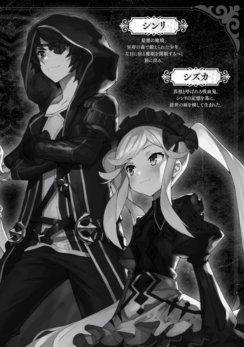

| 【合本版1-2】魔眼のご主人様。 | |
| 黒森白兎 | |
| TOブックス (2018) | |
※本電子書籍は「魔眼のご主人様。」１、２巻を１冊にまとめた合本版です。
illust.がおう
design.AFTERGLOW
一頭の馬が、まるで狂ったかのような勢いで深い森の中を駆けていく。
だが、その背には騎手 もいなければ鞍 もない。ただひとつだけ......使われているのは麻袋 であろうか？ 奇妙な形の『荷物』が、その背に縄 で括 り付けられていた......。
すると突然、その馬の身体は何かにぶつかったかのように吹き飛ばされて、数メートル先の大木 に激しく打ち付けられた。衝撃で何箇所も骨が折 れ、内臓 などにも深刻なダメージを受けたのだろう。倒れた馬は口から大量の血を吐 いていて、絶命は時間の問題である。
その五メートルほど離れた場所には、先ほどまで馬の背に縛 られていた『荷物』が転がっていて、よく見れば破れた袋からは人間、それも子供と思しき小さな手が飛び出していた。
パキパキと木々が踏 み折られる音が響き、馬の巨体を軽々と弾き飛ばした存在がその姿を見せる。
それは......外見だけでいうならば、狼 である。
だが、そのあまりに巨大な体躯 が、すでにこの者がただの狼などではないことを雄弁 に語っていた。
尻尾 の先まで入れた全長は、ゆうに十メートルを超えている。
その巨躯は、艶 やかな黒銀 の毛で覆 われていて、見た目だけなら巨大過ぎる狼だ。
だが、その額 からは何かの結晶 で出来ているかのような黒く、やや透き通った長い一本のツノが生えており。それはすなわち、この者が普通の動物ではなく魔物、それも魔獣などと呼ばれて畏怖 される存在である証である。
深く澄 んだブルーの瞳。その視線は、目の前の血反吐 を吐く馬......そしてあの『荷物』へと向けられていた。
放り出された衝撃で目が覚めたのか、はたまた元より意識があったのかは定 かではない。
だが、その魔獣の視線の先では、その『荷物』がまるで活 きの良いイモムシのようにジタバタとその身をくねらせている。
如何な強大な魔獣であったとて、狩猟 はイヌ科の生物にとって本能的なものなのだろう。もぞもぞと動く『荷物』に興味を惹 かれた魔獣は、大き過ぎる身を低くして足音を立てずにゆっくりとそちらに歩を進めた。
何せこの巨体だ。数歩進むとすでにその前足が届く距離へと到達する。
嬉々 として獲物 に迫 り、下顎 が地面に触れるのではないかと思うくらいに伏せている様は、一般的なペットの犬のサイズなら、さぞや微笑 ましいヤンチャぶりに見えたことだろう。
だが、ここにいるのは十メートルを超す巨体を持ったツノのある狼型の魔獣。
その存在感は、見るもの全てに否応なく死を覚悟させるには十分過ぎた。
絶対的な絶望と死の権化 が、今その凶悪な爪の生えた前足をゆっくりと振り上げて......。
『そこまでにするがいい』
これほどの脅威 に対して、平然と意見できる者などがいようか。
否。断じて否 である。何故ならそれは発言した者の確実なる死を意味するのだから......だが。
おおよそ、重力というものを感じさせないような軽やかな身のこなしで、『彼女』は、樹上 よりその場に降り立った。
一見すれば作り物のようでさえある、その整った美しい顔。なめらかなシルクさながらの金髪を風になびかせ、その間から飛び出した独特の尖 った耳の形から、彼女はこの世界に存在する亜人種 の一種、エルフであると思われる。
フード付きの黒いロングコートを身に纏 い、膝上 まであるロングブーツ。通常のエルフが得意とする弓ではなく、彼女は白銀 に輝く見事な作りの細剣を腰に差していた。
グルルルゥゥゥ......。
この場に、もし第三者が存在していたならば、この光景を見てきっと腰を抜かすに違いない。
何故なら彼女は、低い唸 り声を上げながら牙を剥き出しにして睨みつけてくる魔獣のすぐ前を、腰の剣を抜くこともなく、恐怖にすくみ上がるでもなく、ただただ自然体で歩いて行くのだ。
『止めておいた方がいい。お互いのためにもね......』
そう言って魔獣を一瞥 した彼女は、まずは倒れた馬の前に膝をついた。辛 うじて生きてはいるものの、吐き出した血が喉 を塞 ぎ呼吸すらままならないようだ。馬は激しく痙攣 している。
『よく頑張ったね。もうおやすみ......』
その言葉が終わるのと同時に、チンという金属音が辺りに響 いた。次 いで馬の首がスッとずれ、頭は血を噴 き出すこともなく静かに転げ落ちる。
いったい何が起こったというのか......。
場に居合わせたとて、それを視認出来る者は恐らくこの世に極 わずかしか存在すまい。
確かなのは、彼女の右手が腰の細剣の柄にあてがわれていることから、この結果をもたらしたのがこの美しきエルフであるという事実のみ。
グワオォォォォーン！
そんな一連の彼女の行動に強い不快感を示したのは、ずっと威嚇 を続けていたあの巨大な魔獣である。
『荷物 』を奪われ、さらにはまだ生きているうちにその新鮮な内臓を喰 らおうと放置しておいた獲物に、とどめを刺されたのだ。
怒りを顕にした魔獣は、天に向けて大きく遠吠えを響かせる。
その咆哮は木々を震わせ、この辺り一帯に生息するもの全てに強烈な『恐怖』となって伝わった。
『懲りないね......。また やるのかい』
もはや穏便 には済まないと腹をくくったのだろう。彼女は魔獣に対して半身に構え、右手をそっと剣の柄 に添 えた......。
それなりの力量を持つ剣士同士の戦いであれば、ここからは互いに牽制 をしながら隙を探り合い、静かに戦術を組み立てるところだろう。
だが、相手は怒りに我を忘れた魔獣。
その、対戦者にとっては絶望的とも言える圧倒的な暴力の塊 は、ただいつもと変わらず、敵対するものを等しく蹂躙 するだけである。
次の瞬間、一本一本がペットボトルほどもある爪を出して、その巨大な前足が彼女目掛けて振り下ろされた。
自らの身体よりも太く大きい凶悪な前足による一撃にも、彼女は顔色一つ変えることはない。それどころか、なんと彼女はスッとその前足に向けて前に踏み出していったのだ。
キンッ！
彼女がその長い爪の餌食 となって切り裂 かれるかという刹那 、甲高 い金属音と共に火花が散った。
今回、彼女はすぐに剣を鞘 にしまわなかったために、それが彼女による爪への一撃であることがよくわかる。しかしその一撃は斬ったというより、いなしたと言った方がふさわしいような横から前足の進行方向へのまるで押すような一撃だ。
彼女の細腕のどこにこれだけの力があるというのだろう。
剣に押された前足は彼女を逸 れ、勢いを増した前足に引っ張られる形でバランスを失った魔獣は、前のめりに倒れてその下顎を地面に擦 った。
『まだやるかね。どうだろう、今日も 引き分けにしようじゃないか』
いつの間にか魔獣の鼻先の上に立ち、その眉間に向けて剣を構えている彼女は、魔獣にそう持ちかけた。
凛 としていながらどこか優しく、そしてどこか物悲しい彼女の表情からは、まるでこの魔獣が知人、もしくは友であるかのような感情が見て取れる。
魔獣が、人の言葉などわかるというのだろうか。
だが魔獣は、まるで了承 したとでも言うように目を閉じ、そして身体の力を抜いて地に伏せる。魔獣にとっても彼女と戦うというのは、実は楽しいことであるのかも知れない。不貞腐 れたようにも見える伏 せた巨体とは裏腹に、そのふさふさした尻尾は、随分 機嫌良さそうにゆらゆらと左右に揺れていた。
『ふふ、やはり君は利口 なんだね。馬の方は後で好きにするといい』
魔獣から降りた彼女はそう言って鼻先をポンポンと撫で、今ではピクリとも動かなくなった『荷物』の方へと歩き出した。袋の前で未 だ手に持つその細剣を軽く振り、そのまま鞘へと収納する。
その鍔 が鞘と当たってチンという金属音が鳴ると、袋の真ん中に線が生じ、それはそこから左右へと開いていった。
『これは子供、それも人間の。......しかしこの気配、本当にこの子は人間なのか......』
そんな呟 きを漏 らしながら、エルフは子供を抱き上げるとそのまま何処かへと姿を消した......。
およそ五年の月日が過ぎた......。
薄暗 い洞窟 の住処 から、朝日の差し込む外へ出た俺は、その眩 しさに思わず目を細める。
そんな俺を洞窟の周囲から見ている者たちが複数いたが、彼らから敵意のようなものは感じない。
少し歩いて綺麗 な湧 き水をたたえた泉まで来ると、俺はその冷たい水で顔を洗った。
「ふう、おはようミスティ」
この場に俺以外の誰かがいたとしても、その姿は見えはしないだろう。俺はその、自分だけに見える『相棒』に挨拶 をして、ある場所を目指す。
鬱蒼 と茂 った深い森。誰も踏み込まないこの場所に林道などあるわけもなく、また、人が手を加えていない木々はどれも大きく、その枝を思うままに広げて行く手を阻 んでいた。
そんな中を慣れた様子で難なく進んだ俺は、まるでそれらの木々が大切に守って隠しているかのような、小さな開けた場所へと入る。
そこにあったのは、一面に咲き乱れる美しい白い花の花畑と中心に置かれた一つの大きな石。
重なり合った木の枝や葉が陽射 しを遮 り、昼間でも薄暗いこの森の中で、この場所だけはぽっかりと穴が開いたように上空がひらけていて、筋状に差し込む光はどこか神聖で安らぎさえ感じさせてくれる。
「おはよう......師匠 」
俺はその巨石に右手を伸ばし、そこに彫 った文字を指でなぞった。
『アストレイア』
それは、一メートル以上の高さがある縦長いクリスタルのような変わった形の石。そこには、ただそれだけが刻まれている。
しばらくの間、それをじっと見つめていた俺は意を決したように顔を上げると、その『墓標 』へと言葉をかけた。
「あと二年だ......」
俺はとある事情からこの森に放り込まれ、そしてここに眠る師匠、アストレイアにその命を救われた。
「俺はどうしてこっち に来たのか？ なぜ『魔眼』なんてものを持っているのか？ 正直、今の俺にはまだわからないよ......」
思い浮かぶのは、彼女の凜とした佇 まい。そしてあの美しく優しい笑顔......。
「だけど師匠は言ってくれた。全ての『魔眼』を手に入れ、さらにこの広い広い世界を旅した先に、きっと俺なりの答えが見つかるのかも知れないと。だから......」
俺は、墓標に背を向け歩き出す......。
「今日も頑張るよ、師匠！」
その背に今もなお優しく微笑みかけてくれている、あの人の存在をしっかりと感じながら......。
◆
『冥府 の森』、ここはサーガ帝国とホーリーヒル王国という二大国の境に広がる広大な森林地帯。
あまりにも凶悪な魔物が跳梁跋扈 する事で知られ、屈強 な冒険者でさえ踏み込むことのない......まさに魔境。
その森林沿いを通る両国を繋 ぐ唯一の街道を、一台の馬車が護衛の冒険者を連れ立って走っていた。
御者 の男は奴隷商 。とは言ってもどこかに店を構えているわけではなく、村々で売られた奴隷を都市の店に卸 す、いわば仲介人 だ。窓も無い狭い箱のような荷台には各村で仕入れた奴隷達が窮屈 に犇 めき合っている。
「くそ、せっかく今回は大漁だってのに......」
男を悩ませているのは買い集めた奴隷達に突如 流行 りだした謎の咳 。仕入れた時に問題のあった者はいなかったはずなのだが、既に荷台の半数の者が同様の症状 をみせ始めているのだ。
「......ちぃ、最悪薬代で済めばいいが。おいおい、まさか流行り病とかじゃ無いだろうな？」
これ以上症状が悪化する前に、一刻も早く治すか売ってしまわねば大損 だ。焦 る男は馬車の速度をさらに上げた。
だが、急ぎ過ぎたのが災 いしたのだろう。曲がりで外側に膨 らんだ後輪が道路脇のぬかるみに嵌 ってしまった。そのままずるずると外側に流れた荷台は段差に落ち、傾 いて横倒しになる。
「おいおいどうしたー？」
「ちっ、何やってんだ！」
その大きな音に気付き、先行していた冒険者達の馬が慌 てて引き返してくるのが見えた。
「あ！ てめえ、待ちやがれ！」
「おい！ 逃げるな！」
彼等の視線の先では衝撃で僅 かに開いた後部の扉から、小さな子供が這 い出して森の方へと駆けていく。
「チッ追うぞ！」
「馬鹿！ 止めておけ。ここが何処か分かってんだろ？ ありゃダメだ。もう助かりっこねぇ......」
「それもそうか。馬鹿 なガキだ」
「それより馬車を直すぞ。こんなとこで日没なんて、それだけは死んでも御免 だ！」
子供を追いかけようとした冒険者を連れの男が引き止める。そして彼等は子供の行方には目もくれず、泥 だらけになってフラフラと起き上がってきた奴隷商と共に、急いで馬車の修理に取り掛かることにした......。
◆
「ハア、ハアハアッ......」
奴隷商の馬車から逃げ出したのは、一人の少女であった。青みがかった灰色の髪にピンと立った犬のような耳、同じ毛並みのふさふさの尻尾 が彼女が亜人の一種である獣人種である事を物語っている。
彼女とてここが『冥府の森』だと知れば、森から出るためならば自ら奴隷に戻して欲しいとさえ懇願 するに違いない。そんな場所にそもそも奴隷商の追手など入って来るはずがないのだが、そうとは知らない彼女は振り返る事もなくただ必死に走り続けた。
魔境であるこの森の、その奥深くを目指して......。
周囲の樹上や岩陰には、すでに何かの蠢 く気配がたくさんある。
それらはまるで何かの時を待っているかのように動かず、ただじっと気配を絶 って身を潜 めていた......。
彼女が奴隷商から脱走して四日目。
幼い彼女の肉体はそろそろ限界を迎えつつあった。
ここでは不思議な事に、山歩きに慣れているはずの彼女がいくら探しても木の実一つ見つからず、これだけ豊かな森なのにねずみ一匹姿が見えない。今日までで口にできたのは木のうろにたまっていたほんの僅かな水のみだ。
すっかり痩 せ細ってしまった彼女は、近くの岩にもたれかかるようにして座りそのまま眠ってしまった......。
しばらくして、突然身体にびりびりと襲いくる強大な威圧感と通常では考えられないほど巨大な存在感を近くに感じて、本能的に目が覚めた。
彼女が恐る恐るその瞼 を開くと......。
「............ッ！」
虚 ろな彼女の瞳に映ったのは、開かれた大きな口とそこに並ぶ巨大な牙 。今まさに彼女に喰いかかろうとしていたそれは、彼女が目を開いて声にならぬ叫びを上げた事に気付くとピタリと止まり、そしてゆっくりと閉じていった。
グルルルゥゥゥッ......。
彼女の目線のかなり上で恨 めしそうな唸り声を上げているのは黒銀の巨獣。見た目は狼だが額には長い一本の角が生えており、巨大な体躯は十メートルを超える。その巨獣の透き通った水晶のようなブルーの瞳に睨まれると、その瞬間彼女は自らの死を確信した。
仮に身体が万全であったとて逃げる事を考えもしないだろう。目の前の存在はそれほどまでに桁が違い過ぎた。
巨獣の前足がゆっくりと持ち上がり、それが彼女目掛けて振り下ろされる。
鋭い爪に引き裂かれるかに見えた彼女の前に、突然何処から黒い影が現れ、その巨獣の攻撃を受け止めた。
◆
「クロ、この子はまだ死んじゃいない。ルール違反だよ」
俺は片手でその巨大な前足を受け止めながら、その巨獣『クロ』にそう告げた。
するとクロは、ずいぶん気まずそうにしながらゆっくりと前足を下ろし、まるでペットの犬が反省の意思を示すかのように地面に低く伏せる。
「死んだと勘違 いしたのか？ 確かに、ここまで弱っていれば時間の問題だったろうが......」
そう言いながら、すでに気を失っているやせ細った少女の姿を見た。
ボロボロの衣服に、走りながら木々に引っ掛けたのであろう身体中にできた無数の傷。
そして、何より気になったのは、その首につけられた不快な気配のする首輪......。
「クロの気にあてられて気絶しているみたいだな......。でも、こちらの失態である以上、このままにはしておけない」
俺は彼女のその軽すぎる身体を抱きかかえ、住処へと連れ帰ることにした。
◆
俺が彼女を連れ帰ったのは森の高台にぽっかりと口を開けた大きな洞窟。
ここはもともとクロが住処としていたのだが、中は意外と広く雨露 をしのぐのにも適しているので、俺もここでクロと一緒に暮らしているのだ。
「ミスティ、手を貸してくれないか」
そう言うと、俺の頭の横あたりに突然逆さ向きの丸い水面が現れた。
その水面から水滴がにゅっと出てきて垂 れ下がり、それはみるみる大きくなって、ちょうど一メートルほどになるとパチンと弾ける。
『シンリが、身内以外の者をここに連れてくるなんて珍しいわね』
水滴が弾けた後には、一人の少女が立っていた。
透き通るような白い肌にエルフのような尖った耳。なびく髪と身にまとったワンピースのような衣装は、まるで水そのもので出来ているようで、常にゆらゆらと揺らめいている。
「......ちょっと事情があってね。早速ですまないがこの子に『洗浄 』と『治癒 』をかけてあげてくれないか」
『助けるつもり？ でも、この子厄介なモノを持って......まあいいわ、シンリの頼みだものね』
彼女、ミスティが小さく呪文のようなものを唱えると、少女の......まずは汚れきっていた体が綺麗になり、次いで身体中の傷が全て消えていく。
『終わったわよ。でも空腹だけは治癒では治らないからね』
「わかってる。ありがとうミスティ」
ミスティは悪戯 っぽく笑いながらそう言うと、再びパチンと弾 けてその姿が消えた。
「さて......」
ミスティが帰っていった後、改めて気を失っている少女を見る。
「首輪は......後回しだな。まずはこの汚い衣装をなんとかしないと......」
彼女が着ている衣服もミスティのおかげで、まるで洗濯 したように清潔 にはなっているのだが、いかんせんそれは元から状態が悪すぎて、どうにもボロをまとっているようにしか見えない。
俺は奥から昔着ていたシャツを一枚持ち出して彼女が横になっているベッドの上に置いた。
「さすがに、初対面で服を脱がせるわけにはいかない......よな」
ベッドに腰掛け、その髪とぴょんと立った耳をしばらく撫 でた後、俺は彼女が目覚めた時に食べるものを準備しようと、台所へと移動する。
「......あそこまでいくと、がっつりしたものはかえって体に毒だろう。おかゆが理想なんだが......ああ、思い出すと米が恋しくなる。やっぱり日本人は米だよな......」
干 し肉と干したキノコ、それに幾 つかの香草で出汁を取り、それに豆や根菜、麦などを入れてややドロドロになるまで煮込 む。味付けはシンプルに素材の甘さとそれを引き出す塩のみとして、仕上げに香草を少量入れる。
「あとは食べる前にこれをひと摘み乗せれば......」
「いやあぁぁぁぁぁぁぁっ！」
「......お、目が覚めたのか」
突然、洞窟内に少女の叫び声が響き渡った。
目を覚まして自身の状況に驚いているのかとベッドまで行ってみれば、彼女はまだ目覚めてはいないようで、何かに魘 されているようにもがきながら体をバタつかせている。
「いや、いや、いやよ......お願い......」
苦しそうな表情で涙を流しながら必死で悶える彼女の横に座り、ベッドから落ちそうになる身体を支えた。
すると、触れられたことに反応したのか彼女は俺の腕にしがみついてくる。
「お願い、お願いだから捨てないで......お父さん、お母さん！」
何やら複雑な事情があるのだろう。俺は彼女の身体をしっかりと抱き寄せ、その頭と背中を優しく撫でた。
そのまま五分ほど経つと、どうやら彼女は落ち着いたようで全身から力が抜けていく。
「こ、ここは......」
ゆっくりと開かれた虚ろな瞳。現実と今見た夢が混同しているのだろうか。これでは今事情をあれこれ説明したとて頭には入るまい......。
......グキュルルルゥゥ。
意識ははっきりせずとも、その体は本能に忠実なようだ。
元気に意思表示する彼女のお腹の音を聞いた俺は、シャツを渡してそれに着替えるようにと言い残し、さっき作った粥 を準備しに台所へ戻った。
「そうか、彼女も自分の親に......」
さっき魘されていた時の彼女の言葉からおおよその事情は想像できる。チクリと痛む胸の痛みを振り切りながら、俺は器に粥をよそい、水の入ったコップと一緒にそれを運んだ。
「あ、あの......」
言われるままにシャツに着替えていた彼女は何かを言おうと口を開く。
それを手で制した俺は、ベッド脇の机の上に粥を乗せた盆を置いた。
温かで鼻腔 をくすぐるいい香りの湯気 が辺りに広がり、それは彼女のお腹をさらに幾度も大きく鳴らす。
「とにかく......今はこれを食べて。全部、それからでいいから」
俺がそう言ってスプーンを手渡したのだが......。
「あうっ！ ご、ごめんなさい私......」
それは彼女の手からこぼれ、ベッドの上に落ちてしまった。
無理もない......。全くわからない状況下で見知らぬ者に食事を出されているのだ。しかも空腹で体には力が入らず、さっきはクロに気を失うほど威圧されて......。
見れば彼女の手、いやその全身が小刻みに震えているのがわかる。
「大丈夫だよ。ほら、毒なんて入ってないから」
俺は拾ったスプーンで粥をすくい、彼女に見えるようにしてまずは一口自分で食べて見せた。
「うん、我ながらなかなかの出来だ。食べさせてあげるから、さあ口を開けて」
もう一度粥をすくい、しばらくそれを冷ましてから彼女の口の前まで運んでいく。キュッと結ばれていた唇 を美味 しそうなその香りが徐々に開かせていき......。
「あむ............ンンッ！」
どうやら気に入ってもらえたようだ。食べた瞬間ピンと立った尻尾が、今はブンブンと左右に揺れている。ひと口目を咀嚼し終えると、まるで餌を待つ雛鳥 のように、彼女は恥ずかしそうに自らその口を開けた。
「おかわりもあるから慌てないで。いきなりだと体に悪いから、ゆっくりゆっくりと食べるんだ」
俺の言葉に小さく頷くも、体は食べ物を欲してどうにもならないのだろう。彼女はスプーンに食いつくような勢いで食べ続け、粥を三杯食べたところで、再び眠ってしまった......。
◆
翌日から、彼女との奇妙な同居生活が始まった。
彼女にはまだ告げてはいないが、ここは最悪の魔境である冥府の森だ。彼女のような者が一人で出歩けるほど生易しい場所ではない。
先日、彼女がクロに会うまで一切襲われなかったのは、魔物たちと俺の間にある特別な決まりごとがあったからなのだが、むやみにうろつかれて彼らを刺激するのも避けたほうがいいだろう。
ともかく、あれから彼女は洞窟を一歩も出ることなく過ごしていた。
あの首輪は『隷属 の首輪』という魔道具だった。
装着されて主人を決定されれば、その者の命令に絶対服従させられてしまう一種の精神操作を行う物のようだ。
周囲の者から見れば、これを着けられていることで自分が人間以下であると自ら吹聴 しているような、忌 むべき差別思想の象徴。
「お願い......外さないで......私なんか」
見ていて気分のいい物ではないので、外してあげると言ったのだが、彼女は頑 なにそれを拒 んだ。
無理やりというのは避 けたいので、いつでも外せる旨 を伝えるだけとしてそのままにする。
心配していたが、食事は普通に食べてくれるようだ。おかげで、ガリガリだった体つきもふっくらしてきて、ボサボサだった毛並みに艶 が出て肌にも赤みが戻ってきている。
ただ、夜には相変わらずよく魘されているみたいだ。そんな時は決まって抱きしめながらさすってあげると数分で落ち着きを取り戻していくのだが......。
さらに数日経ち、彼女が居ついて一週間が過ぎたが、俺は未だに彼女の口からは何の事情も聞き出せずにいた......。
◆
「............！」
それは、突然のことだった。
荒れ狂ったような魔力の波動が伝わってきて、それを感じ取ったクロがピクリと身を震わせる。
クロに寄りかかっていた俺はポンポンとクロを撫で、大丈夫だとなだめてから洞窟の入り口を目指した。
「うふふふ。お兄様、女 の気配を感じますわ！」
そこに立っていたのは、十歳くらいにしか見えない美しい少女。
髪型は、地に着くほどの長い銀髪を左右で束 ねた、いわゆるツインテール。
妖艶ささえ感じさせる整った顔に妖しく輝くのは右は真紅、左は黄金のオッドアイ。
何より目を引くのは、ゴシック調のアレンジが効いた、ふんわりとしたスカートのそのメイド服姿だろう。
「落ち着けシズカ。中で説明するが、お前の思っているようなことは何もないぞ」
彼女の名はシズカ。用事で森の中の他の地域に出向き、しばらく留守にしていたのだが、ちょっと......いや、かなり変わった俺の『妹』だ。
随分と苛立 っているのだろう。その可憐 な外見に似合わない凶悪な魔力の波動は、周囲の魔物たちを震え上がらせている。
俺はとりあえず簡単に事情を話して彼女を落ち着かせ、二人で洞窟の中に入っていった。
「ふうん......これが。しかも随分妙なものを着けているのですね、お兄様？」
シズカは少女を見るなりそう言って意味深な視線を俺に向ける。やはり彼女もあの首輪を不快に感じたようだ。
「別に、俺が着けたわけじゃないからな。本人が外したがらないんだよ......」
状況がわからぬ獣人種の少女は、小さく震えながらベッドに腰掛けたまま......。
そんな彼女の前にシズカが立ち、両手を腰に当てて控えめ な胸を張る。
「ワタクシはシズカ。お兄様の妹ですわ！」
どや！ と言った感じで自己紹介をしたシズカだが、少女からの返事はない......。
「あぐっ！」
次の瞬間、少女の体はその首輪に手をかけたシズカによって軽々と持ち上げられていた。二人の身長差はほとんどない、いやむしろ少女の方がわずかに大きいように感じられる。
そんな相手を、シズカは軽々と片手のみで持ち上げているのだ。
「挨拶もできないなんて......。名前がないのかしら？ だったらワタクシがつけてあげようかしら、ゴミとか泥棒猫 とか......」
「止めい！」
「ふぎゃっ！」
どこの小姑 だ、と思って見ていたがこれはさすがにやりすぎだ。
俺は、シズカの頭をペチンと叩いてその手を降ろさせる。
「ゴホッ！ げほげほっ......あ、アイリです......」
よほど怖かったのだろう。少女、アイリは、咳き込みながらも涙目ですぐに自分の名前を名乗ってくれた。
「アイリね。わかったわ。ところで......アイリに確認しておきたいことがあるのだけれど......」
俺に叩かれた頭を、なぜか少し嬉しそうにさすりながら、シズカはアイリに向かって言葉を続ける......。
「貴女、ここが『冥府の森』だってこと分かってる？」
「い、い、いやああああぁぁぁぁぁぁぁーっ！」
シズカの言葉を受けて、これまでで最も大きなアイリの叫び声が洞窟内にこだまする。
「う、嘘 ですよね？ 嘘って言ってください！」
「いいえ、本当よ。アイリは今、冥府の森の中にいるわ！」
俺は、彼女が自ら聞いてくるまでそのことには触れないでおいた。それは余程の体験をしてきたであろうアイリの精神がそのショックに耐えられるかどうか不明だったからだ。
そんなこととは知らないシズカは、あっさりとそれを話してしまったのだが......うん、リアクションの割には大丈夫......かな？
「でもでも、私は何日もここを彷徨っていました！ ここがもし本当に冥府の森ならそんなこと絶対に不可能でしょう？」
「ふふふ、愚問 ねアイリ。それはお兄様こそが、この冥府の森の主人であるからに決まっているでしょう！」
「............？」
いや、さすがにとうとう思考が停止し始めたようだな......。
「いいかいアイリ。俺がこの森を治めるようになって幾つかのルールを魔物たちに課したんだ。その中の一つに迷い人の扱いに関するものがあってね。敵意を持つ者は容赦 なし、本当にただ迷い込んだ者には、死ぬまでは一切の手出しを禁止するってね」
「治める......冥府の森......森の主人......あわわわ......」
「あらあら、まあ......」
知らされたあまりの現実に、再びアイリは意識を失ってベッドにそのまま倒れ込んだ......。
◆
「いやああぁぁぁぁぁっ！」
「あら、目覚めましたわね」
「だ、誰......？」
意識を失ってしばらくすると、また『悪夢』に魘され始めたアイリ。
そんな彼女がベッドから転げ落ちぬよう、シズカが押さえていてくれたのだ。
辺りをキョロキョロと見回した後、アイリもやっと現在の状況が思い出せたようで......。
「じゃ、じゃあ、ここはやっぱり冥府の森......私は、なんて短い一生だったのでしょう......」
そんなことを言いながら、やっぱり小さく震えている。
「ねえ、もういいかしら？ アイリが途中で気絶しちゃうからワタクシもお兄様もずいぶん待たされているのだけれど......」
ここがどこであろうと知ったことではないとばかりに、シズカはアイリへの質問を再開しようとする。
......微妙な問題なんだ、強引な聞き方をしなければいいんだが。
「アイリは、なんで奴隷なんかになったの？」
......ぶっ、思いっきり直球だー！
「わ、私には、普通に生きていくことなんて......許されない、から」
アイリがその重い口を開いた。だが、発した言葉、表情、それらは全てを諦 めてしまったかのようだ。
「ふうん、へええ、そうなのね。だったら......」
シズカの雰囲気 が豹変 する。馬鹿が、やり過ぎるなとあれほど......。
「がはっ！ い、息が......」
目の前にいるのは自分と同じくらいにしか見えない少女。だが、そのシズカから発せられる威圧感が彼女に呼吸さえ許さない。
「気に入らない。ええ、気に入りませんわ。その自分だけが不幸であると言いたげな偽物の顔を見ていると虫唾 が走る。このままひと思いに虫のように潰 してあげてもいいのよ......」
その強大な存在感は、まるでクロ、いやそれ以上にも感じられた。
クロに襲われた際は、その強大さゆえに一度は死すら覚悟したアイリだが......。
「......ねえ、なあにこの手は？ 貴女死にたいんじゃなかったの？」
先ほどからずっと......アイリの右手はシズカに伸ばされ、必死に何かを掴 もうとしているかのようだ。
その手は小さく、あまりに弱々しい。だが、確かにその手は、自らの『生』を求めて伸ばされたもの。
「貴女程度の力で、このワタクシに歯向かえるわけないのに......。その苦しそうで必死な顔、全てを諦めましたって仮面が剥 がれてしまってますわよアイリ」
「わ、私は......まだ......」
「聞こえませんわ。ほほほ、やっぱり死にたいようですわね！」
「じ、死にだぐ......ありまじぇん！」
ここに来てから初めて聞いた、彼女の本心からの言葉。
まったく、素直じゃない妹だ......。
シズカ自身もアイリの本心を引き出すための演技だったのだろう。
そっとアイリに近づくと、その涙でぐちゃぐちゃになった顔を優しく拭いてあげている。
「落ち着いたかしら？ じゃあもう一度聞くわよ。なぜアイリは奴隷になったの？」
アイリは一瞬下を向いたが、唇をぎゅっと噛み締めて顔を上げると、再び瞳にいっぱいの涙を浮かべながら語り始めた。
「親に......親に売られたんです。わ、私は......『呪い』持ちだからっ！」
そう言って彼女は、着ていたシャツの上着を脱ぐと、その背中を俺たちに向ける。
「......っ！ お兄様、これは......」
「なんてことを......」
そこには、背中の中心辺りに、まるで二匹の蛇が絡んだような怪しげな痣 が残っていた......。
「詳しく、聞いてもいいかい？」
「はい。あれは............」
俺の問いに答え、アイリはその『呪い』がかけられた経緯と奴隷になるまでの話を語り始めた。
少女の身にはあまりにも無慈悲で残酷 な境遇。決して思い出したくもないだろう。
だが彼女は、ゆっくりとそして絞り出すようにして、涙ながらに最後まで話してくれた。
それは一年ほど前、彼女が慣れ親しんだ森の中に一人で山菜採りに出かけた時の事。
森の中に多くの人の気配を感じた彼女は、その気配を追って森の奥へと進んだ。
「あれはいったい......？」
相手に気づかれぬよう茂みに身を潜めた彼女の視界の先には、怪しげな黒衣の一団が何かの儀式めいた事を行っていた。
そんな彼等の中心にある随分と古い小さな祠 は、これまで何度もこの辺りに通っている彼女でさえ、まったく見た事がないものだ。
「誰だっ！」
よく見ようと身を乗り出した彼女は、うっかり足下の小枝を踏んで折り、音を立てて彼等に気付かれてしまった。
背を向けて一目散に逃げだした彼女。だが、背後で不思議な声が聞こえると、背中が急に熱くなり体が重くて思うように走れなくなってしまう。
しかし、幼き頃より慣れ親しんだ山野。彼女は、この森を熟知していたおかげで、なんとか追手を振り切って村へと戻った。
それから数日寝込んだが、いつまでも体は重く、症状は一向に回復しない。
それどころか、家族、さらには友人や近隣の者達までもが体調不良を訴えだし、一時は彼女が流行病を持ち込んだのでは？ とさえ疑われたほど。
しかし彼らが彼女から離れ、近隣の村や療養所に行くことですぐに症状が回復すると知れると、今度は周り全ての人々が彼女を、何か恐ろしいものでも見るようにして避けるようになっていった。
その頃になると最初は心配してくれていた家族も、村の者達同様に彼女を恐れ、ついには母屋の外にある道具小屋に閉じ込めてしまったという。
それでも、食事などを運んで彼女と接する機会のある家族の体調は、やはりいつまでも悪いまま。
結果、両親は彼女をただの口減しだと偽って『呪い』の件を隠したまま、奴隷商に売り渡したらしい。
......想像以上にひどい話だ。アイリは何もしてないじゃないか。
◆
「泣き疲れて、眠ってしまいましたわね......」
「まったく、さっきはやり過ぎだシズカ。かなり焦ったぞ」
あれから、泣きながらその身の上を話したアイリは、そのまま倒れるように眠ってしまっていた。
「それで......見ました のお兄様？」
「ああ、『双蛇の呪い』というらしい。自らの全ステータス低下。それに......」
「それに......？」
「範囲効果で状態異常耐性低下 、運下降 のおまけつきだ」
「なんて最悪な呪い......それでアイリの両親は......」
実の両親に捨てられる。これが彼女が生きることを一度は諦めてしまっていた理由だろう。
「それでお兄様、アイリはどうなさいますの？」
「そうだな......。無論、彼女の意思を尊重するが、アイリは生きたいと望んだ。俺は、俺に出来る範囲でその望みを叶えてあげようと思う」
「お兄様が師匠に救われたように......ですか？」
「さあ、どうだろうな......。そういえばミスティ、ちょっといいか？」
俺の問いかけに応え、再び逆さ向きの水面が現れる。そこから出てきた大きな水滴は、再び少女の人型となった。
『......無理よ』
「え？」
人型になったミスティは、すぐにそう答えてプイッと顔を背 けた。
水面のようなワンピースや髪に波紋 が広がり、それらはしばらくゆらゆらと波打ち続ける。
『あの呪いをどうにかできないか？ でしょ。それはいくら私でも無理な相談ね』
「そうなのか......」
以前治療してもらった時から、アイリに妙なものが憑 いているのはわかっていた。ミスティもすぐにそれに気付いたみたいだったし、なんとかなりそうだって思っていたんだけど......。
『得手不得手 ってのがあるのよ。私は水の最上級、いいえ水の根源にも等しい存在。水を冠する魔法や魔術なら、それこそ出来ないことのほうが無いくらいね』
そう言って振り返ったミスティは腕を組んで胸を張る。その動きで、再び美しい波紋が紡ぎ出される。
『私がシンリやこの近辺を瘴気なんかから守っているのは『清浄化』。だけどあの呪いを解くためには『聖浄化』の力、それもかなり高位の術者による解呪が必要になるわ』
「......ということは光魔法の」
『そうよ！ さすがに木登りが得意なリスに泳げと言っても、泳ぎが得意な魚に木の上に登れと言っても、それはどちらも無理でしょう。つまりはそういうことよ！』
ここ、冥府の森は中心部から濃い瘴気が溢 れてきていて、それらにある程度の耐性を持つのはここで生きる最低条件と言える。
そのため、魔法などを使う魔物にしても極端に闇魔法の系統に偏 っていて、わざわざ相反する光魔法を身につける者など全く存在しないと言ってもいい。
「まいったな。ここでは一番の難題じゃないか......」
「でもお兄様。師匠やお姉様から、ある程度の魔法はひと通り習ったと仰ってませんでしたか？ それなら......」
確かに、俺は師匠と、とある人物（？）から魔法に関する指導をひと通りは受けている。
「......からかっているのか？ 俺が魔法の制御が上手くいかないのはお前も知っているだろう」
『確かに。シンリったら、以前焚き火をしようとして、森を焼き払いそうになったものね。ふふふ』
「そんなことも仰ってましたわね。......ですが、困りましたわね」
俺の魔力量はとてつもないらしいのだが、どうにも魔法自体が合わないらしく、ほとんどの魔法は師匠らによって使用を禁止されているほどだ。その知識の中に光魔法も多少はあるが、ミスティの言った『聖浄化』というのは聞いたことがなかった。
『シンリは、あの首輪は外すつもりなんでしょう？ だったら、後でちょうだい。気休め程度だけど使えそうなもの作ってあげる。その時はシズカも手伝ってね』
「わかったわミスティ」
「呪いの効力は多少それで抑えてもらうとしても、根本的な解決にはならない。結局は......本人の意思次第ってことか......」
◆
『......ちゃん』
......誰だ。
『......お兄ちゃんったら、ねえ！』
......この声。そうか、これは確か......。
『......お兄ちゃん、真理 お兄ちゃん！ 起きないと学校に遅れるよ！』
......ああ、うるさいなあ。また静 か......わかったから布団を引っ張るなよ。
「もう、お兄様！ いい加減に起きてくださいませ！」
「......静？ いや、ああシズカか」
目を開いた俺の上には、マウントポジションを取ったツインテールの少女、シズカが乗っていた。
「......何をしている？」
「いえ、別に。ただもう少し待ってもお目覚めにならなければ、ワタクシの情熱的な口付けで起こして差し上げる他ないかと......」
「うん。起きた！ ああ、ぱっちりと目覚めたから降りてくれ」
「チッ......」
渋々 とベッドから降りていくシズカ。その後ろ姿が再び『静』と重なって見える。
......アイリの件があったからだろうか。久しぶりに向こう の記憶を見たのは......。
彼女、シズカと俺は正確には兄妹ではない。
俺はかつて『高樹 真理』という名の日本人であった。交通事故で仮死状態になった俺の魂が、この世界で行われた謎の『儀式』によって召喚され、新たな生命として産まれ落ちたのが、現在シンリと名乗っている俺である。
日本にいた頃、俺には二つ違いの妹がいた。彼女の名は『高樹静』。
俺をこの異世界に召喚する儀式には、その膨大な魔力を得るために様々な魔道具や曰く付きのアイテムが触媒として使われた。
その中の一つに古の吸血鬼を封じた『紅玉』と呼ばれるアイテムがある。
封じられていた『真祖』と呼ばれた吸血鬼の自我はすでに失われていたものの、その特殊な能力は紅玉の中に残っていて、儀式の際に作られた俺との間の魔力のつながりを使って赤子の俺から魔力を吸い始めた。自我のない紅玉は、魔力と同時に俺の中にある知識や記憶までも共有し、その中にあった妹『静』の存在に強く惹かれていく。
そうして十年以上の月日を費やし、真祖の超再生能力でなんとゼロからその身体を創り出した彼女は、俺を追ってこの冥府の森へとやって来たのだ。
憧れだった記憶の中の静に、さらに俺が好きだったアニメやラノベなどの理想の妹像を反映したその容姿は、すでに静のそれではない。
ツインテ美少女でメイドで妹、さらには真祖の能力を引き継いだ吸血鬼で不死者という、なんとも濃い存在である。
「何をぼんやりしているんですの？ まだお目覚めでないならやはり......」
「起きた！ ああ、ぱっちり起きたぞ！ よしシズカ、起こしてくれた礼に今日の修行はキツめにしよう！」
「ぷうぅ！」
可愛らしく頬を膨らませて俺を睨むシズカ。
姿や種族は違っていても、そのベースは俺の記憶の中にある愛すべき妹。口調や、やや残念さが際立った性格は俺の知識の影響だろう。
不思議な存在の彼女だが、一つだけはっきりしていることがある。
この世界で生きる俺はシンリ。そしてシズカは、そんな俺の大切な妹であり『家族』なのだ。
◆
「こ、ここは......」
結局、アイリは昼近くまで眠ったままであった。
「何の音......？」
彼女は、外から聞こえる大きな音に気付き洞窟の入り口に向かって歩いて行った。
「あう、眩しぃっ！」
薄暗い洞窟で長く過ごしたために、差し込む日差しは数秒彼女の視界を奪う。
やっと目が慣れてきたアイリの瞳に飛び込んできたのは、通常では想像だに出来ないほどの異常な光景だった。
「クロ、邪魔よどきなさい！」
グワァウッ！
一人はシズカだった。衣装こそ昨日と変わらぬメイド服であったが、その手には長い柄のついたハンマーを握り、その重そうな武器を軽々と振り回している。
そしてもう一人。いやもう一匹は、あの強大な魔獣クロ。
その巨体に似合わぬ、あまりにも素早い動きを見せながら、その凶悪な牙と爪を振るうクロ。
「嘘......夢なの、これ......」
舞い上がる砂塵が落ち着くと、その向こうに、その一人と一匹を同時に相手にしている人物の姿が見えた。
それは、昨日シズカから『冥府の森の主』と言われていた人物。
昨日まで、周囲をまったく見ようとしていなかった彼女は、この時初めて自らを救ってくれた人物の姿をはっきりと認識した。
身に纏うのは、黒いノースリーブのシャツに黒いズボン、膝下で折り返した黒い革のロングブーツ。
そのシャツ越しに見える体つきは逞しく、まるで野生動物のようにしなやかで無駄のない筋肉のつき方だ。
彼女自身初めて目にする黒髪と黒い瞳は、左目に着けられた黒い眼帯と相まって、彼自身を神、または魔神のような、ある種特別な存在であると感じさせる。
いや、特別な存在であるのは間違いない......。
なぜなら、シズカたちによる猛攻を難なく凌ぎ、完全に圧倒しているのは彼の方だからだ。
「ま、まさに冥府の森の......主人」
体や頬にわずかな火照りを感じながら、彼女はその姿から目を離せずにいた......。
◆
クロの巨体が上から覆いかぶさるようにして俺に迫っている。
「もらいましたわぁぁぁぁっ！」
そんなクロのさらに上、そこに巨獣の背を借りさらに高く飛んだシズカの姿が見えた。
「良い連携 だ。だけどまだまだ......」
俺は、そう言って目の前のクロの下顎を下から蹴 り上げる。
大きく仰け反ったその頭が、落下してくるシズカに向けて、ちょうどカウンターとなって衝突した。
「ぶぎゃんっ！」
あまりの重量差によって弾き飛ばされたシズカと、上下からの衝撃に蹲 るクロ。
落ちてきたシズカが側の地面に突き刺さったのを見て、先ほどから俺たちを見ていたアイリへと声をかけた。
「おはようアイリ！」
「お、おはようございますご主人様！」
「は？」
「はうっ！ ななななんでもありません......」
どうやら、昨日の森の主人云々の話で妙な誤解をされてしまったようだ。俺をご主人様と呼んだ彼女は、顔を真っ赤にしながら俯 いてしまっている。
「よっと！」
俺はまるで犬神家よろしく、地面に突き刺さってもがいていたシズカを片手で引き抜き、起こしてあげた。
彼女の頭からは、破損部位の再生時特有の煙 のようなものがシュウシュウと出ていたが、すでに目立った外傷はほぼ消えて いたようである。
クロの治療と全員の『洗浄』をミスティにしてもらい、俺たちはアイリと一緒に洞窟の中へと戻っていった。
◆
洞窟に戻った俺達は昼食を食べ、食後のお茶を淹れてから向かい合った。
昨日、シズカやミスティとも話したが、これからのアイリのことをきちんと話しておく必要があるからだ。
「機会がなくて自己紹介もまだだったが、俺はシンリという」
「そしてワタクシの愛しいお兄様にして、冥府の森の絶対主ですわ！」
ガウッ！
......シズカもクロも余計な口を挟 むんじゃない。ほら、またアイリが萎縮 して震えているじゃないか......。
「その前に......アイリは昨日生きたいと望んだ。それならそんな首輪はもう必要ないね？」
ちらりと、一瞬シズカのほうを見たアイリだったが、あの恐怖の中で知った自らの『生』への執着が、彼女の心の有り様を変えたのだろう。彼女ははっきりと頷いてみせた。
「じゃあ、外すよ......」
そう言って俺は、『魔眼』の能力を使って隷属の首輪を外す。
「......えっ！」
アイリは、絶対に外れないと聞いていた首輪が、あまりに簡単に外れたことに驚いている。だが、ここまで見聞きしたことの桁が違いすぎて彼女自身慣れてしまったのだろうか、しばらく首を撫でた後、すぐに俺に向き直った。
「続けるが......アイリの呪いを消す手段は、今ここには存在しない。それには高位の光魔法が必要なんだ」
「光魔法......」
世間一般で多く使われている魔法に比べ、光と闇という特殊な属性魔法はその使い手が極端に少ない。それらに適性を持つ者が見つかれば幾つかの国が勧誘にわざわざ訪れるくらいなのだ。
ただ漠然 と、それがとてつもなく困難な話であるとだけ認識したアイリもやや顔を伏せる......。
「俺たちは旅に出るんだ......」
「......旅？」
唐突な話にアイリが驚いて顔を上げる。
「ああ、あとちょうど二年経ったら俺たちはこの森を出る。そのために毎日、自分を鍛 えているんだよ」
話の意味がわからずキョトンとしているアイリの前で、俺は左目の眼帯を外した......。
「見て......」
「こ、これは......でも......綺麗」
アイリに見せた左目。その瞳はすでに黒とは程遠く、グレーもしくは銀と表現した方がいいだろう。ゆらゆらと光を反射するごとに色を変え、時折虹色の輝きを見せるそれは、すでに人の眼球とは言い難い。
「綺麗か......ありがとうアイリ」
気味が悪いと避けられなかったことに安堵 し俺は再び眼帯を付け直す。
「よく聞いてアイリ......この目は『魔眼』なんだ」
「魔眼......」
「ああ、それも強大な魔の力を七つも宿した......ね」
アイリが呆気 にとられているのも無理はない。
一般には魔眼など伝説上の存在。いわばおとぎ話に出てくる作り話でしかないのだ。
それでも、物語によく登場するのは吸血鬼 や淫魔 が使う『魅了 』や伝説の魔獣コッカトリスが使うといわれる『石化』がいいところだ。
七つもの力を持つ魔眼など、おとぎ話でも聞いたことがない。
「だが、まだ不完全なんだ。俺は魔眼の力のうち四つまでしか使えないんだよ」
「お兄様、すでに開眼している魔眼は何でしたっけ？」
「ああ、今使えるのは【傲慢眼 】【暴食眼 】【嫉妬眼 】【強欲眼 】だな」
「それって、いえ間違いなく『七つの大罪』ですわよね」
そう、俺の魔眼の能力は開眼するとその名前が脳内に浮かび上がるのだが、それらはいわゆる七つの大罪の名を冠している。そこから俺は、この能力が全部で七つだろうという結論に至ったのだ。
ちなみに物心つく前から【傲慢眼 】【暴食眼 】は開眼していた。無論、乳幼児の俺がそれを理解して使いこなした......なんてラノベのようなことはなかったのだが、そこからある程度の開眼条件は推測している。多分だが魔眼の開眼には、人間としての本能的な欲求が大きく関係しているのだろう。赤子の俺が母乳を求める行為から『暴食』、構って欲しいと望んだから『傲慢』、物心ついて多くの知識を求めたから『嫉妬』、師匠の技やその強さを求めた結果が『強欲』といった具合だ。
まあ、いささか発想が単純過ぎると自分でも感じているが......。
「そうだな......だとすれば残るは『憤怒』『色欲』『怠惰』か......」
「ああっ！ お兄様と一緒に『色欲』を求める旅。なんて甘美な響きかしら......ハアハア」
何を想像しているのか、両腕で自らの体を抱きしめ、息を荒げてクネクネとその身をよじるシズカ。
......うん。とりあえず放っておこう。
「ゴホン。さてここからが本題だ。俺たちは魔眼の開眼条件を探りながら世界中を旅して回る。その中で多くの魔法や知識に触れる機会があるだろう......」
「っ！ それなら、もしかしたら光魔法も......」
「だが当然、旅は困難なものになるだろう。あらゆる危険が待ち構えているに違いない。だから俺たちはこうして自らを鍛えてるんだ。その旅路を何者にも邪魔させぬように！」
......さて、ここまで言えば言いたいことは伝わったはず。あとは彼女の意思次第だが......。
「故郷に帰りたいと望むなら、その道中に必要になる金品は準備しよう。ここでひっそりと暮らしていきたいなら、最低限の生活は保証するよ。アイリがこれから生きていく手助けはするから、それだけが選択肢ではないということも考慮してくれていい」
......呪いの件がないならば、彼女は危険な旅に同行などさせたくはない。
だが、これからずっと一人で生きていくのも辛いだろうし、両親の元へ帰ったとしても、もう昔のような関係には戻れないだろう。
「......私を連れて行ってもらえませんか？」
正直、一晩くらい考えたいと言い出すと思っていたのだが、彼女は今ここではっきりとその意思を示した。
おそらくはここ数日、すでに彼女なりに色々と考えていたのだろう。
「もう一度言うが、危険な旅だ。途中で命を落とすかも知れないよ？」
「シンリ様に会わなければ、すでに私は死んでいました。今さら怖いものなどありません」
確かに、これまでの彼女の境遇はいつ死んでてもおかしくないものだ。それに、ここは冥府の森。あまりに絶望的な環境でかえって開き直ったのかも知れない。
「俺も一応男だからね、何か間違いがあるかも知れない」
ってか、そんなに睨むなシズカ。確認だ、確認！
「私はシンリ様が望むなら......ひゃっ！ い、いえ大丈夫だと思います！」
思いますって何だ？ まあいい、じゃあ最後に......。
「旅に同行を求めるならば、自分の身は自分で守ってもらわないといけない。つまり、明日から俺たちと一緒にさっきのような修行に参加する......そういう決意だと受け取っていいんだね？」
......うわー、あからさまに血の気が引いていってるよ。まあ、ついこの間食べられかけた魔獣とこれから毎日戦いなさいって言われればこうなるよな......。
さすがに、これまでのように即答とまではいかなかったが彼女はそれでも顔を上げ、目の端に涙を溜めながら答えた。
「はい！ 頑張りぃまひゅぅ！」
......噛みながら。
◆
「おはようアイリ。昨日はよく眠れたかしら......って、そのクマを見ればわかるわね」
「お、おはようございますシズカ様」
「旅の仲間になったんだからシズカで構わないわ。気になるならせめて、さん付けまでにしてちょうだい」
「わかりましたシズカさん！」
翌朝、顔を洗うために訪れた泉の前で先に来ていた二人が何か話していた。
「おはよう二人とも」
「おはようございますお兄様」
「おはようございますシンリ様」
「いや、俺のことはシンリで......」
「絶対に不許可ですわ！」
なんとなく聞こえていた会話に、いい機会だと思って俺も普通に呼んでもらおうと言いかけたのだが、言葉を遮って猛烈 にシズカに反対された。
「いいことアイリ。これは命令です！ 森の絶対主たるお兄様に、この森最弱の貴女が尊敬を込めて『様』付けをするのは当然です。どうしても名前呼びがしたいと言うなら、この私を倒してからになさい！」
......まったく、どこの格闘家だお前は。まあ、シズカがここまで言う以上仕方がないか。
「お、おはようミスティ」
「みすてい？」
「ああ、きちんと見るのは初めてか......出てきてあげてよミスティ」
俺が何もないところに挨拶をしたことで、アイリが不思議そうな顔をする。本来は契約者である俺以外に、実体化を見られるのを極端に嫌うのだが、今日は別件の用事もあったようで、すんなり姿を見せてくれた。
「はわわ......これがミスティ様......」
何の知識もないとしても、ミスティがいかに高位の存在であるのかが伝わるのだろう。アイリはまるで神でも降臨したかのようにうっとりと見惚れている。
『シズカに渡されたもの、出来たわよ！』
「おお、ありがとうミスティ......ってか、これ何気に物凄 くないか？」
ミスティが俺に差し出したのは幅十五ミリほどの小さなリボン状の輪。全体にブルーで小さな金具の付いたそれは、昨日外した隷属の首輪の素材を加工して作った、いわゆるチョーカーだ。元は黒かったのだが、ミスティが多くの付与を組み込んだために属性に近いブルーに変色したのだろう。
『当たり前でしょう。身体能力向上に身体強化はもちろん各種耐性の大サービスよ！ まあ、人間の街でなら『国宝』にでもなるような代物になってるわ』
......やっぱ、やり過ぎたか。まあシズカが張り切っていた時点でなんとなく予想はついたけど。
「アイリ、これは君の呪いを相殺させるために作った。これさえあれば、体が重いと感じることも、周囲に悪影響を与えることもないだろう」
「あ、ありがとうございます」
そう言って、俺から受け取ったチョーカーを恐る恐る着けようとするアイリだったが、国宝級の例えが効いてるのだろう、手が震えて上手く着けられないようだ。
チラリとシズカを見て、着けてやれよと目配せをする。
だが、彼女は、いやミスティまで揃ってニヤリと意味深に笑い、二人でシンクロしながらそっぽを向いた。
「......はあ、まったく。アイリ、貸してごらん。着けてあげる」
俺はアイリからチョーカーを受け取ると彼女の首に手をまわす。
一瞬、顔が触れるほどに近づいた二人......互いの息がかかるのがわかる。
言い方は悪いが、先日まではまるで屍のようになってしまっていた彼女。
だが、今こうして間近で見る彼女は、頬をうっすらと赤く染めていてとても......
「綺麗だよアイリ！」
「シズカうるさい！」
「ぷぷ、お兄様も今そう思われていたくせに！」
シズカの茶々が入らなくても、確かにそう感じたさ。綺麗だと......。
ちなみに、チョーカーをつけた瞬間から彼女の体はミスティの加護を受けたことによって淡く光を放っていて、事実、本当に綺麗であった。
「ふわあ、これは......体が、体が軽いですシンリ様！」
「効果があったようでよかった。だが、勘違いしちゃいけない。アイリの呪いはまだ消えてはいないんだ。全てはここからスタート、わかるね？」
多少、付与のし過ぎもあるのだが、彼女は久しぶりにしっかりと体に力を入れられることに驚いてピョンピョンと飛び回り、随分と嬉しそうだ。だが、これで安心してもらっては意味がないので、厳しい状況はしっかり認識してもらわねばならないだろう。
「わかってます。昨日、シンリ様の戦いぶりに見惚れてしまいました。あれは本当に格好良かった」
アイリはそう言って目をキラキラと輝かせる。
「だから決めたんです！ 私はこの人にずっとついて行くんだと。足手まといかも知れません。ですが、そうならないようしっかり頑張って強くなります。ずっとシンリ様のお側にいられるように！」
ブンブンと激しく振られた尻尾と荒くなった呼吸が、彼女の興奮と気合のほどをうかがわせる。
......と、いうか興奮しすぎて近づきすぎだ。触れそうなほどに顔が......近い。
「わ、わかった。では遠慮 なく厳しくいくからな！」
「はい、シンリ様！」
◆
およそ一年半が過ぎた。
洞窟の近くの広場では、いつもと変わらぬ俺たちの訓練風景が繰 り広げられている。
「もっと、互いの連携を意識しろ！ アイリ、クロに寄り過ぎだ。それでは互いに邪魔になるぞ！」
違っている点と言えば、それが現在は一対三になっているところであろうか。
アイリは獣人種。それも狼の血を色濃く引いた『狼人種 』であった。
農業などをして穏 やかに暮らす者は例外だが、本来は魔物などとも共存していた獣人は、その生活環境によって飛躍的 な身体の成長をみせる。
この冥府の森で暮らし、日々俺たちと厳しい訓練に明け暮れる彼女も例外ではなく、身長はすでに百五十センチを超えており、女性らしいしなやかさを持ちつつも無駄 のない筋肉がついたその体つきからは、もはやあの日の、死にそうだったか弱い少女の面影は全く感じられない。
「ん？......みんな、そろそろ朝食にしよう！ チビ達もお目覚めのようだ」
そんな俺の言葉に最も早く反応したのはクロであった。
あっという間に洞窟入り口に走り寄ってそこに立ちはだかったクロの足元から、モコモコとした黒と白の毛玉のようなものが這い出してくる。
「あ！ クロナにシロナ！ おはよう！」
その姿を見つけて、クロさながらの矢のような速さで駆けつけ、そのモコモコに抱きついたのは、アイリだ。
......まったく、訓練でそのスピードを出して欲しいよ。
数日前、クロには二匹の子供が産まれていた。
同じ狼系の種族として気が合ったのだろう。アイリが訓練に加わり始めると、クロが彼女の面倒をよくみるようになり、その様子はまさに母娘さながらであった。
それにより母性本能が刺激されたためかは定かでは無いが、突然クロが身篭り、後にこの二匹が産まれると、今度はアイリが姉のようにその子らを可愛がっているのである。白い個体にシロナ、黒い個体にクロナと名付けたのも、もちろん彼女だ。
二匹とじゃれ合うアイリ。微笑ましい光景のはずだが、その二匹がすでに大型犬ほどの大きさであるため、正直襲われているようにしか見えないが......。
「さあ、早く朝食を済ませよう。済んだら『不帰 の森』でレベル上げだぞ！」
「ぶーぶー！」
「またホネホネトレインなんですね、とほほ......」
二人はあからさまに嫌な顔をする。まあ、それも仕方がないだろう。
全部で五つのエリアに分けられる冥府の森。
その中のひとつ『不帰の森』は、瘴気がやや濃く普通の魔物の生息には適さないので、それらに全く影響を受けないアンデッド系のみが暮らす特殊な地域となっていた。
しかし、ここは強者でなければ存在すること自体が困難な冥府の森。いくら下位の骸骨兵士 といえども、そのレベルや強さは半端ではない。
アイリの言うホネホネトレインとは、倒しても復活する彼らアンデッドとの連続手合わせによる強制レベルアップ訓練のことだ。
かなり効率のいい訓練なのだが、何せ対戦相手の見た目がアレなので、二人はあまり乗り気ではないらしい。
「文句を言わない。あと半年しか無いんだ......外に出て後悔するぐらいなら、俺は今心を鬼にする！」
「鬼ぃー様なんていやぁぁ！」
「鬼シンリ様......あうう」
まあ、いつもこんな調子だが、二人の成長......それも特にアイリの成長には目を見張るものがある。
「お兄様ぁー、早く朝食にいたしましょう！」
「シンリ様、器の準備手伝いますね」
......うん。二人とも、少しは料理も自分で出来るよう成長しようね......。
「ついに......この日が来たよ、師匠」
さらに半年が過ぎ、いよいよ迎えた旅立ちの日。
朝日に照らされてキラキラと美しく輝く師匠の墓前で、俺はそう言って手を合わせる。
俺がこの森に入り、彼女に助けられたのは、もう七年も前のことだ。
「これ......大事にするから......」
俺が身に纏うのはフード付きの黒いコートにグレーのズボン、それに黒い革製のロングブーツ。腰に差した白銀の細剣も含めて、それらは師匠から譲り受けたものだ。
「お兄様の貞操 はきっとワタクシが守って、いいえ！ 奪ってみせ......ぎゃんっ！」
「真面目にって、言ったよな！」
「申し訳ありません。ですがお兄様もアイリも、このシズカが必ずお守りいたしますわ！」
そう言って、俺と同じように手を合わせるシズカ。
ふざけて俺に叩かれた頭を、なぜか嬉しそうにさする彼女は、いつも通りトレードマークの長いツインテールにメイド服姿だ。
「シンリ様の足手まといにならぬよう、頑張ります！」
続いたのは、青みがかった灰色の髪を肩の辺りで一つに束ね、首に青いチョーカーを着けたアイリ。ゆったりとしたズボンにノースリーブの変わった形の上着は、全てシズカのお手製である。
この二年間で本当に逞しくなった彼女が、俺が作ってあげた長槍を持ち、シロナに跨って森を駆けて行く姿は、かのもののけな姫様さながらであった。
「じゃあ、行ってくる！」
『......頑張るんだよシンリ』
幻聴......だったのかも知れない。
だが、それは確かに俺の心に響き、熱いものとなって全身を駆け巡った。
「うん、師匠」
そう言って俺は、振り返ることなく一歩を踏み出した......。
◆
冥府の森を出て北にずっと進めば、ホーリーヒル王国の王都があるらしい。
森の外の世情に疎 い俺たちは、情報収集を行いながら、とりあえずは王都を目指して旅を始めることにした。
今の俺たちならば、走れば馬など比べものにならぬほど早く走れるのだが、旅の醍醐味 や情緒 などとシズカに言いくるめられて、とりあえずはのんびりと歩いての移動だ。
一時間ほど歩くと、前方に複数の人影があるのを見つけた。
そのすぐ近くには、横倒しになった燃え盛る馬車とそれに繋がれたままの馬が暴れている。
誰かが盗賊にでも襲撃されているのだろうか......。
「お兄様、テンプレです！ さあ行きましょう！」
「テンプレって......。だが見捨てるのもなんだな。とりあえず俺一人で行くから二人は待っていてくれ」
旅立ち早々の戦闘で彼女達がやり過ぎないとも限らない。それに普通の人の戦闘能力の程度を知るいい機会だ。
二人を残し、俺は一気にその場まで駆けた。途中、燃え盛る馬車の火をミスティに消してもらい、暴れる馬がこれ以上自らを傷付けないように眠らせる。
「いやぁっ！ パパぁ、助けてパパぁ！」
「む、娘を、娘を返してくれぇ！」
「ったく、積荷 にろくな物積んでないお前達が悪いんだ！ ガキでも売らなきゃオレ達が無駄骨になっちまうんだよ！」
「............」
小さな女の子を小脇に抱えたガラの悪い男。別の男に足蹴にされながらその少女に必死に手を伸ばすのは父親だろう。
シズカすまん。間違いなくテンプレ展開だ、これは......。
「さっさと引き上げるぞ。そいつはいらん、さっさと殺せ！」
「いやぁパパ、パパぁ！」
父親を足蹴にしていた男が、剣を振りかぶる。泣き叫びながら必死に暴れる少女。
だが次の瞬間、剣を振りかぶっていた男が......消えた。
「あ、やり過ぎた......」
俺はその男の背後に回り込み、とりあえずそこからどかせようと軽く蹴っただけなのだが、蹴られた男は十メートルほど先の地面にくの字に折れた状態で倒れている。
やばいな、あれ大丈夫なのか......。
「な、なんだテメェ！」
異変に気付いた仲間の男達が、一斉に俺を見る。その数は八人。少女を抱えた男がリーダーなのだろう。
「相手は一人だ、殺せぇ！」
そんなリーダーの男の指示で、彼等は俺を取り囲んだ。
「さて、お手並み拝見と行くか......」
一斉に襲いかかってくる男達。実戦慣れしているのだろう。その動きには人を傷付けることへの躊躇 など微塵 もない。
「だが、遅すぎる......」
攻撃する姿や剣の振りは様になっている。
だが、一撃二撃と次々数人で打ち込んできているにもかかわらず、先読みする必要もなく、反射だけで楽々避けれてしまうのだ。
「この程度なのか......」
迂闊に手を出せばさっきの二の舞だし、さて、どうしたものかな......。
「いやぁ、やだあーっ！」
「暴れんな！ おとなしくしやがれ！」
そんな事を考えていると、状況がやや不利と見たのか、リーダーの男が少女を連れたまま、近くに繋いであった馬に乗り込もうとしているのが見えた。
「逃さないよ......」
俺はすかさず彼の後ろに移動して、そう声をかける。
「うひゃぁっ！」
離れた場所で仲間と交戦中だったはず。その俺がどういうわけか背後にいて、いきなり声をかけてきたことに驚いた男は、少女を抱えていた手を思わず放してしまった。
「キャアアァァ！」
馬に乗せようとしていたところで宙に放り出された少女。あの高さから落ちればただでは済まない。
「よっと。大丈夫かい？」
再び、目にも留まらぬ速さで移動した俺は、落ちてきた少女を優しく抱きとめた。
「て、てめえいつの間に！ くそが、そのガキを返しやがれ！」
俺の動きにまったくついていけず、何が起こっているのか理解が追いつかないのだろう。リーダーの男は、とりあえず少女を抱く俺に掴みかかろうと迫ってきた。
それを軽く躱して、よく映画なんかであるように足をちょんとかけて転ばそうとしたのだが......。
「ひぎゃぁぁっ！ 足が、俺の足がぁ......」
引っ掛けた男の足は、膝からあり得ない方向へと曲がってしまった。
......おいおい、どんだけ加減が必要なんだ。
「そこまでだぁ！ おい、これを見なぁっ！」
逃げずに次の手を出してくるあたりは、良くも悪くも彼等の経験が豊富な証拠だろう。
残った盗賊達は倒れたままの父親に短剣を押し当てていて、彼を人質にするようだ。
......まあ、その人他人だから別に脅しにもならないけどね。
「はあ、お前らの相手もいい加減面倒になってきたな......」
そう呟いて苛立ちを込めた視線と殺気を彼等に向けると......。
「あれ？」
故意に発したわけでもない程度の軽い『威圧』。
たったそれだけのことで、その場の全員が気を失ってバタバタと倒れてしまった。
馬鹿な......。こ、ここまで加減しなきゃダメなのか......。
盗賊と一緒に気を失ってしまっている父親と、俺の腕の中でぐったりとした少女。
二人の姿を見ていると、森で少々修行を頑張りすぎたのではないかと、今更ながらちょっぴり後悔した......。
「お兄様ないわー......」
「シンリ様、やはり鬼......」
いや、別に全員を殺したわけじゃないんだから......二人とも、そんな冷めた目で見るのは止めようか。
「ゴホン！ ま、まあ、これ位の加減が必要だって事だ。村に着く前にわかって良かったな。うん、おかげで貴重な情報が得られた」
未 だ冷 ややかな視線を送ってくる二人をよそに、俺は気絶している親娘を両肩に担ぎ上げる。
馬車の荷は粗方 燃えてしまっていたので放置し、馬は起こしてアイリが手綱を引いていくことにした。
盗賊は......まあ、このまま捨てておこう。
あれだけの目に遭 ったんだから、とりあえずこの近辺には近付かなくなるに違いない。
初っ端から波乱の旅路を予感させる出来事に遭遇したが、とりあえず気を取り直して俺達は目的の村を目指して歩き出した。
ゆっくりだったはずなんだが......僅か十五分足らずで、木の塀に囲われた村が見えてくる。
「あそこだな......さて、この二人どうする？」
いきなりこれでは目立ってしまう。村が見える安全そうな場所にでも二人を置いていこうと思ったのだが......。
「当然！ このまま行くに決まっているじゃありませんの。これで助けたお兄様の名声が世に広まるんですわ！」
「だから、広めたくないんだって......。ん、どうしたアイリ？」
後ろから引かれる感覚がして振り返ると、アイリが泣きそうな顔で俺のコートの袖 をつまんでいる。
「シンリ様、こんな場所に置いていって......。もしまたあんな連中が来たら......女の子は......」
アイリにはさっき連れ去られようとしていた女の子の姿が、なんとなく自らの境遇と重なって見えたのだろう。
「わかった......。わかったよ、二人も村まできちんと送るよ」
目立ちたくはないのだが、そうまで言われれば仕方ない。
だが、別に大男でもないこの俺が両肩に人を二人も担いでいるのはそれこそ目立つので、女の子をシズカに背負わせ、俺は父親をおぶって村の入り口らしい木戸のある門を目指した。
◆
「おいおい何があった？ こりゃあエバンスにマリエじゃねえか！」
門に近づくと門番をしていた軽鎧 を纏った男が俺達に駆け寄ってきた。
どうやら連れてきた二人もこの村の住人らしい。
「よくお聞きなさい！ 彼らはワタクシのお兄さ......ぎゃん！」
「シズカは下がってろ！」
自慢気に事情を話そうとするシズカを一喝し、下がらせる。
そして俺は、二人が盗賊に襲われていたので咄嗟 に助け出し、身を隠しながら命からがら逃げてきたのだと説明した。
「そうか......エバンスは近くに野草を採りに行ったはず。奴らめ、ついに村のすぐ近くまで来やがったって事か......」
「奴ら？」
「ああ、盗賊団が近づいているって情報があってな。ん、お前さん達も見ない顔だな。旅人かい？ その割に身軽なようだが......」
「はい。実は............」
確かに、馬も連れず、大した荷物もない俺達はどう見ても怪しすぎる。
俺は咄嗟に先ほどの話に乗っかる事にして、冒険者になるため山村を旅立ち、道中盗賊に襲われたので馬と荷物を囮 にして逃げおおせたのだと説明した。
そのため同じ状況にあったエバンス親娘を見捨てる事が出来ず、策 を弄 して助けたのだとすれば全てつじつまが合う。
うん、我ながら良い言い訳を考えたものだ......。
「そりゃあ大変だったなぁ。冒険者になるなら、この村にギルドの出張所がある。場所を教えるから行くといい。身分証も無いんじゃこっから先の街なんかにゃ入る事も出来んからな」
「ありがとうございます。......と、この村には入らせてもらっていいんですか？」
今の話の流れだと融通 を利かせてくれるようだが、一応確認しておかなきゃな......。
すると彼は白い歯を見せながら爽 やかに笑い、サムズアップして答えてくれた。
「大切な村人の恩人に、野暮 なことは言いっこなしだぜ！」
「......ありがとうございます」
うん。シズカ、そんなに俺を見なくても言いたい事はわかってる。この展開、何から何までどテンプレだ......。
エバンス親子を門番の男性に預け、村に入った俺達は、早速彼に聞いた冒険者ギルドの出張所とやらを目指す事にした。
「お兄様、この流れは間違いなく美人受付嬢に会うパターンですわよ！」
「美人さんなんですか？」
「そうよアイリ、ここで美人が登場するのがお約束なのよう！」
そう興奮気味に話していたシズカだったが......。
ニャー。
「............」
「猫だけだな......」
「はい、猫ちゃんですね......」
言われた通りの道順を歩き、辿 り着いた一軒の家の戸を開ける。
中は、まるで無人駅の待合室のような簡素な造りで、長い木のベンチと受付用らしき木の机だけがぽつんと置かれていた。
期待していた受付嬢などいるはずもなく、受付の机の上には一匹の猫が気持ちよさそうに伸びをしている......。
「こんなの認めませんわ！ お兄様、次の街に行きましょう！ ええ、そうですわ、今すぐまいりましょう！」
このみすぼらしい出張所では、居てもいいとこ、お爺さんやお婆さんあたりじゃないだろうか......。
シズカも同じように感じたのだろう。さっさと出ようと俺達を急 かす。
「いやシズカ。どっちみち身分証が必要になるんだからこの際、受付は誰でもいいんじゃないか？」
「そんなぁ、お兄様はテンプレというものが......」
「お、お前らもう来てたのか！」
扉の前で押し合っていると、その扉が突然開かれた。
入ってきたのは、さっきの門番の男だ。
「ああ、先ほどはどうも。えっと......」
「おお、そうだったな。オレの名はハンス。こう見えて俺も冒険者なんだぜ！」
「俺はシンリ。こっちはシズカとアイリです。ところで、ここのギルド職員の方が見当たらないんですが？」
「いるじゃないかここに！」
「......え？」
「はっはっは、驚いてるなぁ......。オレがこの出張所唯一の職員にして、ギルマスだ！ 尊敬したんなら特別に、お兄ちゃん！ とかハンス様！ って呼んでくれても構わんぞ！ あっはっは」
......うん。少し前に爽やかと表現したのを撤回しておこう。ハンスはその......かなり暑苦しい男のようだ。
彼はＢ級冒険者。雰囲気と身のこなしから、そこそこの実力者であると思われる。
「ところで、ハンスサンは何故門番なんかをなさってらしたの？ 一応ギルマスでしょうに」
彼が言った兄というフレーズに、不快感を隠そうともしないシズカは名前をワザと棒読みにしながら質問する。
「そりゃあオレがこの村で一番強いから！ って、言いたいところだが......実際は単なる人手不足だ。村の連中は皆んな忙しいからな、手が空いてるのはオレだけってこったなぁ！ あっはっは」
「............」
暇なのかよっ！ とツッコミたい気持ちを全員が抑え、長くなりそうなのでさっさと手続きを始めてもらう事にした。
「よし、お前達。これに名前を書いてくれ」
彼が机から出してきたのは三枚の木の板。厚みといい、大きさといいまるで蒲鉾 板みたいだ。
「書けたか？ じゃあ、そこに魔力を注ぐんだ。出来ない奴は血を一滴垂らしてもいいぞ」
言われるまま魔力を注ぐと、書いた名前が一瞬輝き、そして板の中に消えた。
裏返して見るとそこには『Ｆ』と書かれている。これはあれだな。ランクが『Ｆ級』という事なんだろう。
「全員、上手くいったみたいだな。いいか？ これは仮冒険者証だ。本物は金属製なんだが、あれは大きな街のギルドでしか作れない。これはそれまでのあくまで『仮』だ」
「......Ｆ級」
さっきの人助けを加味されて、いきなりの昇級もあると甘い考えを抱いていたシズカはあからさまに不満な顔をする。
それはそうだ。そんなラノベみたいな展開がそうそう続いてなるものか。
「あっはっは。仮冒険者証は駆け出しの新人用だからな、もとよりＦ級しか作れんよ！ お前達だって二十年も地道に頑張れば、いつかオレみたいになれるさ。ま、頑張んな！」
その流れで二人とも俺を見るな。大丈夫だ、俺はあんな風になるつもりはない......。
「本来、ギルドカードには様々な記録が残るんだが、仮冒険者証にそんな機能はない。受けた依頼の達成状況なんかはそのカードの記録を参考にする場合が多いから、早めにちゃんとしたギルドカードを作るこったな」
「そうよ！ 早く正式なカード作りましょうお兄様。こんなのはノーカウントですわ！」
「いやお前らノーカウントって......」
確かに受付がおっさんだったのは残念だが、とりあえずはこれで三人とも冒険者になったんだ。ここはそれを喜ぶ場面なのでは......。
見ろシズカ、感慨深 く自分の仮冒険者証を見つめ続けてるアイリの純粋な姿を。
「シンリ様ぁ、木目のこの辺りがアイリって読める気がするんですが......」
うん、違った。さっき消えた文字を探していたのね。
だが、アイリはそう、純粋過ぎただけだ。何もおかしなとこなんてないから大丈夫。
「ああ、無理だ無理。それはな、大きな村や町の入り口に設置されている特殊な魔道具でしか読み取れねえよ。魔道具にかざした時、本人が近くにいる事で名前が浮き出る仕組みになってんだ。どうだ、馬鹿にしたもんじゃないだろう！」
彼の言葉の語尾は明らかに、シズカに向けられたものであったが、当の本人は気にもかけずに二本の指で仮冒険者証をつまんでぶらぶらさせている。
「ハンスのお兄ちゃんいる？ ここに黒いお兄ちゃんが来てるって聞いたんだけど？」
「おおマリエ、気がついたのか？ 恩人達ならほれ、そこだ」
微妙な場の雰囲気を見事に変えて入ってきたのは、さっき俺達が助けたエバンスの娘マリエである。
「あ、黒いお兄ちゃん！ わあぃ！ さっきはありがとう！」
そう言って無邪気 に笑う彼女は、俺に駆 け寄りいきなり抱きついた。
「気がついたんだね。怪我はなかったかい？」
「うんっ！ お兄ちゃんが悪い人みんなやっつけてくれたから大丈夫ぅ！」
「......やっつけた？」
先ほど、命からがら逃げてきたという俺の話を聞いたばかりのハンスが、マリエの言葉を聞いて俺に疑いの視線を送る。
「まあ、ちょっと足を引っ掛けたりしただけだから、やっつけたってのは言い過ぎだよ」
「そなのー、でもマリエを助けてくれたでしょ！ ありがと、お兄ちゃん大好きぃ！」
「ぎるてぃ......」
......こらシズカ、小さな子に敵対心を向けるんじゃありません。
「それでね、それでね！ パパがお礼をしたいからお家に案内してきなさいって言ってるの！ だからお兄ちゃん一緒に行こう！」
「まあ、手続きも済んだし。お前らにゃ今夜の宿も必要だろう。エバンスんとこに厄介になるといいさ」
嬉しそうに俺の手をぐいぐい引っ張っていくマリエ。
俺達なら今日じゅうに次の町まで走って行けそうだが......。
「別に急ぐ旅でもないか......」
ハンスの言うように一晩世話になるのも悪くないか。
同じように思っていたのか、二人ともうんうんと頷 いている。ま、これも旅の醍醐味 だよな。
「こっち、こっちぃー！」
マリエに手を引かれながら村を歩く。ここシイバ村は人口百人にも満たない小さな村だ。
塀 に囲 われているのは居住区だけで、村の周囲に各々が畑などを作り、そこで採れたものを持ち寄る小さな市場もある。
今歩いている通りがまさにその市場が出ている場所なのだが、中には数件の商店らしきものもあるようだ。
「このお店はみんなゼフおじちゃんが作ってくれたんだって。そう言えばもうすぐだよ、ゼフおじちゃんが来るの。楽しみだなぁ！」
村に農具や生活必需品 などの商店を作ったのは、セイナン市のゼフという商人らしい。彼は商品の補充の為に定期的に村を訪れていて、彼の率いる商隊がもうすぐ来る頃だという。
「お兄様！」
「うん。馬車を手に入れるにしても、次の町へ行くのにも、そのゼフという商人と知り合いになれるといいんだがな......」
エバンスの家に着くと彼と奥さんのカトリーヌさんが出迎えてくれた。
話を聞きつけたご近所さんたちも加わり、彼らからは質素ながらも温かいもてなしを受けた。
こうして、俺達の旅最初の夜は、賑 やかに更けていくのだった......。
◆
「おいエバンス！ 昨日の新人達はいないか！」
翌日の朝は戸を激しく叩くハンスのそんな大声で目を覚ました。
何か急用だろうか。俺達は、とりあえず急いで準備をしてハンスの下へと向かう。
「おお！ 一緒に来てくれ、猫の手も借りたい事態なんだ！」
「猫って......。いったい何があったんです？」
「それは行きながら話す。とにかく来てくれ！」
そう言ってハンスは俺達が村に来たのとは反対の方向へと走り出した。
「新人よ......お前さん、本当は盗賊倒したんだろ？」
「............」
「ふん、まあいい。だが勝手にそういう事にさせてもらうさ。すぐ近くで、この村に向かっていた商隊が襲われている」
「それってゼフさんの？」
「聞いてるんなら話しが早い。奴はこの村の恩人だ、なんとしても助けなきゃならん！ 力を貸してくれ！」
......シズカ、言いたい事はわかるから。そんな、あからさまに嬉しそうな顔をするな。
「おお、見つけた！ ハンスお兄ちゃん大変だ！ 南門に盗賊が向かって来てやがる！」
「何ぃっ！ そっちもなのか？ くそったれが......」
「............今、お兄ちゃんって？」
村人がもたらしたのは、村に危機が迫っているという報せだというのに、俺達はハンスの呼び名の普及率 の高さのほうに驚いていた。
「新人、改めて聞こう。名前は？」
「......シンリです」
「よし、シンリ。お前達にはゼフの商隊を任せたい。頼めるか？」
「わかりました」
「よっしゃ！ シンリ、終わったら駆けつけるから無理すんじゃねえぞ！ おい、村の男共を南門に集めろ！ 急げよっ！」
慌ただしく指示を飛ばしたハンスは、向きを変えると今来た道を全力で引き返していった。
それを見送り、村の北門を出てから少し行くとゼフの商隊と思しき一団が見えた。
彼らの数台の馬車が、どうやら馬に乗った集団に囲まれてしまっているようだ。
「ふふふ、お困りのようですわね？」
先頭の馬車の御者台に乗っていた男性の隣には、いつの間にか抜け駆けしたシズカがそう言ってちょこんと腰掛けている。
昨日、出番がなかったからウズウズしていたんだろう。大した敵もいないし、まあ今回は見せ場を譲ってみるか......。
「だ、誰だい君は？」
「正義の味方......ってところかしら」
「何を言って......いや、それよりもお嬢ちゃん、状況がわかっているのかい？」
「当然。ところでゼフさんというのは貴方なの？ ワタクシ達馬車が買いたいんですけど、お持ちかしら？」
「残念ながら無いよ。しかし、馬車を買うならせめてセイナン市くらいの大きな町まで行かないと......」
「あら、本当に残念だわ」
「てめえら、この状況わかってんだろうなあ！ 何をごちゃごちゃ言ってやがる？ ってか、そいつどっから湧いて出やがったんだ？」
盗賊達など完全に眼中にないといった様子でゼフと話すシズカ。放って置かれた盗賊達が苛立つのも当然だ。
「では、ゼフおじさま。こういたしませんこと............」
「わ、わかった。それくらいでこの命が助かるのなら安いもんだ」
「ふふふ、では商談成立ということで」
なにやらコソコソとゼフと交渉していたシズカは御者台の座面にすっと立ち上がった。
「やる気か嬢ちゃん？ なかなか綺麗な顔してるじゃねえか。たっぷり可愛がってから売りとばしてやるぜ！」
「調子に乗るなよ、この雑魚 どもがっ！」
盗賊の下品な発言にやや機嫌を損ねたシズカがそう言葉を発すると、周囲の空気がビリビリと震える。
そして辺りを包み込む静寂 ......。
「嘘？ あらやだ、もう終わりなんですの？」
きょとんとした様子の彼女の周りでは人がバタバタと倒れ、馬さえも泡を吹いて倒れてしまっていた。
......これで昨日の俺の心境がシズカにもわかってもらえただろうか。
彼女も俺とともにあの冥府の森で鍛え上げているんだ。
うっかり、本気で気を解放していたら、この場で数人が死んでいてもおかしくはない。
俺達は気絶した盗賊を荷縄で縛ると、馬達を起こしてシイバ村へと戻っていった。
◆
「......こ、ここは？」
「シイバ村です。盗賊はあの通り......」
ゼフと商隊の者達を起こし、無事に村に着いた事を知らせる。俺が指差した先には気を失ったままの盗賊達が縛られた状態で転がっていた。
「なんと！ でも、いったい私は......」
「すみません。仲間が術の威力の加減を間違いまして、皆さんまで影響を受けてしまったんです」
「そうでしたか......いやはや大した効き目ですな。しかし、助かりました。ありがとうございます」
まさか、うっかり威圧し過ぎちゃったんですとも言えず、魔法か何かを使った事にしたのだが、どうやら上手く誤魔化せたようだ。
「......いえいえ」
「では、とりあえずこれを。残りはいつでもセイナン市にある私の店に取りに来られて下さい。命の恩人に......」
「ちょ、ちょっと待って下さい！」
当たり前のように、ゼフは俺に金貨の詰まった小さな袋を差し出してきた。
事情を聞くと、全財産の半分を払う約束で自身の命と商隊をシズカに救ってもらったという。
何を話しているかと思えば......いやいやシズカ、それはやり過ぎだろう......。
「あ、あれは冗談ですよ。俺達はハンスの指示で救援に向かったに過ぎません。いわば冒険者としての仕事です」
仕事とはいえ正式な依頼書がある訳ではないので報酬があるのかは不明だ。でも実際大した事もしてないのだから、それも仕方ない。
「おお、ゼフ！ 無事だったか！」
「これはこれはハンスお兄ちゃん、おかげさまで助かりました」
すると向こうからハンスが息を切らして駆けて来るのが見えた。
っていうかゼフ、お前もお兄ちゃん呼びなのか......。この村とその関係者への彼の呼び名の普及率はかなりのものだな。
「おいおいおい、全員捕まえて来たのか！ 只者じゃない気はしていたが、こりゃとんでもない新人がいたもんだぜ！」
縛り上げられた盗賊達を見て感嘆の声を上げるハンス。
再発を防ぐためにと捕まえてきたが、これからの手間を考えれば捨ててきた方が良かったのかも知れない。
何より俺達の周りにはすっかり人だかりが出来ていて、これではちょっと目立ちすぎだ。
「しかしゼフよ、お前さん護衛も付けずに来たのか？ そりゃ襲ってくださいって言ってるようなもんだぜ」
「いえハンスお兄ちゃん、護衛はちゃんとセイナン市のギルドで雇 ってまいりました。ただ盗賊との混戦の最中、彼等に盗賊を抑えておくから急いで村を目指すように言われまして......。無事なら良いのですが」
......あれだけ敵の数がいるのに護衛対象を孤立 させた？
全員一気に倒せるほどに腕に自信があったのか、考えなしの馬鹿なのか、あるいは......。
そんな事を考えていると、にわかに門の辺りが騒がしくなり、人垣の向こうから馬に乗った三人の冒険者が姿を見せた。
「おお、皆さんよくぞご無事で！」
「......ッ！ ゼ、ゼフさんもご無事でなにより」
先頭の馬に乗った女性冒険者は一瞬、ゼフと縛られている盗賊の姿に驚きの表情を浮かべたが、すぐに平静を装い明日の出発の段取りだけを済ませて仲間と共に村の中へと去った。
......あからさまに怪しいが、村の中で何かをするつもりはないだろう。それよりも今はこっちが優先だ......。
俺はゼフに、先ほどのシズカとの約束をなかった事にしてもらう代わりに、セイナン市まで乗せて行ってくれるよう頼むことにした。
「それは私としても心強い。ではこうしましょう！ ハンスお兄ちゃんに依頼して皆さん宛に護衛依頼書を作ってもらいます。正式な依頼となれば報酬も出ますし、冒険者としての評価にも繋がりますからね」
こうして俺達は、ひょんなことから冒険者になって初めての、正式な依頼を受ける事になったのだ。
◆
翌朝、ギルドでハンスから依頼書を受け取って村の北門に向かうと、すでにゼフの商隊が出発準備をしているところだった。
「おはようございます、ゼフさん」
「これはこれはシンリさん。おはようございます。よろしくお願いしますね」
軽くゼフと挨拶を交わしてから、本来この護衛任務を受けている冒険者達のところへと向かう。
あまり気乗りはしないが、先輩にきちんと筋は通しておくべきだろう。
「おはようございます。ご一緒に護衛するようになったシンリです。こっちが仲間のシズカとアイリ。よろしくお願いします」
「......フンッ！ 新人になんて構っているほど暇じゃあないんだ。君達はせいぜい馬車の『中』でも見張ってるといいさ」
三人の中にいた女の冒険者がそれだけ言い捨て、三人ともさっさと背中を向けた。
まあ、いきなりの増員、それもなりたての新人とくれば、彼等としては面白くないんだろう。
「......だから、シズカもアイリも、武器を構えるの止めようか」
そんなやり取りをしていると、門の辺りが慌ただしくなり頑丈そうな木で作られた門が、なぜか突然閉められた。
「おーいっ！ シンリ、シンリはいるか？」
村の方から息急き切って駆けて来るのはハンスだ。一体何が起こっているんだろう。
「ハンスさん、どうしたんです？」
「ぜえぜえぜえ......。出発前でよかった。すまんが村の存亡 に関わる一大事だ。頼む！ もう一度力を貸してくれ！」
汗まみれの彼の目は、いつもの余裕が一切見られないほど真剣だ。
「奴が、ついにあの『四災悪 』が出てきやがった！」
ハンスの言葉に、それを聞いていた者全員が凍 りつく。
平然としているのは、それを知らない俺達とゼフの護衛で来ている冒険者達のみだ。
「すみません。俺はその人物を知らないのですが、そんなに危険なんですか？」
「ああ。かつて、ここからさらに南へ一週間ほど馬車で下ったところにサハラ村って比較的大きな村があったんだ。そこを乗っ取った『奥様の気まぐれ団』という巨大な盗賊組織が村ごと根城にしててな。それが、二年くらい前か......主力の遠征中に襲撃を受けて根城は壊滅したらしい。恐らくは冥府の森の魔物の仕業なんだろうが、そりゃあひでえ有様だったらしいぜ」
「............」
「さすがに危険だってんでそこは放棄されたんだが、こともあろうに、奴らは次の根城にしようとこの村を狙ってやがるのさ。そんな奴等には頭領の下に『四災悪』と呼ばれる腕利きの幹部達がいてな、そのうちの一人が今、村の外を包囲している盗賊と共に来ているんだ！」
「......四災悪。わかりました、俺達でよければ力になります」
嫌な地名を聞いたものだ......。だからと言ってこの村を見捨てるわけにもいかないだろう。
俺は念のためアイリを北門に残し、シズカと二人でその幹部とやらが来ている南門へと向かうことにした。
「見えるか？ あの真っ赤なローブを着込んでやがるのが通称『赤の災悪』カライーカだ！」
到着した俺達は、硬く閉じられた南門の木の隙間から、村を包囲する盗賊の様子を伺っている。
恐らくは百人は下らない数の賊の中心に、一際目を引く真っ赤なローブ姿の男が立っていた。
......これがカライーカ。強力な炎の魔法を操り、溢れ出る魔力は吐く息さえも業火 と化すというが......。
（ステータスを見る限り、奴が使える魔法は『着火 』などのいわゆる生活魔法レベル。生活魔法というのは属性、適性関係なく、僅かな魔力でも保有していれば練習次第で誰でも使える程度のものだ。奴がそれほどの技を使いこなすとは考えられないのだが......）
◆
「ひゃっひゃっひゃ。見える見えるぞぉ、この村が業火に包まれ燃え盛る中を逃げまどう、貴様らの姿がなぁ！」
両手を広げて手に持った杖（アイテム名、木の枝）を振りかざすカライーカ。
その姿に盗賊達は色めき立ち、門の中の村人達は震え上がる。
「ど、どうだこんな感じで......村人は降伏の意志を示したか？」
両手を上げたままの姿勢で、カライーカは横にいる部下にボソボソと問いかける。
「いえ、まだなんとも。奴等きっと、カライーカ様にビビって出てこられんのですよ！」
「ふ、ふふふ。強すぎるのも困ったものだ。仕方ない、さっき捕まえた娘を連れてこい！」
「へい！」
彼が部下に命じると後ろ手に縛られた小さな少女が引き出されてきた。
「愚かな者どもよ！ 今から見せしめに、この娘を焼き尽くしてやる。同じようになりたくなければ、さっさと降伏して門を開けるんだな！ ひゃっひゃっひゃ」
カライーカがそう言うと部下が少女を高々と頭上まで持ち上げた。
◆
「おいおいおい、ありゃあマリエじゃねえか！ なんだって村の外に？」
「ハンスさん！」
「おお、エバンスか。マリエはなんだって一人で村の外に出たんだ？」
「それが......村からは出ないように言っておいたのですが、旅立つシンリさんに花を贈るんだと言って。壁際 にマリエの好きな花が咲いている一角があるので恐らくは......」
そう言ってエバンスは申し訳なさそうに俺の方を見る。
マリエは素直でとてもいい子だ。カトリーヌさんの手料理も美味しかった。エバンスさんには泊めてもらった恩義もあるしな......。
「ハンス、一つ聞きたい......」
「なんだシンリ？」
「奴等をもし殺してしまった場合、冒険者としてなんらかのペナルティがあるのか？」
仮冒険者証を作った際にハンスから今後の事として注意されたことが幾つかある。それはギルドカードを持った冒険者は、その行動に関してある程度の制約を受けるというものだ。カードには魔物の討伐 記録はもちろんのこと、人を殺 めればそれも記録に残る。つまりは違法に人を殺めたりすれば、そのカード自体が自らの犯罪の証拠にもなりかねないという事だ。
「それは問題ない。奴はとっくにお尋ね者だ、報酬 が出る事はあっても罪に問われる事はねえ。奴の配下にしてもそうだ。何よりお前さんのはまだ仮冒険者証。そんな記録は残んねえよ」
「わかった」
◆
「いいのか？ 燃やすぞ、燃やしちゃうぞ！ この娘がどうなっても本当にいいんだなぁ？」
村から何の反応もない事に苛立ったカライーカは、部下が持ち上げた少女の方を向くと、その杖をこれ見よがしに振りかざした。
だが、それでも村の門が開く様子はない。
「く、くそが！ 後悔させてやる。これがお前らの末路だあぁぁ！」
そう言って一瞬だけ彼はローブの袖で顔を隠すと、少女の方に顔を突き出した。
その口からは炎の渦 が飛び出し、少女目がけて襲いかかる。
「いやぁぁぁ！ 助けてシンリお兄ちゃーん！」
「ぐぎゃあああ、顔が俺の顔があぁぁ！」
だが次の瞬間、炎を浴びてのたうちまわっていたのは、さっきまで少女を持ち上げていた盗賊の男であった。
「大丈夫かいマリエ？」
「うんっ......お兄ちゃ、ぐすん。お兄ちゃんがきっと助けてくれるんだって信じてた。信じてたよぉ！ わあぁぁーん」
「ごめんね遅くなって。怖かったろうがもう大丈夫。すぐに終わらせるからね」
「うん。シンリお兄ちゃ......」
よほど恐かったのだろう。安心したマリエはそこで気を失ってしまった。
俺はシズカにマリエを渡し、エバンス達の元へと送らせる。
「さて、カライーカと言ったな。お前の『手品』のタネは見せてもらったよ。この世界では知らない者がほとんどだから通用したんだろうが、俺にとってはそんなのよくある大道芸に過ぎない」
「大道芸だと......この大魔導士カライーカ様の超絶魔法を芸などと言うのか貴様は？」
怒りと、恐らくは仕掛けを俺に見抜かれてしまった焦りでワナワナと震えるカライーカは、再びローブの袖で顔を隠そうとする。
「おっと、そいつは止めた方がいい。俺は生活魔法が苦手でな、師匠からも特に着火 は使わないように言われているんだ」
「ぐ、ぐぬぬ。そそそんな生活魔法ごときと、お、俺の大魔法を一緒にするのか！」
俺の言葉でカライーカは全てが見抜かれていることを理解した。
しかし、このハッタリ一つでここまでのし上がってきた彼には、これ以外に攻撃する手段がない。
周囲の部下にも見られぬよう、ローブのダボついた袖の中に隠している瓶 から中の油を口の中に含み......。
「やれやれ......着火 ！」
俺がそう言って右手を掲げると、その周囲に無数の火が宙に浮いた状態で現れた。
一つ一つはロウソクに灯 したような小さな火だが、その数はざっと見ても百以上。正面にいるカライーカもすっかりその火の包囲網の中にいる。
「俺は忠告したはずだよ」
そう言って、掲げた右手の指をパチンと弾いて音を鳴らすと、それに呼応するかのように夥 しい数のその火がボンと弾けて、それぞれがバスケットボール大の火球と化してさらに一層燃え盛った。
「ぶはっ！ ぐふっ......ぐわあぁぁぁぁ！」
一瞬で、その周囲を炎に包まれ、驚いたカライーカの口からは思わず油が吹き出した。それはすぐに引火して、彼は喉から火を吐いて悶え、草むらをのたうちまわる。それによりローブに仕込んだ油入りの瓶が次々と割れてそれらにも引火。彼の全身は炎に包まれた。
ここは草原、このままにしておけば引火して火災にもなりかねない。俺がミスティに頼んで消化すると、彼はすっかり意識を失っていた。
「やれやれ、火事にならなくて良かったな」
『よく言うわよ、シンリだって森を燃やしかけたくせに！ うふふふ』
師匠が生活魔法を教えてくれた時も俺は森の一部を焼け野原にしてしまい、それ以降これらは使用を禁止されている。
どうやら俺の保有する魔力は桁違いにもほどがあるらしい。その為どんなに俺が最小限に加減しても、いわばゲームで言うところのＭＰ１で使える程度の生活魔法に過剰 すぎる魔力を注ぎ込んでしまうので、必ずこのように暴発するのだ。
「だから止めた方がいいって言ったのに......」
カライーカと数人の配下が俺の魔法に巻き込まれて倒れたが、未だ数的な有利は揺るがず盗賊どもの士気は高い。
なんとなくコツは掴めたので威圧で全員を気絶させる事も可能だが、この戦いを見ているだろうハンス達に後で説明するのも面倒だし、何より信じはしないだろう。
「シズカ、適当に相手をするとしよう。そうだな......半分くらいにすればいいかな」
「わかりましたわ、お兄様！」
そう言って俺は剣を抜き、シズカは手に持つ大きなハンマーを振りかぶった。
「敵はたった二人だ！ カライーカ様をどんな汚ねえ手で倒したのか知らんが、この人数相手に勝てるはずがねえ！ やっちまえ！」
「ウオォォー！ ぶち殺せぇ！」
シズカは俺の剣閃 に巻き込まれぬよう離れた場所まで駆けていった。
それを見送っていた俺の元には、十人近い敵が一気に殺到し襲いかかる。
「......だが遅い。クロに比べれば、まるで止まっているようだ」
俺が彼らの中をすり抜けてその五メートルほど先で止まる。そして剣を一旦鞘に収めた。
すると彼らは、まるで出来すぎた時代劇のように俺の後ろでバタバタと意識を失って倒れていった。
シズカを離れさせたのにはもう一つの理由がある。俺の剣とは違い、彼女の主な武器は大きく強靭なハンマーだ。彼女の人並み外れた力でそのハンマーを人に向けて振り下ろせば......その凄惨 な末路は説明する必要もないだろう。
彼女が今戦っている場所は、門の中からは見えない死角。先ほど門の中から覗いて確認したその死角で、村の者達に見えぬように戦わせているのだ。
「でも、そろそろいいかな......」
派手に倒して戦意を削ぐにしても、少々やり過ぎだ。
俺にしても最初の場所から歩いた後には倒した賊どもが延々と横たわり、すでに近づいてくる敵など一人もいない。
カライーカが倒された後、盗賊達に指示を出していた副官らしき男を、シズカはワザと標的から外していた。
その男にシズカが近づくと、彼は腰を抜かしたのかペタンと尻餅をついて倒れてしまった。恐怖に歪む彼の顔を嬉しそうに見つめながら、シズカは顔を近づけて話しかける......。
「ワタクシ達は、この村のハンスという男に命令されて、あなた方を倒しに来ました。そのハンスは、私達二人がかりでも倒せなかった相手......」
「そ......そんな冗談......」
「冗談ではありませんわ。それに彼は変身する事でその強さが増します。私達を倒した時、彼はその変身を後二回残していた......。この意味お分かりですわよね？」
......いやシズカ、いつから俺達は七つの玉を探す旅に出た。そんな某 有名マンガの設定勝手にパクるんじゃない！
ニヤリと笑い、彼に背中を向けるシズカ。
「ヒイイィィッ！ こ、こんな村二度と来るかぁぁ！」
すでに戦意など失くしていた彼は背後から斬りかかるどころか、まるで這うようにしながら逃走する。
ともあれ盗賊達には、そのシズカの脅しが決定打となったようで、彼らはまさに蜘蛛の子を散らしたようにバラバラと退散していった。
結果、俺とシズカが倒した盗賊は六十人以上。
それでも三十人以上の盗賊が逃亡したので、そんな彼等がこの体験とシズカのハッタリを広めれば、もうこの村が狙われる事はなくなるだろう。
◆
「おいおいおいおいおい！ お前らどんだけ強いんだよ、おい！ もう、こうなったら是が非でも俺の事はお兄ちゃんと呼んでもらうしかない......」
「シンリお兄ちゃんっ！」
鬱陶しいハンスの出迎えに一瞬げんなりさせられるところだったが、ちょうど目を覚ましたマリエが、門を開けて入ってきた俺にいきなり抱きついてきた。
「お兄ちゃん......本当に、本当にありがとう！」
あれだけの目に遭ったんだ、まだ平気なはずはない。それは頬に残る涙の痕と未だ震えの残る体が物語っている。
「マリエはね、絶対シンリお兄ちゃんが助けてくれるってわかってたんだよ。えへへ」
それでも彼女は、そう言って俺に今出来る最高の笑顔で微笑んでくれた。
想像以上に強くなり『過ぎて』いたことを多少気にしていたが、それでこの笑顔を守れたのならよかったのかも知れない。少女の素敵な笑顔は、そんな俺の不安さえ打ち消してくれる。
「師匠、俺にも誰かを守ることが......出来るみたいだ」
そう呟き、俺はこれからの旅にわずかな自信と確かな手応 えのようなものを感じるのだった。
◆
すっかり俺から離れなくなったマリエを抱いたまま北門に戻ると、商隊の馬車からは馬が外され、その側には縄で縛られた三人の冒険者の姿があった。
「えっと......アイリ、これは？」
「はい。シンリ様の言いつけ通り誰も村から出させないように見張っていたら、出させろって暴れるので仕方なく縛っちゃいました！」
やっぱりか、まあ俺もこれを想定してアイリをここに残していったんだけど......。
「ところで、昨日捕まえた盗賊達は？」
「それは私が説明しましょう」
「ゼフさん......」
「実は、隊の者が早朝に門を開けた状態で出発準備をしていたのですが、その時に走り去る人影を目撃しておりまして......。縄はこの通り。おそらくは助けに侵入した者がいたのでしょう」
ゼフがそう言って差し出した縄は、鋭利な刃物で切断したようにスッパリと切られていた。
「まあ、シンリさん達が護衛してくだされば何の不安もありません。出発は明日に延ばしましたので、今日はもうゆっくり休まれてください。明日はまた同じ時間にこちらにおいでくださいね」
「わかりました。では明日」
「またねゼフおじちゃん！ やったぁ！ また今夜もシンリお兄ちゃんと一緒だね！ んふふふ」
大喜びのマリエとともに、俺達三人はエバンスさんの家へと帰って行った。
「誰か、この縄ほどいてよおぉぉぉぉー！」
誰もいなくなった北門前では、アイリに縄で縛られたままの冒険者の、そんな虚しい声が響いていた......。
◆
『四災悪』という絶対戦力と、その女頭領の智謀によって、その勢力を伸ばし続けている『奥様の気まぐれ団』は、下部組織まで入れればその構成員は千どころではない。
そんな彼等がたかだか数十人の損失くらいで、狙った村への侵攻を諦めるはずもなく、散り散りに逃げた盗賊達は冥府の森のすぐ脇の草原にある合流地点に再び集まっていた。
「けっ、いつも偉そうに能書き垂れてやがったが。そうか、カライーカの奴殺られちまったのか！ あっはっは」
彼等が合流した場所には、すでに二百人余りの盗賊が集まっており、それらを率いる『青の災悪』ことミヤコンブは、先遣隊の壊滅とカライーカの訃報 を聞いて随分ご機嫌な様子であった。
少数で村近郊での襲撃を行い、上手くいけば数人の人質を拉致。その上で名の知れている『四災悪』の一人が先遣隊に同行して恐喝し、あわよくば無傷で村を手に入れる。それでもダメならこの本隊で村の全てを焼き払ってでも村を力づくで奪う。それが彼等の頭領が立てた計画であった。
もともと仲の悪かったカライーカとミヤコンブは普段から口論が絶えず、どちらが先遣隊で行くのかも随分もめた挙句、コイントスでカライーカが勝って赴いたのだ。
先遣隊が行けば当然村は降伏するだろう。美味しいところを独り占めされるはずだったのに、そのカライーカが逆に倒され死んだという。
「まあ、運は俺に味方したという事だな！」
「しかし、シンリとかいう冒険者。はっきり言ってバケモンみたいに強かったですぜ！」
「けっ、俺は今までそう言われて、この俺様以上のバケモンになど出会った事はない！ そのシンリとかいう冒険者の小僧も、俺の斧で真っ二つにしてやるよ！」
『それは聞き捨てならないわね......』
「な、何だ。女の声......？」
上機嫌で自らの持つ大斧を掲げ、その強さを誇示していた彼の耳に、突然見知らぬ女性の声が響く。
その声はどうやらその場の全員に聞こえたようで、互いに顔を見合わせながら誰しもがキョロキョロと辺りを伺っていた。
『覚悟なさい。シンリちゃんの敵はこの『森』の敵よ！』
異変が起こったのは、その声が響くのと同時だった......。
急に辺りの気温が下がり、森から溢れ出るようにして濃い霧が彼等全員を包み込んでいく。
そして森の中から小さな影が音もなく近寄ってくると、空気が変わり誰も身動き一つ出来ないようになってしまった。
「なんだ、あの小っちゃい魔物の仕業なのか......ぐっ」
姿を見せたのは、まるでどこぞの教皇であるかの如き豪奢な衣装を身に纏っている小柄な骸骨 。だがその目玉の無い眼窩 からは、身じろぎひとつ許さない強烈な殺気が発せられている。
そんな彼の後ろからは、一体出現すれば幾つかの町や村が滅 ぶと言われるリッチーが十数体も姿を現し、恐怖で動けぬ彼等の足元からはボコボコと地面を掘り返して彼等の数倍の数の骸骨の兵士が次々と湧いて出る。さらに宙には半透明で骸骨顔の幽体が、これも夥しい数で漂っているではないか。
「こんな数のアンデッドの群れ......う、嘘だろ。お、俺達はどんな地獄に迷い込んでしまったんだ......」
その言葉を最後に、『青の災悪』と呼ばれたミヤコンブの姿は、数体の骸骨の波に飲まれて消えた。
しばらくは呻きや叫び声があちこちから聞こえたが、やがてそれらも止んで静かになり、霧がすっかり晴れた時には、そこには死体一つさえ残ってはいなかった......。
◆
その日の夜、少し夜風に当たりたくなった俺は、寝床を抜け出してエバンスの家の屋根の上にいた。
「この夜空は冥府の森と同じものだ。あの人もこの星空を見上げているだろうか......」
エバンスの家で過ごしていると、嫌というほど『家族』というものを見せつけられる。
俺にとってのそれは、かつて乳母 だった女性と師匠。そして森にいる『あの人』の三人が親代わり。
「親なんて言ったら、絶対に怒るよなあの人は......」
別に今すぐ帰りたいと思ったわけではない。
ただ、乳母だった女性の村は盗賊に滅ぼされたらしく、師匠はもうこの世にいない。
だからと言って、残るあの人がそう簡単に死ぬわけがないのは、俺が一番よくわかっているんだけど......。
あの森には隅々まであの人の気が漂っている。だからいつも、どこにいたってそれを感じる事が出来た。
完全に森から離れてしまったこの場所では、それを全く感じない。それが何だか物足りないのか。
まあ、無くて当然なんだがな......。
（んふふ、素直に言ってごらんなさい。もうホームシックなんですぅって）
「そんなんじゃないって」
（まあいいわ。彼女なら大丈夫よ。今日もちょっと悪戯して遊んでいたみたいだしね。ふふふ）
「悪戯って......あの人らしいな。ん？ 待て、誰かが上ってきてる」
ミスティと念話で話していると、誰かが家の中からごそごそと出てきてここに上ってくるのに気がついた。
「いた、シンリお兄ちゃんだ！」
「マリエか、まだ起きてたのかい？」
小さな身体を目一杯使い、器用に屋根の上に上ってきたのはエバンスの一人娘マリエである。
今日で二度も窮地を救った俺のことが、ずいぶん気に入った様子で、食事中に俺の膝の上で疲れて眠ってしまうまで、ずっと俺から離れようとはしなかったのだ。
「あのね、お兄ちゃんにあげたい物があったの」
そう言って彼女は、一輪の花で編 んだ小さな指輪を差し出した。
「本当はね。お兄ちゃんはマリエの王子様だから、お花いっぱい集めて王冠 にしたかったの。でも南門からはしばらく出ちゃいけないって言われて......」
確かに、あれだけ大規模な戦闘の後だ、小さな子供にうろつかせたりはしたくないのだろう。
「ごめんね。これだけポッケに入ってて無事だったの。でもこんなに潰れちゃってて......」
「大丈夫。マリエの気持ちがいっぱいこもってるって、俺にはちゃんと伝わるよ」
「本当？」
「ああ、本当だとも。マリエがつけてくれるかい？」
そう言って両手を差し出すと、彼女は迷うことなく俺の左手を取って、その薬指にそれをはめた。
ピンク色の花びらが幾重 にも重なった可憐な花は、すっかり押しつぶされているけれど、いつまでも俺の手を握り続けている彼女の熱がそこに込められた想いを雄弁に物語っている。
「やっぱり、ちゃんと開いているところをお兄ちゃんに見せたかったな......」
今にも切れそうな茎と歪に潰れた花を見ながら、彼女がやや涙声でそう呟いた時だった......。
「マリエ、これは......！」
「ふわぁぁ！」
彼女の両手が突然白い光を放ち始め、その光に包まれた花の指輪は、リング状に編んだ茎はみるみる元気になり、花は本来の形になって美しく咲いた。
（へえ、二度の命の危機に遭って、彼女の中の潜在 魔力が引き出されたのね）
（そんな事ってあるのか？）
（まあ、珍しい事でもないのよ。でもこの子、かなりの魔力を秘めているわ。それに白魔法と本当に相性がいいみたい）
（白魔法？ ああ、俺達が言うところの光魔法の事か）
（でも、知識なく使い過ぎるのは危険ね。ある程度はシンリが教えてあげなさい）
（光魔法は苦手なんだよ。なんだか身体が受け付けなくてな......）
（まあ、そんな事言ってる場合でもないでしょ。あの女がシンリに教えていた事をそのまま教えればいいのよ）
（師匠のか。そうだな......わかった。やってみるよ）
俺が光っている彼女の手に空いていた右手をそっと重ねると、白い光はすうっと消える。
「落ち着いたかい？」
「うん。でも何だったの？ マリエの手どうしちゃったの？」
「それはね............」
俺はそれからじっくりと、マリエに今魔法の才能と魔力が文字通り開花した事。今後の訓練の仕方と使う際の注意事項。そして幾つかの回復魔法の使い方を教えた。
「ただし、マリエがこれまで通りの平穏 な日々を送りたいと願うなら、もう二度と使わない事だ。強い力は、時として自らも傷付ける事があるからね」
「あのね......。今聞いた練習いっぱいしてね、マリエが習った魔法も全部使えるようになったら......シンリお兄ちゃんのお手伝いが出来ないかな？」
「そうだな。今の俺達のパーティには回復職はいない。それに光魔法の使い手はとても貴重なんだ。何人いたって多過ぎるって事はないから有難いかな」
「そっか......。うん、マリエ決めたよ！」
そう言って彼女は立ち上がって、座ったままの俺の眼の前に立つと、その小さな両手で俺の頬に触れ、そして......。
......俺の唇にちょんと可愛らしいキスをした。
「マリエ頑張る！ いっぱいいーっぱい頑張って、マリエはシンリお兄ちゃんのお嫁さんになるの！」
真っ赤な顔とあの花のように可愛らしい笑顔でそう宣言した彼女は、そのまま俺にしっかりと抱きついてくる。
当たりすぎた夜風が少し肌寒かったけど、彼女がもたらす温かさが俺にはとても心地良かった......。
◆
翌朝、寝不足と初めての魔法発動の反動で起きないマリエをそのままに、俺達はエバンス夫妻に礼を言ってゼフとの待ち合わせ場所に向かった。
「やあ、おはようございますシンリさん」
「おはようございます」
忙しそうに準備をしていたゼフと挨拶を交わし、簡単な荷運びなんかを手伝った。幾つか荷物が増えていたのは、襲ってきた盗賊達の武器や防具類だ。これらは磨 き直して売ったり、金属としても売買される為、片付作業に参加した村の人々にとっては、ちょっとした臨時収入になるのだ。
「おう！ 間に合ったみてえだな」
「ハンスさん、おはようございます」
準備が粗方終わったところにハンスが見送りにやって来た。
「ちっ、お兄ちゃんとは呼んでくれねえのか。この照れ屋さんめ！ まあいい、俺はお前達の名前、しっかりこの胸に刻ましてもらうさ」
俺達がなりたての新人である事などすっかり忘れて、やや暑苦しい尊敬の眼差しを向けてくるハンス。まあ、盗賊達には俺達より遥かに強いって吹き込んであるんだ、頑張れよハンス。
護衛の冒険者達はよほどアイリが怖かったのか、俺達に近寄ろうとしない。あまり刺激するのもよくないので、俺達は大人しく最後尾の場所の荷台に乗り込んだ。
「ゼフ、くれぐれも例の『霧』には気をつけろよ！」
「ええ、あの『幻の村』ですね。用心しておきます」
ゼフ達がそんな会話を交わした後、出発してゆっくりと動き出す馬車。
「素通りするつもりが、何か色々あったな」
「ええ、見事なまでの『最初の村』でしたわ。うふふ」
「カトリーヌさんのお料理、美味しかったですね」
そんな会話をしながらも俺は昨夜の事を思い出していた。
手のひらの上で、未だに綺麗に咲き誇るあの花の指輪を眺めていると......。
「お兄ちゃぁーん！」
村の門から百メートルほど離れた頃、背後から声が聞こえ、マリエが走り出して来るのが見えた。
荷を積んだ状態で普通に走っているとはいえ、走り出した馬車に子供の足で追いつけるはずはない。
俺達三人も荷台に立って手を振るが、馬車と彼女との距離は徐々に広がりつつあった。
走りながら、少女はその想いの全てを込めて、あらん限りの声を振り絞 る。
「シンリお兄ちゃん大好きぃー！ 私頑張る！ 頑張るからぁ！ いってらっしゃいお兄ちゃーん！」
声を出し切ると、限界を迎えた少女の足はそこで止まった。
だが、彼女は精一杯の笑顔で、いつまでも、いつまでも一生懸命に手を振り続けていた......。
出発してから一時間ほど。シイバ村はもう完全に見えはしない。
目的地であるセイナン市まではだいたい馬車で三日くらいかかるらしく、はじめは馬車があまりに揺れるので落ち着かなかった俺達も徐々に慣れ、今はのんびりと馬車の旅を楽しんでいる。
「ゼフさん、ちょっといい？」
「ああ、シンリさん。どうぞ」
俺は、ふと出発時のハンスとゼフの会話が気になり御者台に座るゼフに荷台から話しかけた。
「さっき聞こえたんだけど、『霧』とか『幻の村』とかって。あれはいったい？」
「ご存知ないとは......やはりお聞きした通り、シンリさんは随分と遠方から来られたのですね。ああ失礼しました。実は............」
ゼフの話によれば『ソレ』は二年ほど前から、突然現れ始めたらしい。
王都に向かう街道は、冥府の森の横を抜けてまっすぐ王都へと至るルートと、今いる、冥府の森を大きく迂回してシイバ村を越え、セイナン市経由で王都に向かうルートの二つ。
それらの街道に、当初は単なる怪談話の一つとして広まり始めた。
最初に被害に遭ったのは、遠く帝国から多くの馬車を引き連れて王都を目指していた大手の商人。
七台もの馬車を連ねて走っていた彼らは、もう少しで停車し夜営 の準備に取り掛かろうとした夕闇の中で、突然濃い霧に行く手を阻まれる。だが、走り慣れた街道でしかも一本道であったために、霧を抜けてから夜営しようと考えた彼らは、そのまま二十分ほど地面の轍 を照らしながら走り続けた。
そうして、ついに霧を抜けて振り返ると......後続の馬車はたった一台しか残っていなかった......。
その後もちろん、国軍や冒険者らの手を借りて大規模な捜索が行われたのだが、結局は何の手がかりも見つからないまま、魔物に食われたのでは？ という曖昧な結論を残して捜索は打ち切られたのだ。
それからだ。ことが発生する度に出される捜索隊や討伐隊をまるで嘲笑 うかのように、二本の街道にまたがり、その発生場所を変えながら同様の被害は度々続くことになる。
「......まるで神隠しのようですね」
「本当に神や悪魔の仕業としか思えませんでした。ですがある日を境 に、事態はとんでもない方向へと変わったんです............」
◆
男の名はノーマンといった。
彼は猟師で、祖父から受け継いだ特殊な技術を駆使して獲物を狩っていた。それは全身をくまなく狩場に自生する植物で覆い、まさにその場所の木や草と同化して獲物を待ち続け、油断して前を通る動物を弓矢で射る方法である。人の匂いのしないよう、特別に配合した匂い袋を持ち、長い時は数日その状態でいる時もあるらしい。
ある日のこと、狩りに出た彼はいつものように身を潜めて獲物を待っていた。
しばらくすると、そんな彼の周囲が突然濃い霧に覆われ始めた。時刻はやはり夕闇が迫ってからである。
馬車が消える噂は、彼ももちろん知っていたのだが、狩りに出なければ生活も出来ないし、何より消えるのは積荷を積んだ馬車だという。
まだ獲物も持たない自分など襲われることもなかろうと、彼は視界が戻るのを気配を殺してじっと待ち続けた。
それから数分後のことだ......。
やや薄くなった霧の向こうにゴトゴトと車輪の音を響かせながら数台の馬車が姿を見せる。
狩りの特性上、人並み以上に目のいい彼の視力をもってしても、それらは恐らく馬車であろうと音とシルエットで想像できる程度のものでしかない。
そうして次の瞬間、今度は無数のボコボコという奇妙な音が辺り一帯から鳴り響き、次いで地面からおびただしい数の緩慢な動きをする影が現れ、馬車を取り囲んでいった。それらは波やうねりのように馬車に押し寄せ、中からはその馬車の乗員のものであろう怒声や叫び声が幾度も響いてくる。
このままここにいてはいけない。彼の本能が激しく警鐘 を鳴らし始め、彼は馬車がやって来たと思われる方向を目指して出来るだけ音を立てぬよう、必死に走った。森は彼の庭のようなもの。道に迷うはずがない。
そう思っていた......駆け出した途端 、自分が見知らぬ『村』の中に入ってしまうまでは......。
それは二十年近くこの辺りを狩場としているノーマンも全く知らない村だ。
彼は自らの記憶を頼りに周囲の状況を冷静に分析する。だが、考えれば考えるほど、ここに村などあるはずがない。
逆に自分が見知らぬ地に飛ばされた......そんな可能性を確認するべく彼は一件の家の戸を開けた。
室内には明かりこそないが、暗闇に慣れた目で見る限り、人が生活している空気と気配で満ちている。
これならば、ここの村人に助けてもらえるかも知れない。
そう僅かな希望を見出し、次の部屋の扉を開けた彼は......声にならない叫び声を上げる......。
結果から言えば『住人』は確かにいたのだ。食卓に座った姿勢の親子が三人。
だが......扉の開く気配にこちらを振り向いた親子の顔は、いずれも骨が見えるほど腐敗 したものだったのだ。
それらは『ゾンビ』もしくは『食人鬼 』と呼ばれる魔物たち。
すぐさまノーマンは背中を向けて外に出る。そうして、見知らぬ村の中を必死で走り続けた。
魔物たちに追われ、途中で見つけた納屋の中に身を隠して懸命に夜明けを待ち続けたノーマン。
朝日を感じて目を開けた時には納屋どころか村など存在せず、彼は見慣れた森の、一本の木の虚 の中にいたそうだ......。
◆
「それが、幻の村......ですか？」
「ええ、彼同様の目撃談はそれからも幾つか続いています。しかし、この話を誰もが知っていたために村が見えた途端に逃げ帰ってきた者がほとんどで、彼以外この村に入っていった者は、今のところおりません」
この村もやはり両方の街道で目撃され、さらにはその発現場所も毎回異なるようだ。
冥府の森にもアンデッドのみが暮らす『不帰の森』があるが、彼らが住処をそんなに変える必要性はないはずだし、何より商隊の積荷になど興味を示す理由がない。
「そんな物を欲しがる輩といえば......」
「まあまあ、そんなにしょっちゅう現れるわけでもないですし、心配なさらずとも大丈夫ですよ。幽霊を怖がっていては商売は出来ませんからね」
......ああ、言ってしまったなゼフ。それがフラグでないことを祈るよ。
そんな俺の心配をよそに、その日は何事もなく夜を迎え、夜営して無事に翌日の朝を迎えた。
◆
「なんか重っ！」
翌朝、やけに自分の体が重くなった感覚で目を覚ますと......。
「お、おはようございますシンリ様......」
「あらお兄様、お目覚めですの？ ですがもう少しだけ兄エキスをぉぉ......ぐへへ」
狭い荷物の隙間で寝ていた俺の上に重なり合うようにして、アイリとシズカが一緒に寝ていた。というより乗られていた。
「何が兄エキスだ！ そんな怪しい物質を分泌 した覚えはない！」
「では、ワタクシが分泌のお手伝いをして差し上げましょうか？」
「わ、わわ私も、頑張ります！」
そう言ってさらに体を密着してくる二人。薄着になっている二人の柔らかな感触と甘いような香りは嫌いじゃない。
冥府の森ではよくこうやって三人で眠っていたので、森の外、それもバラバラで眠るのが彼女たちは寂しかったのかも知れない。
だが......。
「ああーもうっ、狭いわっ！」
俺は、ポイポイと上に乗った二人を馬車の外へと投げ捨てた。
「あうー、痛いですシンリ様」
「なんて雑な扱い......でも、これはこれで悪くないですわね。はあはあ......」
「馬鹿なこと言ってないで、二人とも準備しろよ！ 俺達仕事中なんだからな」
全員で簡単な朝食を食べた後、一行は再びセイナン市目指して走り出した。
例の護衛の冒険者たちに、俺たちも外を警戒しようかと言ってみたのだが、好きにすればいいと言われたので、好きに護衛させてもらうことにする。
先頭の馬車にアイリ。二番目の馬車のゼフのそばには俺、最後尾の馬車にはシズカがそれぞれ分かれて乗り込んだ。
しかし、日中は平和そのもの。その日も何事もなく暮れるのだと誰もが思い始めていたのだが......。
「シンリさん、少々まずいことになったかも知れない」
「どうしましたゼフさん......」
荷台の中で夜営のための荷物を準備していた俺に、やや緊張したゼフの声が届く。
御者台の方へ身を乗り出すと、すぐにその異変に気がついた。
「これは......霧！」
夕陽はほぼその姿を隠し、薄っすらと紫の部分を残した空が、光源を失った目に街道をより一層暗く感じさせる。
そんな夕闇の中、ただでさえ闇に慣れぬ視界を濃い霧がベールのように覆い隠し、目の前を走る馬の頭部でさえぼやけるほどだ。
先頭の馬車が灯した明かりがわずかに光を放ちながら動いているので、かろうじてアイリの乗る馬車は無事だとわかった。
「シンリさん、我々はまさか......」
「まだわかりません。だが......さっきの話が事実というならば、そうである可能性が高い」
......確証はない。だが、聞いた話そのままのこの状況......ならば。
「アイリ！ アイリィー聞こえるかぁー！」
「......聞こえますよぉーシンリ様ぁ！」
よかった。とりあえず先頭の馬車には異常がないみたいだ。
俺は、再度アイリに呼びかけ、少しづつ速度を落としてゆっくりと停まるよう指示をした。
「どう、どうどう！ 馬車は？ 私の馬車は......」
馬車を停止させるとゼフは急いで後ろに駆けていき後続の馬車の姿を探した。だが......。
「う、嘘だ......これではまるで......」
そこには深い霧が立ち込めるばかりで、いつまで待っても馬車は一台も姿を現さなかった......。
◆
ここは、霧深い森のとある場所。
そこには魔法発動に使うと思われる巨大な幾何学模様の円陣が淡い紫の光を放ち、そばにはそれを制御していると思われるローブを着た者が数人。さらにその周囲には、武装した百人以上の男女が集まっていた。
そこに一体のゾンビが、なぜか元気良く駆けてくる。
「姉さん！ ココアの姉さん......ブヒャァーッ！」
そのゾンビは、ある人物に駆け寄ると......来た時の倍の速さで、蹴り飛ばされた......。
「何度言ったらわかるんだい！ どこの世界に全力で走るゾンビがいるんだよ、この下手くそが！ 演じるなら細部にこだわりな！」
「す、すみみゃせん......。姉さん......あっ！」
立ち上がろうと上を向いた男の額に、赤いハイヒールの踵が乗せられる。
その靴裏越しに彼が見上げる先には、カールした長い金髪と赤い瞳を持った妖艶な女性が立っていた。
裏地が真っ赤な黒いマントを着込み、その中には真っ赤な革製の下着のようにしか見えない過激な服。真っ赤なロングブーツの踵は十センチ近くはあるだろう。
「姉さんじゃないだろう。今の私は吸血鬼 ココア・シーガレット様だよ、このゴミが！」
男の額の上で、押し当てられたヒールの踵がグリグリと動かされ、その度に男は嬉しそうに 悲鳴を漏らす。
「で、いったい何だってのさ？」
「はあはあ......じ、実は罠に、今回の馬車 がかかりまして......」
「それを先に言えってんだよ！」
「ぎゃんっ！」
再び、男は蹴り飛ばされていき、少し先でピクピクと身を震わせている。
「さあ、今夜のショーの始まりだ！ 行くよ、アンタ達っ！」
彼女、ココアがそう告げるとその場にいた者全てが......ゾンビとなって 彼女の後について歩き出していった。
◆
「......ふうん、吸血鬼......ね」
俺は、ミスティに頼んで後続の馬車がどこに行ったのかを探ってもらっていた。
すると、それらはここからわずか二百メートルほどしか離れてない森の中の開けた場所に停まっていて、そこにはココアという吸血鬼の女性に率いられたゾンビの軍勢が近づいているというのだ。
（この霧も実体はない『幻』だわ。強力な魔法陣を使って結界内外に幻術を展開しているみたい）
「だけど、そんな膨大な魔力をどうやって？」
（たぶん奴隷ね。魔法陣の中には何人もの奴隷がいたわ。恐らくは彼らから魔力を根こそぎ搾 り取っているんでしょうね）
「人間を電池代わりか、やることがえげつないな......」
「シンリ様！ のんびりしている場合ではありません！ すぐにシズカさんを助けに行かないと......」
俺の口からミスティの報告の内容を聞いていたアイリは、一刻も早くシズカを助けに行こうと槍を手に森に入ろうとする。
そんな彼女の手を掴み、俺はアイリを引き止めた。
「......シンリ様？」
「まあ、ここはシズカに任せよう。アンデッドなら森でもたくさん戦ったじゃないか」
「ですが、吸血鬼ですよ！ アンデッドの最上位に君臨する不死の王なんですよ？」
あれだけ冥府の森で平然と魔物との修行の日々を過ごした彼女が、やや取り乱すのも無理はない。
この世界の伝承やおとぎ話なら、吸血鬼は、現れただけでその国が滅ぶとまで語り継がれている最強最悪のアンデッド。いかにシズカの並外れた強さを日々目にしてきたとて、分が悪いと感じるのは当然である......相手が本物ならね。
「そうか、アイリにはまだ話してなかったね......」
「何がですか？」
「ああ、シズカは............」
◆
「今回は三台かい？ まあまあじゃないか。このところ車列を率いた商隊もめっきり少なくなったからねえ」
ゼフの商隊から引き離された三台の馬車は、さっきミスティが見たように森の中に停まっていて、その周囲はココアを中心とした百体近いゾンビによって取り囲まれていた。
「どこで誰に見られてるかわかったもんじゃないんだ。下手な演技する奴は後でキツーいお仕置きだからね！ さあ行きなゾンビたち！」
ココアの号令で、ゾンビたちはやや緩慢 な動きを見せはじめ、ゆっくりとまるで本物のアンデッドのようにして馬車に迫って行く。
そうして、ついに最初の一人が馬車に手をかけようとした瞬間、その『声』が響き渡った......。
『おやめなさい』
それは鈴のように可憐で心地よく、それでいて誰であっても逆らえぬ。そんな......彼らの心を一瞬で掴んでしまうような不思議な『声』。
まるで硬直してしまったかのように動かない身体。その中で唯一動かせる頭を声のした上方へと持ち上げ、彼らはその声の主を見た。
彼らが見上げる先、荷馬車にかけられた幌の最も高いところには、一人の少女が立っていた。
不思議なことに足元の柔らかな幌にはおおよそ重量がかかっている感じはなく。それどころか、目の前にいるはずなのに彼女はひどく現実離れした存在に感じられる。
それはある意味、彼女のその姿ゆえであったのだろう。
星明かりに照らされてキラキラと輝きを放つ、銀髪の長い長いツインテール。可憐で見る者を瞬時に虜にしてしまう美しい顔に妖 しく光るのは、右が真紅、左が黄金のオッドアイ。さらに身に纏う衣装は、様々なアレンジが施されているものの、宮廷などに勤める侍女などが身につけるというメイド服なのだ。
その、この世界では在りえないアンバランスな姿が、雲の隙間から差し込む月明かりと相まって、少女の神秘性をより一層高めている。
『うふふふ。お兄様とワタクシたちが守る馬車を襲うなんて、運のない方たちですこと』
そう言って微笑みながら、彼女の真紅の瞳がさらにその輝きを増していく。
ゾンビに扮 した百名の盗賊たちは、それをただ見上げることしか出来ずにいた。
「何やってんだい馬鹿どもが！ 固まってないでさっさとそこから引きずり降ろすんだよ！」
そんな中、シズカがわざと『魅了』をかけなかったココアだけが、そう言って苛立ち大声を上げる。
だが誰ひとりとして動かない。いや動けないのだ。
シズカの妖しく光る真紅の瞳を見た瞬間から彼らの体の自由は奪われ、彼女の操り人形と化してしまったのだから......。
『あら、動いて欲しいの？ でしたら皆様、さあ踊ってくださいまし！』
そう言うとシズカは、胸の前で一回パチンと手を叩いた。
だが、それは彼らの解放の合図などではない。それは死を呼ぶ狂乱の『舞踏会 』の始まりを告げるものだ......。
「や、やめてくれ......ギャアァァ！」
「い。いやだ、手が勝手に......」
「止めろ！ 止めてくれぇぇ......うぎゃぁぁ！」
シズカの合図によって、彼らはまるで出来の悪い操り人形のようなぎこちない動きで、手にした様々な武器を振るい、近くの仲間たちを手当たり次第に斬りつけ始めた。叫び声とは正反対に、彼らは各所で次々と同士討ちを繰り返していく。
それは操られている者の命が尽きるまで続く、地獄のような舞踏会。
幻影の魔法により、見た目がゾンビ化していることもあって、その凄惨な光景は、目撃者がいれば、さぞや恐ろしい新たな伝説を生み出したことだろう。
「何やってんだい！ 止めな！ 止めるんだよ！ この最強の吸血鬼である、ココア様の命令が聞こえないのかい！」
未だ低く立ち込めた霧のせいで、馬車に迫った彼らの現状をはっきりと見ていないココアは、すぐ目の前で同士討ちを始めた部下に蹴りを入れ、押しのけてそれを止めようとする。だが、いくら激しく蹴り飛ばしても、彼らは本物のゾンビのように起き上がり、再びココア以外の者を攻撃するのだ。
『あら貴女、ワタクシのお仲間でしたの？』
「な、何者だ、貴様はぁ！」
そんなココアの背後から、再びあの声が聞こえる。
彼女はとっさに振り返りざま、隠していた短剣でシズカの手の甲に斬りつけた。
『何者だなんて、貴女がさっき仰ってたではないですか......』
「......ひ、ひいい！ き、傷が......」
シズカは、わざと斬らせた手の甲を彼女の顔の前に差し出し、その傷がみるみる塞がっていく様子をまじまじと見せつける。
『貴女と同じ ......ただの吸血鬼ですわよ！ うふふふ』
「ひぃっ！ う、嘘！ ほ、ほほほ本物の......いやああああああっ！」
そんなココアの叫び声が闇夜に響き、そしてすぐに霧とともにかき消えた......。
◆
「ただいま戻りましたわお兄様！」
「ああ、おかえりシズカ。ご苦労さん」
結局、後続の馬車がはぐれてから一時間とかからずに街道の霧は消え失せ、シズカは三台の馬車とともに戻ってきた。
......その三台目の馬車に、生き残った盗賊や奴隷たちをすし詰めにして......。
「......ところでお兄様、アイリはなんであんな遠くに隠れているんでしょう？」
「ああ、ついさっき知ったんだよ。お前が吸血鬼、それも『真祖』と呼ばれるアンデッドの頂点に君臨する存在だってことをな......」
ニヤリと、シズカが悪そうな顔をして笑う......。
「ふふふ。私が怖いのかしら？」
「ひいぃぃぃ！」
次の瞬間、シズカは距離を詰めアイリの背後に回り込んでいた。
「血ぃー吸うぅーたろ......」
「止めい！」
「ぎゃん！」
レトロな大御所のギャグを実行していたシズカを、さらに彼女の背後に回り込んで叩き、それだけは全力で阻止する。
「アイリ、いきなりで驚いたかも知れないが、この通りシズカはシズカだ。これまでと何も変わらない俺たちの家族だよ」
「......はい。ごめんなさいシズカさん！」
「いいのよ。その反応が見たくて黙ってたんだから。うふふふ」
自らの体に『呪い』という不安要素を抱えているアイリ。魔道具のチョーカーと森での修行で精神的にはかなり前向きになった彼女だが、俺やシズカの過去を含めて未だ明かしていない話も多い。それはアイリの精神面を考慮してのことだ。
俺自身が常々口にしているように、俺達は血のつながりこそないが『家族』である。支え合い、互いの喜びも苦しみも全て分かち合って、一緒にこの世界を生き抜いていく大切な仲間。それが俺にとっての家族の定義である。
いずれは、きちんと話せる時期が来るだろう。それを聞いてもなお、俺やシズカのことを自らの家族だと受け入れられるよう、俺達はその結びつきをより強めていかなければならない。これは、その第一歩。
......まあ、笑顔で話すアイリとシズカのあの様子なら、問題はなさそうだな。
「あのー、歓談中のところ申し訳ないのですが。シンリさん、最後尾の馬車の『中身』についてそろそろ説明してもらえませんか？」
「あ、ああゼフさんすみません。実は............」
俺は、霧ではぐれたシズカたちの馬車がたまたま盗賊と遭遇し、返り討ちにして捕まえてきたのだと『嘘』をついた。
大きな噂になり、さらには国軍までが捜索している謎の現象。
そんなものを解決し、さらには犯人を捕まえたなどということが知れ渡れば、多くの注目を浴びてしまい、結果行動の自由が奪われることになると考えたからだ。
......俺たちには俺たちの目標がある。できれば余計なことに煩わされることなく旅をしていきたいんだよ。
護衛の冒険者が盗賊などを捕まえて荷物とともに護送するというのも、意外とよくある話らしい。
街に着いてからの手続きもゼフが全て引き受けてくれることなり、俺たちはその場で夜営の準備にとりかかった。
「ふわあぁぁーぁ......」
「眠かったら寝ててもいいんだぞシズカ？」
その夜、俺たちは同行している冒険者たちに自ら申し出て夜間の警備を担当した。
走行中の馬車が日中に襲われることなど稀 なこと。実は、夜間に襲撃を受ける危険性の方が何倍も高いのである。
「眠いわけではないのですが、どうにも退屈で......」
「何言ってんだ。さっき散々遊んできただろう？」
「でも、あの偽吸血鬼の女なんて、威勢ばかりよくてもワタクシの正体を聞くだけで気絶してしまったんですのよ！ メインディッシュのつもりでしたのに本当につまらないですわ！」
「まあ、それが普通の反応だと思いますよシズカさん」
「もう！ アイリまで人を化け物みたいに......化け物といえばお兄様、あの人間電池にされていた奴隷の中に身体中に十個もの隷属の首輪を着けられたガチムチの男がいましたわ。しかも乗り込んだ時に見えた魔力の流れから、あの魔法陣発動にかかる魔力の半分以上は彼から発せられたもののようでした。あんな人間がいるなんて......あれも一種の化け物ですわね」
それを聞いて、三人同時に盗賊たちを押し込んである馬車を見る。
幻影の魔法もそうだが、森の外には未知の世界が広がっているんだ。俺たちは改めて、気を引き締め直すのだった。
シズカの強力な魔力によって付近の魔物が逃げ出したのか、そのまま何も起こらずに夜明けを迎える。
だが、ちょうど山の上辺りが朝日で明るくなってきた頃、前方に魔物の気配を察知した。
数は一体。まだ距離はあるものの、ゆっくりとこちらに向かって来ているようだ。
「お兄様いかがなさいました？」
シズカが急に動きを止めた俺の様子を見て問いかける。
「八百メートルほど先に、何かいるな。恐らく魔物だ。冥府の森の感覚じゃ雑魚だろうが、護衛の冒険者達では束になっても勝てんだろう」
「いかがなさいます？ 何ならすぐにでも捻り潰してまいりますが」
「いや、俺が行こう。皆が起きてくる前に片付けてくるよ」
そう言って俺は、その魔物の場所まで駆けて行った。
「あれか......」
向かった先には、身長三メートルほどの大鬼 が餌を探しながら彷徨っていた。
普通の冒険者にとっては強敵だろうが、日常的にクロほどの魔物を相手にしていた俺の敵ではない。
血の跡や匂いを残すのも避けたかったので、簡単に首の骨を折って仕留め、死体に他の魔物が寄って来ないよう、とりあえず『収納』してすぐにシズカ達の元へと引き返した。
「さあ、今日も張り切って襲撃してもらいましょうか！」
「朝から物騒なことを言ってるんじゃない！ 朝食を済ませたら交代して少し眠るとしよう」
日が昇り、妙にテンションの高いシズカを落ち着かせ馬車の中で仮眠を取ることにする。
その後の道程は平穏そのもの。
シズカが期待する、襲撃イベントなどは一切発生せず、夕方前には無事セイナン市の城門前に到着した。
セイナン市は、街全体を城壁で囲ったそこそこ大きな城塞都市だ。
街への入場口と思われる大きな門の前には、入場待ちの人や馬車などが列を作っていた。
「シンリさん、私達は馬車の検査を受けねばなりませんので一旦お別れです。中に入った所でお待ち下さい」
「わかりました。それでは後ほど」
順番が来ると、馬車それぞれに御者を一名ずつ残し、それ以外の者は正門横に作られた小さな木戸の前に並び直した。
どうやら、こっちが人用の通用口であるらしい。
「次、入れ！」
扉の前にいた兵士に促されて中に入ると、そこは小さな部屋のようになっていた。
室内にはテーブルが一つ置かれていて、その上には石板と水晶玉を合わせたような物が大切そうに置かれている。
これがたぶん、ハンスが言っていた身分証を確認する魔道具なのだろう。
「身分証はあるのか？」
「あ、はい。これを......」
ハンスが作ってくれた仮冒険者証を石板の上に置くと、水晶が淡く輝いて、兵士がそれを真剣な目つきで覗き込んでいる。
（なるほど、今あの水晶に名前なんかが表示されているわけか......）
「通っていいぞ。わかっていると思うが、早くギルドに行って正式なギルドカードを作るんだな。これでは討伐証明にならないからな」
「わかりました。ありがとうございます」
「なあに、こっちも仕事だ。セイナン市へようこそ！」
身分が証明されると、兵士も気が緩んだのか表情や口調が穏やかになった。
ちなみにこの兵士、俺以外の二人の時は終始デレデレだったらしい。うん、理不尽だ......。
「いやあ、お待たせしてすみませんシンリさん」
「いえいえ。でも、ずいぶんと手間取っていたようですが？」
俺達がすんなり城壁内に入ってから、およそ一時間近く経って、ようやくゼフが俺達の待つ場所にやって来た。
「それが、例の盗賊達を街の衛兵に預けていたのですが、何せ人数が多くて......。すっかり遅くなりました」
見れば、一台の馬車の隣にはやや頑丈そうな馬車が横付けされており、その周囲では数人の兵士が警戒をしている。
「......それはなんとも、すみません」
「とんでもない！ シンリさん達には本当に感謝しているんです。これくらいはなんでもありませんよ」
その後、何度もお礼を繰り返すゼフから、彼の店の場所とギルド、そしてオススメの宿を教えてもらった。
「では私は、ギルドに依頼終了と今回の件の報告をしてから店に戻ります。この度は本当にありがとうございました。もし私で力になれるようなことがありましたら、いつでも店を訪ねて下さいね」
そう言ってゼフは、商隊とともに帰って行った。
「さて、俺達も宿へ向かうとするか？」
「はい、お兄様」
「お腹ペコペコですぅー」
陽は、もうすっかり傾いている。俺達は、急いでゼフに勧められた宿屋を探すことにした。
◆
「どうやら、ここのようだな」
「なかなか雰囲気のいい宿ではなくて」
「中から、いい香りがしますぅー」
ゼフが勧めてくれたのは、門から少し歩いた所にある『麦 の香亭 』。
建物は木造の三階建てで、一階はパン屋兼食堂になっているようだ。
夕食時ということもあり、店内は多くの客で賑わっている。だが、半数以上は食事というよりお酒を楽しんでいるようなので、どうやら夜間はバーや居酒屋といった感じの営業スタイルにしているのかも知れない。
「いらっしゃいませー！」
受付がわからず、食堂のカウンターの前まで来ると、エプロンと三角巾を付けた小さな少女が元気に出迎えてくれた。
「お泊まりですか？」
「ああ、部屋は空いてるかな？」
「すみません。今日は泊まりのお客さんが多くて、空いてるのは二人部屋が一つだけなんです」
なるほど、さすがに目の肥えていそうな商人ゼフのおすすめだけあって、かなり人気があるようだ。
「そこに三人で泊まらせてもらうことは可能かな？」
「えっと......だ、大丈夫ですよ！」
......む、妙な誤解をさせてしまっただろうか。少女は、俺の後ろにいるアイリとシズカをチラチラ見て、やや頬を染めている。
「ありがとう。では『妹』達も一緒で頼む」
「ああ、妹さんですか。はい！ ではお部屋代を......」
よし、言い訳がましいが少女の誤解は解けたようだ。
冥府の森の住処ではベッドが一つしかなかったため、三人一緒に眠るのにすっかり慣れてしまっていたが、これからは多少周りの目というのも気にするべきかもしれない......。
ちなみに、宿代は前払いで銀貨三枚。この国の通貨は、金貨に銀貨それに銅貨といった小説やラノベなどでおなじみのものだ。
価値は単純に銅貨十枚で銀貨一枚。銀貨が十枚なら金貨一枚だから、金貨が一万円銀貨が千円銅貨が百円といったところか。
「お兄様、ツインが素泊り三千円なら、まあ良心的ですわね」
「......せんえん？」
「いや、なんでもないよ。とりあえず十日ほど部屋を借りられるかな？」
「はい。ありがとうございます！」
シズカの発言にきょとんとする少女に、金貨を三枚渡して部屋の鍵を受け取り、俺達は教えられた部屋へと向かった。
部屋は三階の角部屋。六畳ほどの広さで窓が二つあり、ベッドが二つ並んでいる。
あとは小さなテーブルが申し訳程度にあるだけのシンプルなものだ。だが、掃除が行き届いており清潔感があるのは好感が持てる。
「なかなか綺麗なところですわね」
「ベッドも気持ちよさそうですぅー」
「とりあえず食事にしようか？ さっき食堂で見た料理はどれも美味しそうだったしな」
部屋に荷物を置くと、俺達は下の食堂に向かった。
食堂には、さっきの少女の母親らしき女性が給仕をしながら忙しそうに動き回っている。
『らしき』と言うのは、顔が少女によく似ていたからなのだが、なにせとにかく大きいのだ。
身長は二メートル近くあり女性ながらも筋骨隆々。まるで、一子相伝の暗殺拳でも使えそうである。
あの可憐な少女も、いずれこうなるんだろうか......いや、まさかな。
「あんた達こっち空いてるよ！ さあおいで！」
俺達を見つけるとその女性が手招きするので勧められたテーブルに着いた。
「泊まりのお客さん達だね。あたしゃアンナロッテってんだ、アンナって呼んどくれ！ なんなら特別にお母さんって呼んでくれたって構わないんだけどねぇ。あっはっは」
なんだか似たような事を、つい最近どこかで言われた気が......。この世界の流行りなんだろうか。うん、気にしない事にしよう。
「泊まりなら銅貨五枚の日替わりがおすすめだよ！ 他にはカウンターの上に書いてあるから好きなの頼んどくれ。一品でも頼めばウチのパンは食べ放題さ！」
確かにカウンターの上には木の板に様々な料理の名が書かれている。とりあえず今日は、アンナおすすめの定食にしてみるか。
「じゃあ、日替わりを三人分お願いします」
「あいよ、ちょっとばかし待っとくれ」
それから待つこと十分ばかり。どうやら俺達の定食が出来上がったようだ。
「待たせたねえ！ パンが足りなくなったら遠慮なく言っておくれ」
そう言って運ばれてきたのはクリームシチューのようなもの、サラダ、それに何かの肉を煮込んだ小鉢。そして木で編んだバスケットに入った数種類のパンだ。
料理は、どれももちろん美味しかった。だが、そこは流石に本職のパン屋さん。料理と一緒に運ばれてきたバスケットいっぱいの数種類のパンはどれも絶品で、俺達はあっという間にバスケットを空にした。
「お兄様、おかわりしましょう！ おかわり！」
「シンリ様、私ももっと食べたいですぅ！」
「了解。アンナさーん、パンお願いします」
おかわりを頼むと、再び山盛りのパンが運ばれてきた。
俺達は、その美味さに夢中になり、大満足で夕食を終え、部屋に戻った。
「さすがに、風呂完備とはいかないか......」
森での暮らしでは、泉での水浴びくらいしか出来なかった。
アイリも実家では、体を拭いたり川で水浴びをする程度だと言っていたのだが、俺やシズカは密かに、この旅の中で久々の風呂の湯船に浸かれるのではないかと楽しみにしていたのだ。
だが、残念ながらここに風呂は無いらしく、井戸から汲んできた水を衝立 で隠された簡易スペースで浴びるだけ。
家に風呂を持つのは、貴族や一部の金持ち連中だけだろうとは、アンナの言葉である。......残念。
水浴びを済ませた俺達は部屋に戻り、明日からの方針を話し合った。
「移動がいつまでも徒歩というのは問題がある。この街で馬車が購入できればいいが......」
「そうなると、やはり先立つものが必要になりますわね」
俺は、師匠からコートや剣の他に、彼女が生前に冒険者として活動して稼 いだ金品を全て譲り受けている。
それらは全て魔眼の中に収納されていて、いつでも取り出すことが可能だ。
「そうだな。出来るだけ師匠の遺産には頼りたくないからな」
「あと、マジックバッグも買うんでしょう？ シンリ様には、その魔眼があるので必要ないんじゃないでしょうか？」
マジックバッグというのは、見た目の容量以上に大量の物資を収納出来る特殊な魔法の鞄である。
商人や一流の冒険者などは、このマジックバッグを荷物の運搬などに用いるらしい。ただ、恐ろしく高価で入手も難しいというのだが......。
「逆だよアイリ。魔眼があるから、それを隠すために必要なんだ」
これは実は、師匠からのアドバイスだ。
俺の魔眼の能力の一つ【暴食眼 】は、いわゆる無限収納として使える能力である。
いかなる大きさや量であっても、その視界に捉 えさえ出来れば、それらを魔眼の中にある異空間に収納でき、取り出しも自由だ。
さらに、その内部では時間の経過がないらしく、生物を生きたまま入れれば当然息絶えるが、食料品などは鮮度はもちろんのこと、温かい作りたての状態で料理をいつまでも保管することが出来る。
ただ、漫画の猫型ロボットの四次元ポケットのように、俺の左目の辺りからニュッと巨大な物を取り出す姿は、見た者に軽くトラウマを刻んでしまうほどに異様な光景だ。
それを誤魔化すためのマジックバッグ購入は、この旅を始めるにあたっての最優先事項なのである。
「もちろんアイリの武器、装備も揃えなきゃな」
「でも、私にはシンリ様が作ってくださった、この槍がありますよ？」
そう言って愛用の槍を大切そうに抱きしめるアイリ。
「俺は武器の作成は素人だ。それもいつまで使えるかわからないだろう。これからの旅を無事に乗り切っていくためにも、アイリにはきちんとした装備を整えてもらいたいんだよ」
「あうぅ......わかりました」
......あれは、折れた剣の刃を木の棒の先に縛って付けただけだからなあ。
「あら、装備ならワタクシが作ってみましょうか？」
「却下！」
「それはあんまりですわ！ このハンマーだって作れましたのに！」
シズカには真祖である能力の他に幾つかの固有能力、ユニークスキルが備わっている。
その中の一つであるスキル『残念な一張羅 』は、完全な『無』から何かを生み出す能力。
だが、等価交換の原理を完全に無視した形で生み出される品物には、その能力に見合わないほどの高い代償を求められるのだ。
例えば、彼女が愛用しているメイド服『怨者の冥途服 』。
......名付けたのはもちろん、シズカ本人だ。
これは、見た目に反して高い防御力と防汚 、自動洗浄能力を備えている。ここまでなら、よくある普通の装備品。
だがこのメイド服は、周囲で死んだ者の『魂』を取り込んで蓄積し、着用者が即死に至るほどの攻撃が加えられた時に、その魂を贄 としてその攻撃をなかったことにする。ちょっとゾッとする能力だが、まあここまでもなんとか許そう。問題はその代償だ。
代償として、このメイド服を着用した者は即死する......。
「着用する意味あるのかコレ？」
「んもうっ！ ワタクシは『不死者』ですので問題ありませんわ！」
不死なら、そもそも即死回避の必要ないんじゃ？ と聞いてみたら、俺の本気 の攻撃のように、その防御力を突破し、尚且つ自己修復が必要な損傷がある一定の度合いをオーバーした場合に発動するらしい。
「服はともかく、この『不壊痛塊鎚 』はどうです。決して壊れない頑強な武器ですわよ」
「で、代償は？」
「対象に与えたダメージと同じダメージを使用者に与えるだけですわ！」
「いや......だけってお前」
実は、森での修行の中で幾つかの武器を装備させてみたのだが、シズカの力は人のそれと比べてあまりにも強く、森で拾った武器では耐えられる物が全くなかった。
そこで彼女が幾つかの失敗を経て作り出したのがこのハンマーなのだ。特徴としては、俺や彼女が全力で振っても壊れない頑丈さ。
攻撃時のダメージは、先ほどの高い防御力を持つメイド服を着ているが故になんとか相殺出来ているにすぎない。やはりこれも、結局はシズカ専用装備なのである。
「とにかく却下だ。作るならシズカ、自分のだけにしておけ。アイリも決して触れるんじゃないぞ！」
「そんなぁ......しょぼぼん」
「......わかりました、シンリ様」
可愛らしく、落ち込んでみせるシズカ。だが悪く思うな、これはアイリの身を守るためだ。
「よし、当面の目的としては、ギルドカード作成。マジックバッグの購入。そして当面の資金を稼ぐためにクエストをこなしていくってことでいいな？」
「そして、お金が貯まったら馬車を購入して次の街へ、ですねシンリ様」
「お兄様、冒険者の定番。薬草からスライム、そしてゴブリンへのテンプレもお忘れなく！」
「いや......それは別にいいから」
みんなでそんなことを語り合いながら、俺達のセイナン市最初の夜は更けていった。
◆
翌朝、鼻腔をくすぐるいい香りで目が覚めた。
下のパン屋で仕込みが進んでいるのだろう、パンの焼けるいい匂いだ。まさに麦の香、名前通りだな。
「......と、あれ？」
起きて顔でも洗いに行こうと、体を起こそうとしたのだが、そこで柔らかな二つの重みが、俺を押さえていることに気がついた。
「まったく......」
見れば、昨夜隣のベッドで眠ったはずのシズカとアイリが俺の両側からしっかりと抱きついて寝息を立てている。
たいして大きくもないベッドなので二人とも半身は俺の上に乗った状態だ。
「まあ、急ぐわけでもないからいいんだけど......」
二人の可愛らしい寝顔を見ていると、どうも無理に起こすのはしのびない。
仕方がないので、二人の柔らかな髪を撫でながらパンの焼ける香りに包まれてまったりとした時間を過ごし、彼女達が目覚めるのを待った。
その後、起きた二人が準備をする間に先に下に降りた俺は、パンの香りに誘われて厨房前に来ていた。
「あ、おはようございます」
中には、昨日厨房の中で調理や洗い物をしながらテキパキと動いていた男性がいて、やはり忙しそうにパン作りを行っている。
挨拶をしてみたのだが返事がない、忙しくてそれどころではないのだろうか......。
「............おはよう」
邪魔をしてはいけないと思いその場を離れようとすると、中からとても渋い男性の声がボソッと聞こえた。
......どうやら聞こえていたみたいである。
「泊まりか............」
今度は彼から質問された。それにしても、アンナほどではないものの彼もかなり筋肉質でガッチリとした体型だな。
ちょっと声が小さく、口数も少ないようだが......。
「はい。しばらくお世話になります」
「............ピエトロ」
「はい？」
「名前だ。......お父さんと呼ん......何でもない」
「はあ......」
名前はピエトロというらしい。話すのが苦手そうな彼なのに、やはり例のを言おうとしていた。
......この国で流行っているのか......身内呼び。
◆
焼きたてパンを堪能し、朝食を済ませた俺達は早速この町の冒険者ギルドに向かう事にした。
町を歩くのに武器は必要ないだろうと言ったが、シズカ曰く絶対にテンプレで戦闘になると押し切られ、結局三人とも武器を手にしている。......やれやれ物騒な一行だ。
だがギルドに近づくにつれ、それが杞憂 であったと思い知らされた。
道を歩く俺達の周囲には全身鎧や大剣、大斧。背には予備の武器や大きな荷物を持っていたりと、まるで戦争に向かうように仰々しい出で立ちの人々がどんどん増えてきて、逆にこっちが軽装過ぎて目立つくらいになっている。
今も、揃いのゴツい全身鎧を纏った一団が俺達を追い抜き、去り際に明らかに小馬鹿にしながらゲラゲラと笑って去って行った。
「これが全員冒険者か。ハンスしかいなかった出張所とは大違いだな」
「ホント、圧倒されますわね。でも遠巻きに笑っていないで、早く誰か喧嘩売って来ないかしら？」
「戦闘になるんですか？」
「いや、別に無理に戦おうとしなくていいからな。早く行くぞ」
ワザと周りに聞こえるように言い、テンプレを引き込もうとするシズカを制し、俺達は人混みと共にギルドへと急いだ。
◆
「これはまた......」
ギルドの建物はレンガ造りの三階建て。周りと比べてもかなり大きくしっかりとした造りだ。
丈夫そうな扉を開けて中に入ると、そのあまりの人の多さと喧騒に圧倒される。
広い一階のホールはそうだな、例えるなら銀行の窓口といった感じか。
長いカウンターには四ヶ所の受付があり、そのどれもが長蛇の列だ。
「来る時間が悪かったかな。どうする？ 出直すか？」
「結局、何にも起こらないですしね」
「人がいっぱいですね」
これでは手続きどころではなさそうだ。せっかく来たが時間を改めようと振り返った時......。
「そこの貴方」
これだけの人混みなので、それが俺に向けられたものとは限らないのだが、よく通るその声は激しい喧騒の中でもはっきりと耳に届き、反射的に振り向くとカウンター脇にある二階へと上る階段の中ほどに一人の女性が立っていた。
「そう。眼帯の彼、貴方の事よ」
そう言って彼女は一段ずつ階段を下りてくる。
肩で切り揃えられたふんわりとした赤い髪と同じ色の瞳。随所にレースがあしらわれた仕立ての良い白いブラウス。足のラインが出るぴったりとしたタイトなロングスカートには太ももの辺りまでスリットが入り、出るところが出て尚且 つ均整 の取れた魅惑的なプロポーションにさらなる色気を加味している。
そして何より存在を主張しているのは、サイドに羽根 のような装飾がついた赤い縁の眼鏡 。
「呼び止めてごめんなさい。今日はギルドにどういった御用かしら」
「ああ、ギルドの方でしたか。実は............」
どうやらギルドの職員の女性みたいだ。
俺はシイバ村出発時にハンスから渡された幾つかの手紙を取り出して、彼女に渡し用件を話した。
「なるほど、あなた方がゼフの言っていた新人冒険者。わかりました、こちらにどうぞ」
そう言って彼女は階段を上り始めた。上にも受付があるんだろう。俺達は彼女に続いて二階へと上がる。
二階の奥にはさらに三階へ上がる階段があり、それを上った三階のさらに奥の突き当たりに彼女の目的の部屋があった。
「......支店長室？」
扉に付けられた金属製のプレートには確かにそう書かれている。それを見てワクワクしだしたシズカとは対照的に、俺は一気に不安になった。
室内には執務机と来客用のソファとテーブルのスペース以外、所狭しと幾つもの本棚が置かれ、そこに入りきらない本が各所で山積みになっている。これはかなりの読者家か何かの研究者......確かに眼鏡だし、知的な美人支店長といった感じの人なのか。
「まあ、おかけなさい。皆さん、シイバ村では大活躍だったみたいね」
「まあ、成り行きですが......それよりも」
「ん、なあに？」
「ち、近くないですか？」
俺達をソファに座らせると、ちょうど俺の対面に座った彼女は不自然に身を乗り出していて、息のかかるほど顔が近くに迫っている。彼女から漂う甘い香りとブラウスの胸元から覗く白い谷間。正直、落ち着かない。
「そう？ まあいいわ。それよりも......ひょっとして貴方は、精霊使いじゃないの？」
俺の指摘を受け、少しだけ距離を置いてくれた彼女はいきなりそんな質問をする。
世間にはごく稀に精霊を使役してその能力を使う者がいるらしいと、前に師匠に聞いた事があったな。
確かに俺にはミスティがいるが、俺は一応剣士のつもりなので......。
「いえ、俺は精霊使いではありません」
「いや、しかし......そんなはずはないわ」
そんなはずはないってどういう事だ。ミスティは今実体化してないから見えているわけがない。
でも、確かに......最初に話しかけて来た時から、彼女は物凄く俺を見ているんだよなぁ。
今も隣にいる二人には目もくれず、ひたすら俺だけをじっと見ている。
なんなんだこの気まずい雰囲気は......。
シズカもアイリも何も言わずに成り行きを見守っているだけだし、目の前の彼女は何も言わずに俺を見つめ続けているだけ......。
「そ、そう言えばすごい書物の数ですね。何かの研究でも？」
場の雰囲気を変えようと、とりあえず目に付いた本の山に話題を振ってみたのだが......。
「興味があるのかい！」
「うわっ！」
......結果的には、これがとんでもない地雷だったのだ。
俺の言葉を聞いた彼女の目がキランと輝き、あまりにも勢いよく身を乗り出して来たので一瞬唇が触れそうになってしまった。
我が意を得たり！ 彼女の目がそう言っている。
実はこの部屋にある蔵書は、全て妖精や精霊について書かれた文献だった。彼女は、向こうの世界風に言えば精霊マニア。
そもそも彼女が冒険者になったのも妖精や精霊に会いたい一心からであり、しかしこれまでまともに精霊と接触する機会には恵まれず、それなのに『精霊姫』という二つ名を付けられてしまったり、精霊愛好家の団体の副会長に任命されたりと周囲から精霊に関する第一人者として一目置かれる存在になってしまったのだという。
その為にあらゆる文献を収集して読み漁り、同じマニアである会員達との専門的な会話に備える必要性があったらしい。
だが、彼女自身も熱狂的な精霊マニアなので、それらは苦と言うよりむしろ喜ぶべき事なのだ。
そんな彼女の過去話から始まり、続いて様々な文献の内容の講釈が、止める余地も無く延々と続く。
俺達が彼女から解放されてギルドの外に出た時には、辺りはもうすっかり暗くなっていた......。
◆
同日の深夜、この国の王都から少し離れた街道を一台の黒い馬車が走っていた。車内には二人の人物が向かい合って座っている。
「いいか、今度の対象はソビュート伯」
コク。
「森にいる敵対者は、全員殺せ！」
......コクコク。
すると、頷くだけだった小柄な人物がふいに指示をする人物の袖を引いた。
「ん、なんだ？」
「......ごはん」
「そんなもん、仕事済んでからに決まってんだろ！ メシが食いたきゃ、さっさと終わらせてくるんだな！」
............コク。
それ以降二人の間に会話はない。
そんな二人を乗せた馬車は、闇に包まれだした街道をひたすらにどこかを目指して走って行った。
◆
次の日の朝。朝食を済ませた俺達はギルドへは向かわず、先に別の用を済ませる事にした。昨日は散々支店長の話に付き合わされ、結局何一つ手続きも進まないまま帰宅したのだが、今日もその二の舞になったのでは用件が何も片付かないからだ。
今日の目的はマジックバッグの購入。
ここはやはりプロに聞くの一番だろう。俺達は、商人のゼフを訪ねる事に決めた。
ゼフの営む商店は市の西通りにあるらしい。シイバ村とは比べものにならない立派な店が立ち並ぶ大通りに来ると、その中に一際大きなゼフの店があった。
「おはようございます」
「おお！ これはシンリさん。おはようございます。先日はお世話になりました」
ゼフは、ちょうど店先に立っていて店員と思しき女性と話しているところだった。挨拶を交わし早速用件を伝える。
「マジックバッグですか......あれは最近作る職人がめっきり減りまして。うちに今あるのはポーチ型の小サイズが一つだけなんです」
「小型か......せめて大型か特大じゃないとな」
マジックバッグは、その外見はあまり意味を持たない。容量は使う素材と込められた魔法によって変わるのだ。
例えば小型なら荷車一台分といった感じなのだが、俺達が求めているのは家一軒分以上の容量を持つ大型か、それ以上の特大である。それ位でなければ魔眼への収納を誤魔化せないからだ。
しかし困った。これでは大きな採取や捕獲系の依頼は受けられない。
「この町にも職人がいる事はいるのですが......」
エルフの魔法知識とドワーフの熟練の技術が必要とされるマジックバッグ製作。
元々仲の悪い種族である彼らが共同で作業にあたる事自体が稀なのだが、そんな希少な職人がどうやらこの町にもいるらしい。
まあ、ゼフの様子から察するに、かなり気難しい者達のようだが......。
「とりあえずそこを訪ねてみます。教えてもらえますか？」
「はあ......」
気乗りしない様子だったが、ゼフはその工房の場所を教えてくれた。
◆
その場所は市の西の果て。市内を囲う城壁際にまるで城壁の一部が膨らんだようにして、その工房はあった。
ホイップクリームを絞り出したような独特の形で素材は城壁とほぼ同じ石造り。シズカがスライムみたいだと言うのも頷ける形だ。
だが、大きさは小さな山小屋程度。木で出来た樽型の扉が付いている以外は窓一つありはしない。
「これは絶対驚きますわね！」
「うわー広いですね！」
扉を開けて中に入ると、外観と中の広さとのギャップに驚かされシズカ達が感嘆の声を上げた。
見た感じ、外観の三倍以上あると思われる広い室内には外からは見えなかったはずの窓も幾つかあり、そこから外の光が射して室内を明るく照らしている。
部屋の中心には受付と思しき小さなカウンターがあり、その後ろにもドアがあるので恐らくはまだ奥にも部屋があるのだろう。
「すいませーん」
一向に人が出てくる様子がないので、扉に向けて声をかけてみるが、やはり返事も何もない。
それを数度繰り返していると、やっとドアが開き、中から店の者が姿を現した。
一人は紺色 のローブを纏った長身だが恐ろしく線の細いエルフの男性。
もう一人は随分と背が低いが頭や手足が大きくてヒゲもじゃのいかにもなドワーフの男性。
「あの、マジックバッグを作って欲しいのですが......」
「客だ！」
「当たり前だろ！ 客以外誰がこんなところに来るって言うんだ」
「んー誰が来るかなぁ」
俺が言葉を言い終わらぬうちに、のんびりしたドワーフとツッコむエルフによる、なんとも噛み合わないおかしな口論が始まった。
「誰がって客が来たって言ってんだよ！」
「オレは客じゃないよ」
「誰がお前なんかを客扱いするんだよ！」
「オレかなぁ？」
「しなくていいよ！」
「なんで？」
「お前みたいな客がいるわけないだろ！」
「いるよ」
「どこに？」
「ほら、目の前に」
「それは客じゃなくってお前だろうが！ だぁーっ、もういい！ お前には付き合いきれん！」
そう言ってくるりと背を向けドア向こうへと帰っていく細いエルフ。
「戻っていいの？ じゃあオレも......」
続いてヒゲのドワーフも中に入り、そのドアが閉まると......。
「あれ......」
「あらあら......」
「お外ですね......」
俺達は店の外にいた......。
ドアが閉まった瞬間、俺達の周りの景色が一変し、いつの間にか三人とも工房の外に立っていたのだ。
しかも、目の前に相変わらず工房はあるのに先ほど入った樽型 の扉がどこを探しても見つからない。
「これもあの空間も魔法の類なんだろうが。しかし困ったな......」
「ええ、全く話さえも聞いてもらえませんでしたわね」
ゼフが難色を示したのはこれが理由か......。
確かにここまで話を聞かない連中だと、完全にお手上げだな。
だが、これ以上、工房の前で佇んでいても仕方がない。
俺達は昨日の手続きだけでも終わらせるべくギルドに向かう事にした。
◆
早朝のラッシュ時が過ぎたギルドは、あの喧騒 が嘘のように閑散 としたものだった。
受付に向かい、朝の分の書類の整理に追われていたのであろう職員の一人に事情を説明する。
するとすでに指示が出されていたのか、すぐに支店長室に向かうよう案内された。
いや、ここで普通に手続きだけしてくれればいいんだが......。
また長い話に付き合わされるのではと考えると気が重い。俺達は仕方なく重い足取りで支店長室への階段を上った。
「おお、待っていたぞ同志よ！」
「はあ？」
同志って何だ、同志って。別にそこまで精霊の話に食いついた覚えはないぞ。
それに昨日までの上品な話し方はどうした？ 口調が全く違うじゃないか。
彼女は見た目がとても綺麗な人だけに、なんだか残念さが半端ないのだが......。
俺達が勧められるままソファに座ると、今日の彼女は執務机の椅子 に腰掛け、机越しにやはり俺だけをジッと見つめている。
「昨日はちゃんとした挨拶もせずにすまない。私が冒険者ギルドセイナン市支店、支店長のエレナだ。以後よろしく頼むぞ同志よ！」
「......俺はシンリ。こっちはシズカとアイリです」
挨拶が済むと、彼女はおもむろに机に両肘をつき手に顎を置いて真剣な顔で俺を見た。かけている眼鏡がキラリと光る......。
「さて......。そろそろ隠し事はナシにしようじゃないか同志シンリよ」
「隠し事？」
「ああ、君は精霊の関係者。もしくは精霊契約を結んだ人間だ。そうだろう？」
「昨日から何で......」
「誤魔化しても無駄だ。正直に言いたまえ！」
どうやって見分けているのか不明だが、どうやら彼女には確証があるようだ。まあ、変わっているが信用は出来そうだし、ここで関係をこじらせるのも今後のためにはなるまい。
「仕方ないですね。ここだけの話にして欲しいのですが......確かに俺は精霊と契約を交わしています」
「ほ、ほ、ほ......」
俺の言葉を聞いた彼女は顔を伏せカタカタと小刻みに震え出し......。
「本物キタアァァーーーッ！」
部屋の外まで響くような声で、いきなりそう叫んだ。
「な、何事ですっ？」
その声を聞きつけたのか、勢いよく扉が開き別の女性が入ってくる。
女性はエレナに近づくとまるで放心してしまったかのような彼女の肩を激しく揺さぶった。
「ねえ、どうしたんですか？ ちょっと、ねえったらエレナ！ しっかりしてよ！」
「......あ、ああミリアか。いや、なんでもない。ただちょっと『神』が降臨されただけだ」
「はあ？ かみって......貴女、本当に大丈夫なの」
「おお、そうだ！ かみと言えばコレをすっかり忘れていた。コレの処理と同志シンリ殿達のギルドカード作成を頼む！」
そう言ってエレナがミリアと呼ばれた秘書風の女性に手渡したのは、昨日俺が彼女に渡したハンスに渡された書類だ。
おいおい、まだ、お前が持ったままだったのか......。
ミリアは俺達から仮冒険者証を預かり、登録する名前に変更が無いことを確認するとそれらを持って退室していった。
「そういえば同志シンリ殿。今日は随分と遅かったが何かあったのか？」
「ああ、実は............」
まあ、朝から来ますと約束を交わした覚えは全く無いのだが別に隠す事でもないので、マジックバッグの工房での件を簡単に説明した。
「なるほど......話から察するに、それはフェアリー鞄工房。うむ、それなら何とかなるかもしれんぞ」
「えっ？」
驚く俺を相変わらずじっと見つめながら、そう言うとエレナは妖艶に微笑んだ。
「ああ、マジックバッグの件は、この私が何とかしよう」
「本当ですか。それは助かります」
「ただしだ......」
言いかけてエレナは、突然執務机の上に乗り、その上に土下座をして俺に向かい深く頭を下げた。
「シンリ殿お願いだ！ 一目、一目この私に貴方の精霊を見せてはもらえないだろうか！」
「はあ？」
確かに昨日聞いた話だと、かつて数人の精霊契約者に会ったが、全て契約者以外には姿が見えない程度の下級の精霊使いだったようだ。その為、彼女自身はここまで精霊を追い求めているのに、一度も本物を見た事がないらしいが。
しかし、どうして俺ならそれを見せてあげられると思うんだろう。冒険者としても駆け出しの新人なのに......。
（それは、あの眼鏡のせいね）
（ミスティ、あれは精霊が見える眼鏡なのか？）
（いいえ。眼鏡自体は妖精眼鏡と言って、大昔のある魔導士が作った物ね。あれは漂う妖精達がその属性に応じた色の光る玉のように見えるだけの能力しかないわ）
（じゃあなぜ彼女はミスティの存在を？）
（髪の毛で隠れているけど僅かに耳が尖っているわ。彼女ハーフエルフなのよ）
（エルフなら精霊が見えるのか？）
（いいえ、妖精や下位の精霊ならともかく、それ以上は特に才に恵まれた者。もしくはハイエルフ辺りじゃないと無理よ）
（では、彼女にはその才が？）
（正確には彼女の先祖かしら。きっととても強力なハイエルフがいたんだわ。その才を彼女は隔世的に受け継いだ......）
（だったらなぜ今まで彼女には精霊が見えなかったんだ。下位なら見えるんだろう？）
（そこは半分流れる人間の血が邪魔をしているのよ。それに今の彼女に私の姿がはっきり見えているわけではないの......）
確かに、姿を消している時のミスティは俺ですらその姿は見えない。その間ミスティの身体はアストラル界とかいう別次元にあるからだというが......。
なんでも、俺を守っているミスティの加護がエレナにはとても美しい青色系統の光が俺の全身を包み込んでいるように見えているのだそうだ。
妖精眼鏡に触発されてエレナの中に眠る才が目覚め、ぼんやりではあるがミスティほどの高位の精霊の光まで見えてしまっているらしい。おそらく妖精程度ならもう眼鏡なしでも光を捉えることができるだろう。
「シンリ殿を包む輝きはこれまで見たどんな光とも比べ物にならない強力なもの。初めてそれを見た時に私は確信した！ 私の......人生をかけてきたこの夢を叶えてくれるのはシンリ殿を置いて他にいないと！ バッグの件などとは言わない。もしそれが叶うなら喜んで君の性奴隷にでもなんでもなろうじゃないか！ 頼むっ！ こんな機会はもう来ない。どうか！ どうか......」
彼女はそう言って必死で頭を机に何度も擦り付けた。
......というよりシズカ達の視線が痛いから勝手に性奴隷とか口走らないでくれ。
（ミスティ、どうする？）
（なによ！ シンリがこの性奴隷が欲しいんなら命令すればいいじゃない）
（それは違うだろ。俺はミスティに......家族に無理やり命令したりしないよ）
（もう、冗談よ！ そんな風に言われたらこっちが恥ずかしいじゃない。でも確かにこのままじゃ話が進みそうもないわね）
ミスティがそう言うとソファに座る俺の背後、その頭上に上下逆さまの丸い水面が現れる。
水面がゆらりと波打つとその中心から大きな雫がとぷりと落ち、それはそのまま水面のワンピースを着た少女の姿になって恥ずかしそうに俺の背に寄り添った。
「お、おお......おおう......うおおおおぉぉぉぅ！」
顕現 したミスティの姿を見たエレナは机の上で上体を起こした姿勢のまま、嗚咽とも叫びとも思える声を上げながら盛大に泣き始めてしまった。流れる涙は頬を流れて顎から落ち、白いブラウスの胸元を濡 らしていく。
◆
人間との間に自分を身籠った母は、エルフの里の外れで肩身の狭い思いをしながらも彼女を懸命に育ててくれた。
ハーフエルフである彼女と遊んでくれるものなどおらず、いつも一人だった幼いエレナは、里の選ばれし者のみその姿が見えるという、精霊という特別な存在に心魅かれていく事になる。
だが、里にある精霊の住処とされる場所は神聖であるために、汚れた存在とされる自分では近づくことさえ叶わない。
自ずと彼女の目は外の世界に存在するであろう精霊達に向くようになり、遂にエレナは里を旅立った。
幾多の冒険を経て様々な人に会い、精霊が住むとされる遺跡や神殿を幾つも巡ったが、結局その時は訪れる事なく、虚しい時間だけが過ぎていった......。
そんな彼女の願った瞬間が今、遂に訪れた。憧れ、ひたすらに求め続けたその姿が目の前にある。
旅立つ時に母は、いくら求めても人間の血が入ったエレナでは見る事など叶わないのだと言って頭を下げた。
人を愛し、自分を産んだ事に何の後悔もないと言っていた母の、あの悲しそうな顔はエレナの目に焼き付いて離れない。
母の為にも絶対にこの目で精霊を見るんだと、心にそう決めていた。
そんなあらゆる想いの全てが、エレナの目から涙とともに溢れ出し、言葉にならない嗚咽が続く......。
『エレナと言ったわね。私はミスティ』
「あ、あうぅ。ま、まさかこれは精霊様の声なのか......」
ミスティが話しかけると、彼女は顔を上げ信じられないといった表情を見せる。
姿を見る事が叶っただけでもエレナにとっては奇跡だったのだ。それが会話まで出来るなどとは想像もしていなかったのだろう。
『我々は、契約者以外の者に『見られる』のを極端に嫌うわ』
「......っ！」
『貴女は、まだまだ未熟だけど能力に目覚めてしまった。調子に乗って今回のように興味本位で見ようとすれば......いつかきっと死ぬ事になるわよ』
「......そ、そんな」
ミスティとて感涙に咽 ぶエレナを虐めたくて言っているわけではない。
これまで様々な精霊の住処を、探索の名の下に荒らして回って無事に済んでいたのは、彼女が全くそれらを見る事が出来なかったからだ。
しかし今の彼女は妖精眼鏡と能力の組み合わせで、ぼんやりとだがミスティほどの高位の存在まで感じ取ってしまう。
流石にこれでは各地の精霊も見過ごしてはくれまい。今後命に関わる事態にならないとも限らないのだ。
真剣な眼差しをしたミスティの助言。その意味を理解したエレナはかけていた眼鏡を外し......。
「ミスティ様のその御姿を見られた事で、私の望みは全て叶いました......」
そう言って眼鏡を宙に放ると、早口で呪文を詠唱して炎系統の魔法でそれを燃やしてしまった。
「今の私には、過ぎた力はもう必要ありませんから」
一つの目的が果たされた事でとても満たされた気持ちなのだろう。彼女は今、とても晴れやかで美しい。
「しかし水の上級精霊様とは......ミスティ様はいわゆるウンディーネなのですね！」
『ムカッ！ 本当失礼しちゃう！ 私をあんな低級と一緒にしないで！』
昨日エレナに聞かされた知識だと確かに水の上級精霊の代表格はウンディーネらしい。
しかし、ミスティの格は、なんというか精霊という枠にすら収まらないほどの存在らしいのだ。
普段それらを見下しているミスティからすれば、自分より下級の精霊と間違われるなど論外である。
それにすっかり機嫌を損ねた彼女は、ぷうっと顔を膨らませて怒った表情を見せた後、ふわっと霧のように霧散して姿を消してしまった。
「ああ、ミスティ様ぁ！ ああぁ......」
ミスティが消えた辺りを手を伸ばした姿勢のままで見続けるエレナ。
......どうでもいいが、目のやり場に困るからそろそろ机から降りろ。
「お待たせしました」
そこへ先ほどの秘書の女性ミリアが書類や幾つかの袋が置かれたカートを押しながら入ってきた。
そそくさと机から降りるエレナの顔にいつもの眼鏡は無く、机の片隅 には焼けた眼鏡の残骸と思しき物が落ちている。
「あらエレナ、思い切った事をしたのね。でもあれずいぶん高かったって言ってなかったかしら？」
「......あ。あああああっ！ 金貨二百枚がああぁぁぁぁっ！」
突然取り乱して、眼鏡の残骸を手にふるふると震えるエレナ。
ミスティも昔の魔導士が作った物みたいなことを言っていたが、約二百万円か......。
そんなものに大した需要もないだろうに、ずいぶんふっかけられたんだな。
晴れやかな顔つきから一転、半泣き状態になったエレナの焦る様が楽しくて、彼女以外全員が腹を抱えて笑った。
「色々あって、お待たせしてしまったみたいですみません」
秘書のミリアがそう言いながら俺達全員にお茶を配っていく。
このお茶は先日エレナの精霊談義に付き合わされた時にも飲んだのだが、絶妙な渋みと香りが心地よく、少量加えられたハチミツがとても合っていて本当に美味しい。これには、茶葉だけでなく淹れ方などにもミリア独自のこだわりがあるらしいが、こんな美味しいお茶を飲むための話なら是非ともじっくり聞いてみたいものだ。
俺達が、早速出されたお茶に口をつけていると、次に金属製の名刺サイズのプレートが配られた。
「まずは名前に間違いがないかご確認下さい。呪文は............」
「えっと、我求めるは旅の記憶っと......おおっ！」
習った通りに詠唱すると、カードの表面が光り次いで文字が浮かび上がった。
そこには俺達それぞれの名前と冒険者ランクが『Ｄ』と書かれている。
「あれ、Ｄって？」
「それについては後ほどエレナの方から説明があります。まずはカードについての説明をしますね............」
そう言ってミリアはギルドカードの機能や注意事項などを説明してくれた。
まず身分証としての機能は、まあ仮冒険者証で経験した通り。またカードの内容は必ず本人の詠唱でなければ浮かび上がらない。
ただ各地のギルドには依頼達成確認用に読み取りの魔道具が置いてあるらしい。
あとは、倒した対象のみならず戦闘行為に及んだ相手との情報もある程度残る事があるので軽率な事はしないようにとか。
特殊な金属で出来ていてかなり頑丈に出来ており、本人が魔物との戦闘で死亡している場合でもカードが無事に残る事が多い為、見つけた時には近くのギルドまで持ちかえって欲しい、などなど。
「これで皆さんも正式な冒険者です。その責任と義務をしっかりと自覚し、節度ある行動を心がけながら日々精進なさってくださいね」
まるでミリアは学校の先生みたいだ。だが確かに迂闊な行動は自らの首を絞めることに繋がる。これからは色々気をつけないといけないな。
「さて、ここからは私の話だ。まずランクが上がっていたのは気づいてるね？」
「はい」
「まずはゼフの護衛任務だ。これは推奨Ｄランク相当の任務。一日あたり銀貨五枚だから三日で十五枚のところ、ゼフから他の冒険者と同額の報酬を渡して欲しいと頼まれていてな。全日程八日分なので金貨にして四枚の報酬が出る」
亡くなった師匠から、実はかなりの額の王国金貨や各地の通貨を譲り受けている。だが、それらはあくまで師匠が稼いだもの。俺はできるだけそれらには手をつけるつもりは無いので、正直ゼフのこの気遣いはありがたい。
「次にシイバ村でゼフ一行が盗賊に襲われた際の救援任務。これはハンス独自による判断で、しかも書類も何もない。事実関係の確認が出来ない案件だがハンス個人から各自に金貨一枚が出されている」
あいつが自腹を切ったのか......。報酬が出たのはいいが、何となくハンスが気の毒だ。
「さて本題はここからだ。村を襲ったのはあの『奥様の気まぐれ団』。それも四災悪の一人、赤の災悪カライーカのオマケ付きだ。正直よく君らが無事で済んだものだと思ったが、シンリ殿にはミスティ様がついておられるのだからな！」
何気にひどい言われようだ。まるでミスティの力でなんとか勝ったみたいじゃないか......。
「報酬はカライーカ討伐が金貨五十枚。それ以外に討伐したのが六十三人。こっちはそれぞれの身元が判別出来ない者も多い為、残念だが全員雑兵扱いだ。全部で金貨十八枚と銀貨九枚になる」
ギルドカードを所持していれば、賞金首になっているような者は登録されているのでその記載も残る為、より正確な報酬が算出出来るらしい。今回は仮冒険者証だったので仕方ない。
「警護と救援は三人分になる。つまりは今回の報酬は金貨八十三枚と銀貨九枚。まあ新人の初報酬にしては破格の金額だよ」
そうエレナが言うと、ミリアが少し重そうに報酬が入った幾つかの袋を俺達の前に置いた。
「赤の災悪カライーカの討伐。私はこれを高く評価し君達をＣランクまで引き上げるよう提案したんだがね......」
「ですが今回は一切の記載が存在しません。ハンスさんの証言で討伐された事自体は真実だとしましょう。しかし、果たしてそれがシンリさん達単独であったのか、ハンスさんや多くの村民の協力があってのものなのか、それらが明確でない以上、本来ならば報酬自体も全額出すわけにはいかないのです。確かに書類にはシンリさん単独にてこれを討伐と書かれていますが、駆け出しの新人の単独討伐など信憑性を疑われても仕方がないと思います」
ミリアはやや言葉を選びながらそう説明してくれた。確かに、何の証拠もない。
下手をすれば討伐自体の信憑性が疑われて然るべきなのに、そこに報酬や昇格まで普通に行ってしまうのはリスクが高過ぎる。
公正をモットーとするべきギルドにとって今回の処置自体が異例中の異例なんだろう。
「まったく、ミリアは真面目で固すぎていかん。『氷壁 』のミリアは健在だな」
「エーレーナー！」
「おっと、口が滑った。すまんすまん」
以前の精霊談義の際にも聞かされたのだが、彼女達はかつてパーティを組んで冒険者として活動していたらしい。
Ａ級になって正式に『精霊姫』の二つ名がついたエレナと違い、Ｂ級止まりだったミリアを彼女はずっと『氷壁』のミリアと呼称するのだが......。
「前から思っていたのですが、その『氷壁』というのは？」
「ああ、これは冷たい性格と彼女の絶壁の胸......ごはぁぁっ！」
説明の途中で、エレナは強力な蹴りに吹き飛ばされ、そのまま壁にめり込んだ。
「で、シンリさん......何か？」
俺達三人が驚いて蹴ったミリアを見つめていると、それを胸を見ていると誤解したのだろう。彼女から冷ややかな視線と濃密な殺気が向けられ......。
「イエ、ナンデモナイデスヨ......」
うん、これ以上この話題に触れるのは危険だ。話を戻さなければ......。
「......ゴホン。ミリアさんの判断は当然だと思います。そのお心遣いに感謝します」
「シンリさん......そう言っていただけると」
俺の言葉にほんのりと頬を染めたミリアは、お茶のおかわりを淹れてくると言ってカートを押しながら退室していった。
ちなみに、例の偽吸血鬼に扮した盗賊たちは、俺達が捕まえた経緯を捻じ曲げたために正体が掴めず、王都に問い合わせているので確認までにはまだまだ時間がかかるらしい。
また、人間電池になっていた奴隷達だが、売買自体は普通に行われていた。つまり言い方は悪いが『商品』であったために、そのまま解放とはいかず、格安で奴隷商に引き取られていったそうだ。
「さてと......続いて私がシンリ殿の性奴隷になった件だが」
ミリアが退室すると壁から抜け出て復活したエレナが、また残念な発言を始める。
「いや、確かマジックバッグの話ですよね？」
だから、余計なキーワードを出すんじゃない。睨むなシズカ、決して俺がそう望んだわけではない。お前だってずっと俺達のやり取りを見ていたじゃないか......。
「私はシンリ殿が望むなら喜んでこの身を差し出すぞ！ 私はこれでも女性としてはそれなりの魅力があると自負するのだがな。胸だってそれなりに......」
「もうその件はいいですから！」
俺に向かって熱い眼差しを送り、尚且つ前かがみになって胸元を強調してくるエレナ。
他の二人の視線が痛いので、この話題はそろそろ止めさせなければ......そうだ！
「知ってますかエレナさん。水精霊は嫉妬 深いんですよ？」
「うっ、た、確かに。古い文献では契約者を愛するあまり、その心変わりを恐れた精霊が契約者を殺してしまうなんて話もあった......」
......さすがに精霊方向に話を持っていくと効果はてきめんだな。
（っていうか、あの例え話はウンディーネの逸話 じゃない！ 一緒にするなって言ってるのに）
（まあ、ここは我慢してくれよミスティ）
「おお、そうかそうか。うんうん。エレナさん、ミスティも早くマジックバッグの件を進めるようにと俺に言っていますよ」
（もうっ、私がいつそんなこと言ったのよ！）
「なんと！ ミスティ様のお言いつけとあらば是非もない。早速工房に手紙を書くので少し待っていてくれるかな」
やはりミスティの名前の効果は絶大だ。エレナはペンを取り何やら手紙を書き始めた。
そこに丁度よくミリアがお茶のおかわりを持って現れ、俺達はそれを飲みながらしばらく待つことになる。
「よし、これを持っていくといい。決して悪いようにはならんはずだ」
「ありがとうご......えっ？」
そう言ってエレナは手紙を俺に手渡し、受け取ろうとする俺の手を両手でしっかりと握りしめた。
「シンリ殿、貴方がしてくれた事は私にとって何物にも代え難い奇跡だ。ギルドでは立場もあるが、この私の身も心も全てはシンリ殿のもの。必要な時にはいつでもこの身を使ってくれて構わない。いや、むしろ使われたい！」
「遠慮しますから！」
「......えええ！」
いやいや、そこでなんでそんなに残念そうな顔をするんだ、この人は......。
「ああ、くれぐれもミスティの件は内密にお願いします。俺は地道にやっていきたいんです。なるべく目立つことは避けたいんですよ」
「もちろんだとも！ しかしなあ......その面子だし、嫌でも目立つと思うんだがな」
エレナは、俺以外の二人をちらりと見ながらそう言った。
俺は、その言葉が何かのフラグにならないことを祈りつつ、支店長室を後にした。
◆
階下に降りると、さっきまでまばらに残っていた冒険者たちもすっかりいなくなっていた。せっかくなので掲示板を見て、どんな依頼があるのかをチェックしていこう。
「お兄様、ほらここ！ 薬草採りがありますわ！ くう......本来であればこの依頼の途中で強い魔物に遭遇、それを倒した件でギルマスに呼ばれて異例の昇級を......となるのが王道でしょうに。まだろくにクエストもしていないのに......」
うん、気持ちはわかる。だがシズカ、ここまでもかなりテンプレ通りの展開をしてきたと思うぞ。
「シンリ様『冥府の森』って書いてありますよ、それもたくさん！......全部、周辺の村からの長期の警備依頼ですね」
わいわいと楽しそうに依頼書を見ている二人をよそに、俺は一枚の討伐依頼書の前で目を留める。
「これは......チカゲでいいのかな？」
「それに興味がありますか？」
掃除をしながら近づいていた受付嬢の一人が、俺の呟きを聞いて話しかけてきた。
「ええまあ。変わった名前だし、報酬額がずいぶん高いので」
「それって二年程前に、突然現れた謎の暗殺者なんです............」
彼女曰く......その姿を今まで誰も見た事がなく、依頼達成率百パーセントの謎の暗殺者。
その手に落ちた被害者が、全て何らかの『影』の傍で血塗れになって横たわっている事から、いつしか『血影』と呼ばれるようになる。目撃者が全くいない為、その手口は一切不明。何故だか屋敷の使用人や奴隷など対象外の者は全くの無傷で生き残っている。しかし暗殺時、目の前に居合わせた使用人達でさえも、その姿を見れなかったという。
暗殺対象には一切の関連性がなく怨恨の線もなし。とにかく金さえ貰えば誰でも簡単に暗殺するようだ。
「......こちらはランク問わずの討伐依頼ですが、いくら報酬が高くても出来れば関わらない事をお勧めしますよ」
「そうですね。姿の見えない暗殺者なんて出来れば会いたくないですし......」
掲示板前でそんな会話をし、ひと通り依頼書に目を通したが、依頼を受けるにはやはりマジックバッグが必要だろう。
早速、例の工房へ向かおうとギルドの外に出たのだが......。
「おい、待ちなぁ！」
ベタだ。これはベタすぎる。俺達はまさか、どテンプレな小説の主人公なんじゃないだろうな......。
ギルドで初任務の報酬受け取りとランクアップした矢先、外に出た途端に絡まれるって、こんなのあまりにもベタすぎるだろ。
やはりエレナの発言はフラグだったか......。
「ほう、新人にしちゃ羽振りがいいじゃないか」
そう言ってリーダー格の頭の悪そうな男が、アイリに持たせている報酬の金貨が入った袋を見る。
「まあ今回は指導料ってことにしてやるよ。その金と女二人置いていけば命だけは助けてやる。この優しい『疾風 』のアラン様に感謝するんだなあ！」
「ひゃっほう、どっちもたまんねえ！ いい女だ！」
俺達はいつの間にか六人の男達に囲まれていて、ギルドに入る扉の前にも一人おりそいつが道を塞いでいるので中に戻る事も出来ない。
しかし二つ名持ちか。二つ名とは冒険者のランクがＡ級になるとギルドから付けてもらえるらしい高ランクの証。まあ一種のステータスシンボルだな。
「逃げられる、なんて考えは捨てる事だ。オレ達『疾風旅団』って言やあ、ここじゃあちったあ知られた名なんだぜ」
「ひゃっはっは。これからもこの町で生きていきたいんだったら、ここは素直に言う事を聞いとくんだな」
そう言いながらアランとその仲間達がじりじりとその包囲を狭め始める。
俺は剣を抜く気はないが、シズカとアイリはすでに武器を構えて臨戦態勢だ......だが。
「天下の往来で何やってんだいアンタらは！」
突然響いた大声に周囲の者も含めた全員が、その声のした方を見る。そこには肩に小麦粉の入った大きな袋を担ぎ、空いた手に野菜などが入ったこれまた大きな袋をぶら下げた『麦の香亭』の女将アンナロッテの姿があった。
「......アンナさん」
「ありゃ、アンタ達泊まりのお客じゃないか。ふうん、なるほどねえ」
俺達に気づき辺りを見回したアンナは、どうやら今の状況を理解したようだ。
「ウチの大事な客に手え出そうなんざ、いい度胸してるじゃないか！」
「うるせえ！ なんだこのでっけえババアっ？ 邪魔だから引っ込んでろ！」
「そうだそうだ、怪我したくなきゃさっさと見ないふりして行っちまいな！」
「ほう、この私にそこまで喧嘩ふっかけてくる奴なんざあ、随分と久し振りだねえ！」
荷物を降ろし、首と手の関節をバキバキと鳴らすアンナ。彼女の周りには盗賊団の連中など足元にも及ばないほどの濃密な殺気が満ちていく。
「アンナ......。アンナって言ったのか。あわわわ......。や、止めようリーダー。こいつだきゃ、いやこの人だきゃあいけねえよ！」
「何ビビってやがる！ こんなババアの一人や二人、デカいオークだと思えば何でもねえよ！」
何かに気づいたらしい仲間の一人がアランに歩み寄り、必死で手を引くよう進言する。
だが、頭に血が上ったアランがそれに応じる様子はない。
「止めよう！ なあリーダー、もうこれ以上は......」
「馬鹿言ってんじゃねえ！ オレ様を誰だと思っていやがる、『疾風旅団』リーダーにしてＣ級冒険者。いずれは『疾風』の二つ名が付く予定のアラン様だぞ！ こんなデカいだけのババアに負けるわけがねえだろうが！」
あまりにしつこい仲間の助言に、彼の胸ぐらを掴んで怒鳴りつけるアラン。
......ってかお前、二つ名は自称だったのか。ランクもＣ級なんて期待外れもいいとこだ。
「だからダメなんだ。無理なんだよ！ Ｃ級ごときがあの『雷神』に勝てるわけがねえんだよ！」
「な......なんだと。こ、このババアが、あの伝説の『雷神』だって言うのか？」
「間違いねえよ！ この人こそ元Ａ級冒険者、破壊神『雷神』のアンナロッテだ！」
「......何いいぃぃぃぃっ！」
そこからの行動はまさにパーティの名に恥じぬものだ。
「失礼しましたぁぁぁっ！」
そう言って彼らはまさに疾風のごとくその場を去っていった。
「よいっしょっと。余計な事しちまったかい？」
アンナが再び荷物を担ぎながら、やや悔しそうな顔のシズカを見て悪戯っぽく笑う。
「いえ。助かりました。せっかくの門出をあんな連中に汚されたくはないですから」
「へえ、門出って事は？」
「はい。俺達にも正式なギルドカードが出来ました」
「はっはっは。そりゃめでたいねえ。今夜は夕食食べるんだろ？」
「はい」
「じゃあ、とっておきを準備しとかなきゃねえ！ 今夜はご馳走 だよ。楽しみにしてな！」
そう言ってアンナは上機嫌で帰って行った。
「アンナって冒険者だったんですのね？」
「強そうですね。今のアイリじゃ勝てないかもです」
帰っていくアンナの大きな背中を見送りながらシズカ達がそう呟く。
そうだな、同じ元Ａ級のエレナは魔法攻撃主体の戦い方みたいなので、純粋な戦士としての技量は、このギルドに通っている現役の連中と比べても彼女が町で一番かも知れない。
「たぶん旦那さんのピエトロもそうだよ。二人ともレベルとステータスが桁 違いだからね。以前は相当の実力者だったんじゃないかな」
「あうう、アイリもまだまだ頑張ります！」
ブランクもあるだろうし、対戦すれば恐らく僅差でアイリが勝つだろう。だが実力の近しい者の存在は彼女にいい刺激を与えたようだ。
「今夜はご馳走が待ってるらしい。早いとこ用事を終わらせよう！」
そう言って俺達は足早に再びマジックバッグの工房を目指した。
◆
「先ほどは、すみませんでした！」
工房に着くと心配していた建物の扉は再び同じ場所に現れていて、普通に店内に入ることが出来た。
中に入って前回同様に呼び続け細いエルフとヒゲのドワーフが出てきたので、向こうのペースにならぬようさっさとエレナからの手紙を渡したのだが......。
「まさか御身が神であったとは......。自分達の未熟を恥じ入るばかりでございます」
「いや、神とか止めてください。シンリでいいですから」
「かしこまりました同志シンリ殿！ して......手紙にありますミ、ミスティ様は今も御身と？」
「はあ。まあいつも一緒におりますが」
「うおおおおおおっ！」
その姿を見せたわけでもないのに、彼らは抱き合って歓喜の雄叫びを上げた。
実はこの二人、エレナが副会長を務める精霊愛好家団体の会員だったのだ。
あの手紙には、この俺が彼らの言うところの精霊契約者。つまり神であるという事。そしてミスティの件と、出来うる限りの要望に応えて欲しい旨が書かれていたらしい。
いや、エレナ。ミスティの件は内密にしろって言っただろうに......。
「失礼しました。私は魔道師のサリバン。こいつは皮職人のモルゴ。して、同志シンリ殿はどんなバッグの製作をご希望ですかな？」
「アイリに小さめのリュック型と、俺には肩掛けのバッグを。容量はリュックが特大。僕のは、こちらで作れる限界値でお願いしたいのですが？」
「ふむふむ限界値とは......さすがは同志シンリ殿！ その挑戦、確かに承 りました。我が『フェアリー鞄工房』の持てる技術の粋を集めて必ずや最高の鞄を作ってみせましょう！」
二人の気合の入れ方が半端無いのがかなり気になったのだが、三日後には完成すると言うので、その日は工房を後にしてアンナのご馳走が待つ宿へと帰った。
◆
宿に着いた俺達を待っていたのは、約束通りアンナ達が用意してくれた特別料理だ。
献立はもちろんパンに新鮮なサラダ、それにこの地方でお祝いに食べるという小さな魔物（？）の丸焼き。アンナ特製のホワイトシチューなど......。それらは本当に美味しかった。確かに、美味しかったのだが......。
「これは絶対反則ですわ！」
「手、手が止まりません！」
さらに一品、俺達を夢中にさせている物。テーブルの中央に置かれた木の板の上に穴の空いた植木鉢のようなものを置き、その中には焼けた炭を入れる。上には金属製の浅い鍋がかけてあって、鍋の中では数種類のチーズがドロドロに溶けあっており、それをパンですくって食べる料理。
......これはそう！ ア〇プス的な少女が食べていた、あのチーズフォンデュだ。
ただでさえ、ここのパンは絶品だというのに、いやはやこの組み合わせは絶対反則である。
シズカもアイリも美味しすぎて手が止まらないみたいだ。ノンストップでひたすら食べ続けている。
そんな調子で食べ続け、気が付けば閉店時間。
「あたしらも一緒にいいかい？」
そう言って片付けを済ませたアンナ達家族も席に着き、それから酒を飲む彼らと様々な話をした。
アンナはピエトロと他の四人の仲間と組んで、パーティ『暴風の使徒』を率いていた事。
よく暴れて物を壊すアンナは破壊神。そのお詫 びに奔走 し、修繕をしまくる器用なピエトロは創造神。なんて呼ばれていた事。
『雷神』なんて女性らしからぬ二つ名が付いた事に腹を立て、アンナがギルドに怒鳴り込んだ事。
アンナに常に華を持たせていた為、同等の実力を持ちながらピエトロは、結局最後までＢ級冒険者止まりだった事。
それから、あるダンジョンでアンナが大怪我をした為、パーティを解散した事。
その看病をしてくれたピエトロと結ばれ二人の間に出来たのが、娘テスラである事。
パーティでも食事全般を作っていたピエトロがある店で習ったパンを販売してみたところ、徐々に人気が出たのでパンをメインにした食堂を作り、さらには宿屋まで営むことになったという事。
そんな話を軽くお酒を飲みながら、アンナがしみじみと語って聞かせてくれる。
「あたしゃこの人にだきゃ、生涯頭が上がらないのさ......」
そう言いながらピエトロを見つめるアンナの目は、恋する乙女そのもの。
さすがに色んな意味でお腹一杯になった俺達は、部屋に戻って眠りについた。
◆
同じ夜。ここはセイナン市内の外れに作られた罪人の収容施設。
ここには、シズカによって捕えられた偽吸血鬼ココアとその仲間達が拘留されていた。
施設内に入る門の前には、衛兵の姿があったが、彼らの目は虚ろで焦点が定まらず、とても正常な状態とは思えない。
「開けな！」
すると突然、収容所内部から罪人と思しき者が次々出てきて、その先頭に立つココアの命令で衛兵はすぐに丈夫な門の鍵を開け、それを開いていく。
「ぬるい警備もあったもんさね。この『紫の災悪』ココア・シーガレット様とその配下、『幻影魔法団』を閉じ込めるのに普通の牢 や鍵 が何の役に立つっていうのさ」
実は、彼女もまた『奥様の気まぐれ団』所属の大幹部、『四災悪』の一人であった。
彼女達に課せられた任務は、新しく狙いをつけたシイバ村を拠点とする際の情報隠蔽と、拠点とした後もその霧や吸血鬼の噂を利用して、人を近づかせないようにすることであったのだ。
「おい、門番。こっちに来な！」
彼女が呼ぶと、再び門番はふらふらとした足取りで彼女の下まで来て、そこに跪いた。
ちなみに、今の彼女はカツラであった金髪はなく。魔法で赤く見せていた瞳の色も戻っていて、両方、本来の地味な茶系である。
身につけていた派手な装備もなく、収監用の粗末な衣装なので、吸血鬼を名乗っていた時の面影は全くない。
今、衛兵の男を操っているのもシズカのような『魅了』などではなく、例えるなら簡単な『催眠術』に近い魔法であった。
「で、結局あたい達を捕まえやがったのは、どこのどいつなんだい？」
跪いた男の肩に足を置き、睨みつけながら彼女は質問する。
実は、シズカが本物の吸血鬼だとバレると色々と問題があるために、魅了により彼女に関する記憶は全員その一切を消されていたのだ。
「ぼ、冒険者......シンリとその仲間だと......聞いていま......す」
「冒険者シンリね。......チッ、この借りはきっちり返させてもらうからねえ！」
そう言い残すと、脱走した彼女とその配下の姿は、闇夜の街へと姿を消していった......。
◆
王都とセイナン市を結ぶ街道を少し逸れた、とある森の奥深く。
そこには深い森には似つかわしくない、かなり豪華 で大きな屋敷が建てられていた。
その三階にある一際豪奢 な部屋の中では、派手な衣装を着込み、いくつもの宝石や貴金属を身に着けた男が、怒り狂って大声を張り上げている。
「どいつもこいつもふざけやがってぇー！ 全部俺の物だ！ そうだろうがグルジ！」
激高する男は傍らに立つ屈強な男に問いかけた。
「もちろんです。ソビュート様は王都の裏の王。王都の闇は全てソビュート様の物に御座います」
「じゃあ、何故だ！ 何故その俺様がこんな所に閉じ籠ってなきゃイカんのだ！ ええ、おいっ？」
そう言ってソビュートは、苛立ち交じりにワインの入ったグラスをグルジに叩き付けた。
「万が一の無いように万全を期したまでの事。どうか今しばらくの辛抱をお願い致します」
グラスはグルジの胸に当たり、ワインが服を染めグラスの破片が飛散する。
「万が一だと？ その為にお前ら夜伽も商売も出来んクズ共を飼ってやってるんだ！ そんなもの、王都に残っても護れるようにするのが当たり前だろうが！」
「お気持ちはごもっとも。ですが我らとて飼われている御恩は十分に感じております故、全てはその忠誠から来るものとご理解いただきたく......」
服が汚れた事など全く意に介さぬように、グルジは淡々 と意見を述べる。その足元では二人のメイドが床を片付け、汚れた絨毯 を拭 き破片 を残らず拾ったが、ソビュートの不興を買わぬようグルジの服には触れずそのままだ。
「ああああぁぁぁっ！......もうよい！ これ以上は聞きとうない！ 下がれ！」
そのグルジの淡々とした態度にさらに気を悪くしたソビュートは、そう言って彼に背を向けた。
「しかしソビュート様......」
「五月蠅 い！ 今夜の奴隷を連れてこさせろ！ お前はここから出ていけ！ もう部屋に入って来るな！」
「......かしこまりました」
そう言ってグルジは退室した。扉が閉まると、すぐさま彼の下へ数人の男が歩み寄ってきた。
「グルジさん、外の奴らから森の雰囲気がおかしいって報告が！」
「さっきから、一階の魔物達も妙に落ち着かねえんだ！」
「まさか......本当に来たというのか、こんな場所まで。くそっ、各階の警備は予定通りだ！ いいか、森の奴等からの定時連絡が切れたら、即刻捕えている魔物達を解き放つんだ！」
それからも幾つかの指示を彼らに命じると、それぞれが慌ただしく持ち場に戻って行く。
「そこのお前、今夜の性奴隷を連れて来い！ それ以外の奴隷は肉の壁にする。この廊下に並ばせて、見知らぬ奴が来たら抱き着くよう『首輪』に命令しておけ！」
「わ、わかりました！」
「俺達はここで奴隷ごと奴を始末する！ 悟られないように全員着替えておくんだ、いいな！」
「はい！」
指示を受けた残りの者達も移動し、その廊下にはリーダーのグルジのみが残された。
「チッ、噂だけの存在じゃなかったのかよ......血影は」
そんなグルジの呟きだけが、空しく廊下に響いて消えた......。
「おかしい......」
森の中で弓矢を手に警戒にあたっている一人の男。
本来、一流の狩人でもある彼は、夜間であってもその鋭敏な感覚で獲物の気配を見逃さない。そんな彼は先ほども誰よりも早く森の異常に気づいてそれを報告に行ったのだが、屋敷から戻ってみると森は不自然なほどに静まり返っていたのだ。
「さっきから、どうなってやがる？」
（......おかしい、この辺だけでも二十人以上はいるはずなんだ！ いくら夜の森の中と言ってもこれじゃあ......）
「......静かすぎる」
その一言が、彼の生涯最期の言葉となり、彼の意識は永遠に閉ざされた......。
屋敷前には、森に潜ませた者からの合図を待っている者がいた。彼はまさかすでに森の仲間が全滅しているとは夢にも思わず、ただひたすらに、その定期的な合図が来るのを待っている。仮にそれが途切れた場合、彼は屋敷内に戻り森には準備した魔物を大量に放つ手はずとなっていたのだ。
（後少しで次の合図か......ん？ なぜ森の方をを見てた俺が屋敷を見てる？ そんなこっ......）
突然視界が変わったことに驚いて、男が下を向こうとすると......その頭は首からずれて彼の背中 に当たって転がり落ちた。
そんな彼の目が最期に見た屋敷の扉。その向こう、屋敷の一階部分には多くの巨大な檻が運び込まれていて、中には金で買い集めた強力な魔物が犇めき合っている。
その傍らには魔物の檻の解錠を任された男が立っており、彼はやや遅れている合図に苛立っていた。
「くそがっ、やっぱり合図がねえ！ 魔物を放つしかねえのか？ ちくしょう、鍵......か......えっ？」
男が、仕方なく魔物の檻を開けようと鍵束を持って伸ばしたはずの腕。だがそこには手首から先が......無い。
そして叫び声を上げようとした喉に光る長い剣先が静かに背後から突き出し、彼もまた声さえ出せずに絶命した。
「何故だ？ 下で魔物が放たれた気配が全く無い......」
屋敷の二階部分で階下の様子を伺っていた男は、様子を見るため背を壁に付けたままジリジリと階下に降りる階段を覗き込もうとする。
そんな彼のすぐ後ろ......それは音も無く、背にする壁から生える細身の長い剣先......。
それが男の首の高さを背後から滑るように近づくと......何の抵抗もなくスッと滑るように男の首を刎 ねた。
ゴッゴトッゴトンゴトトン......！
斬られた男の首が階段を転げ落ちて行く音だけが、静まり返った屋敷内にただ響き渡る。
その頃、三階の廊下は奴隷達で溢れていた。それは全てソビュートの性奴隷。変態趣味の彼らしく、そこには女だけでなく数人の若い男奴隷も混じっていた。
だが、今夜の彼らの役割は、性処理ではなく人間の盾 。グルジ達精鋭は衣服を着替え、そんな奴隷達の中に混じって様子をうかがっているのだ。
「何だ、さっきの音は？ 下の階の奴らは何故誰も報告に上がって来ねえ......？」
グルジは元Ｂ級冒険者だ。とはいえ、あのまま冒険者として暮らしていれば今頃Ａ級にも届いたであろう実力者である。
しかしある時、長い遠征から帰ると妻が重い病にかかっていた。
まだ小さかった子供は臥 せて家事が出来ない母を手助けしようと無理を続けたのだろう、隣室で倒れて死んでいた。子供は、恐らくグルジが帰った音を聞いて安心し、張っていた気が抜けたのでは無いだろうか？ まだ少し温かかった......。
それからグルジは冒険者を辞め、妻を懸命に看病した。有り金はすぐに使い果たしたが、借金を重ねながらでも、効くという薬や魔法はほとんど試した。
......だが、その甲斐 はなく、結局半年後に妻は他界する。
その後、看病で作った借金のかたに戦闘用奴隷に売られるところをソビュートに拾われ、警護と汚れ仕事を任されることとなった。
扱いは最低だったが、家族を守りきれなかった無念からソビュートを死んでも護ると決めていた。
ソビュートは最低の下種 だ。王族の縁者であり、その権威を笠にやりたい放題。拷問や性奴隷のあまりの扱いに何度も吐いた。
尊敬できる所は何も無く、ただ己の欲求にのみ生きる最低の豚野郎。
それでも、であっても......だ。
「なのに、何だこれは......？」
......きっかけは、敵勢力に潜 り込ませた部下の死に際の一言。
『血影が来る』
それから、猫の子一匹通れない程の警備を敷くため、わざわざこの別荘に移動した。
手下を総動員し、考え得る打てる手はすべて打ったはず......。
彼自身、もう何が何だかわからず、必死で奴隷達を掻 き分けて吹き抜けから階下を見る。
そこで発動させた『照光 』の魔法に照らされたそれは、おびただしい数の死体。もはや動いている部下は一人もおらず誰一人呻き声も出してはいない。全て即死だ。準備していた檻の中の魔物さえ動くモノはもういない。
彼が立ちすくむ廊下では、奴隷達は皆無事だ。だが奴隷に扮した者、隠れていた部下は全員死んでいた。
周囲の奴隷達が気付く事も無く......だ。
何故？ そう考えながら......首に触れた金属の冷たい感触を最期に、グルジの視界も意識も一瞬で闇に落ちて消えてしまった......。
「だ、誰かおらんのか！ この役立たず共が！ グルジめ、貴様さては自分だけ逃げおったな？」
外の気配の静かさにすっかり狼狽したそんなソビュートの前に、何の前触れもなく突然小さな人影が現れた。
全身黒ずくめで小柄な体つき。手にはその身の丈より長い細身でやや反りのある細い剣を持っている。
「ひい！ き、きさまが血影だというのか？ ま、待て待て何でもやるぞ！ 金か？ 地位か？ 何だ？ なんだってくれてやる！ ほら、こ、これ南方の珍しい果実だ！ そうだ腹は減ってないか？ 最高の料理がある！ それを食ってから落ち着いて話せば......」
どうにかして死から逃れようとソビュートはなりふり構わずしゃべり続けた。
そんな彼の言葉の中の何かに興味を惹かれたのか、一瞬人影が動きを止めた。しかし、自身の首輪のような物に触れ......。
『ゴクリ......でも無理』
そう言って『彼女』が剣を一振りすると、ソビュートの首は自らが持ち上げていた果物の盛られた器にゴトリと落ちた......。
それから十分ほど経った頃。
森から出て、少し離れた場所にまるで隠すようにして停められている一台の黒い馬車がいた。
月明かりに照らされ地面に落ちた馬車の『影』。
それが一瞬水面のように揺らめくと、そこから音もなく黒い影が浮き上がってきて、それは小柄な人影を形作っていく。
人影は、馬車に近づくと扉を叩き、それに応えるように扉が開かれた。
「きちんと殺ったのか？」
......コク。
「よし、次の依頼だ。さっさと乗れ！」
「......ごはん」
「チッ、いいだろう。次の仕事が済んだら喰わしてやる！」
.........コク。
彼の命には逆らえないのだろう。彼女は、一瞬不満そうな表情を浮かべたが、すぐに頷いて馬車に乗り込んだ。
「おい、出せ！」
男が命じると御者台の男が馬に鞭を入れ、その馬車は静かに走り出す。
「次は楽勝だ！ まあ、飯が食いたいってんならさっさと片付けることだな。ヘッヘッヘ」
そう言って男は、手に持った酒を一息に飲み干した。
「なんせ、セイナン市にいるシンリとかって駆け出し冒険者を殺るだけでいいんだからなあ！」
よほど報酬が良かったのだろう。男は随分とご機嫌な様子だ。
だが、疲れ果てていた彼女は、そんなことなど関係ないとばかりに横になると、揺れる馬車の中で束の間の眠りの中に落ちていくのだった......。
◆
「あらアンタ達も今からギルドかい？」
翌朝、一階に行くと、何やら出かける支度をしているアンナが話しかけてきた。
「ええ、何か依頼を受けてみようかと。『も』ってことはアンナさんもギルドに？」
「ああ、特製の蜂蜜 が切れそうなんで、ギルドに調達依頼を出しに行くんだよ」
「蜂蜜......それってお店じゃ買えないんですか？」
「うちの旦那のこだわりでね、『森大スズメバチ』の蜂蜜じゃないとダメなのさ。やつらは凶暴で、刺されると死ぬ事もある。一応Ｄ級以上の指定依頼で出すんだが、さて、今回は何日後に届くかね......」
「その森大スズメバチは、どこに生息しているか分かってるんですか？」
「この辺じゃ正門から出て半日行った所の小さな森が縄張りさ。何回巣を採って来ても、またすぐ同じ所に巣を作るようにしてるからすぐ分かるわよ」
「それなら、今から俺達で採ってきますよ」
「いや、気持ちは嬉しいんだけどねえ......」
アンナは不安そうに俺達を見る。まあＤ級以上だって言ってるくらいだし、そこそこ強い魔物なのだろう。
「大丈夫です。俺達もＤ級冒険者ですから」
「バカ言っちゃいけないよ。こないだ正式にギルドカード貰ったばっかなのに......普通は何年もかかって、ん？」
疑うアンナにギルドカードの内容を浮かび上がらせて見せ、Ｄ級である事を証明した。
「はあ、何がどうなってんだろうねぇ？ タダもんじゃ無いのは感じちゃいたけど、それにしたって早過ぎだよ！ まあ、頼めるってんならこっちは有難いけどね。なら一緒にギルドまで申請しに行くかい？」
「いえ、昨夜のお祝いのお返しに差し上げますよ」
「そんな、タダってわけにはいかないよ！」
「では、今夜も夕食を御馳走になるって事でいかがです？」
「そんなんでいいなら安いもんさ。ったく、本当に危険な相手だってんのに、アンタ達なら簡単に何とかしちまいそうだから不思議だよ！」
そう呆 れるように言うと、アンナは蜂の巣を入れる大きめの袋と、途中で食べられるようにと大量のパンを渡してくれた。
「いいかい？ 試してみて無理だと判断したら止めて帰ってきな。そんときゃギルドに頼むから」
「はい。では行ってきます」
◆
正門を出て聞いた通りの道を進むと、前方に小さな森が見えてきた。
森の中には、大量の森大スズメバチが飛び回っているのがチラチラ見えている。体長は五十センチほどあり、アイスピックのような特大の針を持っている。あれで刺されればただでは済みそうもない。
そんな危険な蜂達の群れの中を、俺達は平然と歩いて進んだ。
ミスティが水の膜のような結界を俺達の周囲に張っているので、蜂達は全く近寄れないのだ。
森の中心にあったのは、幾重にも層になった巨大なラグビーボールのような巣。これまた、たいした大きさだ。
アンナに言われた通り、三分の一ほどだけ切り取って袋に詰める。
こうしておけば蜂達がまたここに巣を再生させるので探す手間が省けるのだそうだ。
巣の回収が済んだので、来たとき同様に森を出る。問題はずっとついて来るこの蜂の大軍を町に近づけない為にどうするかだ。
そんなことを考えていると、森のすぐ近くに一台の黒い馬車が停まっているのが見えた。
「まずい！」
俺達について来た蜂達は、その黒い馬車も早速攻撃対象にしたようだ。群れの一部が馬車目掛けて向きを変える。
「シンリ様、お任せください！」
そう言って瞬時に、馬車と蜂の間に入ったアイリが槍を構えた。
そしてゆっくりと、そして徐々に早く槍を体の前で回転させていく......。
ブゥン......フゥン......フィンフィンフィンフィィィィィィィィィィーー......！
槍を回すアイリの周囲はまるで吹き荒れる台風のようで、その風に触れた蜂は容赦無く全て切り刻まれていく。
そんな中、一部の蜂が、その暴風圏内を避けようと距離を取ろうと回り込むが......。
「伸 っ！」
アイリの掛け声と共に、その暴風圏がどんどん外側に広がって、離れようとした蜂までもその風の刃で切り刻む。
彼女の持つ槍の柄に使った『伸縮樹』は、森の魔素を吸い込み伸び縮みする特殊な木だ。
この槍はその特性を活かしてアイリ自身の魔力操作で伸縮を調整出来るようにしてある。もともと魔力操作の苦手だったアイリが、死に物狂いで修業してモノにした必殺技だ。
森から出た個体をほぼアイリが殲滅 した頃、新たな蜂の集団が森の中から向かって来ているのが見えた。
「ワタクシに、お任せになって！」
今度はシズカが立ち塞がり、ハンマーを振りかぶって地面を叩くと、そこからは大きな岩の塊が隆起した。その岩塊目掛けてシズカが、陸上競技のハンマー投げのように三回ほど回転して愛用のハンマー『不壊痛壊槌 』を一気に叩き付けると、砕けた岩塊は散弾銃の弾のように、無数の礫 になって森の蜂達に襲いかかった。その礫の散弾が通り過ぎた後には、まともに動く敵はもうほとんどいない。
◆
蜂を撃退してふと見ると、あの馬車はいつの間にか逃げ去っていたようだ。一仕事終えた二人が、俺の下に駆け寄って来た。
「おつかれアイリ。調子はどうだい？」
「はい大丈夫です！ シンリ様お手製のこの槍がついていますから！」
そう言ってアイリは大事そうに槍を抱きしめる。まだ十五歳でありながら、レベルアップの過程でみるみる立派に成長した大人びた身体。抱きしめた槍が双丘にふわりと挟まれている様は、直視するにはやや刺激が強い......。
「お兄様ぁ！ ワタクシだって頑張りましたのに、何かお言葉を......」
ぐきゅるるるぅぅぅ......！
続くシズカの言葉はどこからか響く異音によって遮られた。
「なんだ？」
「今のはどこから？」
「アイリじゃないですよぉ！」
三者三様それぞれに各自の顔を見る。が、全員それを否定し首を振る。と、そこへ再び......。
ぐぅぐきゅるるるううぅぅぅ......！
また鳴った。音のした方角を皆で注意して見る。
くきゅうぅぅぐうぅぅ......！
長く続く異音にその発生源をたどってみれば、その音はどうやら俺の『影』の中から鳴っているようだ。
「お兄様って......」
「いや、なんとなく何て言おうとしたのか察しがついたが、違うからな！」
二人が可哀想な人を見るように俺を見るのを放置し、早速発動させた魔眼で『影』の正体を探る。
するとそこに誰かのステータスが見えたが、名前がない。
（年齢は十三歳。すでにレベルが六十五というのは高過ぎる。影人種という人種があるのか......。強制隷属状態といえばあの首輪の......）
「おい！」
俺は自身の『影』に問いかける......もちろんそこからの返事はない。
仕方なく俺は突然『本気』の速さでアイリとシズカを抱えて三メートルほど移動した。
あまりの速さに、もし誰か見ていたら瞬間移動にしか見えないだろう。その影人種がついてこられるわけがない。
俺の狙い通り、移動前の場所を見ると、真っ黒い小さな人影が驚いた様子でキョロキョロと辺りを見回していた......。
◆
その黒い人影の正体は、一人の少女。
俺と同じ黒い髪と黒い目をしており、手入れがされずボサボサの髪は目にかかる邪魔な部分を真っ直ぐ切っただけの、まるで髪の伸びる市松人形みたいな有様だ。真っ黒の汚れた服を着て、首には黒い首輪のような物を着け、腰に小太刀を、背中には身の丈よりも長い刀を背負っている。
彼女は、なんとかしてこちらに来ようとしているのだが、空腹の為だろう。もはや這うような動きでしかない。
「お腹が空いてるのか？」
......コクコクコク！
俺が少し近づいてそう問いかけると、彼女はそれに懸命にうなずいた。
「パンならあるけど......食べる？」
......コクコク。
「近づいて大丈夫か？」
......コク。
警戒しつつ近づいて伸びた俺の影が少女に触れると......少女はスーっと、まるで水の中に潜るように俺の『影』の中に消えた。
パンを一つ出して、そこにそっと近づけると......。
「お願い......」
そう言って少女が影の中から上半身だけをヌッと出してきた。うるうるしながらじっと俺を......いや違うな。パンを見つめる少女に、持っていたパンを差し出す。
「......いいの？」
「どうぞ、食べていいよ」
俺の返事を聞いて、パンをその手に受け取った少女はもしゃもしゃとパンを食べ始めた。
食べ方が小動物みたいだ。まるで兎 やハムスターを餌付けしてるみたいな感じがするな......ん？
「どうした？」
「............」
食べ終わった少女が、ただ黙ってじっと俺を見ている......。
「ひょっとして......まだ欲しいの？」
......コクコク。
「ははは、待ってて......」
俺は、少女の前にアンナにもらったパンを袋ごと全部出し、一緒に水も出してあげた。
「君が、お腹いっぱいになるまで、食べていいんだよ」
コク！
力強く頷いた彼女は、夢中になって次々パンを食べ続けた。
......本当に兎みたいで可愛いな。いけないとわかっていても、思わず抱いて撫でたくなる。
袋の中のパンをほとんど平らげると、俺の影の中で至福に満ちた顔を浮かべる少女。
まるで露天風呂にでも浸かっているように気持ちよさそうだ。
「お腹いっぱいになった？」
コクコクコクコク！
すっかり満腹になりご機嫌なのか、何度も楽しそうに頷く少女。
「この影温かい......いい影」
本当に気持ち良さそうな少女だが、影に違いなんてものがあるんだろうか。
「居心地がいい影って事なのかい？」
コクコクコク。
俺達には分からない違いがきっとあるんだろう、確かに彼女はご満悦だ。
「俺は冒険者のシンリ。君の名前は？」
「......っ！」
俺の名前を聞いた途端、驚愕 と共にさっと少女の顔から血の気が引いた。明らかにその表情を強張らせる。
「シン......リ？」
「うん、そうだよ」
信じられないと言いたげな表情で聞き直してきた彼女に、間違いではないと答えると、途端に少女はひどく悲しげな......まるで泣きだしそうな顔で、スッと俺の影に沈み込んだ。
しばらく経ってから慌てて魔眼で探してみたが、もう近くに少女の気配は無くなっていた。
あの異能の力。年齢に見合わない高すぎるレベル。恐らく彼女が例の『血影』で間違いないだろう。
「だとしても、俺の名を聞いた時のあの反応はいったい......？」
辺りは日が傾き、連なって長く長く伸びた俺達の影の先は、いつの間にか遠い木陰と繋がっていた......。
◆
「あっはっは！ いやーこりゃまた大きく育ってたねぇ！」
宿に戻って蜂の巣を渡すと、アンナが驚いていた。最近見た中では一番大きかったらしい。
ご機嫌なアンナは、俺達に約束の豪勢な夕食を振舞ってくれた。
「さあ、じゃんじゃん食べとくれ！」
「え！ こんなに、いいんですか？」
「ああ、これでも十分安上がりなんだよ。遠慮しないで食べとくれ！」
実際にギルドを通して依頼すると、その危険性からかなり割高になるのだそうだ。
俺達のテーブルの上には、肉料理を中心とした数々の料理が並べきれないほど運ばれてきたのだが、これでも依頼料を払うより安いらしい。
それを聞いて、アンナなら自分達で採ってきた方が安上がりなんじゃ......と考えたのは内緒である。
美味しい食事に夢中になっていた俺達だったが、やや落ち着いてくると、話題は自然と先ほど出会った『影』に潜る少女の話になっていった......。
「お兄様......あの子」
「ああ、わかってる。あれが血影だ。俺を狙って送り込まれた暗殺者とみて間違いないだろうな」
まだ森を出てきて間もない俺達だが、すでに幾つかの対人戦闘を経験している。
それらはほとんど盗賊だったが、シイバ村を襲った連中は随分と規模の大きな盗賊団だと聞いたし、『霧』を使っていた偽吸血鬼達もその手口からかなり大きな後ろ盾が存在するはずだ。
「依頼した奴はなんとなく想像出来る。それでもハンスや村人に向かわなかっただけ良かったのかもな」
そう言って俺はハンスをエバンス夫妻を、そして花のようなマリエの笑顔を思い浮かべた。
「あの首輪......やっぱりあの子も、奴隷......なんですね。もしかしたら......私も」
かつて同じ首輪をつけられたアイリには、とても他人事とは思えないのだろう。思いつめた表情で俯いている。
「お兄様の御命を狙うというのなら遠慮はしませんが、そこに本人の意思がないというのは......正直、あまり気持ちのいいものではありませんわね」
先ほどの少女の姿から察するに、恐らくその扱いはとても酷いものだ。
大切な金づるであるはずの彼女に、まともに食事さえ与えていなかった事を考えると、雇い主もそろそろ潮時 と考えているのかも知れないな......。
「シンリ様......あの子、助けてあげられませんか？ 私、私......」
「そうですわね......無口系黒髪少女キャラをこのまま逃す手はありませんわ、お兄様」
二人ともすっかり少女に情が移ってしまったらしい。
確かに、俺も彼女の愛らしい瞳や兎のようにパンを食べる仕草を思い出すと、このまま殺してしまうのは胸が痛い。
「俺だって彼女を救うことには賛成だ。だが、彼女は討伐依頼まで出されている犯罪者。それは二人ともわかっているのかい？」
冷たい言い方かも知れない。だが、俺にとって何より優先すべきは『家族』である者達。今回、あの少女を助けるということは、あの少女を『家族』に迎え入れるということを意味している。
犯罪者を身内に引き入れたことで、俺を含めたこの場の全員が、今後この世界で生きにくくなるのかも知れないのだ。ここを確認せずには踏み出せない......。
「そんなもの、考えるまでもありませんわ。つべこべ言ってくる輩がいれば、全て叩き潰せばいいだけのこと」
「いや、お前そんな極端な......」
「何なら世界を征服なさってはいかがです？ 世界中がお兄様のハーレムになるのも面白いのではなくて」
そうシズカは、当たり前のように言ってのけた。つか、世界制服って俺を魔王にでもするつもりか......。
「私は、あの子を助けたい。その結果がどうなろうと、どこまでもシンリ様についていくだけです！」
うん、アイリの俺への想いは、すでに崇拝 レベルだからそうなるよね。
「まったく、俺はいい『家族』を持ったよ」
どうやら、思いはみんな同じらしい。それじゃあ、やるしかないよな。
それぞれの意志を確認して、再び乾杯をした俺達は、夕食を終えて部屋へと戻っていった。
◆
「シンリ様、来ました......」
深夜、屋根の上で周囲を見張っていたアイリがあの少女が近づいていることに『匂い』で気がついた。
まるでゴミのような衣服を着せられ、体すら拭かせてもらっていないあの少女からは、彼女特有のものに加え、濃く染み付いた血の匂いが漂っているので遠くからでもわかるらしいのだ。
とはいえ、この距離でそれに気付くことが出来たのはイヌ科の獣人独特の嗅覚故だろうが......。
「ではお兄様、行ってまいります」
事前の打ち合わせ通り、まずは確認のため、シズカをわざと宿から出かけさせ目立つように夜道を歩かせる。
これは、彼女の狙いが俺のみなのか、俺達全員なのかを調べるためだ。それにシズカなら、たとえ首を切り落とされたとて死にはしない。
「どうだいアイリ？」
「方向は変わりません。まっすぐこちらに向かっているようです」
どうやら、狙いは俺一人で間違いないようだ。これならアイリとシズカに危険が及ぶこともないだろう。
「アイリ、俺は行くよ。シズカが戻ったら二人で、着替えや体を洗う水なんかを用意しておいて」
「はい。シンリ様、あの子を......お願いします！」
「うん。任せて」
シズカは、近隣を一周したら戻る手筈になっている。
俺は戻ってからの指示を済ませて、一階から外に出て歩き始めた。
（やっぱり、こっちについて来たわね......）
「みたいだね。でもすごいな。俺やミスティだから僅かな魔力の残滓 を追えるが、姿は本当に見えないや」
（変わった種族がいたものね。まるで水のように影の中を移動するなんて）
「ああ、普通に考えれば、呼吸はどうしてるんだろうとか考えちゃうよね」
（あら、水中にだって酸素はあるのよ？）
「いや、普通の人にはエラとかないし......」
そんな会話をミスティとしながら、ふらふらと闇夜の街を歩き回る。
うん、これって傍目から見たら立派に変な人だな......。立派？ まあいいか。
これから、あの少女と戦わなければならない。その現実に胸が締め付けられそうで、やや思考が空回りをする。
......あんなに美味しそうにパンを食べていたのに。
湧き上がってくるどす黒い感情は明らかな怒り。
彼女に俺を狙わせ、これまでも殺人を強要してきた者への憎悪......。
（シンリ、それ以上思いつめたら、周囲にも影響が出るわよ）
「ああ、すまないミスティ......」
ミスティに注意され、その感情が表に出かけていたことに気がついた。
怒気を相手に向けるだけで、盗賊を気絶させた俺のことだ。本気で怒りを発散すれば近隣にはちょっとした災害にもなりかねない。
深呼吸して、気持ちを切り替えた頃、目的地としていた街はずれの倉庫街にたどり着いた。
「いるんだろ。ここなら邪魔は入らない」
ここは東の城壁付近にある倉庫街の一角。周りの倉庫はすでに使われていないものが多く、誰かが用事で訪れる可能性は低い。
その開けた空き地の中心に立つと、俺は彼女に向けてそう問いかける。
「さあ、俺はここだよ！」
そう俺が、やや大きな声を上げた時だった......。
「......ッ！」
なんの前触れもなく、背後の影から伸びてきた剣がスーッと俺の首の位置を横切った！
俺は、それに反応して体を屈め、そのまま前へと移動する。
振り返った時には、彼女の姿はなく。その剣の切っ先が影に消えていくところだった。
......この間見た時にも感じたが、あれは剣ではない『刀』だ。血影の被害者の殺害状況に刺されたとか、首を斬られたって話が多かったのはこの武器故か。どんな剣を使っての犯行なのかと思ったが、確かに斬ることと刺すことに特化した『刀』を使っているのなら納得出来る。
「それにしても見事な刀だ。刃こぼれ一つありはしない......」
背後からの突きを躱し、それが影に戻っていく瞬間に、俺はじっくりとその美しい刃紋のある刃を見ていた。
血影の犯行は十や二十では到底足りない。それだけ使い続けてなお、これだけ綺麗な状態を維持するなんて現実的に不可能だ。
「もし、メンテや刀自体を作っている職人とかがいるなら会ってみたいな......」
そんな悠長 なことを呟きながら、俺はその見えない相手からの攻撃をあっさりと全て躱していく。
だが、彼女が攻撃の手を止めることはない。しかも、その一撃一撃が急所を的確に突く、まさに一撃必殺の剣筋なのである。
「大した技術だ。でも......」
かつて師匠が言っていたが、ある程度の技量を持つ者同士で手合わせすると、その剣筋から相手の心境や内面がはっきりと伝わってくる事があるらしい。それを俺が確信出来たのは、師匠から剣を習い始めて半年ほど経った頃であった。
その時伝わってきたのは、師匠が俺に寄せる何よりも深い愛情。
厳しい剣の一撃一撃が、全ては俺を想うが為に振り下ろされていると気づき、その優しさに涙したのは今でも決して忘れはしない。
「でもこれは、なんて悲しい剣撃なんだ......」
この少女から伝わってくるのは恐怖のみだ。俺を殺すことへの恐怖が、必殺であるはずの一撃をほんの一拍遅らせている。
本来、とても優しい女の子なのだろう。幾多の暗殺の中で、殺す相手が少しでも苦しむ間が無いようにと、一瞬でその命を絶つ術を恐らく独学でその身に染み込ませている。
避けられ続けても、執拗 に攻撃の手を止めない少女。確かに、この暗闇は彼女の独壇場だ。全ての空間が彼女の身を隠し、どこからでも攻撃を仕掛ける事が可能。こと闇夜に於 いては、ある意味最強の暗殺者である。
「まあ、相手が俺じゃなきゃな......」
そんな彼女の、いかなる方向からの斬撃や刺突も、俺の体に触れることは出来ない。
なぜなら、師匠との厳しい特訓の中で自らの周囲の状況を視力に頼らず把握できるように、ベタだが目隠しをして師匠の剣筋を見切るという修行を嫌というほどさせられているからだ。
結果、自らを中心とした広範囲の気配や殺気などを目隠しした状態で察知出来るような域まで達している。
......でも、最後まで師匠の剣筋は見切れなかったけどね。
ただ後日、師匠が「君の反応を見て、さらにこちらも幾度も剣筋を変化させていたんだよ」と笑っていたのを聞いて、この人は、どんだけ負けず嫌いなんだと呆れさせられた。まあ、そこが師匠らしいとこなんだけど......。
『首輪』の命令に身体が逆らえないのだろう。彼女は、すでに汗を滲 ませ肩で息をしつつも、その攻撃の手を休めはしない。
まるで泣き叫んでいるかのようなこの悲痛な剣撃は、正直見ているのが辛いものだ......。
「このまま体力切れを待ってもいいんだけど......」
俺はそう呟き、再び空き地の中心に戻るとその場で足を止めた。
「少しきついけど......ごめんね」
そして自分のごく近くに範囲を絞って威圧を放つ。
「あぐっ！」
影の中にいたとはいえ、それを至近で受けてしまった少女は、金縛りにあったようになり、そのまま動けなくなった。
「この生活魔法だけは、無害だから師匠も使っていいって許してくれたんだけど。まさかこんな事に使うなんてね......」
俺は右手を上げ、ほんの少しだけ魔力を練った。
「目を閉じてないと眩しいよ。『照光 』！」
「......っ！」
掲げた右手の指を鳴らすと、俺と少女の周囲には何十という数の光球が灯り、あらゆる方向から照らされた事で二人の影が瞬時にその色を失っていく。そして影の存在しなくなった地面には、刀を構えた姿勢で動けずにいる少女の全身が現れた。
「やはり、地中に潜れるわけではないんだね。影が完全に無くなれば引きずり出されてしまう......か」
「う、ぐう......」
姿を晒した事に動揺する彼女だったが、未だ俺の威圧が続いているために、まったく動くことが出来ないようだ。
「まずは、目障りな首輪 からだな......」
俺は自ら左目につけた眼帯を外し、彼女の前に膝をついた......。
「今から、君を解放する！ 『首輪』を喰らえ【暴食眼 】！」
そう言って、彼女の首に付いていたその『隷属の首輪』のみを魔眼で喰った。
「いやあぁぁぁぁぁぁぁっ！」
直後、辺りに響いたのは、歓喜の声ではなく......割れんばかりの悲鳴。
首輪の効力がなくなった事で、彼女はたった今まで俺に刃を向け続けていた現実をいきなり突きつけられたのだ。
さらには、これまでの己の所業が脳裏に次々湧き上がって、その幼い心を容赦なく攻め立てる。それは想像を絶する絶望と恐怖の記憶。小さな少女が一人で背負うにはあまりにも過酷すぎる事実。
気がつけば彼女は、長刀の刃を自らの首に押し当てようとしていた......。
◆
私の名前は、ツバキ。
この名前は、母様が大好きな花にちなんで付けられたものらしい。
家の庭には赤やピンクのこの花が、年中慎ましげに咲いていて見る者の心を和ませていた。
そんな女性になるようにとの願いのこもった、大切な名前だ。
最後に見た我が家の姿。それは花よりも赤い炎に包まれていた。庭の花達は無惨に踏み折られ、落ちた花に囲まれるようにして父が倒れている。
母に抱かれた幼い私はその肩越しに、遠ざかっていく景色を目に焼き付けながら、ただただ怖くて泣き続けていただけ......。
その後母から聞いた話は、小さな私にはよく内容がわからなかったが、生まれ育った里はある勢力による侵略を受け、そして滅びてしまったらしい。
母との逃亡の日々は二年ほど続いたが、ある朝目が覚めると隣で寝ている母の身体はとても冷たくなっていて、もう二度と目覚めることはなかった......。
数日後、あまりの空腹に耐えきれず食べ物を探して外に出た私は、道に倒れて気を失っていたところを、年配の農家の夫婦に助けられた。
......運命というものは残酷なものだ。
夫婦のおかげで元気を取り戻し一年ほど経った頃、その村は野盗による襲撃を受ける。
優しかった夫婦は目の前で殺され、再び炎に包まれる家。そして彼らに捕まった私は、奴隷商に売り飛ばされた......。
この頃から、私はほとんど話さなくなった。肯定なら頷き、否定なら首を振る、ただそれだけの日々。
同じように閉じ込められている奴隷の人々が言うには、私の髪や目の色はとても珍しく、そして不吉なものだという。
痩せていて身体も小さく、そんな不吉な髪を持つ奴隷を買う物好きがいるはずもなく、私はずっと売れ残っていた。
いつまでも売れない事についに業を煮やした奴隷商の男は、賭けで作った借金の利息だと言って知人の男に無理矢理私を押し付けた。
「今日からお前は、こいつの所有物だ」
そう言って奴隷商の男に、この『首輪』をはめられた時から......私はツバキではない。ただの物となった。
それからの私は命令に逆らえず、多くの者をこの手で殺した。
蹴られ、殴られ、食事を数日抜かれるのもいつもの事だ。
そして毎日のように......殺して、殺して、殺して、殺して、殺して............。
目を閉じれば、今まで斬った相手の首が、まるであの花が散る時のようにぼとりと地面に転がっていく。
そして私の両の掌は彼らの血で真っ赤に染まっていて......庭にあった赤い花のようだ......。
こんな血まみれな私が、助けられていいはずがない。
そうだ。助けてもらう価値なんかない。
「こんな私なんか死......」
「あのパンすごく美味しかっただろ？」
「え......？」
突然かけられた彼の言葉に、長刀を持つ手が止まる。
「あれさ、俺の泊まってる宿屋のパンでね。朝とか本当にいい香りがしてさ......」
「何を言って......」
「でもさ、あのパンの美味さを更にとんでもなく飛躍させる食べ方があってさ......」
「.........っ！」
「それが、もう堪らないんだよ！ 食べ出したら最後、美味しすぎてアイリなんか手が止まらなくなっちゃって、もう大変......」
「.........ゴク」
「死にたいほどに辛いその気持ちは、俺が生涯 共に背負ってやるから......。俺と一緒に、そのとっておきのパンを食べようツバキ！」
彼に私の本当の名前を呼ばれると、体から力が抜け、握っていた刀が手から離れてカランと音を立てて地面に落ちる。
そして......気がつけば私は、目の前の優しい彼に駆け寄り、すがるようにして抱きついていた。
「わ、わだじ......グス。わ、私は誰も......誰も殺したくなんかなかった！ ううぅぅぅ......わあぁぁーん！」
随分と久しぶりに湧き出す自らの本当の感情。それは堰を切ったかのように涙とともに流れ出していく。
私は泣いた。声が続く限り泣き叫んだ。彼に強く強く抱きついて、涙が枯れるほど泣き続け......。
「もう大丈夫。大丈夫だから......今は少しおやすみ、ツバキ」
「......うん」
そう言う彼の腕の中で、私はいつ以来かわからない、安らかで深い眠りの中に落ちていった......。
◆
「お兄様！」
「シンリ様！」
宿に戻り、窓から中に入るとシズカとアイリが心配そうに出迎える。
「ただいま。シズカ、彼女を頼む」
宿のベッドに寝かせるにしても、ツバキはあまりにも汚れすぎた。俺はシズカ達に眠ったままの彼女を預け、体を洗って着替えさせるように指示して廊下へと出る。
......さすがに、眠った彼女の裸を俺が見るのは問題があるだろうからね。
「なんて小さな手......」
室内では、ツバキの体を二人で洗いながらシズカがその小さな手を見つめていた。
「こんな小さな手にあんなものを持たされて、無理やり命令されて。そしてたくさんの......」
そう言ってアイリは壁に立てかけられた長刀を見る。
「もっと違った生き方が出来ていたなら......そうね、美味しいものや花なんかをこの手で持って暮らせていれば......」
持ち上げたツバキの手を、自分の頬に当てながらシズカも呟く。
「私達の旅は過酷になるかも知れないんだってシンリ様は言ってました。だから私は頑張って修行した。そんな私達と共に行く事をこの子は望むでしょうか？ これからもこの剣を握って......」
「そうね......。強過ぎる力は、時として災いを呼ぶもの。それもまたテンプレよね......。でも、この先に何が待っていたとしてもお兄様と一緒なら乗り越えられる。この子もそう思ってくれればいいのだけど......」
（でも一つだけわかっている事があるわ。それはお兄様が決してこの子をお見捨てにはならないって事......）
「シンリ様......」
しばらくすると、シズカから声がかかりツバキの着替えが済んだと教えてくれた。
「あ、ああ......」
中に入ると、未だぼんやりとしているがツバキがちょうど目を覚ましたところだった。
強制的にあれだけ無理に攻撃を続けさせられた彼女の疲労はかなりひどく、横たえられたベッドから起き上がることは出来ない。
だが、俺の姿を見つけると、その手を一生懸命伸ばして宙を掴んだ。
「大丈夫だ。俺はここにいるよ」
............コク。
ベッドのそばに座り彼女の手をしっかりと握ると、ツバキはそれを自らの頬に当て安堵した表情で頷いた。
「驚かせてごめんね。紹介するよ、シズカとアイリだ」
「シズカよ！ ワタクシはお兄様の妹ですわ！」
俺がツバキに二人を紹介すると、シズカは腰に手を当てそう言って慎ましい胸を張る。彼女のこういったいつも変わらぬ明るさは、それぞれが様々な問題を抱える俺たちにとって、時に何ものにも代え難い救いや癒 しとなる。
......まあ、正体はそれらと最も遠い存在なんだけどね。
「アイリだよ。もう、大丈夫だからね」
アイリは、挨拶とともにツバキの頭を優しく撫でた。
同じようにあの忌まわしい首輪をつけられた経験からだろう。目の端に涙を浮かべている。
心優しいアイリの存在は、すっかり規格外の存在となった俺やシズカの暴走を止める、いわばストッパーだ。彼女の存在がなければ、自分達を基準に行動してしまい、多くのトラブルを招いたに違いない。
......まあ、キレるとアイリも十分規格外なんだけど。
「さて、ツバキ。思い出したくないだろうけど、少し話を聞かせてくれるかな............」
まだ、今夜中に片付けなければならない問題がある。そのための情報をツバキに聞いた俺は、シズカとともに再び未だ暗い街へと出かけて行った。
◆
ここは、セイナン市の北門から出て少し離れた小さな森。
そこにはまるで隠れるようにして、一台の黒い馬車が停まっていた。
「ヒック......。あのガキ、今日はやけに手こずってやがるなぁ、ヒック......」
馬車の中では一人の中年の男が、手に持ったグラスの酒を飲んでいる。
「しかし、まったくいい拾いもんだっだぜ。ひゃっはっは！ ヒックゥー......」
ご機嫌な男は、グラスに残った酒を見ながら、ここまでの事を思い出していた......。
あれは三年ほど前の事。
知り合いの奴隷商から縁起でも無い髪と目の色をした痩せこけた子供を、借金の利息代わりだと言って無理矢理押し付けられた。愛想の一つも無い、よく喋りもしない役立たずのガキだ。
それでも性別だけは女だったので、いつかは売れるだろうと思って渋々育ててみる事にする。
それから半年ほどしたある日、このガキが家の影に沈み込んで 行くのを見た。
びっくりしたが、何よりこの力からは金の匂いがプンプンしやがる。まずは試しに盗みをさせてみた。だが、鍵があれば開けられないし、運べる量は所詮 ガキの腕力程度、たかが知れてる。
そこでだ。いつも気に喰わない奴をこいつに襲わせてみると、誰にも見られず全く気付かれずに殺す事が出来た。
これだ！ と思った俺はこいつを使って暗殺を請け負う事にする。俺がやってるわけじゃねえから仕事を選ぶ必要なんかねえ。金のいい仕事なら何だってやらせた。
これがなんと見事に成功し、その評判はみるみる王都、いや王国中に広まっていった。次々と舞い込む仕事、その全てをこのガキはいとも簡単にこなし、俺に莫大な富と財産をもたらしていく。
ある貴族を暗殺後、屋敷を物色していた時に、遠い東の島国の武器だという『刀』を手に入れる。これは切る 事に特化していて、ガキの暗殺方法とも相性が良く、仕事の効率がさらに上がった。
それからも数えきれないほどの暗殺をガキにやらせ、俺は大きな屋敷とたくさんの女達。そして一生遊んで暮らせるだけの金を手に入れたんだ。
「しかし、最近俺を『血影』自身だと疑っている奴らがいる。そろそろ潮時だ。あのガキを殺して責任を取らせ、その首にかかった賞金もついでに俺が頂いて......くっくっくっ......あーはっはっはっは！ こりゃ腹が痛いわ！」
ひとしきり笑うと、男はグラスの酒をクイッと飲み干した。
「よくやってくれたよ、あのガキは......くっくっく、笑いが止まらん！ 早いとこ、このチンケな依頼を済まして、ガキの死体 と一緒に女達の待つ屋敷に帰りたいもんだぜ......」
コンコンコン。
新たな酒瓶を取り出そうと男が椅子から立ち上がると、突然馬車の扉が外から叩かれる。
「チッ、遅かったじゃねえかクソガキが！」
そう言って男が扉を開けると、そこには見た事もないような美しい少女が立っていた......。
◆
宿から出た俺とシズカは、ツバキから聞いた雇い主との待ち合わせ場所を目指して走っていた。
「お兄様、ところでどうなさるおつもりですか？」
「そうだな......」
走りながら、シズカがそう尋ねてきたのだが、正直なところ具体的な策があるわけではない。
だが、明日になって奴からツバキが血影であると広められることだけは、何としても阻止せねばならなかったのだ。
ツバキの情報通り、目的地には一台の黒い馬車が停まっていた。見覚えのある外装は、やはり蜂蜜採りに行った時に見たあの馬車である。
御者の男を気絶させ、様子を伺うと中からは随分と下品な独り言が聞こえてきた。その内容に怒りを覚えた俺は、一瞬このまま焼き尽くしてやろうかとも思ったが、ふと奴が口走ったある言葉を聞いてそれを思い留まる。
「シズカ............」
「ふふふ、それはいいですわね」
俺が思いついた内容をシズカに耳打ちすると、彼女は楽しそうに微笑んで、馬車の扉をノックした。
「チッ、遅かったじゃねえかクソガキが！」
面倒臭そうにそう言いながら、男は馬車の扉を開ける。
「こんばんわ」
「あん？ 誰だお前は......がっ！......」
男が目の前にいたシズカの姿を見つめた瞬間、彼の自由は完全にシズカによって奪われた。
「お前が、血影を操っていた黒幕で間違いないな？」
「は......い」
俺が男に問いかけると、彼はそう言って頷く。
「お前以外に、彼女が血影だと知っている人間はいるのか？」
「......ぎょ......しゃだけ......だ」
......よかった。一番の懸念材料は、こいつ以外にツバキが血影だと知る人物がどれくらいいるのかということだったが、その心配は杞憂だったようだ。御者は今からひと仕事させた後、記憶を奪ってしまえばいいだろう。
「首を出せ」
俺は、ツバキから外した『隷属の首輪』をその男の首にはめた。
これは、主人となる者が血か魔力を込めて装着することで、対象に主人を認識させる。今回は俺の魔力を込めたので、主人はこの俺だ。
壊れないよう注意しながらしっかりと魔力を注いでおいたので、死ぬまで俺の命令以外の行動が出来ず、どんな高位の術師でも外すのは不可能だろう。さらに見つかりにくくするため、皮膚の一部を切って首輪の上から被せ、その上でミスティに治療してもらったので外からは完全に見えなくなった。
「さて、お前は今から血影だ」
「お......れは、ち......かげ、です」
......おっと、このままはっきり話せないと自白もさせられないな。
俺はシズカに頼んで、かけていた『魅了』を解除させた。
「お前は血影だ。だからこれまでの犯行も全て知っている。そうだな？」
「はい。俺は血影だから......全部知ってる」
......よし、これなら問題ないだろう。
俺は男に、王都に戻って自らが『血影』として動き、適当なヘマをして捕まるように命令した。そして、これまでの事も全て自分一人がやった事だと自白し、罪を償う事。ツバキに関する全ての記憶を忘れる事などを細かく命令する。
「......これくらいでいいだろう」
「取りあえず、最善の手が打てましたわね」
確かに、はからずも今考えられる最良の対策が出来たと言っていいだろう。彼らが捕まり刑が執行されることで血影騒動も終息するに違いない。これでツバキが社会で普通に暮らしていくのに、障害になるものはなくなる。
御者の男にはシズカが術を施し、王都に男を送り届けた時点で記憶を全てなくすようにしておいた。やや可哀想 な気もするが、多くの人命を奪っていると知りながらその行為に加担していたんだ、自業自得と諦めてもらおう。
彼らにとっての地獄が待つ王都に向けて、ゆっくりと馬車は走り出した。
それを見送ると、俺達は宿へと帰って行く。
空では、まるでこれからのツバキを象徴するかのように、山の向こうに顔を出した陽の光が闇を少しづつ消し去っていた......。
翌日、昼過ぎまで寝ていた俺達は、部屋でツバキと今後のことについて話すことにした。
「............とまあ、こんな感じで俺達は冒険者になった。そしてこれからも冒険者として旅をしていく事になるだろう。ついてくればこれからもずっと多くの戦いを経験する事になる。もし、ツバキが平穏である事を望むのであれば、住むところもちゃんと暮らしていけるだけの金も与えよう。もちろん身の安全だって絶対に保障する」
「私には......平穏など許されるはずがない」
そう言ってツバキは顔を伏せる。まあ、無理もないか。
「ツバキ、過去を完全に忘れろとは言わない。それでも過去に囚われていては前には進めないだろう」
「......それはそう。でも......」
無口な彼女が自分の言葉でしっかりと話してくれているのは、彼女なりに真剣に俺達との今後を考えてくれている意思表示なのだろう。
「じゃあツバキ。これからは後ろを振り返りそうになったら俺を見てくれないか。いや、俺だけじゃない。シズカを、アイリを。俺達仲間達......。ううん、違うな。俺達は血は繋がっていないが家族同然。だからツバキ、そんな時は俺達家族の事だけを考えて、俺達の事だけを見るんだ。ツバキが辛い思いに耐えきれないと感じる時、そこには必ず俺達家族がいて君を支えるから！」
「私に......家族が？」
俺はツバキの両手を俺の両手でしっかりと握りしめながら、彼女の目を真っ直ぐに見つめて言った。
「そうだ。俺と家族になろうツバキ！」
「あぅあぅあぅぅぅ......」
途端にツバキは真っ赤になって俯き、へなへなと力が抜けていく。
「あのー......お兄様。今のじゃまるでプロポーズみたいじゃありませんこと？」
た、確かに。よくよく思い出せばそうとしか思えない言い回しをしている。ツバキが赤くなったのはそういう事か......。
「えっと、ツバキ」
「主様 ......」
「え？」
「主様です。私の主様になって下さい」
ツバキ曰く、彼女達『影人種』は一族を率いる最も強き者を『主』と呼び、全ての者が付き従うのだという。
よかった......旦那さまとかの意味かと思った。
「わかった。それをツバキが望むなら......俺がツバキの主になろう」
「感謝します、主様！」
そう言うと、ふいに俺に飛びついてしっかりと抱きついてくるツバキ。
「どこまでもお供いたします。主様、幾久 しくお仕えさせて下さいませ！」
「ああ、よろしくツバキ」
こうして、俺達に新しい『家族』が加わることになったのだった。
◆
翌日、ツバキは体調回復のためにゆっくりと休ませ、彼女の身の回りのものを準備するためシズカ達は買い物に出かける。買ってきた衣服や布地を使い、シズカはツバキの服を作った。
そして次の日の朝。俺達は少し早めに出かけることにして一階に降りる。
「おや、お出かけかい？ ツバキちゃんだっけ、何かわからない事があったら母ちゃんだと思って何でも聞いとくれ！ 頑張るんだよ！」
ツバキの件は、髪も俺と同じように黒いので、同郷の知人の娘さんが訪ねて来たのだと説明した。人数が増えたから追加料金を払うと言ったのだが、構わないとあっさり断られている。
アンナにも十歳になるテスラという娘がいるので、ツバキの事もどうやら気にかけてくれているらしい。
「よかったねツバキ」
コクコク。
頭を撫でながら声をかける。ツバキもまんざらではなさそうである。
俺達は手始めににフェアリー鞄工房を訪ねた。予定通りならマジックバッグが完成している頃だ。
「おお！ 同志シンリ殿、お待ちしておりましたぞ！ ささ、どうぞこちらへ」
店に入ると、やはり高いテンションの二人が出迎えてくれた。最初に会った時に比べると随分な変わりようである。
「まずは、こちらから御覧ください！ これはですな............」
二人は完成したマジックバッグを見せながら色々と熱く語り始める。
まずアイリのリュック型。見た目もサイズも普通の革製のリュックに見える。
これは『ワープフロッグ』という、ダンジョン内にのみ生息するレアな蛙型の魔物の革を使っており、小型のリュックの形状でありながら容量は特大。だいたい平屋一軒分ぐらいは楽に入るらしい。
そして俺のショルダーなんだが......はっきり言って見た目は肩紐 の付いたデカいがまぐちだ。
なんでも、百年ほど前に偶然この世界に転移して来たのが見つかった、超貴重な伝説級の素材『異界くじらの革』を惜 しげも無く使い、がまぐちの口金も希少な魔法金属で......（以下長いので省略）。
とまあ、彼らによる熱い説明はまだまだ続いてるのだが、容量はギルドの建物がすっぽり入ってしまうくらいはあるそうで、これは彼らの製作した鞄の中でも最高記録らしい。
「ありがとう。で、お幾らになるんでしょう？」
「もちろん、差し上げます！」
「は？」
「同志、いえ『神』からお金などいただけません！」
「しかし......」
「シンリ殿のおかげで、久しぶりに職人として全てを打ち込める素晴らしい仕事が出来ました！ 魂を込めたその作品が同志シンリ殿と、そ、その......ミスティ様のお役に立てれば、こんなご褒美は他にありません！」
「......はあ、わかりました。では、一生大切に使わせてもらいますね」
使ってもらうのがご褒美とまで言われれば、これ以上の問答は失礼だろう。
せめてものお礼にと思い、最後にミスティから直接思念で二人に礼を言ってもらうと、二人は腰が砕けたようにその場に倒れ込んでしまった......。
◆
バッグも手に入った事だし、俺達のパーティにツバキも加わった。早速彼女のギルドカードを作ってもらうべく全員でギルドに向かう。やはり朝の混雑が過ぎ去ったギルドは閑散としている。俺はツバキを伴って受付に向かい、係の女性に手続きをお願いした。
「主様！」
待つ事十五分あまり、出来たばかりのカードを掲げながらツバキが嬉しそうに駆け寄ってくる。
......いやいや、何だこの可愛い生き物。
そのまま俺に抱きついて笑顔で顔をこすりつけてくる。周りの職員や冒険者まで手を止めて、ぼんやり見つめているところを見ると、彼らもツバキの可愛らしい仕草に癒されているようだ。
「ツバキ、恐ろしいコ！」
いやシズカ、これは狙ってやってるんじゃないから......。
「これでツバキも晴れて冒険者の仲間入りだ。早速何か初任務に出掛けてみようか？」
コク！
「お兄様、そういう事ならコレに決まりですわ！」
手続きをしている間、シズカとアイリはずっと掲示板の前にいて何やらわいわいと騒いでいたのだが、その中から、気になった依頼をいくつか選んできたようで、シズカの手には数枚の依頼書が握られている。
まあいい。何となく選びそうな依頼は想像出来るが、その中に俺達が危機に陥 るほどの依頼があるとは考え難い。
「えっと、この依頼を受けたいんですが」
「かしこまりました。えっと、皆さんのギルドカードは......」
先ほどツバキのカードを作ってくれた受付に行き、同じ受付嬢に依頼書を渡すとパーティ全員のカードを一緒に提出するように言われた。慌ててみんなを呼び、カードを集める。
「すみません。受付してもらうの初めてなもので......」
「うふふふ。もう冗談ばっかり！ それでどうやってＤランクになるんですか」
うん、ごめんね。なっちゃったんですよ、いつの間にか......。
「あの......本当にこちらの依頼で、よろしいんですか？ どれも新人向けですが......」
シズカめ......やはりか。
「ああ、今日はさっきの新人に慣れてもらうのが目的ですから」
「そうだったんですね。あと、これらの『銀一』は依頼書持ってこなくて大丈夫ですよ。常時受付なので依頼品を持ってくるだけで完了になりますから」
後で知ったのだが、今回シズカが選んだ依頼はほとんどが素材の採集で、どれも一単位あたり銀貨一枚になるので、通称銀一と呼ばれるものだった。駆け出しの新人冒険者が最低限の生活をしていく為に、素材さえ入手してくればいつでも換金してくれるというありがたーいクエストなのだ。
「さあ、はりきって行きましょうお兄様！」
受付を済ませ、ギルドを後にする。
シズカ、ギルド前で絡まれるテンプレはもう体験しただろう。町の人が怖がっているから、ハンマー担いで凄むのは止めなさい。
ともあれ俺達は、やっと......。
あえてもう一度言わせてくれ。やっと！ ギルドで受けた冒険者らしいクエストを体験するべく、町の外へと出発した。
◆
「それでシズカ、最初は何するんだ？」
「よくぞ聞いて下さいました。もちろん最初はこの......薬草採りですわ！ ですわですわ......」
「おお！」
コク！
自分でエコーまで効かせて大袈裟 な......。いや、アイリもツバキも乗っからなくていいからね。
「まあいい。シズカ、その薬草はどれなんだ？」
とりあえず野原まで来てみた俺達は、そこで薬草採りを始める事にした。まあ何事も経験だし、やってみようか。
「......アイリ？」
「え、いや......シズカさん私ですか？ 私は山菜はわかりますが薬草は詳しくないですよ。第一この辺りの草花は山とは全く違いますし」
「ツバキ......？」
フルフル。
シズカにいきなり話を振られ首を横にふるツバキ。アイリも知らないんじゃ話にならんな......。
「ミスティ......教えてくれるか？」
（たぶんこれね。この葉っぱがハート型のやつ。この地の妖精達がみんなで指差してくれているから）
「ありがとうミスティ」
ミスティに聞いてみると付近の妖精を使って、すぐに答えを教えてくれた。
「わかったぞシズカ。このハート型の葉っぱのやつらしい」
「さすがはお兄様！ そうと決まれば競争ですわよ！」
「負けませんよぉ！」
コク！
全力で散っていく仲間達。こんなテンションで薬草採りなんかにとりかかる冒険者は、この世界でもきっと俺達だけに違いない......。
薬草採りの報酬の単位は十本を一束として銀貨一枚。まあ、誰が一番に十本集めるかを競って四人で四束。銀貨四枚分の短期労働って感じか......。
「って、思うのが普通じゃないかお前達？」
呆れ顔の俺の目の前には、三人が競いながら集めた二百束近い薬草の山が積み上がっている。
「ちょっと採り過ぎちゃいましたわね！ テヘ」
テヘ、じゃないよ。しかも三人とも姿が見えないほど遠くまで行ってきたようだし。どんだけ広い範囲で刈り尽くしてきたのやら......。
まあ、採集したものは仕方がない。とりあえずバッグにしまっておくか。
◆
「さあ、次はスライムの核集めですわよ！」
場所を移し、セイナン市の西にある湿地帯に来た俺達は定番中の定番、スライムの核を回収するクエストに挑もうとしている。
ちなみにだが、道中普通に歩いていると、かなり距離が離れているにもかかわらず俺達の接近を感じ取った魔物達は全て全力で逃げてしまった。魔力や威圧の波動は全く出さないようにしているので、まさに野生の勘というやつなんだろう。
そこで、狩りをする時の要領で俺とシズカ、アイリは、自分達の気配をワザとネズミや野兎程度に偽っている。こうしないとこの湿地帯の全てのスライムが逃げてしまうからな......。
ともあれ、そんな脆弱 な存在と認識されるように仕向けた俺達の周囲は、あっという間にスライム達に取り囲まれた。
「おお、かなりいるなあ」
そんな呑気 な事を言っていると、一体のスライムがぴょんと跳ねて俺めがけて飛びかかってくる。
「主様！ ひゃうっ！」
すかさず俺の前にツバキが体を滑り込ませ長刀を一閃。しかしスライムの組成を司る核まで真っ二つに切ってしまい、体組織を維持出来なくなったスライムはただのドロドロした液体になってツバキの全身を濡らした。
「あらあら、刃物を使ってはいけませんわ。殴打武器などで叩き、弱らせてから組織を剥がして核を取るんですのよ」
「まあ、言ってる事は正論だシズカ。だが、お前の後ろの残骸はなんだ？」
偉そうに講釈を垂れるシズカの背後にはハンマーで作ったと思われる地面に空いた無数の凹みがあり、そこには先ほどのツバキ同様、ただの液体となったスライムの残骸 が溜まっている。
「これは......ほんのちょっと加減を間違いまして......」
「ちょっとねえ......」
しかし、恐らくは俺がやっても似た結果になるに違いない。そこでツバキとアイリには木の棒を、俺達二人は小さな木の枝を、それぞれ拾って手に持ち、それでスライムを叩く事にした。
早くにコツを掴んで順調に核を回収していくツバキとアイリ。だが、俺達はというと......。
「お兄様......小枝って、こんなに恐ろしい武器だったんですね」
相変わらず、スライムの水溜まりを作り続け......ついには近寄るスライムがいなくなった。
◆
「いよいよゴブリン！ ゴブリン討伐ですわ！」
さて、銀一の基本三クエストのラストは、小説でもお馴染みのゴブリン討伐だ。これはカードに討伐数がカウントされていくので、面倒な素材回収などがない。
一体一体は比較的簡単に倒せるゴブリンだが繁殖力が強く、集団が大きくなると人間を襲撃するようになるので、こうして抑制する必要があるのだ。厳しい生存競争に勝ち残ると、より上位のゴブリン亜種に進化する場合もあるので注意が必要だ。
最近目撃情報が増えているという森に移動すると、確かに中には数匹のゴブリンがうろついているのが見えた。
ちょっと魔眼で確認したが、近くにいるゴブリンはレベル十前後の弱い個体ばかりだ。これではスライムの二の舞になるだろうな。
「アイリ、ツバキ。二人は適当に狩っておいで。シズカは俺と留守番な！」
「お兄様そんなっ！ せ、せっかくのゴブイベがぁ......」
落ち込むシズカを見て、ちょっと可哀想になったが仕方ない。スライムと違ってゴブリンは生々しい死体が残るんだ。この森に地獄絵図を描かせるわけにもいくまい。
森に入った二人を見ていると、アイリは出来るだけツバキに戦わせているようだ。
これは魔物との戦闘経験が無いツバキに経験を積ませようという配慮からだろう。人とは違って、魔物は時折予想だに出来ない行動を取る。それらに今後対応出来るようにする為にも、多くの経験が必要なのだ。
しばらくすると、逃げ腰になったゴブリンを深追いしているのか二人の姿が森の奥に消え、全く見えなくなってしまった。
「お兄様......これはまさか」
下ろしていたハンマーを担ぎ上げ、シズカがキラリと目を輝かせながら俺を見る。テンプレなら、森の奥には強力な魔物が待ち構えており、深追いし過ぎた仲間がピンチに陥るところなんだろうけど......。
ギュワオォォーン......。
「チッ......」
森の奥から突然響いた魔物の声。しかし、明らかに断末魔の声である。ちなみに続いたのはシズカの舌打ちだ......。
ツバキのみなら多少の不安もあるが、今彼女の側にはアイリが一緒にいる。そんじょそこらの魔物がどうこう出来るほど、もう彼女は弱くはない。俺と過ごした二年間は伊達ではないのだ。
戻った二人に案内されて森に入ると、白く大きな虎に似た魔物が死んでいた。傷跡は背後からのひと突き。アイリが正面で敵の気を引いて、木陰を使ったツバキが背後に回ったのか......なかなかいい連携だ。ツバキのレベルが上がっていたので、まあそこそこの相手だったのだろう。五メートルを超すその大きな死体は俺のマジックバッグに入れておく。
◆
全てのクエストをこなし、意気揚々とギルドに戻った俺達だったのだが......
「なんて事をしてくれたんですか、あなた達はぁっ！」
......怒られた。
集計の手を休めずに俺達にお説教を続けているのは、出発前の受付も担当してくれた受付嬢のカタリナだ。
「だいたい、あの時間から出かけてなんで三クエストもこなせるんですか？ どんなに早い馬で行っても二カ所行けば帰りは深夜になるはずですよ！」
「カタリナ、こっちは集計出たわよ。でも、ちょっと......が......なのよ」
「............いっ！」
持ち込んだ薬草を数えていた係りの女性から耳打ちをされたカタリナが、つかつかと俺に詰め寄って来た。何かまずい事でもあったのか......。
「シンリさん、この薬草はどこで？」
「ああ、町を出て少し行ったところの草原で......」
「嘘言わないでください！ これは『ハートカモミール』上級薬に使う超貴重なこのレア素材が、そんなにポンポン草原に生えてるわけがないでしょう！」
「えええっ！」
「これは通常一本で銀貨五枚の報酬です。集計では十本を一束にしたものが全部で百九十二束。つまり千九百二十本あるわけだから......銀貨九千六百......金貨にして九百六十枚分です！」
薬草採り行って小一時間で九百六十万円って......どんだけの高額バイトだ。
まあ、薬草の種類を聞いて出かけなかった俺達も悪いんだが......。
ツバキはともかく、特殊な嗅覚で探すアイリと、そのものの存在を独自の方法で感知するシズカが、どんだけ広範囲で探し出したのかは不明だが、いくらなんでもやり過ぎた。
次にスライムの核だが、これはアイリとツバキだけしかまともに回収出来なかったにもかかわらず......。
「核の総数は、九十三個。金貨九枚と銀貨三枚ですが......皆さんは今後、あの湿地帯へは出入り禁止です！」
まさかの出禁処分が言い渡された。確かにその倍くらいのスライムを俺とシズカで無駄にしているし、仕方あるまい。
「ふう、最後はゴブリン討伐ですね。アイリさんが七体。ツバキさんは......これ、間違いないですか？」
コク。
「ツバキさんお一人で四十三体も......ですか。しかもゴブリン弓兵 とゴブリン槍兵 が混じってますね。こちらはいずれも銀貨五枚ですので、お二人で合計金貨八枚と銀貨二枚です」
なんだか進化種が混じっていたようだな。しかし、本来なら一番しょぼいはずの薬草採集の報酬が意外すぎて、他の二つが大した成果に見えない。正直感覚が麻痺 してしまっている。
「はっはっは。さすがは私のご主人様だ！ シンリ殿はギルドの金庫を空にでもするおつもりなのかな」
今は忙しそうに金貨を準備しているカタリナ。彼女にさっきまでこってり絞られ、なんだかひどく疲れているところに追い打ちをかけるようにしてエレナが上機嫌で姿を見せた。
......というか、いつからお前のご主人様になったんだ。
「あ、支店長。実は............」
エレナの姿を見つけたカタリナは彼女に駆け寄って誰かのギルドカードを見せ、何やら二人で相談を始めた。
「うん。大丈夫だろう許可するよ」
「かしこまりました。では、そのように手続きいたします」
おいおい、これ以上何があるというんだ......。
「どうも、お待たせしました」
あれから、さらに待つこと二十分あまり。
カタリナが報酬の入ったカートを押しながら、ホールの隅にあるベンチで待つ俺達の下にやってきた。
念のため受け取ったギルドカードを確認したのだが、もちろん今回大した事をしなかった俺のランクに変化はない。
「主様！ 見て！」
他の二人も同じだったのだが、ただ一人なりたてのＦランクだったツバキは昇級していたみたいだ。
「どれどれ、Ｅ級にでもなっていたのか？......ぶっ！」
「どうなさったんですのお兄様......はあっ！」
「すごい！ ツバキちゃんもう一緒です！」
おいおい、どんだけ評価が甘いんだ。登録からたった半日でＤ級になるとか有り得ないだろう。
「うふふ。驚かれたみたいですね。でも、シンリさんのパーティだから特別にってわけではないんですよ」
「どういうことでしょう？」
それからカタリナがツバキの昇級の理由について説明してくれた。それによればまずゴブリンの討伐数。これだけでもＥ級以上になってもおかしくはない量の討伐数だったようだ。
問題は最後に倒した虎のような魔物。あれは『森大牙 』といって森の奥にそいつが住み着くと、自分達が捕食されるのを避ける為、付近の魔物が近隣で家畜を襲って攫うようになるという、とても迷惑な魔物らしい。
単体でもとても強いうえに近隣の魔物を多数従えている為、その目撃が報告されれば最低でもＡ級冒険者が在籍しているパーティを呼び寄せて討伐するレベルの魔物。それをほぼ単独で撃破したとなれば異例の昇級をするのも納得出来る話なんだとか......。
「今回、シンリさん達は森大牙 の死体は回収されなかったんですね。その毛皮は貴族の方々に大変人気があって、以前には希少なアルビノ種である白い森大牙の毛皮に金貨千枚の値が付いたなんて話もあるぐらいで......」
あ、うん。それだ、それ持ってる......。
でも今、これ以上報酬をもらうのはごめんだ。とりあえずバッグから魔眼に収納し直せば、ずっと腐ることも鮮度が落ちる事もない。いつか誰かへの贈り物にでも使えるだろう。
仲間達にもそう言って、死体を持っている事は他言無用とする。
金貨の入った袋をマジックバッグに入れ、カタリナに礼をしつつ改めてやり過ぎた事を詫び、俺達はギルドを後にした。
◆
「待ちな！ 見てたぜ新人、どうやったか知らねえが随分懐があったけえ......」
「今日は精神的に疲れた。そういうのいいから......」
「......強がんなよ！ いいか、今日は誰も助けちゃくれねえ。おとなしく金と女を置いて行くってんなら俺様も鬼じゃねえんだからよ。少々痛めつけるくらいで勘弁してやらんことも............」
ギルドの前でシンリ達一行を待ち構えていたのは、先日の一件で宿屋のアンナに邪魔をされ、その雪辱に燃える冒険者、自称『疾風』のアランとその仲間達であった。
彼らは近くにアンナがいないことをしっかり確認した上で待ち伏せ、声をかけたのだが......。
「リ、リーダー......」
「何だよ！」
「いや、もう......いないんだけど」
アランが周りを見渡すが、そこにはもうシンリ達の後ろ姿どころか影も形もありはしない。
「くっそおぉぉーっ！」
まさか獲物に『疾風』の如く逃げられるとは......。
怒りを向ける矛先を失った彼は、近くに積んであった木箱に蹴りを入れた。
「ちょっといいかい？」
そんな彼らに近づく一団があった。
人数にして十名ほど。そんな彼らの先頭にいるのはコートを着込んで頭をすっぽりフードで隠した茶色い髪の女性である。
「ああ！ なんか用か？ 俺は今ムカついてんだ、気安く話しかけてんじゃ......」
「さっきの......シンリとかいう冒険者のことなんだがねえ？」
「......ほう」
その忌々しい名前を聞き、なんとなくだが状況を理解したアランは話を聞こうと彼女のほうを向いた。
「ふふふ。奴らを面白く思ってないのは、何もあんたらだけじゃないってことさ」
「いいぜ、その話詳しく聞こうか？」
そうしてこの二組の集団は、連れ立って街のいずこかへと歩いて行った......。
◆
「主様ぁ、一生ついていきもふ、ハフハフ......」
そう言って、至福の表情で口いっぱいにパンを頬ばるツバキ。
俺は彼女に約束したパンの最高の食べ方、チーズフォンデュをアンナに頼んで用意してもらっていたのだ。
冒険者登録の記念にと考えていたのに、まさか昇級のお祝いも兼ねるなんて出来過ぎた話だ。
テーブルには俺達と一緒にアンナの娘テスラも席に着き、ツバキと並んでチーズフォンデュを楽しんでいる。
二人が揃って、よいしょとパンをちぎり、んふふと笑いながら熱々のチーズをそれに絡めて、すぐ口に運んでアチチとリアクションを見せた後、一生懸命フーフーしてから食べてンフーッ！ っと顔がほころぶ風景は、まさに破壊力抜群。
賑わう食堂の全ての客達が、うっとりと彼女達の様子に釘付けになっている。
それも仕方がないだろう。この可愛さはまさに反則級だ。今夜の彼らの酒は最高に美味いに違いない。
◆
翌日は久々に朝からギルドに出かけることにした。
朝のギルドの喧騒の理由がどうしても気になっていたからだ。
相変わらず戦争さながらの喧騒に包まれたギルドに入りその原因を探そうと見回せば、依頼書がいつもの掲示板をさらにはみ出て大量に貼り出され、通常の二倍ほどの量になっていた。そのどれもが急ぎや個数限定、高価引き取りといった通常よりも条件のいい依頼のようだ。
つまりこれらが夜の内にギルドで作成されて朝一番で貼り出される為に、彼らはそれを先を競って受けようとしていたのである。
「お兄様！ これ、これを受けましょう！」
その中から早速シズカが一枚の依頼書を剥がして持ってきた。
「えっと、何々ミノタウ......ラウノス？ なんかどっかで聞いたような微妙な名前だな」
「きっと同じですわよ！ この敵を倒す事によって、きっとお兄様はランクアップするんですわ！」
何かあったな、ミノタウロスを倒してレベルが上がるラノベ。もう別に俺のレベルは上がらなくていいんだが......。
「ミノ退治は、きっと重要なテンプレですわ！」
そう言ってシズカは譲る気がなさそうなので、俺達は依頼書を手にカタリナが受け付けている列に並ぶことにした。
◆
二十分ほど待たされ前のパーティが終わったので受付に近寄ろうとすると......。
「おっと、バカが順番を取ってくれて助かったぜ！ へへへ」
と、下品に笑いながら、やたら重装備で体格のいい男が俺の前に割り込もうとした。
「無礼者が！」
「順番は守らなきゃですよ！」
瞬間、動きをピタリと止め微動だに出来なくなっている男。
なぜならその男の首にはツバキの長刀の刃とアイリの槍の切っ先が押し当てられているからだ。
この男、なんか以前見た覚えがあるな......。
確か、初めてギルドに来た時に俺達を馬鹿にして笑っていた奴だったか。
「一つお前に聞きたいんだが、並んでいたのは俺達だよな？」
俺がそう聞くと、首があまり動かせないながらも男は懸命に頷いて同意を示した。
「だそうだ。シズカ、そっちも放っておきなさい」
男の背後では、彼を助けに動こうとした仲間達の前にハンマーを担いだシズカが立ち塞がり、その動きを牽制していたのだ。
「ぷっ、あれ『銀熊 重装団』の連中だろ？」
「リーダーのアンヘイルの奴ビビってやがる！ いつも偉そうに威張ってるくせにだらしねえ！ ひゃっはっは、あれでもＣランクかよ」
そんな声があちこちから聞こえてきた。普段からあんな態度なのだろう、彼等はかなり嫌われているようだ。
「ゴホン！ シンリさん、受付はしないんですか？」
「ああ、すいません。では、これを......」
すっかり悪くなってしまった列の流れを気にしたカタリナに促され、シズカが持ってきた依頼書を彼女に手渡した。
「えっと......これは牛体牛頭の魔物、ミノタウラウノスの角の採取ですね？」
「......は、はい。それでお願いします」
牛の体に牛の頭じゃまるっきりただの牛じゃないのか......。冥府の森にはいなかったが、一体どんな魔物なんだろう。
「ちなみに、ミノタウラウノスの肉は高級食材ですので、一緒に持ち帰る事をお薦めしますよ！」
「わかりました」
食材って......やっぱりただの牛なんじゃないだろうな。
岩山の洞窟を住処にしているらしいので、その大体の場所の説明を聞き俺達はギルドを後にした。
◆
「ア、アンへイル......大丈夫か？」
シンリ達が出かけた後のギルドの片隅では、先ほど彼らに絡んであしらわれた『銀熊重装団』の面々が集まって何やら話し込んでいた。中心でベンチに座るアンへイルのこめかみには血管が浮き出ている。それが、シンリ達がギルドを出て行くまでの間、彼が必死で怒りを押し殺していた事を何よりも物語っていた。
「くそがあぁぁ！」
もう堪えきれないとばかりにアンへイルは立ち上がり、手にした戦斧でベンチを破壊した。
「ちょっと、ギルドの備品を壊すのはお止めください！」
ギルド中に響いたその轟音に、何人かの職員が慌てて駆けつける。その中には休憩に入る為、窓口を離れようとしていたカタリナの姿もあった。
「きゃあ、ちょっと離してぇっ！」
カタリナに気づいたアンへイルは、彼女の胸ぐらを掴み自らの方へと力任せに引き寄せた。
「ちょうどいい。おい、あいつらは何のクエストを受けやがったんだ？ ああーん」
「そんな事、ギルドの職員として他言するわけには......ヒィッ！」
毅然とした態度を取ろうとした彼女の頬に、戦斧の刃が押し当てられる。
アンへイルはカタリナの綺麗なオレンジの髪を乱暴に握り、もう一方の手で彼女の顔に戦斧の刃をペタペタと当てた。そんな恐怖の中でも、彼女はギルドで働く職員としてのプライドから決して自ら口を割ろうとはしなかった......のだが。
「ああ、あいつらならミノタウラウノスの角取りだ。今頃洞窟目指して出発しているだろうさ」
そう言って近づいてきたのは『疾風旅団』を率いるアラン。彼等は昨日もシンリ達を待ち伏せたのだが、あっさりと逃げられてしまい、その復讐 の機会を伺ってギルドでのシンリ達の様子を盗み見ていたのだ。
「何のつもりだアラン？」
「ふん。あいつらの存在を面白く思っていない奴は、あんたらだけじゃないって事さ」
そう言うアランの後ろには彼のパーティメンバーを含めた二十人ばかりの冒険者が集まっている。
「へへへ、そう言うことなら、詳しい話を聞こうか」
アンへイルはカタリナを乱暴に投げ捨てると、そう言って彼らと共にギルドから出て行った。
◆
「お、お兄ちゃん。これ......」
クエストに出発しようと門の前まで来たシンリのところへ、見知らぬ少年が駆け寄ってきた。
その子が言うには、顔を隠した男に俺達の特徴を聞かされ、ここで待って手紙を渡せと銀貨を一枚貰ったらしい。
「これは......！」
手紙の内容は、ただ一言『麦の香亭の娘をさらった』だけである。
だからどうしろとか、何をよこせとか、そんな要求が全く書かれてない手紙だが、俺達のせいでアンナ達に迷惑がかかるのなら放っては置けない。
とりあえず状況を確認するために、俺達は宿へと急いだ。
「はあ？ 何言ってんだい！ テスラならほら、そこで洗濯物干してるよ」
俺達の話を聞き、やや呆れ顔のアンナ。
確かにテスラは中庭で元気に洗濯物を干している。うん、今日も元気いっぱいだ。
「それにアタシと旦那がついてるんだ。そうそう娘に手を出させるもんかね！ はっはっは」
確かに、この町で俺達以外でこの夫婦とまともにやり合えるのは、ギルド支店長のエレナぐらいだ。
エレナと秘書のミリアはかつて同じパーティに所属していたらしいので、この二人の連携も恐らくはかなりのものだろう。
手紙と誘拐が時間的に前後した可能性も考えたが、特に怪しい奴が近寄ってくる感じもない。
一応手紙をアンナに預け、用心するようにとだけ言い残して、俺達は再びクエストに出かけることにした。
門を出てしばらく進み、道中の草原で早めの食事を摂る事にする。
というのも、さっき宿に行った時に、報せてくれた礼だと言ってアンナ達から焼きたてのパンを貰っていたのだ。
まだほんのりと温かいパンからは香ばしい香りが広がっていて、もう全員我慢出来なくなったのである。
それにしても、魔物討伐に向かっているとは思えないほど緊張感のないパーティだ......。
「ああそうだ。そういえば馬車を忘れていたな......」
冥府の森で鍛え上げた俺達の脚力は並外れている。それは三人の中で一番遅いアイリであっても馬の全力疾走など比べものにならないくらいだ。
新しく加わったツバキも、意外なほど脚力が強い。もちろん俺達三人には及ばないが、体が軽いのもあってその速さはなかなかのものだ。
「だからと言って、常に移動が徒歩というのも、旅の風情がありませんものね」
「うん。先日のクエストである程度の予算が確保できたからな、明日あたりゼフを訪ねてみよう」
焼きたてのパンで満腹になった俺達は、少し休んで再び洞窟へと出発した。
◆
「おい！ この辺にいるミノ野郎はこんだけだろうな？」
「ああ、この人数で探したんだ。もし生き残りがいても洞窟の奥に逃げちまってるさ」
「違いねえ。ひゃっはっは」
ミノタウラウノスの住処とされる洞窟の内部はかなり広い。
歴史上、いまだかつてその最奥に到達した者がいないため、正確なことはわかっていないが、内部はまるで迷宮さながらの複雑な構造になっていて、より深い部分に立ち入るほど、そこにいる個体の強さが増していくという。
伝説では、その最奥には『王』と呼ばれる個体がいるとされているが、その真偽は定かではない。
とはいえ、その『王』のいるらしい最奥に向かうほど強く、逆に言えば洞窟入り口付近にいるのは、その奥での生存闘争から弾き出された弱者であると言えた。
王はもとより、奥に潜む強者がこの界隈まで出てくることは全くなく、入り口付近の個体ならＣ級冒険者を数人揃えれば倒せない相手ではない。
その肉は美味とされ、尚且つ巨大な角は薬などの様々な材料としても、また貴族らの嗜好品としても高く売れる。戦力さえ整えられれば、実は比較的美味しいクエストなのだ。。
序盤部分をくまなく探し、彼らが見つけた個体は七体。それらを倒して死体を隠すことで、ミノタウラウノスを探してここに来るシンリ達を危険な洞窟の奥へと誘い込もうというのだろう。
「奴らが奥で殺されればよし。運良く出てきた時は俺達全員で......」
にやけるアランの目の前には合計二十七人の完全武装の冒険者達。その中には先ほどのアンヘイルの姿もある。
「あのガキぃ、絶対この俺様が真っ二つにしてやるぜ！」
「おい、こっちにまだ一匹いやがったぞ！」
その声にニヤリと笑ったアンヘイルは、声のした方へと急いだ。そこにいたのは四本の足と尻尾のある牛の体から人間のような上半身と両腕を生やし、左右に伸びた長い角を持った牛頭の魔物だ。立った高さは二メートルを超えている。これが一般に知られている標準的なミノタウラウノスだ。
「ほう、なかなか大きな個体じゃねえか。殺して捨てるのがもったいねえなぁ！」
そう言ってアンヘイルは、冒険者達がその両腕と頭を封じているうちに戦斧を振り下ろしてトドメを刺した。
戦斧から滴る血をペロリと舐めながら彼は呟く......。
「次はお前だ......シンリィィ！」
◆
「......と言っていました主様」
「ご苦労さま、ツバキ」
テスラの名を使った彼らの時間稼ぎや、俺達が早めの昼食を済ませてきたことを加味しても、馬を使う彼等との移動時間の差は如何ともし難いものだ。もちろん、こっちが圧倒的に早いって意味で。
到着した洞窟が随分騒がしかったので、影を移動出来るツバキに中の様子を見て来てもらったのだが......。
「罠に待ち伏せですか。シンリ様にそんな事する人達には、お仕置きが必要かも知れません」
「甘いわアイリ。お兄様、この洞窟ごと潰してしまいましょう！」
コクコク！
三人とも随分物騒だな。まあしかし、彼ら程度で俺達をどうこう出来るとは思えない。
「まあまあ、とりあえずは好きにさせるさ。それよりも『王』か、俺はそっちが気になるな」
「お兄様を差し置いて魔物の王を名乗るなんて、ミノタウラウノスだけに......ミノほど知らずですわね！」
ドヤァと胸を張るシズカ。いやあ、それはないわー......。
俺達は無言で洞窟入り口に向かった。
「いや、ちょっとお兄様？ アイリ達まで！ もう、お待ちになってぇ！」
洞窟内に入ると、すぐにあちこちから匂ってくる血の匂い。
それに岩蔭 などから漂ってくるのは、隠れている冒険者達が発する濃密な殺気だ。
「罠を仕掛けるのに時間がなかったとはいえ、随分お粗末な待ち伏せもあったもんだな」
「主様、始末......する？」
そう言ってツバキが俺の影の中から話しかけてくる。
「いいや、警戒だけでいい。さっきの話だと奥に向かうぶんには襲ってこないらしいからね」
コク！
「それにしても、意外と広いな......」
（どうするシンリ。精霊を使って内部を調べることもできるけど？）
「ありがとうミスティ。でも、もう少し洞窟探検を楽しむとするよ。帰り道だけは把握しといて」
（もう、シンリったら子供みたい。わかったわ。ただ、あと一つ報告があるの）
「どうした？」
（入り口から、もう一つ別な集団が入って来たわ。外にも隠れていた一団がいたようね）
「わかった。一応警戒しておく」
状況から考えれば、別の冒険者がクエストに来たという可能性は極めて低い。
だとすれば、彼らの仲間であると考えるのが妥当だろう。
「どうしたんですのお兄様？」
「いいや、待ち伏せの人数が増えそうだって話だよ」
「あんなゴミが何百人集まろうと、お兄様に傷一つ付けられませんでしょうに。ミノほどをわきまえて......」
「さあ、先に進もう！」
「ちょっとお兄様ぁぁ！ それは冷たいのではなくてぇ......」
うん。一度相手にすれば、このシリーズは続きそうだ。無視だ、無視。
この浅い部分は大して複雑ではなかったのだが、単純な行き止まりなどが多く、俺達は行ったり戻ったりを繰り返しながら、なんとか奥へ続くらしい通路を発見した。
「ここからは、少し空気が違っているな......」
その通路の奥からは、先ほどまでの血の匂いではなく、威圧にも似た強い気配とむせ返るような獣の匂いが感じられる。
ここからがいわゆる未踏地域。長く冒険者達の侵入を拒んできた奴らの領域なのだろう。
「俺が先行する。ツバキは影の中で待機。続いてアイリとしんがりをシズカで進むぞ」
「了解です、シンリ様！」
コク！
「了解ですわ。各自ミノ安全を......」
「行くぞ！」
「ぐっ......」
通路を抜け奥へと進むと、明らかに俺達を警戒する強い気配がざわつき始めた。
そうして進むこと数分。ついに最初のミノタウラウノスが、その姿を見せる。
ブモオオォォォー！
通路を曲がった先に、まるで先にはいかせぬと道を塞ぐようにしてそいつは立ちはだかった。
身長は二メートル以上。下半身は四本足の牛のそれだが、その頭の位置から人間のような上半身が伸び、太い二本の腕には棍棒 のようなものを握っている。威嚇するようにこちらを睨む頭部は牛そのもので、特徴的なのは頭の左右に水平に伸びたあまりにも太いツノだろう。
「武器を使うとは聞いてなかったが、概 ねツバキの報告通りだな」
そう言って影から上半身だけを出すツバキの頭を撫で、俺は一人で前に出た。
「さて、お手並み拝見といこうか」
その言葉を合図にしたかのように、目の前の個体は猛烈な勢いで俺に迫り、手にした丸太のような棍棒を振り上げる。
俺はその場から動かずに、ただ顔の前で両手をクロスさせ、その一撃を受け止める体制を取った。
次の瞬間、その両腕に鈍い音とともに激しい衝撃が響き、足がややぬかるんだ地面に少し沈む......。
「うん。いい一撃だ。贅沢を言えば、もう少し踏み込んで体重を乗せなきゃねっと！」
俺がそう言ってクロスさせた両腕を跳ね上げると、上に乗っていた大きな棍棒が軽々と飛ばされ、それを握っていた個体は勢いに押されてよろよろと数歩後退する。
「アイリ、ツバキ、二人に任せる。これならいい訓練になるだろう。ただし棍棒の一撃は重いから気をつけて」
「了解しました、シンリ様」
コクコク！
再び棍棒を構えた個体に向かって駆け出した二人と入れ替わり、俺はゆっくりとシズカの位置まで下がっていった。
「どうでした、お兄様？」
「うん、冥府の森で暮らせるようなレベルではないが、ツバキに魔物との戦闘の経験を積ませるには、ちょうどいい相手だろう」
魔物は、人間にはない特殊な能力や普通では全く思いつかないような動きや反撃を仕掛けてくることがある。
暗殺稼業で対人戦に関しては数多くの経験を積んでいるツバキだが、今後のことを考えれば、今は少しでも多くの魔物と戦闘し、その経験を積んで欲しいのだ。
アイリもそこはわかってくれているようで、適度に牽制を入れながら動き回り、基本的にはツバキのアシストに徹している。
「よし、ツバキちゃん止めを！」
コク！
アイリがミノタウラウノスの足の腱を切り、体勢が崩れたところを洞窟の壁の影からツバキが飛び出して、その首を難なくはね飛ばし、最初の戦闘はあっさりと決着した。
「お疲れ、まあ二人の敵ではなかったようだね」
「ありがとうございます」
コクコクコク！
俺はその個体の頭と体を魔眼に収納し、さらに奥へと進むことにした。
「強くなるとこうなるのか......」
その後同様の個体を二人に倒させつつ奥を目指した俺達の前に、今度は先程より一回り体つきの大きな個体が姿を見せた。
感じる威圧感も漲る気も、さっきまでの個体とはレベルが違う。
そしてなにより......。
「手が増えましたわね」
「四本ありますぅ！」
コク。
そう、目の前の個体には腕が四本生えていたのだ。
入り口付近の個体を下位。さっきまでの武器を持った個体を中位とするならば、この四本腕こそ上位個体ということになるのだろう。
「二人とも、わかっていると思うがさっきまでのとは別格だ。気を引き締めていくように」
「はい」
コク。
そう言って俺のそばを離れ、それぞれに上位個体に向かう二人。
アイリは正面から槍で牽制しつつ敵を翻弄し、影に潜ったツバキがその常識外れの移動術を駆使してあらゆる方向から攻撃を仕掛けていく。薄暗い洞窟内部は当然『影』が多く、その中を自在に動き回るツバキは絶対的なアドバンテージを持っていることになる。
今後、各地で迷宮などに挑むことになった場合には、頼もしい斥候 役になってくれるに違いない。
やや時間はかかったが、そんなことを考えているうちに勝負は決着し、二人は上位個体を撃破した。
◆
「あんたたち、奴らが中に入ったってのは間違いないんだろうねえ？」
ここは、洞窟の入り口からそう遠くない場所にある開けた空間。
そこには、先行して身を潜めていたアンヘイルら冒険者二十七人に加えて、後から入ってきたココアに率いられた配下を加えた四十人以上が集まっていた。
「ココアさん、奴らが奥に行くのは確認したぜ。間違いねえ」
そう言って、彼女にすり寄って行くのは、自称『疾風』のアラン。
「手を組むってのは納得したが、あいつをぶった切るのは俺だからなぁ！」
手にした斧を握りしめ、威嚇するような視線を向けるのは『銀熊重装団』を率いるアンヘイルだ。
「わかってるって。誰が殺ったっていいんだよう。ようはあのシンリとかいうガキがくたばりゃあいいのさ」
「へっ、わかってるじゃねえか」
そんなココアの答えを聞くと、アンヘイルは満足そうに戦斧を肩に担いでにやけて見せた。
彼の後ろ姿を見ながらココアは口角を吊り上げる......。
（くっくっく。バァーカが、お前達みたいなゴミ冒険者なんざ、このココア様があてにするもんかね。せいぜい利用させてもらうよ）
すぐに洞窟の一部に何やら描き始めたココアの配下達。
それが完成すると、彼女は冒険者達をその場に呼び寄せる。
「集まっとくれ、今から私らで大規模な魔法の発動を始めるよ。巻き込まれたくない奴は、この防御の魔法陣に入るんだ！」
そう言う彼女の指示で、冒険者二十七名はいそいそと今描かれた魔法陣の中へと入っていった。
「全員入ったね、じゃあ始めるよ！」
彼女の合図で、魔法陣を取り囲んだ彼女の配下『幻影魔法団』による呪文詠唱が開始される。
「おお、こりゃすげえ！」
「はっはっは、待ってろよシンリィ！」
その途端に淡く輝き始めた魔法陣の中で、アンヘイルやアラン達はまだ見ぬ魔法にやや興奮気味だ。
だが、彼らはまだ知らない......。
その魔法が、自分達の『命』を生贄として発動しようとしていることを......。
◆
「お兄様、この『霧』はまさか......」
あれからも徐々にその強さを増すミノタウラウノス上位個体を倒しながら、奥へと進んでいた俺達。
その最後尾にいるシズカが後方より流れてくる怪しげな『霧』の存在に気がついた。
水分を含まず、ただ視界のみを覆い隠そうとする不自然なそれを、彼女は誰よりも知っていたがために、すぐにそれが例の偽吸血鬼の一団が使用した幻惑魔法の一種であることに気づいたのだ。
「さっきミスティが言っていた後続の一団は、恐らくシズカが退治した盗賊の残党だったんだろう」
「懲りない連中ですこと。記憶を消さなければよかったのかしら！」
とりあえず、この迷路のような洞窟内という環境で霧によって完全に視界を奪われる事態は避けなければならない。
「とにかく、ここは一旦......」
引き返そう。そう言おうとした時......。
突然俺達のいる通路の壁が轟音とともに崩れ落ちた！
「くっ、みんな無事か？ いったい何が......」
「お兄様、あれを......」
「シンリ様、壁の向こうに大きな何かが......」
俺達は、いつの間にかこの洞窟の『王の間』のすぐ隣まで来ていたのだろう。
壁の向こうにあったのは洞窟内とは思えないほど天井が高く、広い空間。
壁のすぐ側には、たった今壁を破壊したと思われる三メートルを超す大きな上位個体がいて、その手には巨大なハンマーが握られている。
だが、俺達の目を釘付けにしているのはそいつではない。
さらに奥の、ちょうどそのホールの中央辺りに立つ、あまりにも大きな個体。
それはこれまでの個体とは、明らかに次元が違う存在。恐らくはあれが伝説の『王』なのだろう。
身長は優に五メートル以上あり、彼らの上位種の証たる腕は左右三本ずつの計六本。
頭の両側に伸びたその角は一本が人間一人分ほどの大きさで根元には装飾の付いた金の輪がまるで王冠のように付いていた。
ブモオォォォォゥッ！
天を仰ぎ、洞窟中に響くような声で雄叫びを上げるミノタウラウノスの王。
「お兄様、いかがですの？」
「うん。今のツバキにはちょっと荷が重い。こんなところで冥府の森クラスの魔物に遭うなんて意外だったよ」
俺達がそんな会話をしている間も、その王たる魔物は部屋の中心に堂々と立ち、いきなり襲いかかるでも興奮して暴れるでもなく微動だにせずにこちらが動くのを待っている。
その風格と威厳はまさに王者。そして誇り高き戦士のようでもあった。
「シズカ、二人を頼む。ここは俺が行く」
「いいえシンリ様。ここは私に行かせてください！」
そう言って前に出ようとした俺の前に、アイリが立ち塞がった。
森に来た当初は、大人しく人見知りで、いつもおどおどしていたアイリ。
しかし、今でこそ同族のほとんどが農耕などをして暮らしているが、彼女の種族の本質は誇り高き戦士たる狼。
俺達との修行の日々で徐々に彼女の内に眠る種族としての本能が呼び覚まされており、今では彼女も立派な戦士なのだ。
王たる魔物の誇り高きその態度と雰囲気に、彼女の戦士としての血が否応なく刺激されたのだろう。
「わかった。この場はアイリに任せる」
「ありがとうございます、シンリ様！」
俺に深々と頭を下げて、王たる魔物の前に歩み出たアイリ。
王もまた彼女が一級の戦士である事を感じ取ったのか、二人は部屋の中央に進み出て対峙した。
室内には、さっき壁を破壊したような大きな上位個体が数体いたが、彼らは壁際でじっと動かず、二人の戦いを見守るようだ。
これまでの戦いで、ミノタウラウノスの攻撃パターンはわかっている。
両手に持った武器による攻撃と、強力な脚力と巨大な体を利用した突進だ。
王もやはり、他の者同様二本の手には棍棒。そして二本には、あちこち欠けて削れてただの金属板のようになってしまった大剣を持ち、残る二本は素手である。
対してアイリは、間合い自在の俺特製の槍。この槍への反応と互いの間合いの攻防が勝敗のカギとなりそうだ。
「伸っ！」
先に動いたのはアイリであった。彼女の持つ槍が突然伸びて王の眼前にいきなり迫る。
「まさか、あれに反応するなんて......」
シズカが驚いてそう呟くのも無理はない。
伸縮樹で作った柄による独特の突き。それを王は難なく躱してみせたのだ。
そして右の前足で二度ほど土を蹴ると、今度は猛然とアイリ目がけて突進する。
しかし、やはり速さでは身軽なアイリが一枚上だ。
素早くその突進を避けて宙を舞い、彼女はもといた場所の反対側に着地した。
開始位置を互いに入れ替えた状態で睨み合うアイリと王。
熾烈 な戦いは、まだその幕を開けたばかりだ......。
◆
「うわあぁぁぁぁ！」
「助けてくれ、ぐあああ！」
「ぐはぁ！ く、くそが裏切りやがったのかてめえ！」
発動した魔法陣の中で苦しみもがくアンヘイルと冒険者達。
ココア達はかつて奴隷を使っていた魔力供給の人間電池の役割を、この愚かな冒険者達にやらせているのだ。
「麻痺の魔法を施したってのに、よくまあそこまで喋れるもんだね。それとも図体がでかいと効きにくいのかねえ。あっはっは」
「ふざけるな！ これじゃあ約束が違う」
悲痛な声を上げるアラン。だが、魔法陣の外からココアは、まるでゴミか害虫を見るかのような目で見下ろし言い放った。
「騙される方が悪いのさ。あんたらみたいなゴミがこのココア様の役に立って死ねるんだよ、むしろ感謝して欲しいね！」
そう言って彼女は、興味が失せたとばかりに背中を向ける。
「それで、こいつらから奪った魔力はどんな感じだい？」
「はい、やはり以前使っていたあの奴隷には遠く及びません」
「ああ、ありゃあ拾いもんだったからねえ。何のいうことも聞かないが魔力だけは馬鹿みたいに持ってやがったし......」
彼女は、かつて奴隷商を襲って奴隷を奪ってきた時に、ついでに攫ってきた十個の隷属の首輪を身体中に付けられた醜い大男のことを思い出す。その男は、ろくに歩かせることも出来ない役立たずだったが、搾り取れる魔力の量は、とても常人の規模ではなかったのだ。
「それでも、死ぬまで搾ればなんとか『霧』の維持と最後の『崩壊』まではいけそうです」
「ああ、それなら構うこたあない。全部搾り取ってやんな」
「はいココア様！」
彼女はそう言って洞窟の天井を見上げる。
「待ってなシンリ。あんたはこの霧の洞窟で崩落した瓦礫 の下敷きになって、そこらの牛もろともくたばるのさ！ あっはっはっは......」
彼女の甲高い笑い声は、いつまでも洞窟内に響いていた......。
◆
アイリと王の攻防はまさに一進一退。
アイリがロングレンジから攻撃を放てば、王はそれを躱してすかさず間合いを詰める。
間合いに入ると、今度はその六本の手を使った激しい連撃がアイリに襲いかかるのだが、彼女もまた冥府の森での経験を生かしてそれらをどうにか捌 いているのだ。
両者の実力は、まさに拮抗 しているように見えた。
「クロや俺達と修行してきたアイリと、ここまでやり合うなんて」
「ええ、お兄様。結果は神のミノ知るところですわね」
「......いや、それはさすがに雑すぎるだろ」
「......すみません、お兄様」
そんな外野のくだらない会話をよそに、戦いはさらに激しさを増していく。
「疲れが出始めてきたな......」
戦い始めて、およそ三十分。ここにきて両者にはやや疲労の色が見え始めている。
「ええ、少々アイリが押されてきているようですわ」
突進と連撃を交えながらも、その強靭な肉体を盾に防御主体の戦法を取る王に対して、突進から逃れて距離を稼ぎ、また連撃を回避するためにも終始トップスピードを維持しなければならないアイリ。
一撃でも貰ってしまえば致命傷になるアイリにとっては、それは仕方のないことなのだが、互いの力量が拮抗しているが故に、それは徐々に明確なハンデとなって彼女の体力を奪っている。
「まずいな。捌ききれなくなってきたぞ」
動きの鈍ってきたアイリに対して、勝機と見たのか王からの激しい連撃が襲いかかる。
防戦一方のアイリ、彼女は視界に一瞬捉えた王の額目がけて、連撃を断つべく起死回生の一撃を......。
「ダメだアイリ、それは誘いだ！」
パキィィーン！
「え......？」
何が起こったのかわからず、一瞬アイリの思考が停止する。
その隙を王が見逃すはずもなく、彼女の体は王の拳による一撃で壁まで吹き飛ばされていった。
「かはっ！」
「アイリィィ！」
彼女の名を叫ぶ俺の視界の先では、ふらふらとしながらも立ち上がるアイリの姿があった。
（......いったい、何が......？）
壁に激突した彼女は、朦朧 とする意識の中でさっき自らに起こった事態を思い出しているようだ。
（槍に魔力を込め、伸びろと念じた。王の額までの距離は約一メートル強、回避は不可能......）
そこで彼女の記憶の中を横切る巨大な影......。
（......これは、奴の角......か？）
王は、わざと額に隙を作って誘い込み、頭を振ってその丈夫な角をぶつけ、彼女の槍の穂先を粉砕したのだった。
（待って......槍を？ シンリ様が手作りしてくださった槍を............壊した、だとぉ！）
ブチッ！
瞬間、彼女の雰囲気が一変した......。
王は、壁に打ち付けられてなお、ふらふらと立ち上がったアイリに向かって、止めを刺すべく低く身構えて突進の体勢をとった。
今の状態で、あれを食らえば重傷は免れまい。ここまでか......そう考えて顔を伏せ再び顔を上げると、そこには、何かに怯えてガタガタと震えるツバキの姿があった。
「どうしたツバキ......」
彼女が答えるより早く、その理由ははっきりとこの目で捉えることが出来た。
突進していく王の姿がアイリごと壁に衝突するかと思われた瞬間、それはがっしりと何かに受け止められピタリと止まってしまったのだ。その向こう、アイリがいる辺りから立ち上る黒いオーラ。あれは、前にも見た覚えがある......。
「槍を壊したのは、貴様かあぁぁぁぁっ！」
声は確かにアイリのもの。だが、いつもの優しくのんびりとした印象は微塵も感じられない。
「ヤバい。キレたな」
「ええ、お兄様。キレてしまいましたね」
ブルブルブル......。
普段は優しいアイリ。彼女は特訓中であっても相手の魔物の体さえ心配するような場面が多く見られた。
だが、彼女はキレると相手の状態はおろか、自らの体のことさえ忘れてしまい、ただの破壊の鬼と化してしまう、そんな一面を持っている。
初めてキレたアイリを目の当たりにしたツバキなどは、ただ震えながら俺の足にしがみつくのが精一杯だ。
「ウオオオオオオオオオオォォォォ！」
強烈な王の突進を、受け止めただけでも十分異常な事態である。
だが、がっしりとその体を掴んだアイリは、裂帛 の気合いとともに、なんとその巨体を持ち上げ始めたではないか。
「おいおいおいおい」
「いや、それはさすがに無理ですわ」
ブルブルブル......。
しかし次の瞬間、王の巨体はまるで放り投げられるようにして横から地面に激突した。
ズズンとまるで地揺れのような振動を起こして転がった王の姿。だが、アイリの怒りはそれだけでは収まらなかったらしい。
「この角か、この角かあぁぁーっ！」
倒れ込んでいる王の頭。その両側に生えた太い角の一本をアイリが全身で絞め上げる。
「槍を壊したのは、この......角なの......かあぁぁぁーっ！」
ボギンッ！
「嘘......だろ」
「嘘、ですわよね？」
「ひいぃぃ！」
まるで腕関節を決めるかのような体勢で、アイリはその自分の体ほどもある大きな角を、力任せに根元からへし折った！
うん、アイリさん は、絶対怒らせないようにしよう。その瞬間、誰もがそう心に誓った......。
◆
「姉さん、魔力は貯まった。いつでもいけるぜ！」
霧が洞窟内に流れ込んでいく様子を眺めていたココアのところに手下が報告に訪れた。
洞窟の規模が大きかったので、あの人数でも本当に死ぬまで搾り取らなければ魔力が足りず、吸い上げにかなり時間がかかったのだ。
「随分と時間を無駄にしたね。だが、どうせ奴らも洞窟内で彷徨っているんだ、死ぬことにはかわりないからねえ」
ココアは、かつてある国家のお抱え魔導師を務めたこともある優秀な魔法使いであった。平民出身である彼女が貴族や高い地位である者にしか許されていない『家名』を名乗っているのはその名残りだ。
催眠や幻覚などの初歩の『闇属性』魔法ばかり多用する彼女だが、その専門は類 い稀な実力を持つ『土魔法』。
『幻の村』で使われていた、手で触ることが出来る家屋などは、彼女が土魔法で一時的に作り出したもの。
無論、明るい場所で見たならお粗末極まりない雑なものだが、あの深い霧の中でなら十分本物の家に見えるだけの代物であった。
しかし、土魔法は魔力の消費が著しい。それは多くの物や巨大な物を作り出そうとすれば、相応の魔力が必要だし、込める魔力が足りなければそれ自体が脆くなってしまうからだ。
巨大建造物の製作こそ、土魔法使いのロマン。だが、より大きなものを作るには自分一人の魔力では限界がある。
そこで彼女が試行錯誤 の果てにたどり着いたのが『人間を魔力の供給源として使う』という恐ろしい理論だったのだ。
王に内緒で罪人を使い、その実験を強行しようとした彼女は、すぐに国家により拘束され幽閉された。
その牢から土魔法で脱走した彼女が、逃走の旅の果てに流れ着いたのが、他人の命など何とも思わない、この盗賊団という居場所なのである。
「さあ、久しぶりに派手にイクよ！」
魔法陣に手を当てながら、彼女が詠唱を始めると洞窟のさらに上、ちょうど山肌の部分に三つのオレンジ色の巨大な魔法陣が浮かび上がった。
使う魔法は『崩壊』。これは彼女が作ったオリジナルで、立っている敵兵の地面を揺らすだけの魔法『地震 』を進化させ、より強い複数の波動を互いにぶつけ合うことで地面そのものを文字どおり崩壊させてしまうものだ。
普通の地面で使えば、地面の表層を荒らす程度にしかならないが、ここは洞窟。下が空洞で崩れやすいため、これを人間電池で高めた魔力で行使すれば、天井を狙って崩落させることも可能なのである。
山肌に現れた魔法陣は、一瞬ぱあっと明るく輝き、そのまま下の地面に吸い込まれるようにして消えた。
そして、魔法陣の消えた地面からは、徐々に小さな振動が広がり始める......。
◆
槍の仇 であるツノをへし折ったアイリは、何事かブツブツ呟きながら壁際に残してきた槍の柄の場所を目指して歩き出した。
もとより目に見えて疲労していた体、そこからさらに限界以上の力を無理やり引き出したのだ。
足元はおぼつかず、もはや立っているのがやっとの状態である。
その背後に、ゆっくりと立ち上がる巨大な影が一つ。
投げられ、角をへし折られたとはいえ、そのどちらも見た目の派手さに反して、致命傷になるようなものではない。
アイリの背中に向けて突進の構えを見せる王。当のアイリは満身創痍 。もはや勝負は決したと言えるだろう。
俺は迷わず戦いの場に割って入り、前のめりに倒れそうだったアイリを優しくその腕に受け止めた。
「大丈夫か、アイリ？」
「う......あ、シンリ様。槍が......槍が」
呟くように話しながら、アイリの意識はそこで完全に途切れた。
俺は、ぐったりとしたアイリをシズカに預け、俺達の動きをじっと静観している王の前へと歩み出る。
「いい戦いだった。出来ればお互いに傷が癒えた時、彼女と再び......っ！」
ゴゴゴゴゴゴゴゴ............。
再戦をしてみる気はないか？ 彼にそう持ち掛けようとしたその時だった。
「お兄様！ これはまさか！」
「主様、洞窟が揺れてる！」
突如感じられた強力な魔力の気配。その直後、洞窟から体に振動が響いてきた。
足下、いやこの洞窟全体を微弱に震わせるこの振動。俺は、ある記憶の中でこれに似た現象を体験したことがある。
「シズカ、これは間違いない。すぐに激しい揺れが襲ってくるぞ！」
「しかしお兄様、ここでは逃げ場などありません。まさか洞窟内で......『地震』に遭うなんて。最悪ですわ！」
さっき一瞬感じたのは、魔法発動の兆候で間違いない。だとすれば、一見地震の初期微動のように感じるこれは、恐らくは魔法発動までの予備動作。
発動したのは三つ。その震動波が互いに干渉 したなら、この洞窟などひとたまりもない。
だが、その結論も時すでに遅く......。
「お兄様！ 来ましたわ！」
「主様ぁっ！」
その場に立っていることが困難なほどの激しい揺れが、ついにこの洞窟全体を揺さぶり始めた。
響き渡る地鳴りと、続く複雑な激しい揺れ。それは震源が一つではないことに起因した、かつて経験したことのない異常な揺れ方である。
シズカは、不死である自らの全身を使ってアイリとツバキを守ろうと、彼女達に覆いかぶさった。
だが、相手は崩落する巨大な岩盤。その圧倒的な質量は容赦なく彼女の体を押しつぶし、そのまま下の二人まで易々 と到達するだろう。
ピシ！ メキメキメキ......！
揺れ始めから数秒。未知なる振動にさらされた天井の岩盤から、最悪の事態の始まりを告げる異音が鳴り始めた。
次の瞬間には、王の間の大きな天井に無数の亀裂 がみるみる広がり、そしてついにその全ては巨大な凶器となって俺達全ての頭上に降り注ぐ......。
『......願わくば、君が手にする強さが、未だ見ぬ大切な誰かを、守るための強さでありますように』
刹那......鮮明に蘇 る、あの日の師匠の小さな呟き......。
「わかってる。俺はこの大切な者達......俺の『家族』を守ってみせる」
崩落を始めた洞窟の天井部分は、幾つもの巨大な瓦礫と化して降り注いでくる。
王の間の中心に立った俺は、左目の眼帯を外してそれらを見上げた......。
「俺は絶対にお前らを守ってみせる！ さあ、全て喰らい尽くしてしまえ【暴食眼 】！」
魔眼が発動すると、まるでそこに局地的なハリケーンでも発生したかのように巨大な瓦礫群が渦を巻き始め、それらは次々とその中心である俺の左目の中へと吸い込まれていく。
「があぁぁっ！ もっとだ、もっと！ この全てを！」
瓦礫はそれぞれが大きく、一つでも逃して命中させたなら、シズカ達も無事では済まないだろう。
それに、せっかくアイリ達のいい訓練相手になりそうだったんだ。王を含めたミノタウラウノス達もこのまま見殺しにするのはあまりにも惜しい。
俺は、さらなる魔力を魔眼に注ぎ込み、王の間の天井だったもの全てを喰い尽くすつもりで魔眼を使い続けた......。
◆
「ココア様、大変です！」
「ちっ、魔法の制御中だろうが。話しかけんじゃないよ！」
魔法陣に向かって両手を伸ばし、発動した魔法の制御に集中していたココアの下に、洞窟入り口を見張らせていた男が駆け寄り声を上げた。だが、他人から得た膨大な魔力の調整に加え、同時発動させた三つの魔法の制御は、彼女の技量をもってしても決して簡単な作業ではない。苛立ち交じりに部下を怒鳴りつけた彼女は、すぐさま目の前の魔法のみに意識を集中させようとする......だが。
「ほう、なかなか高度な魔法を使っているじゃないか。盗賊にしておくには惜しい技術だよ」
「............チッ！」
ココアが目だけを動かして声のした方に視線を向けると、そこには同じ魔法使いらしい真紅のローブを身に纏った女が一人立っていた。
「見たところ、ご同業のようだけど......今は手が離せなくてね。とりあえず......死んでちょうだい！」
彼女の指示で、魔法陣の周囲で警戒に当たっていた男達が二人、同時ににローブの女性に斬りかかる。
「させません！」
そんな彼らは、その女性の背後から現れた、もう一人の女性が持つ大剣によって横薙ぎに払われ弾き飛ばされた。
「そういう訳にもいかないんだよ。何せ貴女が今魔法を向けている相手こそ、私のご主人様なのだからね」
「訳のわからぬことを......お前達、相手は二人だよ。とっとと殺っちまいな！」
震源を洞窟の最奥であろう部分に設定し発動しているとはいえ、その振動は今やこの洞窟全体にまで広がりつつある。
彼女がいる場所もまた、入り口付近とはいえその内部だ。ある程度、術の効果を維持した後は、ココア自身も外に避難する必要があった。正直、このような乱入者に手間取っている時間的余裕などありはしないのだ。
乱入して来た彼女達、エレナとミリアにココアの部下達が次々攻撃を仕掛けていくが、それらは全て盾にもなる一枚の金属板のような特殊な形状のミリアの大剣に阻まれ、押し返される。
そうして攻めあぐねている間に、その後ろでエレナの魔法が完成した。
「待たせたなミリア」
「遅かったわね。腕が落ちたのかしらエレナ」
「ふん、素が出ているぞ秘書殿」
「いいからさっさと終わらせましょう支店長様」
ミリアが魔法の射線から体を避けると、そこには炎で形作られた『弓』を構えたエレナの姿があった。
「賛成だ。くらえ『火矢散弾 』！」
彼女がその、矢の番 えられていない弓を引き絞って手を離すと、そこから無数の炎弾が撃ち放たれ、ココア自身はもとより、配下も魔力供給用に維持していた魔法陣さえも次々撃ち抜いていく。撃ち抜かれた魔法陣はパリンと甲高い音を残してその輝きを失い、制御していたココアが倒れたために、洞窟の振動も嘘のように消えて無くなった......。
「な、こんな......私の......」
「いいから寝てろ！」
「ぎゃふんっ！」
魔法陣や自らにかけてあった防御魔法を軽々と破壊された挙句、完璧に壊され自らも重傷を負ったココアは、地に這いつくばりながら信じられないといった様子でエレナを見上げる。
何か言いたげな彼女であったが、エレナに頭を踏まれ、そこで意識を失った。
「ミリア、人手が必要だ。外に待たせている者達を呼んできてくれ。あと、馬車も入り口近くに寄せておくようにと」
「わかったわ。貴女も気をつけるのよ」
「私にそれを言うのか？」
「あら失礼、『精霊姫』のエレナ様。ふふふ」
そう言って走っていく戦友の姿を見送ったあと、彼女は目の前に広がる惨状に目を向けた。
自分の魔法攻撃で無力化された者達の他に、まるで魂を抜かれたような状態で転がっている多くの冒険者達の姿。
その中には、今朝の一件で職員のカタリナから報告があったアンヘイル達の姿もある。
「人を呪わば......といったところか。馬鹿なことを考えた挙句、それをあの女に利用された......と」
視線を移し、首謀者と思しきココアの姿を見るエレナ。
「禁忌 であるはずの、他人を使った魔力の供給。......こんなものは、おいそれと公表は出来んな。報告書にどう書いたものか......」
このような方法が実際に使われたという事実を世間に知らしめるのは、決して世のためにならない。
魔法に携わる者にとって、自らの魔力量の限界というのは、魔導を極めていく中での最大の問題点となっている。それをこのような方法で解決した実例が知れ渡れば、その先に待つ悲劇は子供であっても容易に想像出来よう。
彼女は、この事実に関しては自分とミリアの胸の内にしまっておくべきだと、心に決めるのだった。
「どうか......無事でいてくれ我がご主人様よ」
そう言って彼女は、シンリ達の無事を心から祈りながら、薄暗い洞窟の奥をいつまでも見つめていた......。
◆
カラン！ コロコロ......。
つい先ほどまでの出来事が嘘であったように静まり返った洞窟内部。
小さな小石が、静寂に包まれた王の間の床に当たって跳ね、転がっていく。
「終わった......のか......」
突然、ピタリと止んだあの激しい地震。
入り口近くに迫っていた幻の霧も消え失せており、ぽっかりとその天井を失った王の間には、夕焼けの赤い光が幾筋もの光の線となって射し込んでいる。
「シズカ、皆は？ 誰も怪我していないか？」
そう言って彼女達の方を見ると、顔を上げたシズカは親指を立ててそれに答えた。
みんなの『ミノ』安全はワタクシが守りましたとか言っていたが、そこはもうスルーしていいだろう。
周りを見渡せば、王を含めたミノタウラウノス達にも大きな負傷は見られないようだ。
「しかし、急にどうして......？」
（助っ人が来てくれたみたいよ）
あまりにも突然に魔法が消えたことに警戒していると、ミスティが俺にそう告げた。
「助っ人？ いったい誰が、俺達以外にそんな......」
（まあ、そこは自分の目で確認しなくちゃ面白くないんじゃない。ふふふ）
そう意味深に笑うと、ミスティは治療のためにアイリの元へと向かう。
アイリの治療の後、ミスティに頼んで王のツノを治し、また怪我をしていたその配下も治療した。彼らを冥府の森に連れて行って保護する方法も考えたのだが、彼らにとってはこここそが故郷なのだ。
また、手合わせしてくれないかとの俺の問いに、王は静かに頷いて、配下とともに洞窟のさらに奥へと去っていった。
「さて、俺達も帰るか？」
「そうですわね、お兄様」
コク！
俺は、気を失っているアイリを背に乗せ出口にを目指した。
道中、何箇所か崩落によって道が塞がれていたが、シズカと協力して瓦礫を避け、ミスティとツバキによる先導にも助けられつつ洞窟入り口近くまで戻ってくることが出来た。
「お兄様、この戦闘の後は......？」
「ああ、ここで誰かがあの盗賊の女魔法使いを倒してくれたんだろう」
床や壁にはまだ新しい血の跡や、焦げたような跡が幾つもあって、つい先ほどまでここで戦闘が行われていたのは間違いない。
「だが、遺体の一つも見当たらないのはなぜだ......」
俺達は、おそらくその答えが待っているであろう洞窟の外へと向けて、再び歩き出した。
「シンリ殿！ おお、やはり無事であったか！」
洞窟を出た俺達を、その答えである人物が出迎えてくれた。
魅惑的な身体に赤い軽鎧を付け、上から真紅のローブを纏ったエレナ。
そして水色の全身鎧を着込んで、異様な形状の大剣をその手に持ったミリア。
その後ろに見えるのは、よく朝の混雑時以外にホールで見かける数人の冒険者達だ。
「エレナ、ギルマスがこんな......」
「シンリさん、ごめんなさい！ 私が......」
そう言って泣きながら俺に飛びついてきたのは、受付嬢のカタリナである。
彼女は、すぐに俺達がギルドを出発した後の成り行きを話してくれた。
「......それならカタリナさんは悪くない。むしろ被害者じゃないか」
あんな怖い目に遭っておきながら、俺達のクエストの情報が漏れた事を気にかけ、彼女はそれを支店長であるエレナに報告した。それを受けてエレナは装備を整えミリアと共に俺達の助太刀をするべく駆けつけたのだ。
個人的な助力が出来ない立場もあって、事が露見した時の事を考慮し支店長室の机の上には念のため二人分の辞職願を置いて来たというから驚きである。
他の冒険者達は、暇そうにホールにいた者達をエレナが個人で報酬を約束し、ここまで連れてきたらしい。
「大変だったね。すみませんカタリナさん」
「私はいいんです。本当に、皆さんが無事でよかった......」
「あー、ゴホン！ そ、そろそろこちらにもひと言もらえないのかな、ご主人様よ？」
エレナの言葉で、パッと弾かれたように抱きついていた手を離して距離を取るカタリナ。今頃になって自分の行動が恥ずかしくなってきたのだろう、耳まで真っ赤になっている。
「というか、ご主人様ってなんだ、ご主人様って！ 俺はギルマスにそんな呼ばれ方をする覚えはないぞ」
「何を言う、私はシンリ殿の性奴隷だろう？」
そう言って、ウインクしながら髪をかき上げてみせるエレナ。
外見は完璧なのに、何でこんなに中身が残念なんだ、この人は......。
「だから、違うって言ってるだろう！」
「まったく、奥ゆかしいな私のご主人様は！ とりあえず一度試してみてはいかがかな？ きっと病みつきになるぞ！」
「もう、エレナったら話が進まないでしょ！」
「ふぎゃっ！」
くねくねと身をくねらせてアピールするエレナの頭に、ミリアの大剣がガツンと当てられ、彼女は頭を押さえてその場に蹲 った。
「だがまあ、本当に助かった。ありがとうエレナ」
俺は、そう言って今叩かれたエレナの頭を優しく撫でる。
「ひゃんっ、あ、あう......」
途端に彼女は、悲鳴のような声を上げ、その後は真っ赤になって俯いてしまった。自分から迫るのはいいが、彼女は案外、逆に責められるのには弱いのかも知れない......。
「ミリアも、皆さんもありがとうございました」
俺は改めて、ミリアや協力してくれた冒険者らにも頭を下げる。
「まあ、私はエレナとは腐れ縁ですので」
「ああ、気にすんな。俺達はただの暇つぶしさ」
「おうよ！ あの伝説の『精霊姫』と『氷壁』が並び立つところが見られたんだ！ それだけでも酒が美味くなるってもんだ」
一人の冒険者がそれを口にした瞬間、ミリアの雰囲気が一変する......。
「......氷壁......だと！ その名で呼ぶなぁぁぁっ！」
普段なら、蹴りの一つも飛んできて終わるのだろうが、今の彼女の手には愛用の大剣が握られている。
発言した冒険者はもとより、その呼び名を広めたエレナを含めた多くの者がそのとばっちりを受け、結果大剣を手にしたキレたミリアに追いかけ回されることになってしまった......。
「ハアハア......ゴホン。遅くなれば魔物に狙われやすくなります。皆さん、馬鹿なことやってないでそろそろ帰りましょうか」
重傷者こそ出なかったものの、エレナをはじめとした数人の軽傷者を作った当事者であるミリアは、息を整えるといつものクールな秘書の顔になりそう告げた。
「そ、そうですね。シンリさん達もこちらの馬車にどうぞ」
俺は、今後決してミリアの前で『氷壁』と言わないことを心に誓いながら、声をかけてくれたカタリナの乗る馬車の荷台に座る。
「よし、帰るぞ。我らの街へ！」
髪は乱れ、頭にたんこぶを作った今のエレナでは、どうにも締まらないが、彼女の号令でゆっくりと馬車は動き出す。
俺や仲間達のことを、心から大切に思ってくれた彼女達の街へ向けて......。
「......だから、ミリアは怒りっぽいと言うのだ！」
「それは貴女が余計な呼び名を広めるからでしょう！」
帰りの車列の中で、俺の乗る馬車の隣には、馬に乗って並走するエレナとミリアの姿があった。
一緒に追いかけ回された冒険者達は、あれ以来彼女に目線さえ合わせようとしないが、エレナはそういった状況にもすっかり慣れているのか、逆に叩かれたことに文句をつけているのだ。
なんでも二人は駆け出しの頃、互いにソロで森に入っていた時にいきなり鉢合わせ、どちらも魔物だと勘違いして戦闘になったのだという。戦闘自体は、すぐに誤解だと判明して収まったのだが、ハーフエルフでありその頃から既に魔法に長けていたエレナの放った強力な炎を、ミリアは当時愛用していたタワーシールドで防ぎ切り、すかさず片手剣で反撃に移ったらしい。
その短い応酬で互いの実力を感じ取った二人は、すっかり意気投合してコンビを組み始め、こうして現在も同じ道を歩み続けている。
「出会い......か」
師匠と出会い修行を始めた頃に、彼女からいずれは旅に出るようにとの話が出た時のことだ。
幼かった俺は、当時すっかり師匠に依存したような精神状態だったこともあって激しくそれに反対した。冥府の森でも魔眼は開眼出来たし、師匠に稽古をつけてもらえれば強くもなれる。どうして外に出る必要があるのかと......。
そんな俺に彼女は、外には大切な『出会い』がたくさん待っていて、それらは開眼のヒントであると共に、俺にとってかけがえのないものになると教えてくれた。あの当時の俺は、その言葉に込められた想いなど全く分からなかったけれど......。
「今なら、それがはっきりとわかる気がするよ......」
森を旅立ってから出会った、たくさんの人達。そしてかけがえのない存在、そう『家族』とも呼べる大切な仲間達。
エレナ達にしてもそうだ。情報収集と旅の道中の身分証明。そして生活に必要な金銭を稼ぐ目的で冒険者となり、そこで出会った彼女もまた、危険を顧みず駆けつけてくれるほどに、俺のことを想ってくれている。
魔眼の開眼条件は、俺の精神や欲求に起因する部分が多い。今後、多くの人々と出会っていくことこそ、そこに至る道に繋がっていくのだろう。そこまで師匠にはわかっていたということか......。
「やっぱり......まだまだ貴女には敵わないよ......師匠」
そう呟いて、夜空を見上げた俺は、師匠に命を救われたあの日のことを思い出していた......。
◆
「こ、ここは......」
強大な魔獣と、それに匹敵するほどの強い気配に当てられ、不覚にも気を失ってしまった俺が目を覚ましたのは薄暗い洞窟の中であった。
「おや、気がついたのかい？」
話しかけられた方向を見ると、そこには......『女神』が立っていた。
「女神......さま」
「ぷっ、やめてくれ。褒められて悪い気はしないが、我が生涯は剣のみに捧げてきたもの。武骨なる我が身は自覚しているよ」
そう言って謙遜する彼女をじっと見つめる。
輝く長い金色の髪に整いすぎなほどに美しい顔。ノースリーブのシャツに膝丈のパンツというラフな服装は、彼女のしなやかで女性らしい体のラインをはっきりと見せている。
本人も言うように、相当の鍛錬を積み重ねてきたのだろう。ボディービルダーのような筋肉の塊ではないものの、素肌の露出した腕やふくらはぎは、素人目で見ても鍛え抜かれたそれであった。
だが、俺はそんな全てを含めた彼女という存在を、心から美しいと感じていた。
今思えば、それは一目惚れ。俺の初恋であったのかも知れない......。
「遠慮のない子だね。見過ぎだよ」
「あ、はい。すみません」
気がつけば俺はずいぶん長いこと彼女を見つめていたようだ。それを彼女に指摘され、気恥ずかしさから顔を伏せる。
「話を戻そう。君は、ここがどこだか理解しているのかい？」
「......冥府の森」
「ふむ。それを理解していてなお、そこまで冷静でいられるのは正直驚きだ。ここが一般的にどういう場所だと認識されているかも、当然知っているのだろう？」
ここは凶悪な魔物がはびこる危険な場所だ。屈強な冒険者といえど、迂闊に踏み込めば半刻も生きてはいられないだろう。
まあ、だからこそ俺はこんなところに投げ込まれたわけだが......。
「貴女も魔物なのですか？」
彼女の問いに頷いた俺は、彼女にそう質問した。
今はかなり抑えているようだが、彼女から感じる気配、それは先ほどの魔獣の前に現れた強大なものと同質であったからだ。
「あっはっは。それは初対面の女性に言うセリフじゃないと思うがね。しかし魔物とは......確かにこんな場所に住んでいれば仕方ないか。実際に化け物呼ばわりされたことがあるのは否定しないが、私は正真正銘、人だよ。まあ君と種族は違うがね」
そう言って彼女は悪戯っぽく笑い、自らの髪をかき上げて見せた。そこには人間とは異なる、特徴的な長く尖った耳があった。
「エ、エルフ」
「ほう。よく知っているね。人里で暮らす者など滅多にいないと思うのだがね」
「見たのは、貴女が初めてです」
やばい、初エルフだ。ってか本当にエルフって綺麗なんだな......。
俺は、少し前まで死を覚悟していたことさえ忘れて、目の前のエルフの女性に見惚れていた。
「またそんなに見て......。まあいい。さてと、思ったより君が落ち着いているようだから、これからの話をしようか？」
彼女はそう言って、俺が寝かされているベッドの上に腰を下ろした。
「俺は............」
「君はこれからどうしたい？ ああ、私は世間のことなど全く興味がない。だから事情は聞かないし、話す必要もないよ。だが、無論帰りたいと望むなら送って......」
「それは絶対嫌だ！」
彼女の言葉を遮って、俺は声を張り上げた。あの場所に帰るくらいなら、いっそこの森で魔獣に喰われた方がましだ。
待てよ......ここなら奴らは手出し出来ない。いや、むしろ死んだと諦めるだろう......。
「大丈夫。無理に連れて行ったりしないから。それで、どうするんだい？」
「ここに......ここに居ちゃ、ダメかな？」
俺のそんな答えに彼女は心底驚いた顔を見せた。
何らかの事情で、この森に放り込まれたとはわかっている。だが、大人や屈強な戦士でさえ踏み込まない冥府の森に、まさか子供が住みたいと言い出すとは、予想外だったのだろう。
「君は知っているんだろう、ここがどんな場所かと。失礼かも知れないが今の君は森でも最弱だ。そんな君が生きていけると本気で思っているのかい？」
俺には、彼女にまだ話してない特別な力『魔眼』がある。
だが、それを考慮しても体は十歳の子供のそれだ。最弱との評価は決して間違ってはいない。
「強く......強くなる！ 強くなって、絶対生き残ってみせるから、だから......」
俺は真剣に彼女に訴えた。そうして彼女も真っ直ぐに俺を見つめている。
「だから？」
「俺を、ここにいさせてください！ お願いします！」
そう言って俺は頭を下げた。野生動物の社会であっても子供や弱者を庇いながらというのは、いくら強い肉食獣や巨大な象であっても自らを危険な目に遭わせる弱点にしかならない。
ましてやここは冥府の森だ。その危険度はアフリカのサバンナの比ではない。
「わかった。いいよ、構わない」
「......え？」
「居てもいいよって言ったんだが、不服かい？」
彼女は、実にあっさりと俺の願いを了承してくれた。
それは、彼女の強さゆえの余裕なのか、単なる気まぐれであったのかわからない。
その答えに驚いた俺は、彼女の問いに不服ではないとブンブン首を振ることしか出来ずにいた。
「ふふふ。ただしだ、共に暮らすと言うのなら死ぬ気で強くなってもらわねば困る。危なくて水汲 みもさせられないんじゃ話にならないからね」
なんて、なんて優しく、そしてなんて大きな人なんだろう。
この出会い、そしてこの気持ちにしっかりと応えられなければ男じゃないよな......。
「......なるよ」
「うん」
「約束する！ 俺はいつか、絶対貴女よりも強くなってみせる！」
「ほう、私よりか！ うん。実にいい。それは本当に楽しみだ！」
そう言って彼女は、本当に嬉しそうに満面の笑みを浮かべ、俺をぎゅっと抱きしめてくれた。
力強くて少し痛いくらいだったけど、それは俺がこの世界に来て、初めて感じた確かな『愛情』であったに違いない。
「私は君に出会うまで、ずっと一人で生きてきた......。君なら、いずれ私を超えていけるかも知れない......」
そんな彼女が、ポツリと呟いた......。
「ただ......願わくば、君が手にする強さが、未 だ見ぬ大切な誰かを、守るための強さでありますように......」
......と。
みんなは目の前の水たまりを見て、そこに溜まっている水の名前を気にするかしら？
雨が降ってきたからと、その雨粒の一つ一つの名前を考える？
屋根から下がった氷柱に名前があったとして、そんな事どうでもいいと思うんじゃない？
......つまりはそういう事なのよ。
私という存在はどこにでもあって、でもそのどれも私じゃない。
空気中に、土の中に、葉の上に、川の流れの中に、雲の中に、大海原に、そして氷河に覆われた大陸にだって......。
あらゆる状態で存在する『水』その全てが私。
だけどそれぞれが人間たちが言う個人という枠に収まらないから、私ではないとも言えるの。
これから話すのは、そんなあやふやな存在だった私が『ミスティ』になるまでの物語。
今も、そしてこれからもずっと私のそばにいる、とても変わった人間の少年との出会いの話......。
◆
『ふあーあぁ......』
私があくびをしただけで、周囲の水妖精たちがざわついている。
個を持たない私は、逆に言えばとても大きな存在。その身体は世界の隅々まで広がっているから、水精霊の最上位と認識されているウンディーネだって、私から見れば単なる小者。
ここは人間たちが『冥府の森』と呼ぶ場所。初めて見た時はそりゃあひどい有様だったわ。
暴龍と化した漆黒の混沌龍 が降り立ったことで森の腐敗は急速に進み、その瘴気は大地さえも腐らせている。
でも、どういうわけか彼女は、ある時期から自らの意思で休眠状態に入り、そのおかげで瘴気の流出も最低限に抑えられていった。まあ、それでも現在のように森として復活するまでには、何百年かの時間がかかったけどね。
『また来た......』
ある日、魔物しか存在しないはずのそんな森の中に一人のエルフが住み着いた。
美しいけど、どこか暗い影のある彼女はいわゆる世捨て人であるらしい。
そのくせめっぽう強くて、そこいらの魔物では全く歯が立たない彼女のことが少し気になり、私は彼女の住処の裏手にある泉にしばらく留まることにした。ただ見ていることにも飽きてきた頃、彼女は魔物に襲われていた少年を助けて住処へと連れ帰った。
それが今、私の目の前で淡々と水汲みをするこの男の子なんだけど......。
『やっぱり、見られてる気がするのよね......』
個でない私の存在はあやふやで、上級の精霊よりも遥かに認識し難いもの。あの女も只者ではないようで、この地に集まる精霊や妖精を普通に視認しているように感じる。たとえそんな彼女であっても、当然私の存在は捉えられない。
なのにこの子は、水を汲みながらいつもチラチラとこちらを見ている気がする......。始めはもちろん、気のせいだって思ってたんだけど。
今日は泉の上。昨日は脇の岩の上。その前は近くの木の上から......。
そうやって見る場所を変えているのに、この子は私が見ている方をチラチラと気にする素振りを見せる。
『何よりあの目よ。あれって前が見えているのかしら？』
彼の右目はとても珍しい黒い瞳をしている。世界中を見ている私ですもの。当然見たことがないなんて言わないわ。でも、もっと変わっているのはその左目よ。
瞳の色は薄くてグレーとか銀色っていう感じかしら、時折光を反射すると虹色に輝いて見える、本当に不思議な瞳。
『もしかして、あの瞳に秘密があるのかしらね......』
死という終着点のない私には時の流れなんて些細なこと。
そんなことを考えながら、毎日この子を見ていたら、いつの間にか二年近く経ってしまった......。
◆
（ねえ、貴方。私の声が聞こえる？）
そんなある日、私はついに彼に話しかけてみる事にした。実体が無いのが私だから、空気を振動させて音を出す事は出来ない。だから私は彼の頭の中に語りかけてみたの。
「誰？ 聞こえるけど......君は誰だい？」
誰......か。そういえばそうだ。話しかけてみたものの、私自身明確な存在を持たないのに何て答えればいいのだろう。
（......貴方をずっと見ている者よ）
......って、私何言ってんだろう。もしこれまでの事が全て私の気のせいで、彼が本当は何も見えてなんかないんだったら？ やだ、私格好悪い......。
「やっぱり！ やっぱり見ていてくれたんだね」
（......えっ？）
彼の答えは全くの予想外。見ていてくれた......それって私の姿は見えてないけど、私が見てるのは知っているってこと......。
確かに、冷静になれば個を持たない私にその『姿』などあるはずが無いのだ。その位置から観察している、という意識がそこにただ在るだけ。でも彼はそれを感じているとでも言うの？
（ふん。つまらない嘘をつくのね。おおかた私の話になんとなく合わせているだけなんでしょう？）
「そんなこと無いよ。僕は初めてこの泉を訪れた時から君の視線を感じてた」
（感じてたですって？）
「そうだよ。よく分からないだろうけど、僕にはこの世界に来る前の記憶があるんだ。その世界で僕の母だった人。彼女はいつも優しい目で僕と妹を見守っていてくれた。広い公園を走り回っていても、母はいつも僕らを見ていてくれるんだって思うと、本当に安心出来た。どうしてだろう......。君の視線からは、そんな母に似た優しさを感じるんだ。師匠は、気のせいだっていうんだけど......。やっぱり見てくれてたんだよね」
何よこいつ......。どうしてこんな得体の知れない相手に話しかけられて、そこまで嬉しそうな顔が出来るのよ。もし、悪魔や魔物の類だったらとか考えないわけ。
それに別の世界ですって......。本当に何なのこいつ。
（ふーん。でも残念ね。私は、私であって私ではないの。だから貴方が私が見てたって言ってるのは、やっぱり単なる気のせいだわ）
「そんなことないよ。だって今こうして君という存在と話しているじゃないか」
ぐ......。確かにそうだわ。私、いったい何やってるんだろう。
一箇所に留まってみたり、話しかけてみたり......。これじゃあまるで『私』って存在がここに在るみたいじゃない。
（生意気な人間ね。そこまで言うなら私と勝負しましょう！）
「勝負？」
（そうよ！ これから一週間。私は毎日見る場所を変えるわ。本当に分かってるって言い張るのなら、毎日その場所を当ててみなさい！）
「わかった。そんなの簡単だよ」
簡単ですって......。面白いじゃない。
（でもいいの？ 私はいわば『水』そのもの。この勝負に負けたら、もうこの泉も消滅させるわ。今後一切、あなたの周りに『水』はあげない）
さあ、怖気付きなさい。感じてるなんて、どうせ所詮は嘘なんだから。今のうちに謝るなら三日間水を取り上げるくらいで勘弁してあげるわ。
「わかった。でも僕が勝ったら？ 僕が勝ったらどうなるのさ」
（うふふふ。あーはっはっは。勝つですってぇ。面白い！ いいわ、貴方が勝ったら貴方の願いを一つだけ叶えましょう）
「うん。わかった！」
所詮は愚かな人間ね......。
いざとなれば彼から見えない私は、そこじゃないって言えば済むだけのこと。初めから勝負になどなりはしないのに。
ともあれ、翌日からそんな妙な勝負が始まった......。
◆
最初の三日間は、これまで同様に泉の近くで場所を変えてみた。
「おはよう！ 見つけたよ」
（ふん。まだまだ本番はこれからよ）
彼は、水汲みに来ると、迷わず私の前に来てそう言ってにこやかに笑ってみせる。
......まさか本当に感じている。いや、きっとまぐれよ。そんなはずはない。
四日目からは、少し離れた森の中に入ってみた。
いつものように水汲みに来た彼は、しばらく辺りをキョロキョロしていたけれど、水を汲み終わると洞窟の中へと姿を消した。
......ほらね。やっぱりただのまぐれだったんじゃない。
そう考えると、どこか残念に思っている自分がいる。......ところが。
「はあはあ。森に入るときは武器を携帯しなさいって言われているんだ。準備に手間取ったけど、今日も見つけたよ」
（なっ！）
見れば確かに、彼は弓矢を担ぎ腰に短剣を差した姿で、私が居る木の下に立っている。一旦戻ったのはこの為か......。
だとしたら、いいえそんなはずはない。
（ふーん。やるじゃない。明日はこうはいかないけど！）
見てなさい。明日には貴方が言ってることなんて全部嘘だって証明してあげるんだから......。
そう思って、今日は泉と正反対の森の中から見ていたのに......。
「こんにちは。今日はこっちだったんだね」
（なんなのよ！ もうっ！）
どうやら、彼が私の視線を感じているというのは本当みたいだ。
なんだか馬鹿らしくなった私は、翌日は普通に泉の上から見ていて、あっさりと見つかったフリをした。あと一日だねなどと言いながら、嬉しそうに帰っていく男の子。
『何がそんなに楽しいのよ。明日、私が話しかけなければそれで終わり......。そうよ、初めからアンタに勝ち目なんか無いんだから......』
◆
そうして迎えた勝負の最終日。
私は、この森のやや中心付近まで行って一本の高い木の上から見ていることにした。
朝になると、いつものように少年が水汲みに姿を見せ、そしてキョロキョロと辺りを見回し......。
『やっぱり、私が見ていることがわかっているのね......』
やはり彼は、すぐに気付いてこちらの方向をを見た。とは言っても、私たちの間にはこれまでとは比較にならない距離がある。
それでも彼は、しばらくして身支度を整え出てくると、森の中をこちらに向かって歩き出した。
それから、二時間ほど経った頃だろうか。軽快な足取りで、みるみるこちらに迫っていた彼の足取りが急に衰 え始める。
しかも、時々苦しそうに胸を押さえて前かがみになって休むことも増えてきた気がするけど......。
『なるほど、森の瘴気ね......』
冥府の森と呼ばれるこの森の中心には、『混沌龍』が休眠している。
もっとも、この少年が森に入って来たのに呼応するように彼女もその姿を変化させていて、瘴気の発生も以前とは比べられないほどに抑えられているわ。それでもまだ人間の脆弱な身体では、それには耐えられないでしょう。
『なんてつまんない幕切れかしら。でもまあいいわ。洞窟に戻ればあのエルフが浄化してくれるでしょうから死ぬことはないでしょう』
中心部に瘴気が濃いのだということは、エルフの女に習っていたはず。そのうち苦しくなって彼も諦めて帰るだろう。
『そう思っていたのに......』
さらに一時間ほど経つと、彼は私の居る大木のすぐ下まで迫っていた。
でも、瘴気による影響は明らかに彼の体を蝕んでいて、最早立っているのでさえやっとの状態に見える。
「ゴフッ、ハアハア。今日は......随分遠くにいたんだね。......ぜえぜえ」
（............）
ここでいつものように応えさえしなければ、この勝負は私の勝ち。
そうよ、このまま黙ってさえいればいい。本当に馬鹿な人間......。
「ハアハア......。今日は、応えてくれないん、ゴフッ！ ぜえぜえ......だね」
何を一人でブツブツと言ってるのかしら。
もう立っていることも出来なくなった彼は、大木に背を預け、根元に座り込んでしまった。
そんなに苦しいんだったら、さっさと諦めて帰ればいいのに......。
「師匠が、言ってたんだ。ハアハア......君はたぶん精霊なんじゃないかって......」
誰が精霊よ！ 馬鹿にして。そんなこといいから、早く帰らないと死んじゃうわよ、この馬鹿！
「せ、精霊との契約には複雑な陣が必要なんだって......でも、そんなもの無くていい。ゲホゲホッ！ ハアハア......」
吸い込んだ瘴気が、すでに身体中に回り始めているのだろう。この状態では、彼はもうとても洞窟へは戻れそうにない。
「......僕は、契約したいんじゃないんだ。ただ......がはっ！ ぜえぜえ。ただ僕は、優しく僕を見守ってくれた君と......ハアハア」
もう、そんなに無理をして......。何がしたいのよこの子は。
「君と......友達になりたいんだよミスティィッ！」
（............ミスティ？）
しまった！ 彼が絞り出すようにして叫んだ私の『名前』。それに驚いて思わず応えてしまった......。
「ハアハア......。あはは、やっぱり居てくれたんだね。そうだよ、僕が毎日考えた君の名前だよミスティ」
（私の......名前）
不思議なものね......。
さっき私が言ったことには、一つだけ間違いがあったようだ。
水は凍ることによって『氷』という名で呼ばれ、それが屋根から垂れ下がると『氷柱』という名で呼ばれる。そう、それらはもうすでに、水であって水でないものに変わっているのよ。
つまりはそういうことが、この私の身にも起ころうとは......。
『我が名はミスティ......』
彼にその名を与えられた事で、私はそれまでの『存在』から切り離され、その瞬間『ミスティ』という個を持つ存在に変わったのだ。
半透明でやや不慣れな人型で、彼の隣にふわりと降り立った私の姿を、少年はキラキラした目で見つめている。
「綺麗だよミスティ......」
そう呟いて、ぐったりと意識を失うこの少年が、これ以上瘴気に苦しむことはない。
だって私は『ミスティ』。
彼を守護し、その『盾』となる者。
彼に加護を与え、その身を常に『癒す』者。
そして、これからずっと彼のそばにいる......『友達』なのだから。
皆様初めまして！
本作『魔眼のご主人様。』を書かせていただいております黒森白兎です。
まずは、この本をご購入いただきましたこと、心より感謝いたします。
Ｗｅｂ版からお読みくださっている方はご存知かと思いますが、本作は小説投稿サイト『小説家になろう』にて連載中のものです。
私が同サイトを知ったのは、とあるアニメの原作を読みたいと考え、たどり着いたのがきっかけでした。
そこには、その作品以外にもたくさんの方々が執筆されたとても魅力的な作品の数々があり、読書好きな自分は気がつけばすっかりはまってしまってましたね。特に異世界ファンタジーは、頭を空っぽにしてその作品の世界の中に浸ってしまえるので大好きです。
そうして気がつけば自分なりの異世界をイメージするようになり、勢いに任せてそれを自らの手で書き始めていました。
それが、シンリ達が旅するこの『魔眼』の世界。
「お兄様」や「主様」「シンリ様」......呼び方はそれぞれ違えどもシンリを『ご主人様』として慕い、付き従う美少女たち。彼らの旅の先にあるものは......。
次巻以降も、そんなシンリたちの冒険を皆様にお楽しみいただければ幸いです。今後ともどうぞよろしくお願いいたします。
最後に、この書籍が生まれるきっかけとなった、Ｗｅｂ版の読者様、知人の皆様。
その機会を与えてくださったＴＯブックス様。
そしてこの未熟な私と一緒に、この本を作り上げてくださった、担当編集者様。多くの注文をつけたにもかかわらず素敵なイラストを描き上げてくれた、がおう様。校正やデザイン、さらには印刷、製本作業に関わってくださった皆様。
そして今、このあとがきを読んでくださっている、あなたへ。
全ての皆様に、今私に出来る最大限の感謝を！
二〇一七年一月 黒森白兎

「ねえ、森の外には師匠以外にもたくさんエルフがいるの？」
それは、俺がまだこの冥府 の森に来て間もない頃の話。
その時の俺は師匠となった彼女、アストレイアが作ったという切り出した木々を蔓 などで無理矢理つなぎ合わせたような、不恰好なベッドの上で二人並んで横になっていた。
身体はまだ十歳だが、精神的には前世で事故に遭 った十五歳に近いこの俺が、神がかったほどに美しいエルフの女性と一緒に寝るのには、青少年的な意味でかなりの抵抗があった。だが、自然と共生し、悪く言えば生活環境を全く気にしない彼女の住居であるこの洞窟 には、ここ以外に寝る場所というものが存在しないのだ。
......そう。望んだのではなくてこれは仕方のないことなのだ。うん、そうそう。
「んん......これは一応他種族には極秘なんだがね。まあ、シンリならいいか。確かに幾つかの氏族がいるよ。でも君が森を出てもそうそうお目にかかれないんじゃないかな」
「なんで？ あ！ やっぱりラノベみたいに森とか隠れ里とかに隠れているとか？」
「ふふふ。転生した、なんて話を聞かされた時には、にわかには信じ難い話だったが......。いやはや博識なんだね。らのべってのは知らないけど概 ね正解だよ。シンリのいたニホンって世界には、やっぱりエルフがいたのかい？」
俺は今後、彼女の助けなしでこの森で生き抜くのは難しいだろう。そこで、彼女を信頼している証として自身の境遇や過去、そして魔眼の件を含めた全てをこの時にはすでに打ち明けてあったのだ。
「実際にエルフはいなかったよ。アニメとかラノベの中だけかな」
「ふふ、よくわからないが面白いものだね。ああ、話を戻せば私の知る限り三つくらいの氏族の里があったはずだよ。そこはさっきシンリが言ったように結界で隠された深い深い森の中だ」
「じゃあじゃあ、やっぱりそこで世界樹とかって巨木を守っていたりするのかな？」
「世界樹ね......それはまた素敵な名前だ。でもそうだね、結界樹って大木なら里に数本植えられていたよ。でも、それを守るってのは少し違うかな。実際はその樹々の力によって守られているという方が正しいね」
彼女が言うには、エルフはとても弱い生き物であるらしい。だが、魔力は他種族よりも多くて、多彩な魔法を操り、弓や剣技、武術に関しても、人の何倍もの寿命を使って鍛錬 することが出来る彼らが人間に戦闘力で劣るとは考えられない。
彼女が言うここでの弱いとは、もっと根本的な身体的欠陥 のこと。
エルフの肉体は外部の『汚 れ』に弱く、その影響による病気などにかかりやすいのだ。
そのためにエルフの生活圏には、自らの育つ環境を常に浄化する力を持つ結界樹が必要不可欠なのである。
「じゃあ師匠はどうして平気なの？」
「私はハイエルフだから、普通のエルフよりは耐性が高いってだけで、決して平気なわけじゃないよ」
里を出たエルフは、定期的に自らに浄化の魔法をかけて身についた汚れを落とさなければならないらしい。
それを怠 れば病によって死ぬことも少なくなく。そんな死の危険を冒してまで森を出るのは浄化魔法が使える一部の変わり者だけだということだ。
......じゃあ、師匠って変わり者なんだ。まあ、そうじゃないと冥府の森でなんか暮らしてないだろうけど。
「ん？ 何か言ったかい？」
「イエナニモイッテマセン」
......笑顔が恐いよ師匠。
「じゃあ、森から出たエルフでは師匠が一番の有名人なんだね」
「......人間の社会では一応そうかも。ただまあ、逆にエルフの里の中でよく耳にした名ってのもあるよ」
「へえー、エルフの里の有名人かぁ。どんな人だった？」
「その子は、私とは世代も里も違うから会ったことはないんだ。だけどよく耳にしたよ『紅 の女帝』の名は......」
「ななな、なんだ！ そんなに見つめられると照れてしまうではないか」
目の前で頬 を染めながらあたふたとしている女性は、エレナ。
彼女は、俺たちが今滞在しているセイナン市冒険者ギルドの支店長である。
先日のミノタウラウノスの洞窟での一件で呼び出された俺たちは、彼女からその件に関する説明を受けているところだ。
人とエルフとの間に生まれたハーフエルフである彼女は、その残念な中身を知らなければ誰もが見惚 れるほどの美人。
スレンダーでありながらもしっかりと女性的な膨 らみもあり、しなやかさも兼ね備えた魅力的なスタイルを持つ彼女に、密かに想いを寄せている冒険者も少なくはない。
そんな彼女のトレードマークである赤い髪と瞳を見ていて、俺はふと、かつて師匠が言っていた言葉を思い出していたのだ。
「だ、黙られるとかえって恥ずかしくなってくるぞ。ま、まあ私の身も心もすでに捧げる覚悟だし、なな、なんたって私のご主人さ......」
「シンリさん、うちのギルマスで遊ぶのはその辺で」
「お兄様、ぎるてぃ」
「......待て待て待て、俺は何もしてないだろう？」
俺は師匠との会話を思い出していただけなのに、すっかりエレナに意地悪をしたみたいに言われてしまった......まったく理不尽な話だ。
ちなみに今言ったのは、エレナの秘書をするミリアと妹のシズカである。
アイリとツバキは話題についていけずにキョトンとしている。
うん、二人はそのままでいい。どうかいつまでもシズカには毒されないでいて欲しいもんだね。
「ゴホン。ま、まあ話を戻そう。つまりは例のココア・シーガレットとその配下だが、こいつらが四災悪とその部下であることが明らかになった。これでシンリ殿たちは四災悪を二人も討ち取ったことになるな！」
「いや、今回ココアを倒したのはエレナとミリアだろ？」
俺たちが洞窟の最奥にいた時、入り口付近で魔法を制御していたのがココアとその配下。
最高幹部の側近だけあってそこそこの手練れが十名ほどいたはずなのだが、それら全てをこの二人だけで制圧してしまったらしい。流石は元ＡとＢ級冒険者のコンビである。
「あいつらは一度シンリ殿たちが捕縛 していただろう。逃したのはこちらの手落ちだ。私たちは自分の尻ぬぐいをしたに過ぎん」
そこまでエレナが言ったところで、今いる支店長室の扉がノックされ、職員の女性が預けていた俺たちのギルドカードを持ってきた。受け取ったミリアの手によって、それはすぐに各自に返される。
「はあ、またランクが上がってるんだが......」
確認した俺たち四人のギルドカード、そのランクはＣと書かれている。
「今回のは贔屓 目 なし。あくまで実績による評価ですからご安心を。ツバキさんに関しましては相当数のミノタウラウノスを討伐なさっていましたし、今回のギルドの不祥事に対する多大な貢献という部分を考慮いたしました」
確かに最初にココア率いる盗賊団を捕縛した時は、ツバキはいなかったからな。まあ今回の件は、ツバキ自身の訓練にもなったし丁度良かったってことか。
「はっはっは。まあ、シンリ殿とその面子なら、すぐに私やミリアを追い越すだろうな」
「フラグになるから余計なことを言うんじゃない！」
確かに異世界もので主人公のランクがとんとん拍子に上がるのはテンプレだけど、それにしても早すぎだろう。
「ところで、ミノタウラウノスのツノはクエスト分で受領いたしましたが、肉や皮はどうされるおつもりですか？ 確かに高級食材として人気がありますが、マジックバッグに保管するにも限度があるでしょうし......」
ミリアが言っているのは鮮度。つまりは腐 ってしまうのではないかと心配しているのだろう。一般的なマジックバッグは、外より緩 やかではあるが内部でも時間が経過する。俺の魔眼の中のように完全に時間が止まるわけではないのだ。
それに俺は、アイリやツバキが倒したミノタウラウノスを片っ端から魔眼に収納して持ち帰ったので、その数はかなりの量になっていた。魔眼を知らないミリアは、それらが無駄になることを気にして助言してくれているのだ。
「ああ、それなら宿で振舞ってもらおうかと。あと知人にも分けるつもりですから大丈夫でしょう。よかったら、お二人にもおすそ分けしますよ」
「おお、それはありがたい！ ミリア、今夜は慰労 も兼ねて職員集めて焼肉だな！」
「はあ、明日の業務に差し支えない程度にしてよねエレナ。じゃあシンリさん、帰りに下の倉庫にお願い出来ます？ 受付の娘には話しておきますので」
「ええ、もちろん」
焼肉焼肉と口遊 みながら浮かれているエレナと、手帳を片手に何やら「鉄板は」とか「野菜はこれくらい」とかブツブツと冷静に準備を始めるミリア。性格は真逆だが、この二人本当に息ぴったりなんだよなあ。
すっかり今夜の焼肉パーティで頭がいっぱいになった二人に声をかけて、俺たちは一階に降りて行った。
まだ、ミリアからの連絡は来ていなかったので事情を話し、上位個体を二頭分倉庫に預けた。通常個体よりかなり大きいが、今回の件では受付嬢のカタリナをはじめ職員の人達にも心配と迷惑をかけたようなので、その詫 びとお礼の意味も込めて奮発したのだ。
まだ、捌 いていない状態の魔物の死体を見て「美味 しそう」と呟いてしまうあたり、本当にこっちの世界の女性は逞 しい。
エレナ同様、焼肉焼肉と大はしゃぎのギルド職員に見送られ、俺たちはギルドを後にした。
◆
「さて、待たせてすまなかったねアイリ。今日は武器屋に新しい槍を買いに行こう」
ミノタウラウノスの洞窟の一件から今日で二日。王との戦いで槍が壊れてしまったアイリは、明らかにずっと落ち込んでいる。
幾度か俺の手で修理して欲しいとも頼まれたが、砕けた穂先に代わる材料もないし、何より俺は完全に素人だ。今後のためにも、やはりアイリにはちゃんとした職人の手による、しっかりとした武器を使って欲しい。
「こんにちは。ゼフさんはいる？」
アイリからは新しい槍を購入するのによい返事はないのだが、とりあえず馴染 みのゼフの店を訪ねてみることにした。
「いらっしゃいませ。確か......シンリさんでしたわよね。残念ですが......」
店先で掃除をしていた従業員の女性を見つけ、ゼフを呼んでもらおうとしたのだが、生憎 と昨日から行商に出掛けてしまったらしい。
仕方なく店内の武器を見せてもらったのだが、ここの武器は村の自警団や村々を拠点とする下位の冒険者向けなので安いし悪くもないのだが、それだけだ。これといった物は置いてなかった。
「セイナン市に武器の専門店はありませんか？」
「んんー、この街ではどこもウチと似たり寄ったりで、それだけ専門ってのはないですね。だから冒険者の方々は王都の武器屋で買うか、直接工房に出向いて作ってもらうみたいですけど」
「王都か、遠いな。ではどこか工房を教えてもらえませんか？」
「ええ、それでしたらウチがよく頼んでいるところをお教えしましょう。ゼフ様の恩人であれば無下に断られることもないでしょうから」
そう言って彼女はゼフの店が贔屓 にしている工房を教えてくれた。
その工房で作られる武器は丈夫で使い易くて壊れにくい。王都の兵士にも人気のある腕のいい職人らしい。
教えてもらうだけというのも心苦しいので、ナイフや回復薬などを数点購入して店を出た。
◆
教えられた通りにセイナン市の西地区を目指すと徐々に街の雰囲気が変わり始める。
響く様々な作業の音。建屋から昇る煙。風に混じる革や金属、よく分からない薬品などの匂い。
ここ西地区は通称『職人区』と呼ばれ、大小そして職種も様々な工房がいくつも軒 を連ねている。
その中でも一際大きく耳に届く甲高い金属音が鳴り響く一角に、ゼフの店で教えられた目的の工房が建っていた。
「お、ここみたいだな。すみま............っ！」
「この馬鹿もんがああぁぁぁぁーっ！」
俺の言葉は、その激し過ぎる怒鳴り声と行動によって遮られた。
目の前のドアにドスンという激しい衝突音が鳴り、瞬間それはバキバキと音を立てて砕け散る。
俺は、木片が後ろにいたシズカらに当たらぬよう立ち塞がり、そしてその衝突音の原因と思われる何か を優しく受け止めた。
「いってて......ってあれ？ あんまり痛くな......なあっ！」
「大丈夫？」
受け止めたのは小さな幼女......そうとしか表現できないほどに背が低い女性であった。なぜこのような言い回しになったかというと彼女の勝気な顔つきと明らかに幼児と呼ぶには逞 し過ぎる二の腕が原因である。
俺の腕にちょうどお姫様抱っこされた形の彼女は、自分の状況を知ると耳まで真っ赤になりジタバタともがき始めた。
「よっと......本当に大丈夫？ 怪我はない？」
「だだだだだ大丈夫ぅーだ......です......わよ......」
地面に下ろして立ち上がらせると、彼女は恥ずかしそうに顔を逸 らしながらモジモジと身をくねらせている。「初めて抱かれた......」などと小さな声で呟 いているが、字面的に余計な火種になりそうなので聞かなかったことにしよう。
彼女の身長は、おそらく一メートルほどしかない。ドレッドヘアのように細かく縮れた茶色い髪を後ろでひとつにまとめているが、それはまるで破裂した花火のようだ。火を扱う際に使うのか額にはゴーグルのような物を着け、着ている衣装はなぜか祭りの法被 を連想させる。
俺は彼女に悟られぬよう魔眼【嫉妬眼 】を発動させた。
（なるほど、彼女はドワーフだったのか。しかも年上......だな）
この【嫉妬眼 】は、俺の『知りたい』という欲求に応えて発現したもの。今俺の左目には、ゲームのステータス画面のようなものが浮かび上がり、彼女の情報を俺に教えている。
「まだフラフラしてんのかこの役立たず！ そんなんで間に合うと思ってんのか、この馬鹿弟子がっ！」
工房の奥から再びそんな怒声が聞こえてくると、モジモジしていた彼女はびくんと反応して背筋を伸ばし目を見開いた。
俺たちの目の前で怒鳴られたのが恥ずかしかったのだろうか、彼女はさらに顔を真っ赤に染めると目の端に涙を浮かべて工房内をキッと睨みつける。
「アタイが絶対なんとかしてやる！ 黙って待ってろ馬鹿師匠！ バーカ！ バーカ！ 師匠のうんこたれぇぇーっ！」
彼女は年頃の女性とはとても思えないほど幼稚 な悪態 を吐 くと、戸口に立てかけてあった両手斧を握りしめ脱兎 の如く走り去って行く。
「てめえ、もういっぺん言ってみやがれ！」
ドカドカと足音を響かせながら出て来たのは、先ほどからの怒声の主。身長は彼女より少し高い程度で百二十センチほど。白髪交じりのゴワゴワした感じの髪を後ろに流し、彼女とお揃いのゴーグル、法被のような衣装を纏 った筋肉質な髭 もじゃのおっさんである。
「......えっと」
「なんでいっ！ っと、いけねえ。客人かい？」
俺が話しかけると、彼は手に持った金槌を振り上げて振り返った。さっきの彼女でないとわかると、それはすぐに下ろしてくれたが、顔つきは未だに苛 ついたままだ。
「はじめまして。ゼフさんの店でこちらを紹介してもらいました。武器の製作を......」
「......ああ、無理だな！」
俺の言葉を遮 るように彼は答えた。
「ゼフの旦那にゃ世話になってる。その口利きなら力になりてえが......」
そう言って彼は、さっきの女性が走り去った方向を見つめた。その表情には僅 かな寂しさを感じる。
「何があったんですか？」
「他人様にゃあ関係ないこった。この話は終いだ。とっとと帰ってくんな！」
再び険しい表情になった彼は、そう言って残骸 と化した扉を乱暴に閉めて中へと消えた。すぐにその扉はボロボロと崩れ落ち、戸口はポッカリと開いたままになる。そのせいで中は丸見えなのだが、これ以上声をかけても相手にされないだろうな。
「はあ......出直すか？」
「工房と名のつく場所は追い返されるのがテンプレなのかしら......なんだか面白くないですわ！」
「............」
「主様を追い返すとは......むぅ、無礼」
落ち込んでるアイリに早く武器を持たせてあげたかったのだが、これ以上は話がこじれるだけだ。今日のところは一旦諦めることにして、俺たちは工房を後にした。
◆
あれから一旦宿に戻ったが、それでもまだ昼前だったので、ギルド窓口で受注の必要がない通称『銀一』クエストをこなすことに決めた。これは常設依頼でランクにかかわらず誰でも受けられる。いずれも一単位あたり銀貨一枚の報酬が得られるクエストのことだ。
スライムが棲息 する沼地は、以前やり過ぎて俺たちは立ち入り禁止なので、狙いはゴブリンの森か草原での薬草採取である。
「ちょっとキミ達！」
門から街の外へ出ようとした俺たちを聞き慣れない声が呼び止める。
「......えっと、俺たちのこと？」
「当たり前さ！ キミ達以外に誰がいるって言うのさ！」
偉そうに腰に手を当て、胸当てを着けた胸を反り返りそうなほど張っている冒険者風の女性。
「喜ぶがいい！ ボクはキミ達に身に余る栄誉を授け......」
「興味ないです。じゃっ！」
「......って、ちょっと！」
誰かは知らないが、とりあえずこいつが面倒なのは理解した。俺たちは走って門に行き門番にギルドカードを見せると、急いでその場から離れることにする。後ろから彼女がキャンキャンと何か叫んでいたようだが......無視だ、無視。
二十分ほど走ると以前も来たゴブリンがよく繁殖するという森に到着した。ちなみに通常馬で一時間弱かかる道程である。
「さあ、ひと狩り行きますわよ！」
「......シズカ、お前は留守番だ」
「そんなぁ......」
幸運にも冒険者ランクは俺たちと並んだツバキだが、冥府の森で鍛 えてきたアイリ達に比べるとその実力はまだまだ物足りない。
そこで、とりあえず人目に付かない森の中でアイリと模擬戦をしつつ、ゴブリンの姿を見かけたら倒してもらうことにしたのだ。まあ、言ってしまえば、ゴブリン討伐はついでである。
「それじゃあシンリ様、行ってきますね」
コクコク！
「ああ、最低限の警戒は怠らないで。それに、アイリはいつもと勝手が違うから気をつけるんだよ」
そう言って森に入って行く二人を見送った。アイリにはゼフの店で買っておいた短剣を渡してある。
冥府の森での修行中。あの槍を作って渡すまで、彼女の主武器は短剣だった。しかし俺たち基準でだが彼女の動きは遅く、短い得物ではなかなか攻撃を当てられない。だからと言って普通の剣を持たせようにも、ミスティのチョーカーで緩和されているとはいえ、『呪い』というハンデのある彼女にそれは重すぎて、思うように振り回せなかったのだ。
そうして考えた末に俺が作って与えたのがあの槍である。木製の柄は軽く、長い間合いは彼女の遅さを補うのと同時に敵に対しての牽制 にもなり、とても相性が良かったのだ。
「クウゥーッ！ お兄サマータイムッ！」
「......アホか」
二人が去った森の中で木に寄りかかり座る俺。その膝を枕にしてご機嫌な我が愚妹シズカ。
彼女曰く、避けては通れないテンプレだというゴブリン狩りを禁止した代償として、俺が膝枕をする羽目になっていた。
俺の足を枕に横になったシズカはテンションが上がりすぎたのか、どうやらおかしなスイッチが入っているようだ。俺の太ももに頬ずりをしながら時折奇声や、妙なことを口走っている。
......まあ、最近では完全に二人きりになることもないので、たまにはこうして甘えさせてやるのもいいだろう。
「......ィャァァァー！」
「......お兄様っ！」
「ああ、聞こえた。急ごう！」
それから半刻ほど経った頃、アイリ達が入って行ったのとは反対側の森の端辺りから、突然悲鳴のようなものが聞こえた。すぐに身を起こした俺とシズカは、武器を手に声がした方へと走り出す。
「あれですわね」
「ん......あの人は？」
俺たちが視界に捉えたのは、森の中を駆ける小さな人影。俺は、その姿に見覚えがあった。
その人影を後ろから追いかけて来ているのは、巨体に豚の頭を持つ魔物、オーク。しかもそれが三体である。
「痛ぁっ！」
追われる小さな人影が枯れ枝に足を取られ、前転するように派手に転んだ。その拍子に手にしていた両手斧が茂みに飛んで見えなくなってしまう。
武器を失ったその様子を嘲笑 うようにフゴフゴと鼻を鳴らしながら、三体のオークがジリジリと間合いを詰めた。その手には、それぞれ太い棍棒 のような武器が握られている。
「いやああぁぁぁーっ！」
獲物を取り囲んだオークが棍棒を振り上げると、森に再び甲高い叫び声が響く。
だが次の瞬間......そこを一陣の風が走り抜けた。するとオーク達のその棍棒は振り下ろされることなく、そのまま彼らの背後に腕ごと ぼとりと地面に落ちる......。
まずは武器を奪うため、着くと同時に奴らの腕を切り飛ばした俺は、すぐに反転し移動してオークの前に立ち塞がった。
「よくもお兄様とのイチャラブタイムを邪魔してくれたわね、この豚がぁっ！」
それと同時に端に立つオークの巨体がシズカのハンマーにより鈍い音と血飛沫を残して吹き飛んでいく。
「燃やし尽くせ、黒炎ッ！」
そして俺は、唯一完璧に制御出来る魔法で黒い炎を召喚し、目の前の残る二体のオークに向けてそれを放った。
着弾するとそれは瞬く間にオークの全身を包み、その身をみるみる焼き尽くしていく。その勢いは通常の炎とは比べ物にならないほど強力だが、対象を指定して制御しているので森に燃え広がることは絶対にない。
黒炎が消え、さっきまでオークであったモノがその場で消し炭を残すのみになると、俺は背後を振り返る。
「えっと......もう大丈夫だよ」
「......は、はえ？......アタイ助かっ............」
「お、おい！」
助かったのだと安心して緊張の糸が途切れたのだろう。彼女はそこでぐったりと意識を失った......。
「お兄様、そこにこの斧が落ちてましたわ......って、あらこの子は武器工房の？」
そう、俺とシズカの前で気絶して横になっているのは、さっき工房で幼稚な悪態を吐いて走り去ったドワーフの女性だったのだ。
◆
あれからアイリ達と合流して宿へと戻った。ベッドには俺がおんぶして連れ帰った、気絶したあのドワーフの女性が眠っている。
「......う、ううん。ここは？ 知らない天井だ......」
「ハッ！ まさか本当にそのセリフを言う人がいたなんて！」
「......ヒィッ！」
「......コラ、シズカ落ち着け。大丈夫、ここはセイナン市にある宿屋だよ」
俺はどこかで聞いたような彼女の第一声に食いついて、やや興奮気味なシズカを押し退け声をかけた。
「スンスン......ッ！ この香りはもしかしてここは麦の香亭......あっ！」
今はもう夕方。パン焼き窯の火は落ちているものの、ここ麦の香亭には下のパン屋から美味しそうなパンの香りが漂ってくる。匂いでそれに気づいた彼女のお腹が、クウゥと可愛らしい音を立てて会話を遮った。
「起きられるようなら下に降りて食事にしようか？」
恥ずかしそうに頷いた彼女と共に、俺たちは下の食堂に向かった。
「アタ......わ、私はプレタといいます。助けてもらってありがとうございました！」
「い、いや気にしないでいいから......あの、逆に頼むから頭を上げてくれ」
「......はあ？」
食後、彼女はそう言って頭を深々と下げてきた。年上だが、種族的に身体の小さな彼女に頭を下げさせている絵面は、幼女を苛 めているようでこちらの精神的にキツいものがあるのだ。
「さっき俺たちは、工房を訪ねたんだけど......覚えてる？」
「......ああ！ あのお姫様抱っ......こぉぉ！」
工房での出会いを思い出したのか、プレタの顔がみるみる赤くなる。
「あれから武器の製作をお願いしたんだけど断られたんだ。何か事情があるみたいだけど......」
そう言うと、彼女の顔がさっきとは正反対にみるみる青くなっていく。
「俺たちは正直、何とかして武器の製作を頼みたい。話してみないか？ もしかしたら力になれるかも知れないよ？」
俯 き、しばらく考え込んでいるプレタ。冒険者でもない彼女が自ら武器を手に森に入らなければならなかったのは、余程の事情、それもかなり切羽詰まっているからなのだろう。
結局彼女は、ポツリポツリとその理由を悲しげに語り始めた......。
さっきの工房の名は『ザレク武器工房』といい、その名の示す通り、工房主のザレクと彼の娘であるプレタとで武具の製作を中心に請け負っている。
ザレクの打つ武器は、見た目の派手さこそないものの、その品質はまさに質実剛健 。使い手の手によく馴染み、しかも丈夫で壊れ難い。良き相棒として長く使用に耐え得るその品質の高さから、王都などでも目の肥えた玄人中心に人気が高いらしい。
そんなザレクの武具の強さの秘密の一端は、実は使用する秘伝の調合薬にあるのだそうだ。
しかし、補充用として新しく作った調合薬を運んでいたプレタがうっかり転び、その拍子に調合薬を全て泥水の中にぶちまけてしまった。もちろん無くなれば補充する必要がある為、材料さえ揃えばまた作ることは可能だ。殆どの薬材は在庫もしてあり入手も出来る。
だが運悪く、最も入手の難しい材料がプレタがこぼした調合薬の分で使い切ってしまったところだった。
それ以降、ギルドにも散々報酬を上乗せしながら素材の調達依頼を出しているのだが未だ何の音沙汰 も無い。
しかも、一週間後には定期的に購入してくれている王都の守備軍に納入する二十本の剣を、王都への定期便に渡さなければ、その契約自体が打ち切りになるかも知れないのだ。
「ア、アタイの......ひっぐ、アダイのぜいで工房が......うう、グス」
そこまで話したところで、ついに我慢出来ずにプレタは泣き出してしまった。
「......そう、それでプレタは一人で森に入っていたのね」
「ということは、その素材は魔物から取れるんですか？」
シズカとアイリがプレタの肩に手を置き言葉をかける。
「森......魔物減少。異変？」
首をこくんと傾げながらツバキの言っているのは、森の状況についてだろう。彼女はアイリとの訓練中、出会ったゴブリンを討伐してくる予定であった。ところが、以前はあれほどゴブリンが現れたにもかかわらず、今回はその姿をまったく見かけなかったらしいのだ。
代わりに多く見かけたのが豚顔の魔物、つまりはプレタを襲っていたのと同様のオークであったらしい。ちなみに、オークは今回の討伐対象ではなかったので無視してきたとのことだった。
「......ところで、プレタが探していたのは何の魔物なんだい？」
「そうね。そもそも、貴女一人で倒せるような魔物だったのかしら？」
「それは......ううぅ......」
気まずそうな表情で俯いてしまうプレタ。おそらくは、それに出会ったとしても倒せる自信などはなかったのだろう。
「あっきれた！ 貴女、ワタクシとお兄様が駆けつけるのがあと少し遅れていたら、あの豚どもにくっころ！（くっひと思いに殺せ！ と言いたくなるような酷い扱い）な目に遭っていたかもしれないんですわよ？」
「まあ、シズカの言葉は無視していいとしてもだ。プレタがそんな無茶をして命を失えば、きっとザレクさんは今以上に苦しむことになる。今後はもっと考えて行動することだ」
秘伝の調合薬や仕事は大事だろうが、それは家族の命と同価値であるはずはない。売り言葉に買い言葉......それで短絡的に飛び出してきたことを彼女自身も後悔していたのだろう。プレタは素直に頷いた。
「それで......どんな魔物が？」
「......大鬼 」
「は？」
「いや、だからオーガです！ ツノの生えた巨体の魔物の......」
「いや知ってる！ 知ってるけど......」
俺は、呆れて笑いたくなるのを堪え、彼女から目を逸らした。目が合ったシズカやアイリも、やれやれと言った様子で苦笑いを浮かべている。
「はあ、なんで工房で会った時に話してくれなかったんだ」
「え？ シンリさんさっきから何を言って......」
「オーガなら持ってる！」
「えっ？」
「だから、オーガなら一体丸ごと死体を持っていると言ってるんだ。このマジックバッグの中にね」
「..................ええええええええええっ！ ぎゃふんっ！」
驚き過ぎたのか、プレタは大きく仰け反るとそのまま椅子 ごと後ろに倒れてしまった。本当はマジックバッグじゃなくて魔眼の中にあるのだが、まあそこは関係ないか。
「大丈夫？ でもこれで問題は解決したよね？」
「い、いやオーガですよ？ ここ最近は目撃情報も全くなくて、しかもＣ級以上の冒険者のパーティですら全滅させることがあるあのオーガなんですよ？」
手を差し伸べて体を起こしてあげると、彼女はとても信じられないといった様子で聞き直してくる。
......というか、そんな危険な魔物を一人で狩るつもりだったのか。本当によく無事に帰れたなプレタ。
「ああ、それで間違いないと思うぞ。ツノがあって体長は三メートル位あったからな」
「ほ、本当に......グス。よがっだ、これで......アダイは、ウワアァァーン！」
今度は、本当に安心して力が抜けてしまったのだろう。プレタはへなへなとその場に座り込むと、感極まって号泣しだしてしまった。
シズカ達になだめられ落ち着きを取り戻したプレタだったが、時間はすでに夜。それに昼間の喧嘩の後ではお互いに顔を合わせ辛いだろうということで、明日の朝には工房に戻ることを手紙で伝え、その日はプレタも麦の香亭に泊まった。
◆
翌朝、俺たちはプレタと共にザレクの工房へと向かった。
工房に着くと、プレタは父ザレクを呼びに中へと入り、俺たちは工房の裏手にある空き地にて二人を待つ。
「てめえ、朝帰りとはいいご身分だ......って、痛えな！ 朝っぱらからどこに引っ張って行こうってんだこの馬鹿弟子がっ！」
「うっせえ！ いいからさっさと歩けってんだ馬鹿師匠！」
戸口からそんな二人のやり取りが聞こえて来る。どうやら、あれがあの親娘の日常らしい......。
「早く！ ほら早くっ！」
「だから引っ張んなって言ってんだろうが！ こんな場所に。って、あんた方確か......先日の客人じゃねえですかい？」
俺たちの存在に気づいたザレク。その表情は険しく、かなり苛ついているようだ。
「師匠！ いいから目ん玉かっぽじってよく見ててよ！」
「では、少し離れていてくださいね」
そう言って、俺はさっき二人を待つ間に魔眼からマジックバッグに移し替えたオーガの死体をその場に取り出した。
ズシンという振動とともにオーガの巨体が空き地いっぱいに横たわる。
「お、おい......おいおいおいっ！ こいつぁ......」
突然のことに驚いてしばし立ち尽くしたザレクは、フラフラと引き寄せられるようにオーガの下へと歩み寄っていく。
「すげえな、この鮮度！ まるでたった今倒したみてえじゃねえか。しかも見事な体躯 にこの立派な一本ヅノ！ これこれ、これがなきゃあ俺の薬は作れねえ！」
「シンリさん本当にすごいよ！ なんでどこにも傷み一つ無いのさ？ ずいぶん前に倒したって言って......ふが、ふぐぐぐ」
迂闊 なことを言おうとしていたプレタの口を背後からそっとツバキが封じる。
......あ、いや手で塞いだだけだからね。暗殺的に封じたんじゃないよ。
「ふん、何やらそっちも訳ありなようだが......俺としちゃぁ、今は藁 にでも縋 り付きてえ！ 頼む、お客人！ このオーガを俺に譲っちゃあくれねえか？ 頼む、この通りだ！」
そう言ってザレクは、地面に額を押し当てた。
その姿を見たプレタも、ツバキの拘束 を力づくで逃れると、ザレクの隣で頭を下げる。
「ちょ、ちょっと止めてくれ！ 余計な詮索をしないならこのオーガはプレタにあげるつもりだから！」
小柄な二人によるいわゆるダブル土下座である。これは、某空き地の土管でワンマンリサイタルを開けるクラスのいじめっ子レベルでなければ、逆にこっちが精神的なダメージを負いそうだ。今すぐに止めていただきたい。
「ほ、本当に貰っちまっていいんだな？」
「もちろんだ。でも、いつまでもその姿勢でいるなら考え直すけど？」
俺の言葉に反応して、土下座していた親娘はまるでシンクロしたように二人同時にすっくと立ち上がった。
「チッ、そうと決まれば時間が惜しい！ すまねえがすぐに取り掛からせてもらうぜ！」
そう言うとザレクは走って工房に戻り、様々な工具を手にして戻って来た。工具を掴んだ彼はすっかり職人の顔つきになり、ツノをはじめとした必要な部位を手際よく切り取っていく。
「馬鹿弟子！ てめえは地区長んとこ行ってこのこと知らせて来やがれ！ ここ数年お目にかかれなかった上物だってな！」
「わかった馬鹿師匠！」
プレタは、そう言うとどこかへと走って行ってしまった。
「............あれ？」
ザレクはすでに工房の中で何やら作業を始めたらしいし、プレタもいない。
となれば、俺たちがこのオーガの見張り番をしていなきゃならないのか......やれやれ。
◆
ドドドドドドドドドドドドドドドドドド......！
「シンリさーん！」
三十分ほど過ぎた頃、地響きと共に何やら怪しげな集団が駆けて来た。
その先頭で彼らを先導しているのは、どうやらプレタのようである。
各自、手に手に様々な工具を握りしめたその集団は、空き地に到着すると雪崩れ込むようにしてオーガの周りを取り囲んでいく。
「こ、こりゃあ見事だ！」
「ホントに、ホントにいいのかいプレタ？」
「この傷一つない皮ときたら......あはーん、たまらないわぁ！」
「この爪 の立派なこと！ こんな上質なのオイラ使った事ねぇよ！」
「だいたいなんだ、この鮮度？ たった今仕留めたみたいじゃねえか？」
「この骨格の立派な事！ フォッフォッフォ、こりゃ加工のし甲斐があるわい」
彼らもまたオーガを待ち望んでいた職人たちなのだろう。彼らの手によってみるみる手際よく解体されていくオーガ。
「はじめまして。この職人区の地区長をしておりますリッペです。若き冒険者様」
職人たちにやや遅れて着いたのは、馬車や荷車を率いた集団。その中から白い立派な口髭を蓄えた、温和そうな紳士が近づいてきて俺に話しかける。
「はじめまして。俺はシンリ。こっちは仲間のシズカ、アイリ、ツバキです」
「あれほどのオーガを、しかも大した外傷も与えず討伐なさるとは......いやはやシンリ様のパーティは相当な実力者揃いのようですね」
「様はやめてください。たまたまですよ」
「お若いのに謙虚なお方だ。では、そういう事にいたしましょう。ご覧の通り、成体のオーガは様々な工房で余す所無く活用されている大変重要な素材です。ですがここ数年でオーガは、めっきりとその数を減らしてしまいました。森の深くに移動したのか、他の地へと渡ってしまったのかは定かではありません。しかし最近では目撃情報自体も皆無となり、皆もほとほと困り果てていたのです」
確かに、俺もあの夜偶然出会ったこのオーガ以外の個体は見かけてないな。本来ならオーガはそこそこ上位の魔物、それが縄張りを脅かされるなど考え難い。何か本当に生態系に異常でもあったのだろうか......。
「このオーガを提供してくださったシンリさんは、まさに職人区の救世主。本当にありがとうございました。私どもで何かお力になれることがありましたら、何なりとご相談ください」
そう言ってリッペは、深々と頭を下げる。物腰の柔らかな年配者に頭を下げられるのも、さっきとは逆の意味で精神的にキツイな。待てよ、リッペはこの区の責任者。彼からなら何か情報を得られるかも......。
「リッペさん、もしよければ馬車を売っている工房を紹介してもらえませんか？」
「ほう、馬車......ですか」
職人区に広く顔のきく彼なら、馬車を扱う工房も知っているはずだ。せっかくの機会なので彼に口をきいてもらえれば程度に考えていたのだが......。
「ふむ。わかりました！ その馬車はこのリッペが必ずご準備いたしましょう。ええ、これは燃えてきました！」
「......え、あのぅ？」
さっきまでの温和な感じは何処へやら......。俺の話を聞いたリッペは、途端に今オーガを解体している職人連中と同じ顔つきになり、両の拳を握りしめて何やらブツブツと計画を立て始めた。
......やだ怖い、この老紳士。結局彼も本質はそちら側 の人間なわけか。
「シンリさんは、ザレクに武器の製作を頼むおつもりだとか。ならば、その完成に出来るだけ納期を合わせましょう。そうと決まれば急がねば！ 私はこれにて失礼させてもらいますよ」
「え、いや。あのリッペさん？」
俺のその声はもはや彼には届かず、リッペは足早に空き地を去っていった。
「シンリさん！」
リッペが立ち去ると、先ほどからこちらの様子をチラチラと伺っていたプレタが近寄ってきた。
「シンリさん達のおかげで、本当に助かりました！ ありがとうございました！」
そう言って頭を下げるプレタ。
「昨日も話したけど、俺たちはアイリの武器を作ってもらいたいっていう目的があっての事だから、頭を下げるのはこれで最後にしてくれ」
「は、はい！」
「それにプレタには、今は別にやらなきゃいけない事があるんじゃないのかい？」
すでに原型を留めぬ程に解体されたオーガ。そんな空き地の喧騒 とは別にザレクの工房からは煙が立ち昇り、休みなく様々な音が鳴り響いている。立ち上がったプレタもようやくそれに気づいたようだ。
「シンリさん、アタイ行くよ！」
「ああ、しっかり親父さんを手伝っておいで」
「うん！」
そう言って彼女もまた職人の顔つきになり、工房へと入っていく。その背中は、昨日までの幼女のように見える頼りないものではなく、ひとりの職人の頼もしく大きなものに見えた......。
「さてシンリ殿、呼び出された理由がおわかりかな？」
翌朝、宿に使いが来て急遽ギルドへと呼び出された俺たちは、すでに定番となりつつある支店長室へと通されていた。
いつもと違い、やや落ち着いた雰囲気のエレナからかけられた第一声がこれである。
「いや、何がなんだか......」
「......はぁ」
呆れ顔で溜め息を吐くエレナは、自分の執務机の上から書類の束を手にすると、それを俺たちの前にあるテーブルの上にドサリと置いた。
「これが何かわかるかい？」
目の前に置かれた書類の束。その一枚を手にとって見ると、それは一階の掲示板で見慣れたクエストの依頼書であった。
「見てくれたまえ、この取り消された依頼書の山を！ これらは全てある魔物の素材を求めたものだったんだが......」
ギクリという擬音が聞こえそうなほど、俺たち全員がエレナの言葉に揃ってビクッと反応する。
「それがどうだ？ とある冒険者が気前よくその魔物をポンと提供してくれたらしいよ。その魔物は近年全く見かけなくなった貴重なもので、依頼の報酬額もずいぶん高くなっていたにもかかわらず、だっ！」
言葉尻を強調しながら、エレナはキッと俺を睨みつける。一瞬俺が怯 んだのが嬉しかったのか、彼女はニヤリと悪戯 な笑みを浮かべるとさらに続けた。
「なあ、誰だろうな？ 貴重なオーガをあっさり入手して、それをポンとタダで提供した人は？ そんな聖人みたいな人が本当にいるのかねシンリ殿？ いたら是非会ってみたいものだよ！」
「わかった！ わかったエレナ、俺の負けだ。勝手なことをして悪かった！」
勝ち誇ったエレナの顔には、なんだかイラつかされるが、確かにこちらに非があるのは間違いない。俺が素直に詫びを入れると、彼女は二、三度首を振り、真面目な顔をして向き直った。
「いや、すまない。別にシンリ殿に意地悪をしたい訳ではないのだ。だが、考えてみてほしい......仮に今回の依頼を正式にギルドで受注したパーティがいたとしよう。彼らが必死の思いでオーガを探し出し、少なくない犠牲を負いながらも調達に成功して帰ってくる。しかし、街に戻るとすでに依頼は取り下げられ彼らには報酬は一切出ない。そうなれば......わかるだろう？」
「確かに......俺が軽率だったよ。迷惑をかけた、すまない」
そう言って頭を下げた俺の頬に柔らかなエレナの手のひらが優しく添えられ、ゆっくりと俺の顔を上げさせる。
「シンリ殿もすでにギルド所属の冒険者。今後はその辺りの事も考えて欲しい。それにな......私個人としては、少しでもシンリ殿の力になりたいんだ。もっと......もっと私を頼ってくれ」
「......ぎるてぃ！」
「エレナさん、シンリ様に近すぎませんか？」
「むぅ......排除？」
傍目には、俺の顔を引き寄せエレナが口づけを迫っているように見える状況。それにしびれを切らした三人から三様の指摘が入ると、エレナも急に恥ずかしくなったのか、顔を真っ赤にしながらすぐに離れて執務机の方に戻っていった。
「ゴホン......まあ、この私が性奴隷になろうというのを拒むほど無欲なシンリ殿だ。クエストの報酬などに大した興味もなかったのだろう。君のそういう部分も、私は気に入っているんだがね。しかし、今後無欲でいるのが必ずしも美徳ではない事もあるだろう。それも覚えておくといい」
「わかった。ありがとうエレナ」
「うむ。では、ミリア！」
エレナが呼びかけると、ドアの前で待機していたのか、ミリアがカートを押して入ってくる。
彼女は、皆にいつもの美味しいお茶を配り終えると、俺たちのギルドカードを受け取って再び退室していった。
「昨夜、職人区地区長のリッペ氏が訪ねて来てな。話は聞いてるんだ。色々思う部分はあったが、シンリ殿の名が出たので不思議とすべて納得ができたよ。はっはっは」
「............」
「彼が言うには、職人区の総意として、この依頼はすべてギルド経由で受けそして達成した、という形にして欲しいと頼まれた。なんでも近年稀に見るほどの立派なオーガを空き地にどんと置いて、誰でも好きに持って行けとばかりの大盤振る舞い。しかも当人は特に名を売ることもせず、知らぬ間に姿を消していたそうだな。どこのおとぎ話の主人公だよ！ ぷっ、くっくっく」
「......失礼します」
エレナが楽しそうに笑っていると、ミリアがカードを持って戻ってきた。
「今回の依頼達成は、ランクアップの対象にはしておりません。これが今回の件に関するギルドからのペナルティだと考えてください」
「はい」
ミリアの説明を受け、全員がＣランクのままのギルドカードを確認する。
「報酬に関しては、依頼者たちの希望もありそのまま支払われる事になります。それぞれがかなり高額の依頼になっていましたので、かなりの額になってますよ」
そう言って彼女は、カートごと俺の横へと差し出した。俺は特に中身を確認することなく、そのままマジックバッグに放り込む。金額を聞きもせず、中身の確認もしない俺にエレナとミリアから呆れたような視線が向けられたが、まあ気にしたら負けだな。
「......そういえば、リッペ氏の話ではゴブリンの森でプレタ嬢を助けられたとか。だが、ゴブリンの討伐記録が誰のカードにも残っていなかったのはどういう訳だい？」
ミリアから提出された、先ほど確認した俺たちのカードの記載内容に目を通したエレナが何気なく問いかける。
「ああ、いなかったらしいんだよなぁ」
「はい。ツバキちゃんと訓練中にも周囲は確認していましたがまったく......」
コクコク。
俺が答えると、アイリとツバキもそれに続いた。何も成果がなかったのが悔しいのだろう。二人ともやや落ち込んでいるように見える。
「......ん？ シンリ殿はオークを倒しているな。それにシズカ嬢も」
「ああ、アイリ達もわざと 倒さなかっただけで、オークは何体か見かけたらしいぞ」
「わざと」の部分を強調しながらそう言うと、アイリとツバキもそうだそうだとばかりに何度も頷く。
「あの森に......オークだと？ ミリア」
「ええ、少し調べてみる必要がありそうね」
そこでミリアが退室していくと、俺たちもエレナに声をかけて支店長室を出る。
何気ない会話の中でエレナ達の中に生じた大きな不安に、この時の俺はまだ何も気づかずにいた......。
◆
「ちょっと待ちなよ！」
階下に降りギルドを出た俺たちを、先日も聞いたような声が呼び止める。
「またか......で、何か？」
面倒臭そうに応えた俺の態度に一瞬怒りの表情を浮かべた彼女は、胸に手を当て深呼吸すると、努めて冷静に話を続ける。
「まさか、ボク達のこと覚えてないとか言わないよね？」
「ん？ いや、そう言われてもなぁ」
俺たちの前にいるのは、三人組の男女。軽鎧 や剣などの武装を身に付けているので、恐らくは冒険者なのだろう。
話しかけてきているのは、見た目小柄な女性。ライトブラウンの長い髪を頭の後ろで編み込んで纏め、育ちの良さそうな血色のいい白い肌に勝ち気な瞳。胸部の装甲をはじめとして、各部に薄い金属板が取り付けられた軽鎧。スカートの様な衣裳 に編み上げのロングブーツ。身に付ける装備は、いずれも一介の冒険者が持つようなそれではないと、一目でわかる高級品ばかりである。
「シンリ様、この人たちはシイバ村の......」
「シイバ村？ ああ、アレか」
「......何だかスゴく嫌な思い出し方をされている気がするけど......まあいいよ」
アイリが気まずそうに言ってきたのには理由があった。この冒険者たちは、シイバ村までゼフの商隊を護衛してきた者たちで、セイナン市への帰路では、俺たちと交代で護衛の任に就いていたのだ。
村への行きがけに襲われた時、ゼフたちをあっさり見捨てて自らの保身を優先させた態度から、次の野盗の襲撃の際には、勝手に門を開けて逃亡するのを防ぐため、アイリに拘束させていたのである。
「......それで？ 結局何の用があるんだ？」
「ふっふっふ、聞きたいかい？」
......うわぁ、あのドヤ顔を殴りたい。
「喜びたまえ！ キミ達三人は、光栄にも我がパーティのメンバーに選ばれたんだよ！」
「そうか......だが断る！」
「そうだろう、そうだろう！ こんな光栄な話はないだろうからね。誰でも断るに違いな......ふえっ！ 断るの？」
いちいちリアクションの忙しいお嬢様だ。全く興味を示していなかったシズカも、今の見事なノリツッコミには思わず振り返っていた。
「ゴホン。まあ、いきなりだったから驚くのも無理はない......」
パンパンと服の埃 を払うような素振りを見せた後、彼女は腕を組んで何やらブツブツと自分に言い聞かせている。
「そうだ。パーティメンバーになるんだから名乗っておくのが礼儀というもの。失礼したね。ボクの名はシャルロッテ。このパーティのリーダーだよ！」
再び、これでもかと胸を張るお嬢様改めシャルロッテ。なかなか打たれ強いのか、もしくは人の話が耳に入らないタイプの人か......。
「喜びたまえ！ キミ達三人は、我がパーティのメンバーに選ばれたんだ！」
......どうやら後者のようだ。
さっきまでのやり取りなど完全に無かったかのように、同じセリフを繰り返すシャルロッテ。
「だから、仲間にはならないと言っているだろう！ それにさっきから三人、三人と言っているが、よく見ろ！ 俺たちは四人だ！」
「そんなはずは......いち、にい、さん......ん？ いや、おかしいな。いち、にい、さん......んんーっ？」
シャルロッテは、現実が受け入れられないのか、俺たち一人一人を指で差しながら何度も数え直す。
「ボクは聞いてないよ！ 何を勝手に仲間を増やしてるのさ！」
「いや、なんでお前の許可が......」
「まあいいよ。そこのキミ、人数が合わないから他のパーティに行きなよ！」
「お......っ！」
勝手な言い分を並べた挙句、ツバキを指差して追い払おうとするシャルロッテ。
暴走を止めるべく彼女の手を掴もうとすると、背後に控えていた二人の男性のひとりが、間に体を割り込ませてきた。
「申し訳ございません。ですが、シャルロッテ様に手をあげるのはご遠慮願います」
「............」
「あらあら、随分身勝手な理屈を仰 るのね。結局、貴女方はワタクシ達に喧嘩 を売りたいって事でいいのかしら？」
不謹慎 だが、展開が面白くなってきたからだろう。シズカがそう言ってズイと身を乗り出す。
「なんだい、その態度は！ ボクに......」
「滅相もない。私どもに他意はございません。ご不快な思いをされたようでしたら、このヨハンを如何様 にもなされて構いません。どうかこの身一つでお怒りを鎮 めていただきたく......」
言い返そうとしたシャルロッテを手で制し、ヨハンと名乗った男性が詫びを述べて頭を下げる。
シズカとて、自ら進んで街中で乱闘をしたい訳ではないのだ。丁寧な詫びに毒気を抜かれたのか、それ以上は何も言わず、そっぽを向いて長い銀髪を弄 りだした。
「......もういい。じゃあな」
俺はそれだけ言い残すとシャルロッテ達に背中を向けて歩き出す。シズカと、ずっと退屈そうにしていたアイリ達もすぐに続いた。
◆
「......で？ どうして貴女方がワタクシ達と一緒に食事をしているのかしらっ！」
その夜、俺たちはいつものように宿の食堂で夕食を食べていた。
メニューは、先日の一件で大量に入手したミノタウラウノスをアンナに提供し、主人のピエトロに調理してもらった牛肉尽くしである。
ちなみに、大量の在庫があるため一般客にもディナータイムのおすすめとして安く出してもらっているのだが、流石は高級食材。大人気なようで、話を聞き付けた者たちが店の外に行列を作っている。
そんな中を列にも並ばず入ってきて、さもそれが当然のように俺たちのいるテーブルに座り、こちらが無視しているのをいいことに、好き勝手に追加を注文しながら牛肉尽くしの料理を堪能しているのが......。
「当然じゃないか。パーティ『シャルロッテ騎士隊』の食事会に、リーダーのボクが参加しないなんてあり得ないだろう？」
「......いや、その発想自体があり得ないよ」
「なんですの、そのセンスの無い名前は？ いつ誰が貴女をリーダーと......」
「ヨハン、そっちの料理を取り分けてくれるかい。あ、それじゃなくて隣のサラダ仕立てのほう」
あまりの図々しさに、ついに我慢しきれなくなったシズカが責めたてているが、シャルロッテはどこ吹く風だ。マイペースで食事を楽しんでいる。
ツバキは、シャルロッテ達が来た時点で席を離れ、忙しそうな店の娘テスラを手伝っているようだ。よく見れば外で行列の整理をしているのはアイリか......。二人ともよく出来た娘達だな。目の前のボクっ娘に爪の垢 でも煎 じて飲ませたいよ。
「ねえ、ボクが頼んだお替わりはまだかなーっ！」
......いや、マジで飲ませようかコイツ。
「......と、ヨハンだったか、俺たちは確かに断ったはずだ。こんなとこまで押しかけて、お前らはいったい何がしたいんだ？」
自らも背筋を伸ばしてマナーよく食事を楽しみながら、随所で抜群の気配りをみせる彼女の連れのヨハン。
身長は俺より高く、シンプルだが清潔 さを感じさせる白いシャツ。濃紺 のズボンに黒いブーツ。濃い茶系の機能性を重視した皮鎧を着け、腰には左右に自分の長剣とシャルロッテのものと思しき飾りの派手な細剣をそれぞれ差している。
「何が......と、言われましても。お嬢様はずっと目的を仰っておいでですが......」
そう言って、開いているのかわからないほど細い目で俺を見るヨハン。一般的には人の良さそうな顔つきに見えるのだろうが、俺にはどこか値踏みされているような妙な不快感を感じさせる。
「じゃあ、それは断った！ これで話はおしまいって事でいいんだよな？」
「それは私如きでは何とも申せません。お嬢様にも事情がありますのでね」
「事情？」
「ええ......。そうですね、貴方にはそれを聞く権利があります。聞いていただけますか............」
そう言って彼は、神妙な顔つきで彼女が俺にこだわる理由を話し始めた。
シャルロッテは王都に住む某貴族の令嬢。ヨハンはその教育係兼護衛。もう一人の同行者、アンガスも護衛であるらしい。
ある時、彼女の母親が体調の不良を訴え床 に伏 した。多くの治癒術師や呪 い師などに見せたところ、彼女は非常に厄介な『呪い』をその身に受けていたことが判明する。
その呪いは彼女自身のみならず、周囲の者にまで悪影響を与える類のものであったため、仕方なく屋敷にある塔に隔離し療養することとなった。それからも多くの呪術者などが呼ばれたが、誰一人としてその強力な呪いは解呪出来ない。
そんな時だ。王都に一人の高名な占い師が訪れた。
本名は誰も知らないが、貴族たちの間では『時音 のおばば』の名で広く知られ、その占いで予言された内容は、これまでただの一度も外れたことがないという。
藁にも縋る思いで屋敷にその占い師を招き占ってもらうと、王都の東にある迷宮『遊戦帝 の住処 』にて、その呪いを解く術 を得ることになるだろうと言われたらしい。
「いや待て、ならばお前らで高名な冒険者でも雇って迷宮に行けばいいだろう。何故そこで俺が出てくるんだ？」
「モグモグ......。話は最後まで、ゴックン！ 聞きなよ。いいかい、その予言では......あっ！ そのお肉はさっきボクが頼んだ分だよ。こっちこっちー！」
「コホン。私が続けさせていただきますね。実は............」
中途半端に話題に入り、また離れていったシャルロッテに代わって、再びヨハンが話を続ける。
それによれば、彼らが解呪方法を入手するためには、必ずある同行者を伴う必要があると注意を受けたらしいのだ。その者こそが解呪の方法を見つけるのだと。
「その者は、黒い髪に左目に眼帯をした黒い衣を纏いし若い男。我々はセイナン市で彼に出会うことになるだろう......と」
「それが俺ってわけか......いや待て、俺たちが出会ったのはシイバ村じゃないか？」
「確かにそうなんですが......」
理由も条件もわかった。だが、その占い師とやらの言葉が全て当たると言うのであれば、出会った場所が異なるのはどう考えてもおかしい。
「あのねえ！ ボクらだってそれくらいは考えたさ。セイナン市に来てから、ずっとヨハンとアンガスがそれぞれの城門を見張って探し続けたんだよ！ それこそボクとお茶をする時間もないくらい！」
......いや、お前もお茶せずに捜せよ。
「それでも、条件に合うのはキミだけだった！ こうしてセイナン市でも 出会った事だし、全て問題ないだろう」
もって言ってる時点で違うと思うのだが、このボクっ娘は聞かないだろうな。
「まあ、本来なら冒険者になりたてのキミ達じゃあ迷宮には挑めやしないんだ。それをボクのおかげで入れるんだから、もっとボクに感謝して欲しいね！」
迷宮は、得られる素材や宝などの見返りも大きいが、当然それに比例して危険度が高い。そこで全ての迷宮をギルドが管理して、それぞれの迷宮には入場に関する様々な規則が設けられているのだ。
今回の『遊戦帝の住処』は迷宮ランクＢ。これは冒険者ランクがＣ以上の者を含むパーティしか入場出来ないというもの。
「さっきから上から目線で、気に入りませんわね！ だいたい、ワタクシ達は全員Ｃランクですのよ。仮にその迷宮に挑むとしても、足手まといなのは貴女方のほうですわ！」
「なっ、嘘だよ。だって、この間まで木の仮冒険者証しか持ってなかったじゃないか！」
シズカの言葉にまさかという表情を見せて動揺するシャルロッテ。まあ、確かに出会った頃は仮冒険者証だったしな......。
俺はギルドカードを出してそこに書かれた『Ｃ』の文字を見せる。
「くっ、どんな汚い手を使ったのか知らないが、だけどボク達が足手まといって発言は許せないね！ 取り消して謝罪したまえ！」
「あら、正直に言いすぎましたかしら？ オホホのホーっ！」
小馬鹿にするように笑うシズカ。するとシャルロッテは肩をわなわなと震わせて立ち上がり、彼女を指差してこう言った。
「そこまで言うなら、勝負だ！」
◆
「あ、シンリさーん！ おはようございます」
翌朝、昨夜の一件で気分最悪で目覚めた俺を、下の食堂でそんな元気な声が出迎えた。
「ああ、おはようプレタ。こんな早くにどうしたんだい？」
「はい！ 馬鹿師匠......父が作る武器の話を聞きたいので時間が出来たら来て欲しいって、です」
「あはは。普通に気軽に話してくれていいよ。わかった、いい気分転換になりそうだから朝食を食べたら伺うよ。プレタも食べていくかい？」
「いいえ、アタイはあの馬鹿師匠の朝飯作らなきゃ！ じゃあ、後で。待ってるね！」
そう言ってプレタは、恥ずかしそうに微笑むと走って出て行った。手には、俺が降りてくるまでに購入したパンが入った袋を下げている。オーガの件での感謝から、俺への言葉遣いに気をつけようとしてくれたのだろうが、いつものように自然に話してくれた方が彼女らしくていい。
「感謝から......とかお兄様が思っているのがバレバレ。プレタはハーレム要員にはなれそうにありませんわね」
「むう......不憫 」
階段の横の柱の陰から、そう言ってシズカとツバキがひょっこりと顔を出す。あくびをしながら降りてきたアイリは、状況がわからずにきょとんとしたままだ。
......まったく、何がハーレム要員だ。それはどこのラノベだよ。
「おはよう。聞いてたならわかったよな。朝食を済ませたら出かけるぞ」
◆
「おお、おはようさん！ わざわざ来てもらってすまないね」
工房に着くと先日とは打って変わって、ずいぶん上機嫌なザレクが出迎えてくれた。
「客人。いや、シンリさんだったな。あんたにゃ本当に世話んなった！ おかげでどうにか納品にも目処が立った。本当にありがとう！」
「そんなに早く？ 流石ですね」
「ガッハッハ！ そこはホレ、俺の腕......って言いたいところなんだが、今回はどうしたわけかこの馬鹿弟子が目の色変えて頑張りやがって。まあ、腕はもちろんまだまだですがね。それでも役に立ってくれやした」
「う、うっさいうっさい馬鹿師匠！」
「ガーハッハッハ！ この馬鹿、いっちょ前に照れてやがる！」
「うぅ......」
からかわれて顔を真っ赤にするプレタ。こんな親娘のやり取りも、先日とは比べ物にならないほどさっぱりとしていてどこか清々しい。これがこの親娘本来の姿なのだろう。助けになって本当に良かった。
「さて、武器を作りてぇって話だったが、何をお考えで？」
ザレクに聞かれ、俺はアイリを隣に呼んだ。
「彼女の武器を作って欲しいんだ」
「あ、アイリです。あのう......この槍、何とかして直りませんか！」
未だ俺が作った槍に未練があるのか、そう言ってアイリはザレクの前に槍の柄と割れた穂先を取り出して置く。
「ちょいと拝見......」
ザレクは、途端に厳しい職人の顔になるとそれらを一つ一つ手にとって確認していった。
「これは......元は剣だね。それをいい塩梅 に仕立ててやがる......が、ダメだな。もう継いだところで無駄だし、溶かして打ち直すほどの素材でもねえ。こりゃあもう寿命だ。眠らせてやんな」
割れた穂先を手にザレクが呟くと、アイリはがっくりと肩を落として項垂 れる。
「だが、こっちの柄はいいねえ！ よく手に馴染むし強度も申し分ない。見たことねえ木材だが、こりゃあ何て木だい？ それに相当の魔力を感じる......。うん、この柄は本当に大した素材だ！ なんかこう見てて血が滾 ってくる感じがするぜ！」
「それはある伝手から入手した『伸縮樹』だ。魔力を吸って伸び縮みする性質を持ってる」
まあ、冥府の森に行けばいくらでも手に入るのだが、そこまで教える必要はないだろう。
「ドワーフ族の古い文献で、確かにそんな植物があるらしいとは聞いたことがあったが......いやはや、実在したとは驚きだ！」
「まあ、見てもらった方が早いな。ザレクそこを動くなよ......ふっ！」
俺はザレクから柄を受け取ると二、三歩下がり彼に向けて構える。次の瞬間、俺はその場で構えたまま、柄の先がザレクの額に向かってにゅっと伸び、触れる寸前でピタリと止まる。
「......かっ！ ハハ......ガァッハッハッハ！ こりゃいい！ こいつは槍になるために育ったような木だ。いやはやすげえ！」
目の前に迫った柄の先に一瞬体を硬直させたザレクだったが、すぐに我に返ると心底嬉しそうに笑い始めた。
「アイリつったか？ 俺は槍にすると決めた。いや、もう槍しか作らねえ！ 構わねえなっ？」
「はい。私も槍がいいと思っていました！」
「よっしゃ！ でな、突きの際に相手を切り裂くイメージで穂先はこんな感じにしてえんだが......」
「いいですね。あとここは......」
「ほうほう、そりゃあいい！ じゃあここは............」
ふむ。二人は、すっかり槍談義で盛り上がっているようだ。柄の部分だけとはいえ、元の素材が使えるとあってアイリもすっかり元気を取り戻している。アイリが楽しそうにしている様子が嬉しかったので全員口を出さずにじっと待ったのだが、二人の話が済んだのは、それから二時間以上経った頃であった。
「じゃあ、俺たちは約束があるので失礼するよ」
「ああ、最高の槍を作ってやる！ 任せとけい！」
「まさか、また徹夜する気じゃねえだろうな馬鹿師匠......」
力強くドンと胸を叩くザレクと、隣で呆れ顔のプレタに手を振り、俺たちは工房を後にした。
◆
「はあ......」
ザレクの工房を出た俺たちの足取りは重い......。
それというのも昨夜の一件の決着をつけるべく、これから例のシャルロッテ達と模擬戦をしなければならないからだ。
場所は、冒険者ギルド内にある訓練場。ゆっくりと歩いていたのだが、気分的にはあっという間にギルドに到着してしまった。
「よく逃げずに来たねえ。褒めてあげるよ！」
朝の混雑が過ぎ、人もまばらになったギルド一階のホール。
そこには、いったいいつから待っていたのか、完全装備のシャルロッテ達が階段前に陣取り待ち構えていた。
「あ、シンリさん。おはようございます。今日はどうされたんですか？」
「おはようカタリナさん。実は............」
ホールには、ちょうど顔馴染みのギルド職員カタリナがいたので、簡単な事情を話し訓練場の使用許可をお願いする。
「それはいいんですが......あの、大丈夫なんですか？」
そう言って、哀れむような顔でシャルロッテ達をちらちらと見るカタリナ。
「まあ、いざとなればミス、いや水精霊に癒してもらえますし、ちゃんと手加減しますから......多分」
「多分？」
しばし俺を見つめていた彼女は、訓練場の場所を説明しその鍵を俺に渡すと、何かを諦めたような顔で業務に戻っていった。
その後、やる気満々のシャルロッテを先頭に地下へと降りる。
鍵を開けて訓練場に入ると、そこにはちょうどテニスコートくらいの広さの空間があった。
部屋の周囲は頑丈そうな石壁で、それらには幾つもの魔法陣が刻まれている。以前聞いた話だと、魔法耐性や衝撃耐性。硬化や不壊などの魔法が込められているのだそうだ。
エレナの魔法とミリアの攻撃にも耐えうるというから、かなりの強度を誇っているのだろう。
......まあ、この条件下では俺とシズカは戦えないがな。
「怖気づいたのかい？ ところで、キミ達はいつも貧相な装備しか持ってないみたいだけど、それで本当に勝つつもり？ 今からでも頭を下げてパーティに入れてくださいって言うなら装備ぐらい......」
「時間がもったいないわ！ 御託はいいからさっさと始めてくださらない？」
訓練場をキョロキョロと見回す俺たちの姿を勝手に戦意がないと判断したシャルロッテが胸を張って語り始めたのだが、それを冷め切ったシズカの言葉が一蹴する。
確かに武器や防具を完全装備したシャルロッテ達に比べ、俺たちはたいした防具も身に着けず、武器も俺が腰に差した師匠の剣とツバキが持つ長刀と小太刀くらい。実際は、アイリの槍は製作中であり、シズカのハンマーは彼女自身のスキルで製作したもので、そのスキル内部の異空間に収めてあるだけなので、いつでも取り出せるのだが......。
「キミ......っ！」
「で、どうするんだ？ 総当たりにするにはそっちの頭数が足りないが？」
シャルロッテが再び口を開こうとしていたので、機先を制して逆に質問する。
「ふ、ふん！ 別にそれくらいのハンデをあげたっていいんだけど、ボクはキミ達みたいに暇じゃあないんだ。ここはそれぞれの代表者同士で決着をつけるってことでどうだい？」
「早く済むに越したことはないからな。構わないぞ」
「その虚勢がいつまで保つかな？ ボク達の代表者はこのアンガスだ！」
そう言ってシャルロッテは、背後にいる男性を指差した。
ヨハンの隣に立つ男、アンガスの外見はまさに屈強な戦士そのもの。身長は百八十センチ以上あるヨハンより少し低いが、フードの付いたベストのような衣装から覗く胸筋や腕周りの筋肉の盛り上がりが、語らずともその破壊力を示している。短く切り揃えられた白髪混じりの短髪に、彫りの深い岩のような顔つき。手に持っている武器は、恐らく棍棒であろうか？ 見た目はまるで丸太である。
「ガチガチのパワータイプですわね。お兄様、ワタクシが一瞬で終わらせて参りましょうか？」
「いや、多分一瞬でこの地下室が崩壊しそうだからダメだ。そうだな......アイリ、頼めるかい？」
アンガスが見た目の通りその怪力を生かしたパワータイプであれば、先日彼以上のパワーを誇るミノタウラウノスの王と戦ったアイリなら容易にその対応が出来るだろう。それもあまり本気を出さずに......。
「わかりました。行ってまいります」
「ああ、わかっていると思うがやり過ぎないようにね」
「はい！」
そう言ってアイリは訓練場の中央へと進んで行く。手に持つ武器は訓練場備え付けの木製の短剣一本だけだ。
「なんだい？ 怖くて代理を立てるのかい？」
「御託はいいと言ったはずだ。さっさと始めたらどうだ？」
「く、後悔しても知らないからね！ やっちゃえアンガス！」
訓練場中央に立つアイリ。対するアンガスは、やや距離を置いて立っていた。約三メートルほどの距離を挟んで対峙する二人。
漂う空気の緊迫の度合いが高まる中、先に動きを見せたのはアンガスだった。
しかし、彼のその動作を見た俺たち四人は、予想外の衝撃を受け、ある意味凍りつく......。
「......嘘だろ」
「なんてことを！」
「シンリ様、これは......」
「むぅ......驚愕 ！」
あまりの衝撃的な光景に驚きを隠せない俺たち。
それをどう受け取ったのか、ニヤリと口元に勝ち誇った笑み浮かべるシャルロッテ。その表情にはかなりの苛立ちを感じるが、今はそれどころではない。
何故なら、対戦者のアンガスはその棍棒のような武器を掲げた後、徐 ろに目を閉じ意識を集中する仕草を見せた。
模擬戦ではあるが、本気の戦いに挑むための彼なりの精神集中なのだろうと、アイリも彼を見て気を引き締め直していた。しかしその想いは次の瞬間には全て霧散する。
何故なら......。
「お、お兄様。あの男まさか......」
「ああ、間違いない。彼は戦士職ではなく..................魔法職だ！」
そう、目を閉じたアンガスは、この近距離での対人戦において、事もあろうに目を閉じたまま 呪文を詠唱し始めたのだ。
隆起した筋肉は肉弾戦や接近戦に備えて鍛え上げられたものではなく、棍棒に見えたのが実は杖。だとすれば、身に付けているのはノースリーブのローブということなのだろう。
十秒ほど経ったが、詠唱が上手くいかないのか、彼は未だに目を閉じたまま動かない。
見た目を裏切る戦闘スタイルと、あまりにも隙だらけのその姿を見て、俺たちは呆れ果てて固まっているのである。
「......シンリ様」
流石に耐え切れなくなってきたアイリが俺の指示を待っている。俺は深いため息を吐いた後、彼女に軽く頷いてみせた。
「え、え？ 何？ え？」
次の瞬間、アンガスの背後には、彼の首元に短剣を押し当てたアイリの姿があった。理解が追い付かずキョロキョロと忙しなく首を動かすシャルロッテ。
その目の前ではアンガスが負けを認め、詠唱を止めてその杖を下ろしている。
「ちょ、ちょっと待ちなよ！ 今のは何なのさ？」
「何って、勝負がついただけだろう？」
「待ってよ！ アンガスは詠唱の途中だったじゃないか！ それを攻撃するなんて卑怯だよ！」
「いや、あのな......」
「貴女はどこまでお馬鹿さんなのかしら！ いいこと？ 凶悪な魔物の群れに襲われた時、貴女はその魔物に対して卑怯だと罵 りながら黙って引き裂かれますの？」
勝負の結果に納得のいかないシャルロッテ。呆れて説明をしようとした俺の前に割って入り、ついに我慢が出来なくなったシズカが彼女を捲 し立てた。
「そもそも、この結果はどこかのお馬鹿さんなリーダーが招いたものよ。考えてもごらんなさい！ どこの世界に狭い室内での一対一の模擬戦に、詠唱の遅い魔法職を代表に選ぶ大馬鹿がおりますの？ たとえ魔法の威力に自信があると言っても、それは詠唱時間を稼げるだけの前衛か距離でもなければ無意味でしょうに！ それすらわからないようじゃ、リーダー失格ね！ そんな馬鹿リーダーについていけば、たとえ国軍を率いてても全滅しそうだわ！」
馬鹿馬鹿と連呼してやや言い過ぎな気もするが、俺たちとしてもこれ以上は付き合いきれない。俺は口を挟まずに黙ってその成り行きを見守っていた。さすがにヨハンも反論が出来ないらしく、やれやれといった様子で見ているだけだ。
「お嬢......すみません。自分、不器用なもんで......」
突然、低く渋い声が訓練場に響いた。声を発したのはアンガスだったのだが、彼は話さないキャラだと思っていた俺たちは再び驚いて彼を二度見する。
肩を落とすアンガスを見て唇を噛み締めるシャルロッテ。どうやらこれで話は終わり......そう思った俺たちに彼女は再び残念な爆弾を投げつけた......。
「なんだよ！ アンガスの魔法は凄いんだ！ 馬鹿馬鹿って......馬鹿なのはこんな卑怯な手しか使えないキミ達のリーダーの方じゃないか！ そうさ、キミこそ馬鹿な卑怯者さっ！」
そう言って胸を張って俺をビシッと指差すシャルロッテ。なんだか幼稚園レベルの頭の悪そうな理屈だが、それを笑って聞き流せない者がすでに行動に移ってしまっている......。
俺は、すぐに腰の剣を抜くとシャルロッテのもとへと地を蹴った。
次の瞬間、訓練場にズンという鈍い衝撃音とキンッという高く澄んだ金属音が鳴り響く......。
「え......何？ ひっ！ ひいいいいっ！」
それに続いたのは自らの状況に遅れて気付いたシャルロッテの間の抜けた悲鳴。
「落ち着け、シズカ！ ツバキ！」
今、シャルロッテに覆 いかぶさるようにして立っている俺。その左手は振り下ろされたシズカのハンマーを受け止め、右手の剣は足下の影から伸びた長刀の切っ先を制している。
先ほどのお馬鹿な発言に本気で彼女への殺意を抱いた両名がすぐさま動き出したので、それを防ぐべく俺が動いたのだ。
「ウジ虫如きが！ お兄様を卑怯者だと言うのか、このゴミめ！」
「主様を愚弄 した罪、万死確定！」
怒りの収まらない二人から明確な殺意が込められた威圧が彼女に向けられる。よく見れば、出遅れたアイリの顔からも表情が消えており、手にいつもの槍があれば迷わず突き出していたに違いない。
「お嬢様！」
「お嬢！」
慌てて護衛の二人が動き出した時には、当の本人はシズカ達の気に当てられ気絶して床に倒れていた。訓練場の床に、派手な水溜り を作って......。
「先ほどのお嬢様の言葉は深くシンリ様の名誉と誇りを傷つけるもの。心よりお詫び申し上げます」
あれから十五分ほど経った訓練場。床の水溜りはヨハンとアンガスによって掃除され、気絶していたシャルロッテも目を覚まし、別室で自分が汚した下着や衣服を着替えて戻っている。
戻ってきた彼女はさすがに精神的に叩きのめされたのか、しゅんとして俯き言葉を発する事もない。仕方なくヨハンが代わりに前に出て俺への謝罪を述べてきたのだ。
「まあ、事情を聞いているので気持ちはわからなくもない。だがここまで酷いと、世間知らずだと笑ってはいられない」
「私の教育が至らぬのが原因です。誠に申し訳なく......」
「それに見てもらった通り、俺たちとそちらでは戦闘力に差があり過ぎる。配下になれというのは論外として、同行されるのも足手まといだ。ここではっきりとお断りする！」
俺の後ろで未だ怒りを燻 らせるシズカ達の心情も考慮し、かなりキツイ言い方になったが、もうこれっきりにして欲しい。
俺からの明確な拒絶に、ヨハンも苦渋の表情でただ眉間を指で押さえるだけだ。黙り込む三人をその場に残し、俺たちは訓練場から出て行った。
扉を閉めた瞬間、中からは泣き崩れたのであろうシャルロッテの泣き声が聞こえ、それがいつまでもやけに耳に残った......。
「アンナさんは昔迷宮に挑んでいたんですよね？」
宿に戻って部屋で休み、やや遅い時間に夕食を済ませた俺たちは、仕事がひと段落したアンナ達と一緒にテーブルで語らっていた。
「ああ、私らはどっちかというと迷宮に潜るのが専門みたいなもんさね。なんせ稼ぎがでかかったからねえ」
かつて、宿の女将アンナロッテは、主人のピエトロと他のメンバーとでパーティを組んで冒険者として活動していたらしい。
Ａ級冒険者であり『雷神』の二つ名で知られた彼女が率いていたパーティ『暴風の使徒』は、今でもその名を聞けば震え上がる者がいるほどに有名であった。
「なんだい？ アンタ達も迷宮を狙うのかい？」
「ええ、王都の東にある『遊戦帝の住処』に行ってみようかと......」
「本当なら、まだ早いって止めるべきなんだろうけどねえ......。確か、この間Ｃランクになったんだっけ？」
「はい」
「まったく......どうなってんだろうねえ。木の冒険者証持ってアンタ達が訪ねてきてから、大した日にちも経っちゃいないってのにさ」
そこからアンナは、迷宮に挑む際の決まり事を色々と教えてくれた。
まずパーティの人数は必ず六名揃える必要がある。これより上の人数の上限は、迷宮の難易度によってそれぞれ決められており、今回狙う『遊戦帝の住処』は、上限は十名までだ。これは貴重な素材や宝物の得られる迷宮自体の保護や、内部でのそれらのパーティ間での強奪などを防ぐ意味合いもあるため、違反した者には厳しい罰則が科せられることになる。
ちなみに冒険者ギルドへのパーティ申請も基本は六名で、それ以上は予備メンバーもしくは新たに第二パーティを作って申請しなければならない。
「迷宮はいわば逃げ場のない魔物の巣窟さ。自分がＣランクだからって、あとは格下を連れて行きゃいいってもんじゃない。構成メンバーの最低ランクがＣなんだ、くらいに考えて戦力を組まなきゃいけないよ。中に入ったら、頼れるのはその仲間達だけなんだからねえ」
そう言って俺に真剣な眼差しを向けるアンナ。その隣ではピエトロも俺を見ながら静かに頷いている。
......彼女達ほどの屈強なパーティでも、迷宮では、時に解散に追い込まれるほどの惨事に見舞われるんだ。きっと二人はその当時のことを思い出しているに違いない。
「メンバーか......」
アンナの言うことはもっともだし、もちろんそうしたいのだが、Ｃ級以上の冒険者がそうそうフリーでいる訳もない。
「まあ、私らだっていつもメンバーが一人も欠けずに揃っていた訳じゃない。怪我や病気、用事で参加出来ないってこともあるからねえ」
俺が何を言いたいのか察してくれたのだろう。アンナはやや表情を緩めると、ぐいと酒を一口飲んで話を続ける。
「だから迷宮を専門にする奴らはね、予備メンバーに奴隷を買っておくのさ」
「......奴隷か」
その言葉に横にいたアイリの耳がピクンと反応した後、しゅんとして倒れる。無理矢理実の親によって奴隷にされそうになった彼女にとっては聞きたくもない言葉であろう。
ちなみに同じような状況のツバキは、仲良しの宿の娘テスラと一緒にすでに就寝中である。
「まあ、お聞きよ。奴隷ってひと口に言ってもいろいろあってね............」
俺たちの表情から察してか、アンナは奴隷についての簡単な説明をしてくれた。それによれば貧困や没落などで已 む無く奴隷となった一般奴隷。犯罪に手を染めた者の末路、犯罪奴隷。戦で捕虜になるなどした戦闘奴隷。そして何らかの事情から決められた条件を果たすまでの期間限定で奴隷になる契約奴隷というのがあるらしい。
彼女が進めるのはこの契約奴隷で、職業そのものが博打とも言える冒険者にはこれに陥 る者が少なくないんだそうだ。中には、そこそこ名の知れた冒険者がパーティの壊滅やクエストの失敗などで多額の借金を背負い、返済が終わるまで奴隷として働くということもあるらしく、言い方は悪いが掘り出し物が出ていることもあるのだとか。
「中には見所のある奴なんかもいてね。奴隷から解放された後もウチの予備メンバーとして残ってくれたりしたよ。ねえあんた？」
そうだったよねっと話を振られたピエトロも、昔を懐かしんでいるのか、感慨深げにうんうんと頷いている。
奴隷の扱いに関しても最低限の生活の保障をしなければならないなどの厳しい規則があるらしい。これを守れなければ、逆に主人の方が犯罪奴隷に身を落としてしまうことだってあるのだ。
ちなみに商家や貴族に仕える際、盗難や裏切りを避ける目的で書類上だけ契約奴隷になるという雇用形態もあって、顔見知りのゼフの商会などでも実際に採用されている。
「............」
この世界では、様々な形で奴隷制度が社会の一部として受け入れられているようだが、俺にはどうにも奴隷という言葉自体に抵抗があった。
それはツバキ達の境遇や、大半は現代日本人としての倫理観が原因なのだが、あまりにもそれに拘って考え過ぎなのだろうか......。
「まあ、この街にも奴隷商館はあるから一度見てくるといいさね。別に買わなきゃいけない訳じゃないんだからさ」
「そう......ですね」
俺の表情を見てその心情を汲 んでくれたのか、アンナはそう言ってポンポンと肩を叩いてくれる。
横を見ると、今夜は珍しく静かだったシズカとその隣のアイリも小さく頷いていた。話題が話題なだけにあまり話に加わりたくなかったのだろうが、話自体はちゃんと聞いていたらしい。
俺はアンナにその奴隷商館の場所を聞き、シズカらと一緒に部屋へと戻った。
◆
「異世界奴隷ハーレムキタコレ！」
俺の記憶をベースにしてその精神が構築されているシズカ。彼女も俺と同じ倫理観を持っているからか、昨夜はじっと黙っていたのだが、今朝は気持ちを切り替えテンションを上げてきたようで、出がけの第一声に叫んだのがコレである......。
「......しかし、やっぱり空元気だったか」
出かけてからしばらくは、奴隷を買うなら美形のエルフだの、巨乳の女剣士だの、年寄りのような話し方をする幼女、所謂 のじゃロリだのとワイワイ騒いでいたのだが、教えてもらった奴隷商館が近づくにつれ口数が減り、目の前に着く頃になると「買い出しを忘れていた」などと言い訳をしてアイリ達とどこかへ行ってしまった。
「まあ、仕方ない。今回は見るだけ。見るだけ」
そう自分に言い聞かせて、俺は奴隷商舘の戸を開けた......。
アンナに教えられた奴隷商舘は、冒険者ギルドから裏通りを北に少し行った場所にあった。
まるで刑務所を思わせる高い塀に囲われたその上部からは、まるでサーカスのテントのような布製の怪しげな建物（？）が見えている。塀には一箇所だけ、やや頑丈そうな扉がついた入り口があり、それ以外に中に入れそうな箇所はない。おそらくは、奴隷達の逃亡を防ぐためのものだろう。
......ってか、アンナが言ってた気軽な雰囲気なんてまったくないじゃないか。これじゃあ俺のイメージ通り過ぎるわ。
扉を開けて中に入ると、さっき上の方に見えていたテント状の建物に繋がっているようで、目の前には布製の長い暖簾 のようなものが垂れ下がっていた。
「これはこれは......。ようこそお越しくださいました。若き冒険者様」
布を捲 って中に入ると、そこには小さな木製のテーブルと椅子、そして来客用であろうソファがあり。テーブルに座っていた人物が立ち上がって俺を出迎えた。
身長は俺と同じくらいだが、体つきは驚くほど細い。だがそれは、ただ痩せているだけではないようだ。その隙のない立ち居振る舞いや身のこなしから判断するに、おそらくは何らかの体術を身につけているのであろう。
「俺は、冒険者と名乗った覚えはないけど？」
「そこは商人の勘......と言いたいのですが。お忘れですか？ ご自分がこの街に『何を』持ち込まれたかを？」
ククっと抑えた笑い声を上げ、慌てて口元を押さえる男。俺の先入観があるからだろうが、愛想のいい態度や仕草の一つ一つが胡散臭く感じる。
「おかげさまで、先日は多くの奴隷を、それも格安で買取できました。改めてお礼を言わせていただきます冒険者シンリ様」
そう言って彼が仰々しく頭を下げたことで、やっと俺はゼフの商隊を護衛した時の一件を思い出した。
確かに、俺たちはあの時、捕えた賊共と一緒に数人の奴隷たちを助けて街へと連れ帰っている。その奴隷たちは正式な手順を踏んで奴隷になっていたようなので解放には至らず、奴隷商が引き取っていったと聞いていたが......。
「ご理解いただけたようですね。私は当商舘の店主でロッペンと申します。以後お見知り置きを、シンリ様」
正直なところ奴隷商などにあまり関わりたくはない。俺は黙って頷いた。
「さて、本日はどの様な奴隷をお探しで？ 確か、シンリ様はうら若き 美少女三人と組んでおられたはずでは？」
ロッペンは「うら若き」の部分をやや強調しながら問いかける。おそらくは、そんな性癖や嗜好 なのでしょとでも言いたいのだろう。
「今度迷宮に行ってみようと思ってね。メンバーを補充したいんだ。戦力になりそうな人はいないかな？」
俺は出来るだけ、今感じた苛立ちを漏らさぬようにしてそう答えた。
「かしこまりました。では、こちらへどうぞ」
ロッペンはそう言って、テーブルを挟んで左右にある入り口の、左側の布を捲って俺を中へ案内した。
中には、やや大きめな豪奢 なソファが一つと、その対面には鉄格子で仕切られた小部屋がある。ここで鉄格子越しに奴隷を見てもらうというシステムなのだろう。
「では、始めなさい！」
俺がソファに座り、そこにお茶の用意が整うと、ロッペンはそう言って鉄格子の向こうへと指示を出す。
その合図を受けて、最初の奴隷たちが鉄格子の向こうに姿を見せた。
「この者は元冒険者でして............」
目の前に三人の奴隷が並ぶと、ロッペンは簡単にそれぞれの説明をし始める。これから同じように見せていくので、気になった者がいれば後ほど個別に面談が出来るらしい。
最初に見せられたのは三人の女性。
年齢は全員二十歳を過ぎたくらいで、皆元々は冒険者だったということだ。レベルもそこそこだが特に目を惹 かれるような点はなかった。
それからもロッペンが合図を送るたびに三人ずつ女性が並ばされ、俺がその説明を受けていく。
年齢は下は十五歳ほどから二十歳過ぎくらいまで。多少の武器が使えますとの説明があったが、どう見ても最初の三人以降はレベルや素性も見劣りする者ばかりだ。ただ、魔眼で確認したジョブや武器スキルと、ロッペンの説明する内容とがほぼ間違いなかったので彼に対する胡散臭さは僅かに減少した。
「いかがでしょう？ 気になる者はおりましたか？」
全部で五組くらい見終わったところで、ロッペンがそう言って一息いれる。おそらくは彼の判断での俺の条件に合う者は、これで全員だったのだろう。
「いや。ただ気になったんだが、なぜ全員年齢の若い女性だったんだ？」
「おや、お気に召しませんでしたか？ シンリ様のお仲間へのご配慮のつもりだったのですが......」
彼が言うには、男女混成のパーティでは異性間のトラブルが多く、色恋沙汰から殺傷事件、ついにはパーティの解散へと発展してしまうケースが多いのだとか。ここにいる元冒険者の中にも数人そういったトラブルから奴隷に落ちた者がいるそうだ。
......とはいえ、彼の胡散臭い表情を見るに、やっぱり俺の性癖的な部分を考慮したとしか思えないのだが。
「そうか。だが、もしよければ全部見せてもらうことは出来るかな？」
「全部......でございますか？」
「ああ、選択肢は多いほどいい。ここに連れてこなくても、歩いて回らせてくれればいいから」
「......はあ。では少々お待ち下さい」
ロッペンはやや渋い表情を見せたが、最終的には俺の願いを聞いてくれたようで準備のために一旦下がっていった。
「魔眼で調べたいから......なんて知ったらさすがに怒るだろうなあ......」
一人になった部屋でぽつりと呟く。
先ほど奴隷を見せてもらった時、彼の説明はほぼ正確であったが、中には彼の把握してない武器や魔法の素質を持つ者がいた。
俺はせっかくの機会なので、それらをひと通り見て回り、何らかの有用な素質を持つ者がいないかこの魔眼で調べたいのだ。
「それに............」
店に入った時から感じる、強大な魔力の気配。何らかの方法で隠蔽 されていてロッペン達は気付かないのだろうが、ミスティによる魔力探知の恩恵を受けている俺は誤魔化せない。
（流石ね。あちらさんも私やシンリに気付いているみたい）
「いったい何者なんだろうな？」
（さあね。でも、精霊たちも悪戯っぽく笑っているわ。ちょっと楽しみかも）
姿を見せているわけではないのだが、精霊が反応していると知ってか、ミスティの口調も楽しそうだ。
「お待たせしましたシンリ様。こちらへどうぞ」
ミスティとそんな会話をしていると入り口側の布が捲られロッペンが戻ってきた。案内中の不測の事態に備えてなのか、二人の護衛を連れている。
護衛の一人が彼らの入ってきた布を大きく捲って待っていたので、ロッペンに続いてそこを抜け、最初に入った机の置かれた小部屋に戻る。そこから今度は机の右側の布が捲り上げられ、その中に入ると雰囲気が一変した。
言い方は悪いが、やや鼻をつく家畜小屋のような匂い。魔道具で明るく照らされていた先ほどまでの部屋と違い、急場凌 ぎで灯されたであろう小さな灯りがあるだけの空間はかなり薄暗い。
「......大丈夫ですか？」
「ああ......」
俺が足を止めたのを気にしてロッペンが声をかけてきたが、それに返事をして彼に続いた。
そこからは、まさにイメージ通りの奴隷商。無数に置かれた鉄製の大小様々な檻。その中には粗末な貫頭衣 だけを着せられた者たちが、首輪を着けられて押し込められている。
奥には井戸があり、近くにはブラシや布、着替えなどが置かれているので、客に披露する奴隷は一度ここで洗われるのだろう。
そこからロッペンと一緒に一つ一つ檻を見て回る。彼はまた丁寧にそれぞれの奴隷の説明をしてくれた。
ひと通り男性奴隷の檻を見終わった頃、不自然に布で覆われた一角が目に付いた。まあ、普通に見て回るぶんには何の違和感も感じず通り過ぎそうだが、俺はその『中身』が気になっているのだ。
「ここは？」
「あ、いえ。そこは......」
明らかにロッペンが動揺する。だがそれは、手放したくない大事な取って置きを見つけられたと言うよりは、隠していたエロ本......もとい、汚れ物を押し込んだ押入れを指摘されたような気不味 さを感じさせた。
「全部 見たいんだが......ダメかな？」
「くっ......おい！」
言葉にほんの少しの威圧を乗せると、額に汗を滲ませながらロッペンは護衛に目配せする。すると奥からさらに二人の護衛が姿を見せ、隠された一角を囲うようにして立ち、その内の一人がゆっくりと掛けてある布を外していった。
「......っ！」
布が取られた途端、ガシャンという大きな音と振動が辺りに鳴り響く。
護衛達は、手にした棒のような武器を咄嗟に構え、ロッペンはその背後に身を隠した。
俺はその見覚えのある姿に驚き、動かずに『彼』をじっと見つめた。
頭頂部のみに僅かに残った荒れた髪。肥大した額に片目だけ異様に見開いた目。潰れた鼻に歯並びの悪い口元......と、誰がどう贔屓目に見ても醜 いとしか表現の出来ない顔をしている。
その身体つきも異様としか言いようがない。あのアンガスをさらにふた回りほど大きくしたような筋骨隆々とした逞しい身体。身長は二メートルは超えていて、森で出会えば魔物と間違われてもおかしくはないだろう。折檻 によってついたであろう身体中に刻まれた無数の傷跡が、そのおぞましさをさらに高めている。
身体には太い鎖が幾重にも巻き付けられており、体の至るところに合計十個もの『隷属の首輪』が無理矢理着けられていて、その身の自由を強制的に抑え込んでいるようだ。
「こいつは......あの『人間電池』か」
先日、四災悪のココア率いる一団をシズカが捕縛した際、連中が使っていた大規模な幻影魔法発動のため、複数の奴隷がただ魔力を搾り取る目的の為だけに使われていた。その中で一際大きな魔力をたった一人で補っていたのが、この男である。
「ご存知でしたか......いや、そうでしたな。流石にこの者の件だけはシンリ様をお恨みしましたよ......」
諦めたような笑みを浮かべて、ロッペンは皮肉っぽくそう言った。彼が言うには、この男は持ち込まれた日に、うっかり一つの隷属の首輪を外した係の者を殴って重傷を負わせ、それからも食事や水洗いをしようとする度に激しく抵抗するため、誰も手がつけられないらしい。
肉体的に立派な労働用として売れると見込んで購入したものの、これでは危なくて売ることも出来ず、法に触れるので殺すことも出来ない。仕方なく放置して衰弱 するのを待つだけの厄介者だということだ。
「だいたい十個もの首輪を着けられて自我を保っていること自体あり得ないんですよ。辛うじて言葉や動きは封じているものの、今のように体当たりまでしてきますからね。危なくて披露も出来ません」
よく見れば彼の身を縛 る頑丈そうな鎖は、背後にある幾つかの太い杭に固定されていて、そこから全く動けないようにしてあるようだ。
「......ふむ、面白いな。ロッペンさん、この男の値段は？」
「はぁっ？ 私の話を聞いていたのですか！ この者はどうしても言うことを聞きませんよ。それがわかっているんですか？」
俺の言葉にロッペンは心底信じられないといった表情を見せる。
「ええ。そして、ロッペンさんもこの奴隷を持て余しているということもね。ですから、ここは持ち込んだ俺が引き取るのが筋じゃないかって思うんですよ。責任を取ってね」
「こちらとしては願ったり叶ったりですが......。本当にいいんですか？ もう、置き去りにして魔物の囮 くらいにしか使えませんよ？」
「まあ、使い道は後で考えますよ。それに、本人の意思も確認したいな。すみませんが、しばらく俺とこいつだけにしてもらえませんか？」
「本当に連れてってもらえるなら、かかった経費分の銀貨五枚ほどで構いません。ですが、二人きりになるなんて......身の保証はしかねますよ？」
「大丈夫。こう見えてなかなか強いんですよ、俺」
おそらくは、売った後で問題になるのを避けたかったのだろう。散々渋っていたロッペンだったが遂に折れ、やれやれといった様子で護衛を引き連れて離れていった。
誰も近くにいないことを確認し、魔眼を発動させて『彼』を見る。
「どれどれ、名前なし。年齢不明。種族不明。レベル不明。ジョブ不明......って、なんだこれは？」
この状態は、ツバキが隷属の首輪を着けられていた時に似ているが、何せ今回はその数が十個だ。それぞれが異常に干渉してステータスの読み取りを困難にしているのだろう。
「さらに深く見てみるか......ん？ 名前なし（擬態魔法）と出たな。この見た目は擬態。つまりはニセモノってことか......」
どうやら隷属の首輪の効果の他に、彼自身が自分にかけている魔法があり、それがさらに情報を隠してしまっているようだ。
「その程度で欺 けるとは思わないことだ。さあ、偽りを暴け！ 【嫉妬眼 】！」
俺は眼帯を外すと、さらなる魔力を魔眼に注ぎ、さらに深く......その擬態で隠された『正体』を見る。
「はっ、はははは！ これは、とんでもない大物に出会ったようだ。だが、なぜ奴隷なんかになってるんだ......」
俺の魔眼が暴いたこの醜い男の正体。そこには、森を出てから最大の驚きが隠されていた。思わず漏れた笑いを堪え、俺はその男のすぐ側まで近寄っていく。
近寄られるのが我慢ならないのか、再び激しく身を揺らす男。その度にまるで威嚇 するような鎖の音がガシャガシャと激しく鳴っている。
『彼に敵意はないわ。落ち着きなさい、精霊に愛されし者よ』
ミスティの凜 とした澄 んだ声が響く。しかし、顕現していない彼女のこの『声』は特別な資質を持つ者にしか聞こえない。
「う、うが......」
目の前の男も『特別な者』であるために、その『声』がちゃんと届いたようだ。僅 かに驚きの声を漏らし、そして暴れず大人しくなった。
「事情次第では力になろう。だから、俺と来ないか？」
俺はその男の目の前に立ち、その目をじっと見つめながら話しかける。
すでに反抗する気はないらしく、じっとして身じろぎひとつしない男。その目は俺の真意を見抜こうとしているのか、視線を一切動かさない。
「さっきからアナタの周りには、火精霊が楽しそうに飛んでいる。精霊に好かれた者に悪い者はいないそうだ。まあ、俺の師匠の言葉だがね」
『うふふ。そういうこと！』
そう言って、ピチョンと手のひらサイズで顕現したミスティが、ふわふわ飛んでちょこんと俺の肩に座って微笑む。
「別に、ここを出てからの行動を縛る気はない。とりあえず、一緒に出ないか？」
ミスティの姿が決め手になったのか、男は静かにそして深く頷いた......。
「いやはや、何をどうすればあの男がこんなに大人しく......」
ロッペンを呼び戻すと、彼は男があまりにも素直に大人しくしているのを見て、再び信じられないといった表情を見せる。
こんなにすんなり言うことを聞くならと、てっきり値上げの話をしてくるかと思ったがそれはなかった。おそらくは、言うことを聞かせてしまった 俺に対して畏怖 を抱き、敵対するのを避けたのであろう。
「では、こちらに血を一滴塗っていただけますか」
拍子抜けするほどに手続きはすんなりと進み、今は俺の血を染み込ませた新たな隷属の首輪を男の首に着けているところだ。
「あと、街中では絶対この鎖を手放されぬようお願い致します」
俺は、大人しくなった男はもう大丈夫だからと、嫌がるロッペンに無理矢理頼んで全ての隷属の首輪を外してもらった。その際に、問題が起こった時に責任の所在をはっきりさせるため、俺を主人とした隷属の首輪を着けることと、街中では念のため男の首に鎖をつけておくことを条件に了承を得たのだ。
「ありがとうございました。これでこの男はシンリ様の奴隷となりました。しつこいようですが、くれぐれもお気をつけくださいませ」
扉の外まで出てきて、そう言って俺たちを見送るロッペン。
こうして俺は、生まれて初めて奴隷というものを購入してしまったのだ......。
◆
「うう、くそ。シズカ達はどこにいるんだ？」
俺は今、フードを深く被って顔を隠し、その手に太い鎖を持って街中を歩いている。その鎖の先には......。
「ヒイッ！」
「キャァァ！」
「ひっ！ うーん......」
道行く人々に次々恐怖と混乱をもたらすほどの醜悪 な男を引き連れて......。
さっきから俺たちの進路上に上がる無数の悲鳴。中には気を失って倒れている人もいるようだ。シズカ達を早く探さなければ、これでは衛兵でも呼ばれかねない。
男は一切暴れることもせず、ただ大人しくついて来てくれているだけなのだが、その外見の凶悪さは初見の人には耐え難いらしく、出逢う人全てから化け物にでも会ったようなリアクションが返ってくるのだ。
こんな風に......。
「待ちたまえ！ ボクはあれくらいで諦める......ぴやぁぁぁぁっ！」
「お嬢様！」
「お嬢！」
またお前らか、だが今回ばかりは好都合だ。俺が連れている男を見て、驚きで魂が抜けたようになったシャルロッテの横を足早に通り過ぎる。
そうしてしばらく進むと、花屋の前にいるシズカ達三人の姿をやっと見つけた。
「シズカー！」
「あ、お兄さ......はあぁぁぁぁぁっ！」
「シンリ様、またオーガですか？」
「むう......抹殺！」
声をかけると、花屋の色とりどりの花をバックに振り返ったシズカの可憐な表情が、一瞬にして楳図 先生の描く恐怖漫画のような劇画調へと変貌する。一緒にいたアイリとツバキは、完全に魔物と認識してすでに臨戦態勢だ。
「えーっと、まあ何だ。とりあえず全員落ち着け！」
彼女達の反応で俺たちの周囲には人だかりが出来つつあった。そうでなくてもさっきから街の人の視線が痛いんだ。
「とにかく街を出てから説明する。いいからついて来い！」
「グワシッ！」
「は、はい！」
コク！
堪らず、俺はそれだけ言うと足早に街の門へと向かい、後ろを一切振り向かず街から出た。
◆
街を出てすぐに鎖を外し、彼の歩くペースに合わせて進むこと一時間。俺たちは街道からも遠く離れた荒野へと来ていた。
「お兄様、奴隷を買うなとは申しませんが......さすがにコレは斜め上過ぎるのではなくて？」
「つ、強そう......ですよね。シンリ様」
コクコク......。
彼女達の微妙な反応は当然だろう。奴隷商に新たな仲間を探しに行ったはずの俺が、道行く人を失神させるほどに醜悪な男を買って戻ったのだ。これからこの彼が毎日一緒にいるのだと思えば、不安にならないはずはない。
「さすがだな。シズカでも、わからないのか......」
「お兄様、いったい何を？」
俺の呟きを聞いて不思議そうな顔をするシズカ。彼女の感知能力にその違和感を感じさせないのは本当に大したものだ。
「ああ、そうそう。まだ仲間になったわけじゃないぞ。とりあえず訳ありみたいだったから、奴隷商から連れ出してあげたんだよ」
「お兄様がなぜこの男にそんな気を......はっ、まさかそっちの趣味に？」
「こういった誤解を招くから、そろそろ正体を見せてくれないか......エレノア！」
『おほほほほ。至高なる水の最上位精霊 に愛され、この妾 の擬態魔法すらいとも容易く見抜きよるとは......そなたは、いったい何者なのじゃろうのう？』
「......お兄様、今のは？」
「......女の人の！」
「声！」
その艶 やかでよく通る声が、目の前にいる醜悪な男の方から聞こえたことに三人は驚愕している。
『それにこの首輪じゃ。これほどの強制力を感じるのは初めてのことじゃ。これもそちの血に含まれし魔力故なのじゃろうのう』
そう言って男は、自らに着けられた首輪を指でなぞる。その仕草は、その外見とは裏腹にどこか艶 かしい。
「それなら命令してみるかな？ 本当の姿を見せてくれ、エレノア・ファンデンヴァルド！」
『よかろう謎多き人の子よ。妾が真なる姿、存分に堪能するがよい！』
そう言った途端、男の足元に赤く輝く魔法陣が出現した。次いでその魔法陣からゴウッという音を立てて激しい炎の渦が巻き起こり、その姿を覆い隠していく。
徐々に炎が勢いを失くして消え去ると、そこに一人の妖艶 なる美女が姿を現した。
「妾の名はエレノア・ファンデンヴァルド。エレノアと呼ぶことを許すぞ、謎多き者よ」
長く、緩やかにウェーブのかかった真紅の長髪からはエルフ種の特徴たる尖った長い耳が覗き、褐色の肌に左右対称の整った顔立ち。そして燃えているようなルビーの如き真紅の瞳。肩を大胆に露出した、まるで着崩した和服のような衣装からは、男の本能を惹きつけてやまない魅惑的な二つの豊満な膨らみが、今にも溢 れそうなほどにその存在を主張している。
「な、なんなのかしらこの敗北感！」
「ふわあ、綺麗な女 ですぅ！」
「むう......強敵！」
なぜか敗北感に打ちひしがれる妹は置いといて、とりあえず『謎多き者』は勘弁して欲しいのだが......。
「俺はシンリ。こっちは仲間で、シズカとアイリそしてツバキだよ」
「これはまた......。シンリとやら、そなたの仲間もまた謎多きことよのう。おほほほほ」
あれ？ 謎多き者が増えてしまった。まあ、おそらくはシズカの存在の異質さに気付いたんだろうけど......。
「まあいいや。それより、そろそろ首輪は必要ないだろう。外そうか？」
彼女、エレノアの服は首から胸元までが大きく開いているので、首に着けられた黒い首輪が逆に目立ってしょうがないのだ。
「ふむ、シンリは妾を奴隷にしたいのではないのかや？」
「奴隷は勘弁して欲しいかな......。でも仲間になってくれるなら正直嬉しいし、本当に心強いと思うよ。だけど俺は、いや俺たちは、誰かを無理矢理何かで縛りつけるような、そんな真似はしたくないんだ」
言いながら仲間の姿を見回すと、アイリやツバキもうんうんと頷いている。全員が理不尽に縛られる者の辛さや苦しさを知っているからこそ、俺たちはそれを強要する側にはなりたくはないのだ。まあ、敵になれば容赦はしないけどね。
「ほうほう、良い心がけじゃの。ではなぜ妾を救うたのじゃ？ 見捨てたところで、そなたらにはどうということはあるまいて？」
確かに、奴隷商にはエレノア目当てで行ったわけではないし、見つけたのだってただの偶然だ。
「エレノアほどの者が、あんな姿で奴隷商にいるなんて何かのトラブルに違いないと思ったからね。まあ、人助けだよ」
「おっほっほっほ！ この妾が齢 も五百近うなって人の子に助けらりょうとはのう。これは愉快、愉快よの！ おーっほっほっほ！」
俺の答えがよほどツボに入ったのか、エレノアは心底楽しそうに笑い続けた。彼女の美しい顔と長い耳は、強さと美しさを兼ね備えていた師匠のことを思い出させる。
「楽しませてくれた礼に妾より一案がある。シンリよ、そなた妾を側に置きたいとは思わぬかえ？」
そう問いかけるエレノアの顔は、さっき見たどの表情より妖艶に見える。側に置きたいが、脳内で『側女 』に変換されてしまうほどに......。
「お兄様ぎるてぃ！」
「いや、俺何も言ってないよな？」
時々、俺とシズカの精神結合は未だ残っているのではないかと疑いたくなるよ......。
「ほほほ。妾は夜伽 の相手でも構わぬがの。それには妾の案を受け入れてもらわねばならぬが......」
「その案というのは？」
「何、容易いことよ。妾がこの身を捧げるのはより強き者のみ。妾が欲しくばこの身を倒してみせい！」
その言葉が終わるのと同時、彼女の体から真っ赤な炎が噴き出した。それらは纏う衣装を燃やすことなく、彼女の全身を包み込むように覆っていく。
「かつて『紅の女帝』と恐れらしこの力。手に入れたくば、そなたも相応の力を示すがよい！」
「拒否権は？」
ボッボッボと音を立てながらエレノアの体の周りに無数の火球が作り出される。
「ないのう」
「助けたのに、何故？」
「それはのう......妾がそなたを気に入ったからじゃあ！」
そう言って彼女が右手を振ると、全ての火球は俺に向かって放たれた。
『うふふ。甘いわね、エルフのお嬢ちゃん』
瞬間、ミスティが俺の前に顕現する。そして彼女が払うように手を振ると、迫っていた火球は全てジュッと音を立て水蒸気を残して消え失せた。
「そうであった。そなたには最上級精霊様が助力しておったのう。では妾も本気といこう、来りゃれ『ベンヌ』！」
エレノアの声に応えて、その頭上に激しい炎の塊が現れると、そこから燃えるような赤と煌 びやかな金の二色の羽を持つ大鷲 が羽ばたいて飛び出してきた。その大鷲は二回ほど俺たち二人の上空を旋回するとエレノアの頭上で一本の杖にその姿を変え、ふわりと彼女の右手へと収まった。
『あれは......聖獣ね』
「聖獣？」
『まあ、字の示す通りの存在よ。原初の火、死と再生を司る聖獣とも呼ばれているわ。これで彼女の炎はほぼ無尽蔵』
「そんなに？」
『まあ、無尽蔵は言い過ぎかしら。でも僅かな魔力消費で、より高火力を操れるようになったのは間違いないわ』
「やれやれ......」
先端に鷲の頭が付き各所を金で装飾された真っ赤な柄の杖を振りかざし、爆炎を操るエレノアは、どう見てもどこかの魔王かボスキャラだ。
......人助けのつもりだったのに。まったく、どうしてこうなったんだ？
そんな俺の思考をよそに、エレノアは再び火球を作り出す。聖獣ベンヌの力を借りたそれは、先ほどの火球とは比べるべくもなく、強大でその熱量も凄まじい。しかもそれが先ほどの数の倍以上......。
「ミスティ、頼みがある」
『なあに？』
「俺は大丈夫だから、俺たちの周囲に被害が出ないよう結界を張ってくれ」
『でも、それじゃあシンリは？』
「問題ない。俺にだってあるだろ、姉さん がくれた最強の『炎』が！」
『なるほど、そのため の結界ってわけね。わかったわ！ 任せておいて！』
そう言ってミスティは、スルスルと上空に昇っていき天に向かって両手を広げる。するとその先の空に巨大な青い魔法陣が浮かび上がり、そこからまるでオーロラのような水色の魔力のヴェールが降り注ぎ始め、俺たち二人を中心とした広範囲を包み込んでいった。
「ほほほ。妾と戦いながら周りの心配とは......紅の女帝も舐められたものよ！」
「そういうわけじゃないよ。ただちょっと俺も本気を出そうかと思ってね」
「それが舐めていると言っておるのじゃあ！」
エレノアが杖を振ると周囲の火球が次々と俺へと殺到した。その速度は明らかに先ほどよりも早い。
ミスティの防御を無くした今、俺にその炎を防ぐ手立てはない。少なくともエレノアはそう考えていただろう。だが......。
「弾けろ黒炎！」
俺のそんな声が響くと、同時に彼女が放った火球の全てが、俺へと着弾する前に暴発したように弾けて消えた。
「な、なんじゃ？ そなたいったい何をしたのじゃ？」
いきなり自らが放った火球が不自然な暴発をしたことに驚き、エレノアは俺を睨みつける。
「何って、俺も『炎』を使っただけさ。こんな風にね！」
そう言いながら俺が右手をぐるりと回すと、その軌跡には次々と小さな『黒い』火の玉が現れた。
「そ、その炎はまさか......。いや、あり得ぬ！ 人の子の身であの『混沌の炎 』を操れるはずがないのじゃ。ならばこれならどうじゃ、舞え！ 『炎獄鳥 』！」
エレノアの持つ杖が燃え盛る炎に包まれる。その炎を弾き飛ばすように彼女が素早く杖を振るうと、飛ばされた炎の一つ一つが羽ばたく炎で出来た鳥になって猛然と俺に襲い掛かった。それらは先ほどの火球のような直線的な動きではなく、まるで生きている鳥のように自在に俺の周りを飛び回って攻撃の機会を狙ってくるのだ。
「これはなかなかに厄介だ。くっ！」
黒炎で迎撃しようにもその動きが掴めず、回避に専念すればその数は次々と増えていく。
「どうじゃ、煉獄 へと誘う鳥たちの舞は！ ほほほほ」
俺が手をこまねいている様を見て、エレノアの顔に再び妖艶な笑顔が浮かぶ。
「随分と楽しそうなとこ悪いが、そろそろ鬱陶しくなってきたんでな。喰い尽くせ『黒炎狼 』！」
俺の合図で、周囲に浮かんでいた全ての黒炎が激しく燃え上がり、それは次第に黒い炎で出来た狼の姿となって空を駆け回る。そうして狼の群れたちは、次々と獰猛に炎の鳥に襲いかかっていく。空中という絶対的なアドバンテージを失った鳥たちには、それに抗う術は残されていなかった。
「炎を喰う黒い炎じゃと？ 間違いない！ それは世界を滅ぼす破滅の......」
「そんな大したものじゃないって。ただの姉さん からのプレゼントだよ。で、チェックだ！」
「なっ！ いつの間にこの妾の背後を......ほ、ほほほほ。（なんという強さ！ ほほほ、これは本気で惚れそうじゃ！）」
エレノアが思考に意識を取られたほんの一瞬の出来事だった。俺はその隙を見逃さず、瞬時に背後に回って首筋に剣先をそっと向けたのだ。
「これは、妾の完敗のようじゃのう」
彼女はやや上気した顔でそう言うと、手にした杖を手放した。手から離れた杖は地面に転がることなくフッと空中でどこかへ消えてしまった。
「シンリ......いや我が君よ。首輪はこのままにしてもらおう。なに、人の寿命なぞ長うてもたかだか七十かそこらよ。かく謎多き人の子にこの身を預けてみるのも一興じゃての。ほほほほ」
「いいのか？」
「妾が望んだことじゃ、構わぬよ。気になるのなら妾との間にややこでもこさえてくれれば十分じゃ」
「いや、さすがにそれは......」
「末永う、よろしゅう頼むぞ我が君よ！」
俺に反論は許さないとばかりに彼女はそう言って腕に抱きついてきた。その瞬間、圧倒的なボリュームを誇る、二つの柔らかな感触が腕を包み込み......。
「えっと、シズカ。そのハンマーで何をするつもりかな？」
再び思考がリンクしたのか、俺たちの背後で濃密な殺気を放ちながらハンマーを高く掲げるシズカ。
「ほほほほ、何じゃ？ 妾と我が君があまりに仲睦まじゅうて妬いておるのかえ？」
「とんでもないですわ！ ワタクシとお兄様の間には余人の入り込む余地などありませんもの！」
「おお我が君の妹御であったか！ なれば妾の妹も同然よな、よしなに頼むぞえ」
「ええ、こちらこそお姉様......って、違うわよ！」
ノリ突っ込みから、その激し過ぎる一撃がエレノアのいた場所に振り下ろされる。
「おお我が君よ、早速の新妻イジメなのじゃあ！ お助けを！」
「わふっ！」
とっさに身を翻 して躱 したエレノアは、そのまま正面から俺の頭を抱きかかえるようにして抱きついてきた。瞬間、俺の両頬は未だかつて経験したことのない極上の柔らかさに包み込まれる。甘い花のような香りと相まって俺を未知なる桃源郷へと......。
「わふぇ（待て）！ ひゃめるんわ（やめるんだ）！ ほれはまふいって（これはまずいって）！」
「あん！ 何じゃ、我が君も気に入ったのかえ？ いいのじゃぞ、もっと好きにしてもいいのじゃぞ！」
俺は迫り来る強烈な殺気と高まる魔力によって桃源郷から現実に引き戻され、必死でエレノアを引き剥がそうと試みるのだが、はっきりいって今の状況ではどこを触ってもアウトな気がする。さらに最悪なことに俺がもがけばもがくほど、エレノアは嬉しそうにその体を押し付けてくるのだ。
「へえ、そうですか。お兄様もお喜びですか。へえー......」
まずい！ 俺は抱きついたままのエレノアの体を持ち上げ両足に力を込める。
「そんなお兄様に可愛い妹メイド（冥土）からのお土産ですわああああ！」
一秒前まで俺のいた地面に轟音とともに小さなクレーターが発生する。
「ほほほ。なかなか大胆よの我が君も。妾をどこに連れ込もうと言うのじゃ」
「ぶはっ！ そんな冗談言ってる場合じゃないだろう！ シズカもそれ絶対メイドの意味違うだろ！」
「冗談ではないぞえ？ 妾は今すぐここでめちゃくちゃにされても構わぬぞ」
やっと桃源郷、もとい魅惑の渓谷から顔を出せた俺はそんな会話をしながらも猛スピードで荒野を駆ける。
「うふふふ。ではワタクシがめちゃくちゃにして差し上げますわああ！」
その背後では幾つもの破砕音を響かせながら、ハンマーを振りかぶったシズカが追ってきていた。
「いったい俺が何をしたあああああ！」
虚しい叫びもさらなる破砕音にかき消されていく。
そうして俺は、エレノアを抱えたまま終わりの見えない死の鬼ごっこを続けさせられるのであった......。
......理不尽だ。
同日。ここは先日、シンリたちが鍛冶工房の娘プレタを助けた森の中。
「なあなあ、さっきからオークどころかゴブリン一匹いやしねえじゃねえか？ もう充分だろ？ 帰ろうぜ！」
「ケイン、あんたももう少し真剣に調べなさいよ！ 調査依頼だからっていい加減な報告したら罰則ものよ！」
「まあまあ、怒るなよメリンダ。ケインの気持ちもわかるさ。わざわざＢランクパーティである俺たちへの指名依頼だっていうから何事かと思えば、新人の銀一クエスト対象であるこのゴブリンの森の調査だってんだからな」
「そうそう！ ロックの言う通りだぜ！ それに例のＣランクがオークを倒したって場所にも、それらしい痕跡はなかっただろ？ だいたい俺らだってセイナン市近郊じゃオークなんざ見たこともねえんだ。見間違いだよ、見間違い！」
「だけど、ギルドカードに記録が残っていたのよ？ 知ってるでしょ、カードは決して改ざん出来ないって」
「......少し黙れお前ら。気が散る」
「............」
「......ごめんね、ライネル」
彼らは、セイナン市を拠点にする中では間違いなく五指に入るパーティ『銀の爪 』。
リーダーである狼人種のライネルの嗅覚と、同じ斥候職 である兎人種の女性メリンダの聴覚を生かし、主に斥候や調査を得意としている。メンバーは他に、頼れる壁役のロック。中衛もこなす弓職のケイン。あとはセイナン市に残った二名の魔法職の男女がいる。
セイナン市ギルドの支店長エレナからの指名依頼で、彼らは先日シンリ達が見かけたというオークの実態を調査に訪れているのだ。
「いい。それより、メリンダの耳でも何も拾えないか？」
「うん。今のところはね。逆に静か過ぎるのが怖いくらいだけど......」
「俺もだ。あまりにも匂いが無さすぎる」
ライネルは正直、この時妙な胸騒ぎを感じていた。それが何かと聞かれれば、匂いも音も不自然なほどしないというだけで、はっきりとした根拠はない。だが、彼の血に混じった獣としての本能は、森を奥へと進むごとに強く警鐘を鳴らしているのだ。
同じ獣人種であるメリンダは、同じような不安を感じているようなのだが、人族であるロックとケインにはそれが感じられないらしく、今やすっかり緊張感を失っている。
「森に入ってそろそろ一時間。集中を欠く気持ちもわかるが......」
「そんなことでは死ぬぞ」そう続けたい言葉をぐっと堪え、彼は自身の嗅覚に再び集中する。ライネルは長い冒険者生活の中で嫌というほど理解しているのだ。そう言った言葉を口にすると本当に『死』がこちらに忍び寄ってくることを......。
「ライネル！ 止まって！」
突然、切羽詰まったようなメリンダの声が静かな森の中に響いた。
「ライネルこっちへ！ ロック盾を構えて！ ケインも木の陰へ早くっ！」
足を止めたライネルに抱きつくようにしてメリンダは大きな木の陰に入った。その指示に従いロックは盾を構えたが、気を抜いていたケインは一瞬その反応が遅れる......。
「なっ、ぐわあぁぁ！」
ヒュンヒュンという風切り音とともに突如彼らを襲う無数の矢。そのほとんどは木や地面、そしてロックの盾に刺さったのだが、そのうちの一本が運悪くケインの太腿 を刺し貫いた。
「くそ、どこから......何！ 馬鹿な？ 突然匂いが......まさかオークが魔法で匂いを隠していたとでも言うのか？」
敵襲に驚いたライネルは、突然鼻が曲がるかと思うほど濃厚な『魔物』の匂いを感じ取った。おそらくはかなり近くに複数、いや下手をすればすでに包囲されているのかも知れない。ここまで匂いが無かったのは何らかの魔法でそれ自体を隠蔽していたからなのだろう。
ブギョブフブゴゴゴ、ブギイィィィ！
まるで獲物が罠にかかったのを喜ぶような、耳障りなオークの鳴き声がそこかしこから湧き上がる。
「いでえ！ いでえよ！ あ、足がぁぁ！」
「黙れケイン！ 叫べば豚共を興奮させるだけだ！」
「ねえライネル......来るよ。......それも十や二十どころじゃない。ひっ、こんなの嫌よ！ もう聞きたくない！ もうこれ以上聞きたくないわぁぁーっ！」
その包囲を狭めつつ迫り来るオークの群れ、その数は百以上。その足音を誰よりもはっきりと聞いてしまうが故に、メリンダはあまりの恐怖から錯乱状態に陥った。
匂いで同様の感覚を味わっているライネルもそれを感じてはいたが、このパーティのリーダーであるという責任感が彼の精神を辛うじて繋ぎ止めている。
「戻ってこいメリンダ！」
そう言ってライネルはメリンダの頬を強く叩いた。
「......ラ、ライネル」
正気を取り戻したメリンダの肩を、ライネルはしっかりと掴んで言った。
「メリンダ。何も考えずにとにかく走れ！ 決して振り返らずにとにかく森から出るまで走り続けるんだ！」
「いや、いやいや！ だってライネル達は......」
ライネルの言葉に悲壮な覚悟を感じ取ったメリンダは、涙を浮かべて首を振る。
「聞け！ 誰かがこの情報を伝えなければならん！ だから俺たちの中で最も足の速いお前が行くんだ！」
そう言う彼の瞳には、何者も逆らえぬような強い気迫が込められていた。
「行けぇぇ！」
「うっ、あああああああああぁぁぁぁぁぁーっ！」
彼に背中を力いっぱい叩かれ、彼女が叫びながらそのスタートを切った直後、二射目の矢が残された彼らに降り注ぐ。
この時、ケインの治療のため盾を下ろし頭に矢を受け即死したロックは、ある意味で運が良かったのかも知れない。
何故なら彼らを包囲したオーク達は、獲物を生きながら に食うことを、何よりの喜びとしているのだから......。
◆
街に戻った俺たちは、エレノアの身分証明を作るため冒険者ギルドを目指していた。
ちなみに隷属の首輪が着けられた奴隷は、主人さえ一緒ならば問題なく街に入れるそうだ。だが奴隷一人の場合、主人の許可証がないと街から出ることも入って来ることも出来ないようになっているらしい。
ただ、例外的にその手に職を持たされた奴隷は、その身分が証明出来れば単独での出入りが可能になるのである。
「いろいろ面倒だからさ、やっぱり奴隷は止めないかエレノア？」
「何故じゃ？ 高貴な妾を服従させる征服感は堪らぬじゃろうが」
「いや、逆に俺の精神がゴリゴリ削られている感が......」
「ほほほ。我が君は初心 よのう。またそこが愛おしいがの。ほほほ」
そう言って再び俺の腕を取るエレノア。彼女は、仲間になるとの意思を示して以降、ずっとこの調子で接してくるのだ。
十人が十人、間違いなく美女と認め、その姿に見惚れずにはいられない妖艶なエルフ。そんな彼女にここまでされて、男として嬉しくないわけはないのだが......。
「ガルルルル！」
どうにも猛犬 の視線が痛いんだよなあ。たまに物理的にも......。
「ところで、エレノアは『ハイエルフ』だよな。俺の知っているエルフは肌が雪のように真っ白で、逆に肌が褐色なのは『ダークエルフ』って呼ばれていた気がするんだが......エレノアは混血なのか？」
俺の記憶にあるハイエルフは、当然師匠のアストレイア。彼女は金髪に緑の翡翠 のような瞳。そして肌は新雪のように白かった。
だが目の前のエレノアは髪や瞳の色はまだしも、肉感的な巨乳の褐色エルフだ。俺の前世の記憶通りであれば、間違いなくダークエルフに分類されている。
「ほお、この肌が気になるのかえ？ まあ、我が君と二人きりならば隅々まで包み隠さずお見せするのじゃがのう」
そう言ってエレノアは、衣装の胸の谷間の部分を俺に見えるようにクイクイと引いて見せる。
俺の視線がそこに引き寄せられたのは不可抗力だ！ 男の本能だ！ 正常な反応だ！ そうだろう？
「だから、そのハンマーを下ろすんだシズカ！」
「くっ、この駄肉エルフッ！」
「ぎゃっ、痛いぞっ！ 妾に何をするのじゃあ」
ついにシズカの怒りの矛先が、エレノア本人に向けられた。もちろんコツンと当てただけだが......。
「ふん！ どうせ駄肉に縄でも巻いて、醤油ダレにでも浸かって褐色になったんでしょうが？ このチャーシュー女！」
「チャーなんじゃと？ ソ、ソウユタレとは何かわからぬが、そのような怪しげな物に浸かった覚えはないわ！ 妾はただ陽に当たるのが好きなだけじゃ！」
「ま、まさかエレノアのそれは......ただの日焼けなのか？」
「そうじゃ。のう我が君よ、どこかで二人きりにならぬか？ じっくりとこの肌堪能してみとうはないかえ？」
「すぐにそっち方面に進むんじゃないわよ、この日焼け駄肉エルフ！」
エレノアが再び俺の左手を掴むと、今度は負けじとシズカが俺の右手を引いた。
「いててて。なあ、シズカ。大岡裁 きって知ってるよな？」
「もちろん！ 手を引きちぎった方の勝ちですわ！」
「いや、ちぎるなよ！」
そりゃあ、真祖 が全力でひっぱりゃちぎれるかもね。あの逸話 の舞台が、異世界でなくて本当に良かったよ......。
そんなど突き漫才のようなやり取りは、ギルドに到着するまでずっと続いた。
◆
「えっと......カタリナさん、もう一度言ってくれる？」
ギルドに到着した俺たちは、早速エレノアの冒険者登録を頼もうとカタリナが担当するカウンターに向かったのだが......。
「いえ、あの。ギルド長から、シンリさんの男色疑惑 について取り調べをしたいので、窓口に顔を出したらすぐに支店長室に向かわせるようにと......」
「くそっ、エレナめ！」
苛立ち混じりにドンとカウンターを叩くと、一階にいた全ての職員たちがこちらを向いた。ご丁寧なことにあちこちから「シンリ君は攻めなの？」「ああ見えて受けなのかしら？」などという囁きまで聞こえて来る。異世界にもいた腐女子たちの存在に驚きながらも、俺は足早に支店長室を目指して階段を上っていった。
「我が君よ。先ほどエレナと申さなんだか？」
「ああ、エレナはここの支店長で、ふざけた噂のおそらくは元凶だ！」
「ほう。エレナ......なるほどのう」
そんなエレノアの呟きをかき消すように、俺はやや乱暴にノックもせずに支店長室の扉を開けた。
「あ、シンリ殿......いや、これは」
そこで見たのは、大きな姿見の前でブラウスの袖を捲り上げ、僅かな力こぶを作りながら、ボディビルダーのようなポーズを取るエレナの姿。
......俺は無言でそっと扉を閉めた。
「いやいや、ちょっと待って！ ねえ、ちょっと帰らないでくれシンリ殿！」
「随分と騒がしいですね。あら、シンリさんどうしたんですか？」
俺たちを引きとめようと慌てて飛び出してきたエレナの大声に、廊下の奥からミリアが顔を出す。
「実は、エレナが室内で謎のポージング......」
「な、なんでもないんだ！ わーわーわー！」
俺の言葉をかき消しながら、エレナは俺たちを無理矢理室内へと押し込んだ。
「......ふう」
「今ので少し気が晴れたが、誰が男色だってエレナ？」
扉に寄りかかったままで一息つくエレナに、俺はそう言って冷ややかな視線を向ける。
「いや、違うんだ。実はだな............」
エレナが言うには、俺が奴隷商で筋骨隆々の醜悪な男を買い、鎖を引いて散歩 させていたとの情報が、ギルドにそれも複数のスジからもたらされたのだそうだ。それを聞いた彼女は日頃俺に対するアプローチが一向にその効果を表さないのは、俺の特殊な性癖に原因があったのだという結論に至ったらしい。
そして何故か、自分も鍛えて筋肉美を得られれば俺の眼鏡に叶うのではと思い、鏡の前で自分の今の肉体を調べていたのだという。
「アホか......。俺は男色でも、筋肉フェチでもないぞ」
「いや、しかしだな。現に奴隷を............ん？」
俺たちの顔を一人一人追って、その醜悪な男を探した彼女の視線は、エレノアの姿を見てピタリと止まる。
「おお！ 我が君が買うた奴隷は妾ぞえ。あの姿はまやかしよ。ほほほほ」
「ま、まさかエルフの......」
「そうじゃ。こうして会うのは初めてじゃな。妾はエレノア・ファンデンヴァルド。よろしゅうのう」
「エエエ、エレノア様ってまさか！ く、紅の女帝エレノア・ファンデンヴァルド様ぁぁ！」
あの師匠にしてエルフの里の有名人と言わしめたエレノアだ。
幼少期をエルフの地で過ごしたエレナもさすがにその名前は知っていたようで、腰を抜かしそうなほどに驚いている。
「その呼び名はもう飽きた。これより先は、シンリの性奴隷エレノアと呼ぶがよいぞ！」
「それは絶対に止めてくれ！ って、あれ？」
「お兄様も気付かれました？ この二人どこか......」
「似ていますね」
コクコク！
確かに、日焼けした褐色の肌という違いはあれど、二人とも赤い瞳に赤い髪。さらにはどちらもそのルーツはエルフなのだ。
さらに言えば、二人とも前世でのエルフ感を台無しにするほどの圧倒的な膨らみを......。
......おっといけない。この辺りがデッドラインだ。これ以上想像すれば勘のいいうちの番犬 が猛犬に変わる。
「さすがは我が君、よう気付かれた。それよりもじゃ......やっと見つけたぞ、この家出娘が！」
『家出娘』というフレーズに対する俺たち四人の「え？」っというリアクションが綺麗にシンクロする。まさか、エレナの母親がエレノアだったのか？ 以前に聞いた母親像とずいぶんイメージが違うような......。
「エレオーラも大層心配しておったぞえ。あまり母上を悲しませるものではないのう」
「エレオーラ......母さん」
再び「ほっ」っという安堵のリアクションが綺麗に揃う。口調から察するに親戚関係みたいなものだろう。安堵する四人を蚊帳 の外に、二人の間には身内同士ならではの他人の入り込めない空気が広がっていく。
「母さんは、お元気ですか？」
「ふむ、元気じゃぞ。まあ、旅立って十年見てはおらんが大して変わりあるまいて」
さすがは長命のエルフの感覚。十年がほんの一月のような軽い扱いだ。
その後の二人の話をまとめると、エレナが旅立った後、それを聞いたエレノアが「精霊くらいならいくらでも見せてやるのに」と言い出し、（それを言い訳にして）里からエレナを追って旅立った。数年後、人の町では冒険者として名の売れてきたエレナが『精霊姫』という二つ名で有名になっていったが、辺境を（バカンスを楽しみながら）旅していたエレノアは、それを全く知らずにいたということらしい。
「しかしまあ、多少の下心はあったとしてもだ。何故エレノアほどの者が、わざわざエレナを追って出たんだ？」
エレノアはエルフの里の超が付くほどの実力者。エレナの里での境遇を聞いている俺には、どうにもこの二人が結びつかない。
「それは当然じゃ。身内なのじゃからのう」
次の瞬間、エレナ自身も加えた五人全員が「え？」と言ったままこくんと横に首を傾げた。
「それはつまり......女帝様はわわわ、私のご先祖様という？」
エレナは驚愕のあまり、わなわなと震えながら問い返した。確かにミスティも以前、彼女の家系に精霊との強い結びつきを持つ者がいるようなことを言っていたが......。
「このたわけ！ 妾ではないわ！ エレオーラは妾の姉のひ孫にあたる。その髪と瞳の色は、我が一族のそれも特に才に恵まれた者にしか受け継がれぬからのう」
エレノアの答えを聞いた瞬間、皆が安堵 し高まった室内の緊張感が一気に和らいでいく。
それにしても長命な種族凄いな。もう子々孫々とどこまで広がっているか本人達もよくわからないのではなかろうか？ なにせ上もずっと存命なんだからな......。
「まあよい。話を戻そう............」
そう言ってお茶を一口飲んだエレノアは、エレナを訪ねた目的を説明する。
それは、エレナにエレノアが契約している精霊を見せてあげよう。さらにはエレナが望むなら、低位の精霊であれば彼女の助力で契約を結ばせてやってもいい、というものであった。
精霊を誰より愛し求めるエレナには、これ以上ない破格の申し出だ。彼女は目をキラキラさせながらその話に聞き入っている。
「ではまず、中位の火精霊でも召喚してみせ......」
「お待ちください、エレノア様！」
それならすぐにと精霊を喚び出そうとしたエレノアをエレナが止めた。
「どうした？ 中位では不服かえ？」
「そうではありません！」
そう言って彼女は強い意志を秘めた目をして俺の方を見、そして再びエレノアに向き直った。
「私の望みは、そこにおられるシンリ殿とミスティ様によって叶えていただきました。それに精霊をもらっても引退したこの身には過ぎたるものです。その御心だけ、ありがたく頂戴いたします」
エレナは実に清々しい顔でそう言い切った。その表情には微塵の未練も後悔も感じられない。
......ただ、口元によだれが垂れていなければもっと格好良かったが。まあ、『愛好家』としては死ぬほど見たかったのだろうな。
「ふむ。そなたがそう望むのであれば無理強いするつもりもない。まあ、いつかエレオーラには連絡してやるようにのう」
「はい。わざわざお越しいただき感謝いたします。ところで......」
これで一件落着と全員が思った直後、部屋の温度がやや物理的に高まっていく。
「エレノア様、その首にはめられている物と先ほどの『性奴隷』という発言に関して詳しく！」
質問するエレナの表情は穏やかなままだが、体から溢れ出る魔力がその内なる感情の高ぶりを表現している。
「ほほほ。なんじゃヤキモチかえ？ 詳しくも何も言葉通り、妾の身も心も全ては我が君のもの。この首輪がその証じゃ！」
「わ、私という性奴隷がありながらぁぁぁ！」
当然じゃとエレノアが胸を張ると、今度はエレナの怒りの矛先が俺へと向いた。
「待て待て！ そんな下心があって奴隷にしたわけじゃないんだ。話を聞け！」
そう言って俺は、エレノアが仲間に加わった経緯と何故未だに隷属の首輪を着けたままなのかを説明する。
「うう、事情はわかりました。でも！ シンリ殿の性奴隷の座は渡せません！」
「そなたでは無理じゃ。妾ほどの魅力を得るにはあと四百年は足りぬ故のう！ ほっほっほっほ！」
いや、四百年って......。そもそも二人とも性奴隷になんかした覚えはないんだが。
チリチリと高ぶる二人の魔力が、ぶつかった瞬間火花を散らし、室内には火の粉が飛び散っている。
そんな二人の言い合いは、呆れたミスティが両者をずぶ濡れにするまで、しばらく続いた......。
「お待たせしました」
さすがはミリア。騒動が収まった絶妙のタイミングで、彼女がカートを押して入ってきた。
そこにはお茶のおかわりが入ったティーポットとカードらしきもの、そしてタオルが数枚乗っている。やはり、ミリアは出来る女性だ。
「こちらがエレノア様のギルドカードになります。このカードの小さな魔法陣に魔力を注いでいただけますか？」
二人にタオルを渡し、各自のカップにお茶を注ぎ終わるとミリアはエレノアの前にカードを置いてそう言った。エレノアが応じて魔力を流すと一瞬魔法陣は輝きを増し、続いてカードの中に消えて見えなくなった。
俺たちの時にはこんなのはなかったが、それは仮冒険者証から魔力情報をカードに引き継がせたからだったらしい。何気にすごいなギルドカード。
「はい、こちらがエレノア様のギルドカードになります。詳しい説明はシンリさんにお聞きください」
「ふむ。手間を取らせたのう」
受け取ったカードを特に見ることもなく、エレノアはそれをスッと胸の谷間にしまい込んだ。
「そんなところで下に落ち......っ！」
何気なく、そんなところに入れて大丈夫なのか気になっただけなのだが、それを聞こうとした俺は、かつてないほどの殺気をエレノア以外の女性達から向けられた。俺が断念して口を閉じるとそれらは収まったが、最も強い殺気を放ったのはミリアであったとだけ言っておこう......。
すっかり冷や汗をかかされた俺は、もう用件は済んだので、ギルドを出て買い出しのために街へと向かうことにした。
帰る前に、エレナが流した俺の男色疑惑の噂の後処理をミリアに頼んだのは言うまでもない。
◆
見た目も存在感も全てが賑やかなその一団がギルドを去った頃。
とある森では一人の兎人種の女性がまるで狂ったような勢いで必死に駆けていた。
「ガハアッ！ ハアハアハアハア......」
よく見ればその体には、明らかに何らかの攻撃を受けたとわかる幾つもの傷があり、流れ出た血の痕跡が彼女が通ってきた道々に奥まで続いて残っている。引き千切られた装備、泣き腫 らした目、もはや満身創痍でありながらも彼女はその足を一瞬たりとも止めようとはしない。
「ハアハア、ごめんね。ごめんねライネル......」
枯れることのない涙が再び目尻から風に舞う。滲んでいく視界の中で、それでも彼女は必死で森の外を目指しているのだ、自らを逃がすためにあの場に残った仲間たちの犠牲を無駄にせぬように......。
ギルドの依頼でこの森の調査に訪れた彼女らのパーティは、森の奥地でこの辺りにはいるはずのなかった大量のオークによる待ち伏せを受けたのだ。おそらくその数は二百どころではなかっただろう。
しかもそのオーク達は魔物とは思えぬほど狡猾で、中には弓や魔法を使う者までおり、抵抗はおろか逃げることさえ叶わぬように思われた。
そこでパーティのリーダーである狼人種のライネルは、敵の包囲が完全に整う前に、オークの注意を自分達に引きつけながら、彼女メリンダだけを逃したのだ。彼女が進む進路上にも、もちろんオークは何体もいた。だが、彼女は一切それらを攻撃することは考えずただひたすら逃げる事だけを優先させ、斬られようが、衣服を掴まれようが、魔法をその身に受けようが、一瞬も足を止めぬよう走り続けて、どうにかここまで来たのである。
「やっと......ハアハア。森を抜......け......」
先ほどから十分ほどは、もう一体のオークも見かけてはいない。おそらくは奴らの領域を抜けたからだろう。
周囲を囲んでいた木々が突然視界からなくなり、彼女の眼前には街道まで続く草原が広がっている。
その足元の草を踏みしめながら数歩進んだところで、彼女は糸が切れたようにその場にばたりと倒れてしまった......。
「ねえねえ、本当にこっちに来てるのかなあ？」
シンリたちの移動速度は、はっきり言って馬よりも早い。
セイナン市の城門の前で、恐ろしい醜悪な男を連れた彼らに会い、しばらく意識を飛ばされてしまったシャルロッテ。
彼女はそれがどうにも我慢ならなかったらしく、ひと言文句でも言ってやろうと街を出てその後を追った。とはいえ、シンリたちの目的地を知るはずも、ましてやすでに用事を済ませて街にいることなど知らない彼女達三人は、先日彼らが訪れたというゴブリンの森にいるのではないかと推測し、ここまで馬でやってきたのだ。
「どうでしょうねえ。シンリ様たちは徒歩だというのに随分神出鬼没なようですし......」
「そうなんだよ！ あれってどう考えてもおかしいよね？」
「そうですねぇ。それに例のオーガはゼフの商隊護衛の際に倒したのだとか......。いったいいつ、どこで遭遇したのやら」
「あれだけの大物が出たなら、一緒にいたボク達が気付かないなんて絶対おかしいよ！ そう思うよねアンガス？」
そう言って振り返ったシャルロッテ。だが、アンガスの視線はじっと森の方を向いたままだ。
「ん？ どうしたのさアンガス？ ゴブリンでも見つけた？」
「いえ、お嬢あれを......」
アンガスの前で、どれどれと辺りを見回すシャルロッテ。するとアンガスは、ただそれだけ言って森の方向の一点を指差した
「お嬢様、大変です！ 人が倒れています！」
彼が示す先を見たヨハンが、そこに倒れている人の姿を見つけ走りだす。慌てて彼女とアンガスもそれに続いた。
「ねえねえ、これって死んでるんじゃないの......？」
「いえ、気を失っているだけのようです。かなり危険な状態ですが......」
倒れこむメリンダのあまりに酷い有様を見て、シャルロッテは完全に腰が引けている。ヨハンは、うつぶせに倒れていたメリンダの体をそっと返し彼女が辛うじて生きていることを確認した。
「銀の爪......」
アンガスは彼女の頭から伸びた特徴的な兎耳と、防具に刻まれた彼らのパーティのマークを見つけ、それがセイナン市の上位パーティのメンバーであるとすぐに気付いた。
「そんな！ あそこは市内でもかなり上位のパーティじゃない！ なんでそんな強いパーティの人がこんなに......」
「話は後にしましょう！ このままでは危ない！ お嬢様、急いで街に戻りますよ！」
「う、うん！ わかった。アンガス、すぐに馬を！」
ヨハンの指示で、慌てて馬を準備しメリンダを連れて街へと帰って行く彼女達。
メリンダの傷は酷く、このままここで放置されていたら間違いなく死んでいただろう。そして有り得ないほどの数のオークの群れが、ここに潜んでいるという貴重な情報は、それらが目の前で襲いかかってくるその時まで、誰にも報 せられることがなかったかも知れないのだ。
いつもの暴走でシンリたちを探しに来たはずの自分達が、街に迫る未曾有 の危機の報せを持って帰っているのだとは、この時のシャルロッテ達は知る由も無い......。
◆
ギルドを出た俺たちは、そのまま買い物に向かうことにした。新しく俺たちの旅に同行することになったエレノアの身の回り全般を揃えるのが目的だ。
「まずは、小物類かな」
「いいのう。まるでデートをしているようではないか、のう我が君よ」
シズカによる幾度もの妨害にも負けず、俺と腕を組んで嬉しそうに街を歩くエレノア。道ゆく人々（特に男性陣）の視線が俺の腕を挟むようにして揺れている柔らかな双丘に注がれているのだが......。
「ガルルルル！」
「ひ、ひいぃ！」
「すいませんでしたぁぁ！」
その全ては、まるでタチの悪いチンピラのように肩で風を切って歩くウチの番犬 に吠えたてられ、散り散りになって逃げていく。
「ほほほ、魅力があり過ぎるのも考えものじゃのう」
「く、死ねばいいのに！」
「ほっほっほ。僻 むな僻むな。のう我が君」
そう言って俺の耳元に息を吹きかけるエレノア。
本当にいい香りだ。まさか魅了でもかけてるんじゃないだろうな？ まあ、効くわけないんだけど。
「お兄様ワタクシも負けていられませんわ！ こうなったらここで脱ぎます！」
「アホか！ そんなことしたら放置するからな」
「それはプレイ的な意味で？」
「違うっ！」
いきなり自分の服に手をかけたシズカの頭に愛の鉄拳を叩き込む。妹を全裸で放置って、俺はどんな変態兄貴だ。
「ほほほほ、シズカでは役不足と言うことじゃな。では我が君のためにここは妾が......」
「エレノアも張り合うな！」
絶対この二人は楽しんでやっているんだろうな。と言うことでエレノアにも鉄拳......と。
「一応言っておくが、アイリもツバキもこの二人の真似はしなくていいからね」
「......え？」
コクコク！
ほら、素直なアイリが服のボタンを開けそうになっていたじゃないか。彼女までこっち側になったら俺は泣くぞ、まったく......。
「おお我が君よ、この店に寄ってもよいかのう？」
そんな他愛もないやり取りを繰り返しつつ歩いていると、エレノアが一軒の店に立ち寄りたいと言い出した。
「ああ、いいよ」
店の雰囲気からどうやら服飾系のお店のようだ。
入店からかれこれ三十分後。
「なあ、シズカ？」
「なんですのお兄様？」
「ここに俺って必要か？」
「さあ、どうでしょうか？」
そんな会話をしながら、ひたすら店内で壁をじっと見つめる俺。そしてその隣に寄りかかるようにして死んだ目をしながら銀髪を指でいじっているシズカ。
「良いデザインじゃな。じゃが残念。これも 胸が収まらぬのう」
背後からもう何度聞いたかわからない、そんなセリフが聞こえてくる。
「俺、思ったんだが......下着や婦人服なら女性だけで買いに行けばよかったんじゃないか？」
「さあ、どうでしょうか？」
「いや、お前さっきと......」
「な・に・か？」
同じ答えじゃないかと聞き返そうとした俺を、こめかみに血管を浮かべた笑顔 のシズカが見つめ返す。
「ナ、ナンデモナイヨー」
ちなみにエレノアの着る着物のような衣装は、対物、対魔法などの防御に加え防汚や自動洗浄、修復などの魔法が込められたエルフの里の特製なので替えの必要はないらしい。なので、結局は下着やインナー、そしてナイトウェアなどが目的となり、一緒にいる俺は居心地が悪くて仕方がないのだ。
店に入って良さそうな商品を見つけると、奴隷だから当然だとばかりに俺の目の前で服を脱ごうとしたエレノア。俺はそれ以降ずっとこうして壁の木目とにらめっこをし続けており、こぼれ落ちそうだった（俺は見てないぞ。そう聞こえただけだ）という、その圧倒的な破壊兵器 を直接見てしまったシズカは、どうしようもない圧倒的物量差に精神的に打ちのめされてしまい、フラフラと歩いてきて俺の隣に並んだまま、ずっとこの状態なのである。
「これはどうじゃ我が君よ。なんじゃ？ 妾の裸はやはり初夜の楽しみにしたいのかえ。ほほほほ」
俺のこの反応が嬉しいのか、先ほどからずっと上機嫌のエレノア。俺としては一刻も早くこの店から出て行きたいんだが......。
結局、似たような店をもう二店付き合わされることとなり、宿に戻ったのは夕食時になってからであった。
「ところでさ、結局エレノアって何であんな姿で奴隷になってたんだ？」
宿である『麦の香亭』の一階にある食堂で夕食を食べる俺たち。そこで俺は仲間全員が疑問に思っていることをあえて当人に聞いてみることにしたのだ。俺との戦いでは、明らかに手加減をしていた彼女。あれは単に俺の手の内を確認したかっただけで、本気の実力はあんなものではないだろう。
魔法に長けたエルフという種族の中で女帝と呼ばれるほどの実力を持った彼女が、そう簡単に捕まるとは考えられないのだ。
「ほっほっほ。まあ、隠すことでもないがの。妾が旅をしているとどうしても人目を惹くのじゃ」
確かに、この姿で歩いていればどこでも人の目を惹きつけるだろう。主に男性を......。
「ま、まあそうかもな」
やや言葉に詰まった俺の反応が楽しいのか、エレノアはわざとやや前かがみになってその深い魅惑の渓谷を強調する。
「お兄様っ！」
一瞬、その渓谷に視線が吸い込まれそうになったが、そこにウチの番犬 が顔を割り込ませてきた。
「ほほほ。そこで妾はあの魔法にて姿を偽って旅を続けていたのじゃ。妾に求婚していた者たちに見つかっても面倒じゃしのう」
「求婚？」
「妬けるかえ？ じゃが安心めされよ我が君よ。妾はこの身より弱き者になど興味はない。全て死なぬ程度に焼き払うてくれたわ！ ほっほっほ」
確かにエレナから聞いた紅の女帝の話に、求婚千人斬りとかいう妙なフレーズがあったな。この美貌にこの実力だ。様々な意味で彼女を求める者は後を絶たなかったのだろう。それを全て返り討ちとは、どんだけ強いんだよ。
「まあ、まだ妾を求めてくる者がおれば、今後は我が君が相手となるじゃろうのう。ほっほっほ」
「そこは自分でなんとかしよう？」
「なんじゃ、このか弱き妾の柔肌が傷物になっても良いと申されるのかえ？ よよよ」
そう言ってわざとらしく袖で涙を拭うふりをするエレノア。
「何が『よよよ』ですか！ か弱いですって？ それならいっそ揚げ物でも炒め物でも焼き物でも好きに調理されてしまえばいいのですわ。この駄肉エルフ！」
「だ、誰が駄肉じゃ！ 妾は料理の素材ではないぞえ！」
「話が進まないから、落ち着け！」
立ち上がって睨み合う二人を力ずくで席に座らせ、俺は話の続きを促した。
「で、擬態した状態で旅を続けていたと？」
「そうじゃ。そうして様々な姿で旅を楽しんでおったのじゃが、ある時山中で馬車に乗せてもろうたのが全ての始まりよ......」
聞けば、移動にはよく商人の馬車などに便乗させてもらっていたという彼女。その日通りかかった馬車はやや雰囲気が怪しかったためにこれでもかと思うくらいの凶悪な擬態を纏って声をかけた。雰囲気に反して笑顔で快く動向を許してくれた彼らに次の街まで乗せて行ってもらうことになったのだが......。
「それが運悪く、悪名高き『奴隷狩り』の連中でのう。一服盛られて、目覚めてみれば首輪がつけられておったのじゃ............」
内包する魔力と膂力 で抗ったのだが、そいつらは無理にでも言うことを聞かせようと幾つもの隷属の首輪を着けて対抗してきたらしい。何より、最初の首輪のせいで思うように擬態が解けなくなったのが痛かった。擬態は体の外側に周囲の物質を加工していわば着ぐるみのようなものを纏った状態。その中では精霊の力を上手く取り込めず、魔法が全く使えないのだ。
「意識は何とか保っていたのじゃが、体は上手く動かせぬし、何やら魔力は吸われるしで......いやはや最悪じゃったぞえ」
「なるほど。エレノアが使うのは精霊魔法だったのか。だから奴隷商にはあんなに火精霊が集まってきていたんだね」
「うむ。妾自身の属性も火じゃしのう。火精霊とは相性がいい。一族の伝承にはかつて上位の炎精霊と結ばれた先祖がおるらしゅうてのう。それ以降その血を色濃く継いだ者は妾やエレナのように髪や瞳が紅に染まると言われておる」
精霊魔法は習得自体が困難だが、実に効率のいい魔法である。自らの魔力を媒介 に属性の精霊を集め、彼らの助力を得てより強大な魔法を行使するのだ。当然の如く、精霊が見え尚且 つ彼らに愛されなければ行使できない。エレナは高い素質を受け継いでいるものの、その条件をクリア出来なかったので、精霊魔法習得には至っていないのだ。
ちなみにだが、俺もミスティのおかげでそれっぽいものは使うことが出来る。というのも、俺は命じるだけで、魔力を引き出すのもその調整も全てミスティ任せなので、俺自身が使っているのとは違うからだ。だからと言ってエレノアに惹かれて集まる火精霊がミスティと同じ事が出来るかと言われればそうではない。本来の精霊はあくまで魔法の発動に「手を貸す」だけなのだ。
言葉を話し、常人にも見えるよう顕現出来て、自らの意思で自由に魔法を行使出来る精霊など、もはや世界の理 を超越しているとは、エレノアの見解である。
「エレナも精霊と契約しさえすれば精霊魔法が使えように......。じゃが、過ぎたる力は時に災いを呼ぶものじゃ。あやつの選択はある意味正しいのかも知れぬがのう」
生きていた年数もそうだが、女帝と呼ばれ誰からも畏怖されるほどの強さを持って生きてきた彼女の言葉は重い。そこには、表情にこそ出さないがあの師匠が抱えていた孤独と同様の深い闇のようなものがあるのだと感じる。
彼女もまた規格外な存在。俺たちとどこか同じなのかも知れない......。
◆
俺たちがそんな話をしながら夕食を摂っている頃。
ギルドではシャルロッテ達によって連れ帰られたメリンダに懸命な治療が施されていた。
「く、まさか彼らほどのパーティが......」
その救護室の外では、エレナが心痛な面持ちで治療の様子をじっと見つめている。
「悔やむのは全てが片付いてからよ。切り替えなさい！」
「ミリア。そう......だな」
そう言ったミリアも、エレナが落ち込むのも無理はないとわかっている。何せ、自らが選び調査依頼を出したパーティがリーダーを含む半数の仲間を失ってしまったのだ。これで心を痛めぬほどエレナは冷酷な女性ではない。いやむしろ甘いと思えるほどに優しい女性であろう。
だが同時にエレナ自身も、彼らを選んだ自らの判断が間違っていたとは思っていなかった。事実、今回のような調査、斥候の任において彼ら以上動けるパーティはこの街にいないのだ。ただ一つの例外、いや規格外であるシンリたちを除いては......。
この件の調査に乗り出す時、エレナには真っ先にシンリの顔が浮かんだ。だが、ミリアと協議した結果、あえて今回は彼ら抜きで事を進めようと決めたのだ。そこには当然、最近ギルド内で広まっている、シンリたちが実力もないのにエレナに贔屓されているのではないかという噂への配慮があったのだが......。
「ところで、ミリアの方はどうだったのだ？」
「ええ、それが......やはり最悪の事態になりそうなのよ」
「と言うと、やはり？」
「そう。状況から考えて......間違いないと思うわ」
やや青ざめた表情で俯くミリア。その様子を見て同じく表情を曇らせたエレナは、治療を受けるメリンダを見つめながらポツリと呟く。
「生まれてしまったというのか......皇帝が......」
そんな彼女の呟きは救護室内の慌ただしい声にかき消され、誰の耳にも届くことはなかった......。
翌朝、俺たちは比較的美味しい依頼が多く残る早朝にギルドへと向かった。多少なりとも条件のいい依頼を受けて、エレノアの冒険者ランクを上げておきたかったのだ。
「見られているな......」
「ちっ、男ってどうしてみんなこうなのかしらっ！」
「みんな見てますね」
「............」
俺たち（正確にはエレノアだろうが）がギルドの扉を開け人混みに溢れたギルドに入ると、すぐに周囲から喧騒が消え静かになる。そして、まるでモーゼが海を割った逸話のように俺たちの前の人混みが左右に綺麗に割れていき、依頼票の張られたボードにまっすぐに向かえる道が出来上がっていった。
その道をエレノアが進んでいくと、なぜか彼女の近くの男達が前かがみになっていく。その様は、まるで女帝に頭を垂れる臣下のようだ。......まあ、実際は男性特有の生理現象だけどね。
「ほほほ。妾に道を開けようとは、殊勝な心掛けじゃのう」
エレノア本人は、そう言って随分ご機嫌だが、俺の記憶の影響で男達の行動の意味がわかってしまうシズカだけは随分とご立腹だ。ちなみにツバキは人の多いこの時間帯が苦手らしく、扉の外からすでに俺の影に潜ったままである。
「ま、まあ。気を取り直してさっさと依頼を決めてしまおう」
見られているのが自分ではないとわかっていても、これだけ注目されていれば居心地が悪くて仕方がない。掲示板の前に着いた俺たちは、各自分かれて手頃な依頼を探すことにする。
ちなみに俺には、妙に殺気の込められた視線が集中しており、中には「爆 ぜろ」とか「死ね」などという物騒な呟きを漏らしている者までいるので、はっきり言ってシズカ達とは違う意味で居心地が悪い。
先日のミノタウラウノスの洞窟の一件や、四災悪を討ち取ったという情報が広まっているので、さすがに以前のように直接的に絡んでくる者は誰もいないが、この静かな無言の暴力も人のいない森で育った俺には、なかなか精神的にキツイのだ。
「我が君よ。シズカらがめぼしい依頼を見繕ってくれたようじゃ」
「ああ、じゃあ窓口に並ぼうか」
シズカとアイリが集めてきた依頼票を、そう言って俺に渡してくるエレノア。窓口に顔馴染みのカタリナを見つけ列に並ぶと......。
「はうっ！」
「あ、あのどうぞ！」
「お、お先にどうぞ！」
「うっ！」
エレノアの前に並ぶ者から順に何やら声を発して前かがみになり、その姿勢のまま、まるで海老のようにして後ろへと下り避けていく。
結果、その連鎖は先頭まで続き、俺たちは二分とかからずに窓口へと到着した。
「男の人って、最低......あら、シンリさん今日は早いんですね」
カタリナさんは、言葉の前半部分を周りに聞こえぬよう抑えながら言い、俺たちを出迎える。
「ええ、新しい仲間のために依頼を受けておこうと思いまして」
「シンリさんもやっぱり、男性なんですね」
「え？ 何か言いました？」
「いえ、何にも。依頼票とカードをお願いします」
ぼろっと出てしまった彼女の本音を、聞こえなかったふりをして流し、依頼票を渡してエレノアにカードを出させる。
エレノアがカードを取り出すために、その豊満過ぎる双丘の奥に手を入れると、一瞬ギルド中が静寂に包まれた。
......痛い痛い。わかったから背中をつねるんじゃないシズカ。
「えっと、カタリナさん？」
「......ああ、はい。お待ち下さい」
カードを渡すと、カタリナは一瞬虫でも見るような冷めた視線を俺に送った後、すぐに営業用の顔に戻ってそれらを手に奥に向かった。
何故だろう。男色疑惑の時の方が彼女の機嫌が良かった気がする......。
「シンリさん！」
「はい？」
その後、すぐに戻ってきたカタリナから告げられたのは、依頼の受注完了......ではなく。すぐ支店長室へ向かって欲しいという、いつもの残念なお知らせであった。
「急に呼び出してすまない。まずは座ってくれないか」
支店長室に入った俺たちを、やや疲れた様子のエレナが迎える。ついさっきまでひと言文句でもと言っていたエレノアも、その真剣な表情を見て何かを感じ取ったのか、黙ってソファに腰かけた。
ミリアも入室し、お茶が各自に配られると、エレナは静かに話し始めた。
「先日、この町を拠点とするＢランクパーティが調査の目的である場所に向かった。それは、シンリ殿がオークを見かけたと言っていた例の森だ」
その森、通称ゴブリンの森は、先日プレタを助けた場所だ。
「彼らは通常依頼はもとより、調査や斥候を得意とする実績のあるパーティだ。シルバークロウと言えばシンリ殿たちも一度は耳にしただろう？」
「ああ、名前だけは」
「お兄様、確かウサ耳の獣人さんがいるパーティですわ」
さすがシズカだ。俺は名前しか知らなかったのだが、彼女はすでにキャラ的な意味でチェックを入れていたらしい。
「その彼らで間違いない。そして森に向かったメンバーはその兎人種、メリンダ一人を残して......おそらく全滅した」
「............っ！」
瞬間、全員が息を呑む。それだけの実力者たちが全滅したという現実に驚き、同時にただ一人残されたメリンダの心痛を感じ取って。
「それで、彼女は無事なのか？」
「ああ、命は取り留め昨夜意識を取り戻した。だが、もう冒険者としては生きていけないだろう......」
そう言って辛そうな表情で俯くエレナ。その表情からメリンダは精神のみならず体にもなんらかの障害を負ってしまったのであろうと想像出来る。
事実、彼女はもう歩くことが出来ないようになっていた。治癒の魔法などで体の傷はほぼ完治したのだが、仲間を失い恐ろしいオークの群れの中をたった一人で逃げてきた彼女は、その精神に深い深いダメージを受けてしまい、足をいくら動かそうとしてもその足はただ石のように重く、ピクリとも動かすことが出来ないのである。
「これまで得た情報と、彼女が命がけで持ち帰った情報とを照らし合わせ、私たちは今回の一件にある仮説を立てました。それは冒険者協会が保管する魔物に関してまとめられた文献によって裏付けられ、今はほぼそれで間違いないとの確信を得ています」
メリンダの件で黙り込んでしまったエレナに変わり、ミリアがそう言って話を引き継いだ。
「仮説？」
「はい。ただそれは、現時点ではシンリさん達のみに留めていただきたいのです。この話が知れ渡れば、おそらくは街、いいえ国中に混乱が広がるかも知れないので」
真剣な眼差しのミリアにそう言われ、俺たちは全員静かに頷いた。
「ありがとうございます。では......」
「すまんミリア、もう大丈夫だ。私から話そう」
続けようとしたミリアをエレナが手を上げて止める。彼女もどうにか気持ちを切り替えたようだ。
「シンリ殿は、オークキングというのを知っているか？」
「ああ、確かオークの最上位種だったか」
「うむ、概ねそれで間違いはない。だが魔物にはごく稀に固有種 や希少種 といった、通常の種とは異なった能力や外見を持った存在が生まれるケースがあるんだ」
確かにそういった特別な魔物が存在するのは、師匠に習って知っている。というより冥府の森に住む魔物などは、そのほとんどがこれらに当たるだろう。あそこでは並みの魔物など生きていくことは出来ないのだから。
「オークを例に挙げるなら『役職持ち 』と呼ばれる『豚将軍 』や先に挙げた『豚王 』がこれらに該当するだろう」
補足すれば、弓を使える『豚弓兵 』や魔法に特化した『豚魔法使い 』。そして変わったところでは、『豚呪術師 』や『豚魔物使い 』なんて変わりダネの目撃例もある。
「じゃあ、そのオークキングが現れたらしいってことなのか？」
「いや、正直キングが生まれただけなら、まだ対処は容易だったかも知れない。事実、この私たちも昔、はぐれのキングを倒しているからね」
さすがは元Ａ級冒険者だ。当然単独で倒したのではないそうだが、相棒だったミリアもかなりの腕前だし、当時は実力の近いメンバーで編成したパーティで活動していたらしいので、その話にも納得できる。
ちなみに通常は個体ごとで自由気ままに生きているオークだが、上位種が生まれるとそれに近隣の通常種が追従する性質を持っているらしい。それらは上位個体を主とした集団となり、集団同士はさらに上位の個体によって吸収合併されていく。
そうして出来た集団の棲家は『村』となり、簡単な集団行動を取るようになるので、周辺の人や魔物達には、そこそこの脅威となる。
これがジェネラルやキングが現れると、その村と村との単位で合併し、より大きな集団へと変貌を遂げる。それらは指揮系統の統一された軍隊のようなものであり、その討伐の難易度は格段に跳ね上がる。それらが多くの犠牲を伴う惨事に発展した事例も幾つもあるようだ。
「個体的に高い知恵と戦闘力を持つジェネラルやキングだが、それ単体ならばＡもしくはＢランクのパーティを派遣すればどうにか討伐は可能だ。無論、能力で劣るとはいえ数は暴力。それで押し切られないとも限らないのだが、幸いにしてここは王都にも比較的近く、なおかつ多くの冒険者が拠点としている街だ。対処の方法はあるのだよ」
数百のオークが小さな村を襲えば、それは一溜 まりもないだろう。オークキングが現れて村や街が滅んだ話は、意外によく耳にする話だ。
多くの冒険者と国から派遣されている守備兵も常駐するこの街であれば、王都からの救援が到着するまでなら十分持ち堪える事が出来るというわけだ。
「だが、今回生まれたのはおそらく......」
エレナはやや青ざめた表情で、どうにか続く言葉を発した。
「......オークキングを従える者。『暴虐の豚皇帝 』とみて間違いない！」
先ほどの例でいけば、キングが支配する幾つもの村々をまとめて王国とするならば、それらを複数従えた大帝国を作り上げるのがエンペラーとなる。それだけでもオークの軍勢の規模を想像すれば、圧倒的な脅威であることは間違いないのだが、オークエンペラーにはその個体としても規格外な能力が備わっているらしいのだ。
「古い文献で、かつて生まれたオークエンペラーの記述を見つけた。それによれば、その知能や狡猾さもさることながら、奴にはそれ以上に恐ろしい能力があるらしい」
エレナが視線を送ると、ミリアが手にしていた随分と古い書面を読み上げる。
「『かの魔物には、驚くべきことに一切の魔法が通用しない。しかも奴は再生する体を持っており、どうにかして腕の一本を切り落としたが、しばらくすると新たな腕が元どおりに生えていたではないか。再生を妨害しようにも魔法は効かず、ただでさえ多くの上位種を従えた奴に魔法の援護なしで近づくのは困難である。我々は多大な犠牲を払い、とにかく全ての配下を討伐した。そしてエンペラーのみを攻め立てたが結局滅ぼすには至らず、生き残った魔導師たちによって山中に封印するのが精一杯であった』......残念ながらこの戦闘に関する詳しい記述や封印場所を示すような手がかりは見つかっていません。その封印の方法だけでも伝わっていればよかったのですが......」
「この時戦闘のあった場所は、かつてのここ。つまりはセイナン市なのだ。これは当時この地域を治めていた者が書いた手記でね。封印の後、彼は私財を投じてここに強固な城壁を築き始めたらしい。そして二度と同様の悲劇が起こらぬよう彼が徹底して行ったオーク狩りの結果、今ではこの街周辺に全くオークがいなくなったというわけさ」
ミリアの言葉に続いて、事前に彼女同様その手記を何度も読んだであろうエレナが補足する。
「魔法も効かず、再生能力まであるなんて厄介だな。でも今回の件が何故エンペラーだと断言できるんだ？ ただのキングの可能性だってあるだろう」
エンペラーは脅威だろうが、今のところ俺たちはいないはずのオークが近郊に現れたということ以上は何も知らない。それだけなら普通は上位種。最悪でもキングの可能性を考えるに留まるはずだ。
「ふむ。シンリ殿の疑問はもっともだ。実はね、私が最初に引っかかっていたのは、他でもない。オーガの減少なんだよ」
本来、この近辺に生息する中では中位から上位に位置する強者であるはずのオーガ。それが自然と減少する可能性は低いし、大規模な乱獲が行われたのなら、ギルドや商人などから何らかの情報がもたらされないと不自然だ。
エレナはこの事態の裏に、オーガを屠 るほどの力を持った新たな魔物の存在を危惧 していた。そして、それがいつかこの街にも被害をもたらすのではないかと警戒していたのだ。
「この手記の、事件から二年ほど前の記述にはこうあります。『このところグラスウルフやワイルドウルフを見なくなったと報告があった。群れがどこかに移動したのかも知れない。街道の整備が捗 るので助かる』と、ちなみにこれらの狼型の魔物は当時のオークにとっては天敵でした。ちなみにオーガも一般的にはオークを好んで食べると言われています」
「それにだ。ミリア、例の地図を用意してくれ」
エレナに言われてミリアがテーブルの上に広げた一枚の地図。中心やや左にセイナン市。北に上がれば王都。南東には黒く塗られた冥府の森。そのすぐ上にはシイバ村の表記もある。
「この地図は帝国との国境、セフリス山脈から北を描いたものだ。下部に広がるのがその山脈だな」
「この印は？」
「気づいたか。この印はここ数年の間に起こった魔物の手によると思われる死亡または失踪事件の発生した場所だ」
地図に書き込まれたバツ印。これが山腹から始まり、冥府の森の西を通りセイナン市のすぐ下まで続いている。その数は全部合わせれば百近いのではないだろうか。
「魔物の襲撃や討伐失敗で死亡なんてのはまあよくある話だ。だが、このように規則性を持って起こるなんてありえないだろう？」
「これはまるで、冥府の森を迂回しているみたいだ......」
「そう、これは私の仮説だったんだがね。この魔物はセフリス山脈の山中のいずこかで約二年ほど前に生まれた。もしかするとこの手記にある個体が封印を解いて復活したのかも知れない。そうして奴は別の魔物を使って第一世代となる子を増やす。それらはさらに第二世代を生み出し、その調子で爆発的に数を増やしていったんだ。数が増え戦力が整うと今度はその脅威となる天敵を殲滅 することにした。増やした子達を食われては意味がないからね」
この時点でエンペラーの元には多くの上位種が揃っていたに違いない。なぜならキングが子供を作る時、上位個体が生まれる確率が非常に高いと言われているからだ。その上位に位置するエンペラーならば、その特性を持っていないはずはないだろう。
「かつて人間を侮って封印されたエンペラーは、今回は過剰なほど慎重に人間に見つかることを避けながら準備した。そうして密かに作り上げた屈強なる軍勢と共に、まんまと因縁深きこの地にすぐ手が届くところまで近づいた、というわけさ。並のキング程度ならここまで徹底した隠蔽工作など行うはずがない。さらにメリンダが命懸けで持ち帰った情報によれば、彼らが遭遇した数百の敵ほとんどが上位種であったらしい。まるで雑兵のように上位種を従える群など、もはや災害としか言いようがないな」
そこまで話すと、エレナは一度カップを手に取り、冷め切ったお茶を一気に飲み干した。
「それで、俺たちをここへ呼んだ用件は？」
俺は、彼女のカップにミリアが温かいお茶を注ぎ終わるのを待って問いかけた。
「ああ、そうだったな。シンリ殿は『サハラ村』というのを知っているだろうか？」
「............ああ、聞いたことは」
彼女の口から出た村の名前に、俺の心臓がびくんと大きく波打った。俺は高鳴る鼓動を誰にも悟られぬよう平静を装って問いに応える。
「この村は今から約五年ほど前に野盗によって襲われ占拠された。まあ、その野盗こそ、あの四災悪を擁する『奥様の気まぐれ団』の前身なんだがね」
そう言ってエレナは冥府の森のすぐ西にある大きなバツ印で消された部分を指で差す。見ればその村を挟んですぐ西には被害のあったバツ印が幾つかあり、逆にその東側には一切の印がない。
「この村は『魔物』によってさらに襲撃され、野盗らは根城を放棄したと言われている。どうだ、何か匂わないか？」
ちらりと俺は、その野盗を襲ったという『魔物 』を見る。俺と目が合うと彼女はベタに口笛を吹くフリをしながら顔を逸らした。
「だけどエレナ。やっぱりそれじゃあ微妙に年数が合わないんじゃない？」
「確かにミリアの言う通りだ。だが、ここに多くの兵力を駐留させられて、なおかつ噂を恐れて人の寄り付かない広大な場所があるというのは事実だろう？」
「それに、そこからセイナン市へ向けて北上した進路上には、あのゴブリンの森か......確かに怪しいな」
オーガをはじめとした魔物や人を襲い、それらの痕跡を残さないためにはどこかに持ち帰って処理する必要がある。それに相手は推測で数千とも考えられる数のオーク達だ。拠点の一つや二つあってもおかしくはない。
「そこでだ。シンリ殿には大至急、この村への斥候。そしてオークどもがいたならば、これを殲滅してもらいたいのだ」
「現在、極秘裏に守備隊と街に残る有力な冒険者へ協力を要請しております。こちらは街から出て布陣し、シンリさん達に追われて向かってきた勢力を挟撃してもらいます。当然、私もエレナもそれに加わるつもりです。シンリさん、勝手なお願いでお申し訳ないのですが、でも......」
たった一つのパーティに、これだけの勢力を持つかも知れない敵の本拠地を見つけて叩いて来いというのだ。無茶苦茶なお願いをしているのだとは理解しているのだろう。
だが、そこまで迫っている敵に対して、今から打てる手はそう残されてはいない。これは今考え得る最高の一手。そしてこれほどの任務を遂行できるのは......。
......まあ、俺たちしかいないだろうな。
この街にはすでに知り合いと呼べる人々が少なからず暮らしている。俺自身そんなみんなを守りたいと思う気持ちは持っている。
そう結論を出して、俺は答えを口にしようとしたのだが、ミリアの必死の願いの言葉を遮ったのは、最も意外な人物であった。
「わかった。その依頼妾が受けようぞえ。ほれカードじゃ！」
きょとんとして固まるミリアの前に差し出されたエレノアのカード。
「え、いやエレノア様、これは？」
「なんじゃ知らぬのか？ 依頼を受けるときはカードを差し出すのじゃぞ。のう？ 我が君よ」
「まあ、確かにそう言ったけど......」
彼女の発言で室内の重苦しい空気が一変した。俺自身、聞きたくない地名を聞かされて少々気持ちを乱していたのだ。
あっけらかんとした彼女の発言と行動は、そんな全員の口元に忘れていた笑みを浮かべさせる。
「なに、ちょっと行って豚を数千も焼けば終いであろうに。妾にかかれば児戯 にも等しきことよ。ほほほほ」
「まったく、エレノアには敵わないな。わかったエレナ。彼女もこう言ってるし俺たちが行って来よう！」
「シンリ殿、すまぬ。本当にすまない」
「本当に申し訳ないです。ですが、きっと帰って来てくださいね」
そう言ってエレナとミリアは二人並んで俺たちに頭を下げる。
当のエレノアは、未だ行く宛てのないカードを摘んでひらひらとさせたままだ。
「あ、それなら一つギルドにも無理を頼めないかな？」
「な、何です？ エレナと一緒に性奴隷にするなんてのは、ななな無しですからね！」
男色の次は性奴隷コレクター疑惑でもあるのだろうか？ ミリアは顔を真っ赤にしてブンブン首を横に振る。
「いやいや。しないから大丈夫ですよ」
「そうじゃぞ！ 我が君の夜伽なら妾が居れば十分じゃ」
「異議あり！ いくら女帝様でもやはりそこは譲れません！ 私の方が先に性奴隷になったんですからね！」
そうやって始まった和やかないつものやり取り。
いつの間にかエレナとミリアの表情も明るさを取り戻してきたようだ。国を救えとか言われてもピンとはこないけど、知り合った人達のこういった笑顔で過ごせる日常くらいは、なんとかして守ってあげたい。
「のう？ 我が君は、妾のような大人の色香漂う者が好みであろう？」
ちょっと今いい感じのことを考えていたのに、それらを全て吹き飛ばす凶悪な魅惑の膨らみが俺の右手を完全に包み込む。
「大きすぎるのはどうでしょうか？ シンリ殿には私くらいのが丁度いいのですよ。いかがですかこの張りは？」
続いて俺の左手には、エレノアよりは僅かに劣るが、それでも十分に腕を包み込む柔らかさと心地いい弾力が......。
「そうですか。やはりシンリさんもそうなんですか......」
室内の温度が急激に下がり、俺の背後でゆらりと何かの影が動いた瞬間、俺は二人を腕に抱いたまま執務机の上に飛び乗った。
それと同時に、俺が座っていたソファに盾と見紛うばかりの巨大な大剣が振り下ろされ、ソファごとテーブルを真っ二つに粉砕する。
凶行に及んだ犯人は、いつの間にその手に......いや、そもそもどこから持ち出してきたのかわからないが、愛用の大剣を握るミリア。背後にはハンマーを担いだシズカの姿も見える。
「まずは落ち着け！ で、お前らもいい加減にし！ ろ！」
俺は両腕にしがみつく二人から手を抜くと、語尾で一発づつゲンコツをお見舞いした。
「うう、痛いのじゃ」
「イタタタ。こういうプレイは望んでないです」
頭を押さえて痛がる両名の姿を見て、どうにか落ち着いてくれたのかミリアとシズカも武器を下ろしてくれた。
その後、破壊の痕跡が痛々しい部屋で、さっき言いかけたギルドへの難問をお願いし、少しでも早く出発すべく俺たちは支店長室を出る。
室内に残された二人は扉が閉まるまで、俺の背中に向かってずっと頭を下げていた......。
◆
街に混乱を起こさぬよう、ギルドからは普通に歩いて出たシンリ達。特に荷物も必要のなかった彼らは、そのまま城門に向かい出かけていった。
市内から、そんな彼らの後ろ姿をじっと見つめている黒ずくめの一団がいた事も気付かないまま......。
「ひゃっひゃっひゃ。まさかこんな手を打つとはのう。あのハーフエルフ、ただの妖精馬鹿ではなかったとみえる」
集団のほとんどは、その体つきからおそらくは大人の男性であると思われる。だが、その中にただ一人老木の杖をつく老婆と思しき小さな者が混じっていて、口調や態度からこの集団は彼女が率いているもののようだ。
「しかし、おばば様、よかったのでしょうか？ せっかく祠 の封印を解いてまで野に放ったアレをこんな場所で」
「ひゃっひゃっひゃ。アレ程度 ならまた作れば良いのじゃ。それよりも、暴虐の豚皇帝対紅の女帝。楽しくなりそうだとは思わぬか？」
おばば様と呼ばれた老婆は、肩を揺らして楽しそうに笑っている。
「しかし、いつまであの御子の出来損ないを泳がせておくのです？ 我ら『黒の使徒』の意のままに動かぬ化け物など、今のうちに処分をされた方が良いのでは？」
「安心せい。奴にはとっておきを迷宮に仕込んでおるわ。それまでは精々調子に乗らせておけば良い」
「例の貴族夫人に呪いをかけた一件ですね。しかし、奴らは本当に迷宮に向かうでしょうか？」
その言葉に反応して老婆の纏う雰囲気がガラリと変わっていく。
「わしを誰だと思っておる？」
冷静だが感情を感じさせない冷たい声色。そこに込められているのは明確な殺意。
「ヒィっ！ と、時音のおばば様であります！」
「そうさ、わしの言うことは絶対なのさ。なんなら、あんたがいつ死ぬのか言い当ててやろうか？」
「アヒッ............」
男は老婆の放つ威圧に耐え切れず、その場で糸が切れたように倒れこんだ。後ろにいた男が気絶した男を無造作に肩に担ぎ上げる。
「あの御子もそうじゃが、どうやら他にも面白そうな存在が隠れておるようじゃ。何をするつもりなのやら、今後が楽しみじゃて。ひゃっひゃっひゃ」
そう言って不気味に笑う彼女の視線は、街を行くシャルロッテ一行の一人の男に向けられていた......。
「のう我が君よ？ さっきの村の名じゃが、何ぞ思い入れでもあったのかえ？」
城壁を出た俺たちは、いつものように十分距離が離れるまでは普通に歩いて移動していた。
そんな中、先ほどの俺の反応があまりに気になったのだろう。エレノアがかなり直球で聞いてくる。
「なんだ、バレていたのか？」
「まあのう、あれだけ魔力に乱れが生じれば仕方あるまい？ 話し辛ければ無理にとは言わなんだが......」
隠していたつもりだったのだが、そうか魔力が乱れていたか......。
自らの未熟を感じながらも、俺は彼女達にそれを話そうと決めた。エレノアは新参ではあるが十分信用出来ると思っている。シズカはもとよりアイリやツバキはもう家族も同然だ。
彼女達の過去は全員が知っているんだ。今後のことを考えるなら、俺の事情も知っておいてもらった方がいいのかも知れない。
「いや、話すべきなんだと思う。だが......あまり気持ちのいい話ではないけどね」
「お兄様......」
おおよその話を知っているシズカはやや表情を曇らせながら俺を見る。俺は彼女の目を見つめながら大丈夫だと頷き返した。
「あの村は、俺の生まれた 村なんだ............」
そう言って俺は彼女達に、あの地獄のようだった日々のことを話し始めた......。
サハラ村。人口は千人近い、辺境にしては比較的大きな村だ。だが、村と呼ぶのは正確ではないのかも知れない。
何故ならこの村に住む多くの農民は、そのほとんどがある男の奴隷であるからだ。
男の名は『カイン・アルフラニ』。契約上は村のすべての奴隷の主人であり、この世界での、俺の父である。とはいえ、彼との間に血の繋がりなど在りはしないのだが......。
この村は、彼の祖父にあたる人物が、この冥府の森に隣接した肥沃で広大な土地に目をつけ、開墾を始めたのが始まりだった。
隣接するのは悪名高き冥府の森だ。魔物が蔓延 るあの森さえなければ誰もこのような場所を放っておくはずがないのである。
そこで彼はまず、多くの農奴と戦闘奴隷を買ってきた。自らは離れた場所に小さな砦 を作ってそこに隠れ、命令に逆らえない奴隷に開墾とその護衛を命じたのだ。この彼の企みは見事に成功し、最初の畑からは予想を上回る収穫が得られることとなった。
この成功に気を良くした彼は、作物を売ったお金で再び多くの奴隷を購入しさらに開墾を進めていく。さらには、肥沃なる農地の噂を聞きつけ借地での入植を希望する農家などが殺到し、彼らは皆契約奴隷としてそこに加わった。
こうして人が増えていけば、自ずとそこには商人や職人が仕事を求めて訪れるようになり、村はより発展し大きくなっていく。
ちなみに、貴族でもない彼が『アルフラニ』という家名を名乗っているのは、村民に自らをまるで領主のように崇 めさせた先代が勝手にそう名乗り始めただけに過ぎない。
そうして先人達の手によって出来上がった村に現在君臨する彼は、それらを贅沢で浪費するだけの何の取り柄もない凡庸 で退屈な男であった。
母の名は『ジュリア』。彼女は、この村に長期の護衛依頼で訪れた冒険者が連れてきた性奴隷であった。
魔物との戦闘でその冒険者が死亡すると、いつの間にかカインを誑 し込み、その妻の座に収まったのだ。その行動はあまりに早く、人々は口々に冒険者の男は彼女に殺されたのだろうと噂した。
奴隷に身を落とす以前は貴族であったという彼女は、農民を毛嫌いし、傲慢で浪費家であったために、村民からの評判は最低で彼女にはしばしば黒い噂がつきまとった。なかなか二人の間に子供が出来ないことも原因の一つで、いつかカインは財産目当てで殺されるのだと誰もが口々に囁いた。
そんな噂に焦った彼女は、カインの財の多くを無断で持ち出し、それを使ってある集団を村に呼び寄せる。
全員が黒装束に身を包んだその怪しげな一団を、彼女は『黒の使徒』と呼んだ。到着した彼らは砦の地下室にジュリアを連れて閉じ籠ると、そこで何やら不気味な『儀式』を始める。その儀式は十日間にも及び、地下室から出てきた彼女はなんと身籠っていたのだ......この俺を。
彼女と共に出てきた黒装束の人数は、入った時の半分以下になっていた。中でいったい何が行われ、彼らがどうなったのかは不明だが、その地下室は残った者の手ですぐに封じられたため、真相は闇に葬られた。
余談だが、ここで室内に一切誰も入れなくしたことで、シズカの素となった儀式の場に残された『紅玉』は、誰にも邪魔されることなく彼女の存在を作り上げることが出来たのである。
儀式から約半年後、俺はこの世界に誕生する。
だが、産まれた俺を見たジュリアは酷く落胆したようだった。さらに髪や目の色が両親とも全く違っていたことは、すぐに良からぬ噂の火種となり、それを気にしたカインは、もう二度と俺に近づくことはなかった。
産まれて一年ほどまでは、俺に何らかの『変化』が起こらないかを観察するように、時折様子を見に来ていたジュリアであったが、いつまでも俺の見た目は普通の赤子と変わらず、さらには左目の瞳の色が灰色がかっていて視力がほとんどないことがわかると、彼女は「この出来損ないがっ！」と吐き捨てたのを最後にやはり姿を見せなくなった。
補足すれば、俺の左目は【嫉妬眼 】開眼と共に見えるようになっている。これは眼帯越しでもはっきり見えているのだから不思議なものだ。
ともあれ俺の存在はこの家の誰にとっても害でしかなくなり、乳母をしていた農奴の娘に抱かれた俺は三歳の誕生日の前日、屋敷から追い出されるようにして出て行くことになったのだ。
農奴の生活はとても苦しいものだ。一日中労働を強いられ、与えられるのは最低限以下の糧だけである。そんな困窮した環境の中で乳母の彼女は自らの食事を削り、必死で俺を育ててくれた。この女性がいなければ、いかに魔眼があったとて幼い俺は死んでいただろう。
周囲の農奴からは、俺があのジュリアの血を引いていると知られてから日常的に暴力や嫌がらせを受けた。それでも彼らはまだ内心でジュリアを恐れていたために、俺が死なないよう最後の一線を守っていただけましだったのかも知れない。
......なにせそのジュリアこそが、俺の死を誰よりも望んでいたのだから。
九歳の頃、家を出ればすぐに死ぬと思っていた俺が、未だにしぶとく生きていると知ったジュリアは手下を遣して強引に俺を乳母の元から連れ去った。そうして久しぶりに戻った実家で、俺はすぐに牢屋に投げ込まれる。食事は与えられず、誰一人様子を見に来ることもない。ただ俺が餓死するのを待つだけの、そのための投獄であった。
だが俺はここでも、覚醒していた魔眼の力でネズミを操り、辛うじて死ぬことだけは免れて生き続ける。
そうして迎えたちょうど十歳の誕生日。ついに痺 れを切らしたのだろう。俺は突然袋詰めにされ、馬に縛り付けられた状態で魔物犇 めく冥府の森へと投げ込まれたのだ。
「......その後師匠に助けられ、おかげで今俺は皆と一緒にここにいる。まあそんなとこだな」
どうにかそこまで話し終わると、俺は大きく深呼吸して気持ちを落ち着かせた。幼い俺が最悪の環境で気が狂わずにいられたのは、俺に前世のはっきりした記憶があって、この世界の自分のことを操作するゲームのキャラのように、どこか他人事のような視点で見ていたからだろう。とはいえ、決して思い出したくもない日々であったのは間違いない事実なのだが......。
「ほうほう。しかし腑に落ちんな。それほどに良い農場であれば、何故今は誰もそこを使わぬのじゃ？」
俺の境遇を聞いて黙り込んだアイリとツバキ。ただ一人冷静なエレノアは、感じた疑問を口にする。
「ああ。俺が冥府の森に送られた後、村は大規模な野盗の襲撃を受けて滅ぼされ、奴らの根城として乗っ取られるんだ。農奴の多くはその混乱の中で死んだり逃げ出したり、大半は捕まって再び奴隷として売られたようだ。野盗は金目の物と根城にしか興味はなかったようだしな......そして」
俺はちらりとシズカを見る。目が合うと彼女はすぐに目を逸らした。
「その野盗もまた、『恐ろしい魔物』の襲撃を受け凄惨な末路を辿ったらしい。だよな、シズカ？」
「もう、知りませんわ！」
あの封印された地下室で覚醒したシズカは、地上に出て俺がどこにいるのかを、知らずに野盗に聞き回ったらしい。無論、美しい少女が突然狼の群れの中に現れれば、その先に起こる悲劇は想像に難くない。
だが運が悪かったのは彼らの方。ウサギを囲んだ狼のはずが、実は巨熊に吼えたてる子犬以下だったのだから。あっけなく彼女によって殲滅された彼らの惨状を戻ってきた仲間が目撃し、これは凶悪な魔物に目をつけられたに違いないと、すぐに彼らはそこを放棄して出て行ったというわけである。
「ほっほっほ！ これはまた恐ろしい魔物がおったものよ。それでは誰も近づかぬようになっても仕方あるまいのう。ほっほっほ」
シズカの反応を見て、俺が言う魔物が彼女であると知ったエレノアが意地悪な視線をシズカに向けながら楽しげに笑う。
まだ共に過ごした日々は浅いが、エレノアのこういった大らかで剛毅 な性格には救われる。何かと暗い過去をそれぞれに抱える俺たちにとって、それに流されぬ彼女の存在は正直ありがたいとさえ思う。
「うう、その汚名ごと今度はワタクシが地図から消し去ってくれますわ！」
「私も頑張ります！」
「むぅ......殲滅！」
「待て待て、今回は妾に譲らぬか！ 妾の昇級がかかっておるのじゃからのう！ ほっほっほ」
「ははは......」
そう言って笑い合う彼女達。そこには最悪の魔物を討伐に行くという気負いも、俺の忌まわしい故郷に向かう悲壮感も何もない。
そんな彼女達を眺めているうちに、いつの間にかチクチクとした胸の痛みのようなものがなくなっていたことに気付く。
「よし、ここから少し急ぐぞ！」
俺の合図で、全員が一斉にサハラ村を目指して走り始めた......。
◆
ここはホーリーヒル王国の王都『ザブングル』。
この国内最大の都市には、国の各冒険者ギルドを統括する本部が設置されていた。
その施設内にある最上階の最も豪奢な部屋の中では、二人の男女がやや緊張した面持ちで話している。
「おいおい、暴虐の豚皇帝が出たってのは本当なんだろうなぁ？」
手に持った書面を何度も見返し、大きな机の向こう側に座った男性が問い返す。
「残念ながら、その姿が目撃された訳ではありません。これはあくまでセイナン市支店長としての見解ですね」
その机の対面に背筋を伸ばしてじっと立つ女性が、それに冷静な口調で答えた。
「だが、あの堅物な精霊姫がデタラメを報告してくるはずはねえが......」
「そうですね。文章から察するに、ある程度の確証を得ているものと思われます」
「しかしだ！」
男は、バンと手にしていた書面を机に叩きつけた。
「なぜだ！ なぜ俺や王都のＡランクパーティに至急の応援要請がない？ なぜ『警戒されたし』なんだ！」
「さあ。ですが、机が壊れますので冷静に」
「あ、ああ......すまねえシルビア」
そう言って男は書面を浮かせて机に傷がないことを確認すると、立ち上がって背後の窓を見つめた。遠くに聳 え立つ王城『ザブングル城』がここからならよく見える。
「彼女には、何か策がある......とは考えられませんか？」
その背中に、変わらずいたって冷静な口調で女性、シルビアが話しかけた。
「だが、狡猾で残忍しかもキングの何倍も強いって話なんだろ？ そもそもキングを部下に従えるような化け物に打つ手なんかあるのかよ？」
「そうですね。私なら......敵の本拠を探し出して全軍で包囲し待機。そこに貴方を一人で突入させる。ってところでしょうか？」
「おいおい待て待て待て！ なんで本部のギルドマスターが捨て駒扱いなんだよ！」
「捨て駒？ 貴方はそんな可愛げのある存在ではないでしょう。捨て場にも困るその無駄に大きな身体は、何をしたって傷ひとつ付けられないんですから」
「いやいや、お前流石にそれは言い過ぎじゃないか？」
「あら、そうですか。でも傷ひとつ付けられないのは事実でしょう？」
「だあっ！ わかったわかった。俺の負けだよ！」
「コホン。それでは迷宮に潜っている者以外の上位パーティをギルド権限で王都に招集、待機。国王にも書状を送り、訓練という名目で兵士に非常呼集をお願いしましょう」
「ああ、それでいい。つうかよう、前から思ってたんだが、シルビアがいれば俺はここにいらないんじゃねえのか？」
用件は済んだとばかりに扉を開けて出て行こうとしたシルビアは、くるりと振り返って男性を見つめる。
「そんなことはありませんよ。ここに私と共に貴方がいる。その事実こそが周辺各国への最大の脅威であり、防壁ですから」
「チッ！ じゃあ、せいぜいお飾りとして頑張りましょうかねえ」
「ええ、お願いしますよ。ただし、世界最強のお飾りを！」
そう言って彼女は、微笑みながら部屋を出て行った。残された男性は、ふうと大きく息を吐くと再び窓の外に視線を向ける。
「......俺だって傷くらいあるってんだよ。そんな俺が、今じゃ世界最強なんて呼ばれてるんだぜ。それ聞いたらあんたは笑うだろうな。なあ『天剣』さんよ......」
そう呟いて、彼が何気なく撫でた左目の上には、額から目尻へと伸びる一筋の傷跡が確かに刻まれていた......。
◆
冒険者たちがゴブリンの森と呼ぶ森の端で、俺たちは辺りが夜の闇に包まれるのを待っていた。
「それではお兄様、そろそろワタクシも行ってまいりますわ」
「ああ、頼んだ」
「シズカよ、よいか？ あくまで彼奴らを屠るは妾の役目。それを忘れぬようにのう」
「んもうっ！ わかってますわよ、べーっ！」
あっかんべーと舌を出した表情のシズカ。その姿がまるで霧のように夜の闇に溶け込み......消える。
真祖。そんな夜の眷属 の頂点に君臨する存在であるシズカにとっては、暗闇はまさに独壇場。その能力を存分に発揮出来る今の彼女を害することが出来る者などいないだろう。
「しかしまあ、我が仲間ながら闇夜のこのパーティは些 か反則じゃのう」
そう言ってエレノアは、シズカが消えた森の奥へと目を凝 らす。今の状態の彼女に見えるのは手前の数本の木と闇だけだ。
「かもな。夜のシズカとツバキを捉えられる者などそうそういないさ。そういえばアイリも闇夜は苦にならないって言ってたな」
「ん？ そう言えばアイリは遅いのう。どこに行っておるのじゃ？」
「彼女には、ちょっと援軍を呼びに行ってもらったよ。オークを討ち漏らして被害を広げたくはないからね」
「援軍とは......。ますます我が君は謎多きことよな。ほほほほ」
また彼女が好きな『謎』が増え、エレノアは嬉しそうにコロコロと笑っている。
それから残された二人で、他愛のない会話を楽しみながら待つ事三十分ばかり。突然俺は、足下の影に近付く一つの気配を感じ取った。
「やあ、おかえりツバキ」
俺が声をかけると、影の中からツバキがのそりとその姿を現わす。
「森のオークが移動を開始。村に向かった」
「ありがとう。シズカの魅了はキングにも効いたみたいだね」
「あぅぅ......」
礼を言いながらツバキを撫でてあげると、彼女は気持ち良さそうに目を細める。
......本当に可愛らしいな。まるで子ウサギみたいだ。
その表情に、撫でているこっちまですっかり癒されていると、今度は森の中からズンズンという重みを感じさせる足音が近付いて来た。
「......我が君！」
「ああ、慌てないで大丈夫だよ」
その足音の主が間近に来ると、その圧倒的な質量に驚かされる。
三メートル近い背丈に、力士のような恰幅のいい巨体。豪奢な鎧を身に纏い、豚顔の頭部には口元から猪を思わせる大きな牙が数本、上向きに生えている。
「只今戻りましたわ、お兄様。ピエール伏せっ！」
肩に乗っていたシズカの指示で巨大なオークはゆっくりと片膝をついてしゃがみ込んだ。すると、その肩からシズカがピョンと飛び降り、地面に軽やかに着地する。
「へえ、これがオークキングか。だけどお前、ピエールって......」
「あら、名前がないと不便でしょう。なんだかこの豚さん、ピエールっぽくなくて？」
「うん。とりあえず世界中のピエールさんに謝れ！」
「なんと！ 話を聞いた時は半信半疑じゃったが、こうしてキングすら魅了するとはのう。流石は我が君、たいした妹御じゃ」
エレノアは、しゃがんだ姿勢のままじっと次の指示を待つオークキングの体をツンツンと突きながら感嘆の声を上げる。
「うふふ、素直にワタクシが凄いって賞賛してもよろしくてよ！」
「ほほほほ。言うておれ、妾の見せ場はこの後じゃからのう！」
すると火花散らす二人の会話に紛れて、遠くから狼の遠吠えのようなものが聞こえてきた。
「お、アイリの準備も整ったようだな。じゃあ、そろそろ行くとしようか！」
「はい、お兄様！」
コク！
「ほほほ、腕がなるのう！」
そう言って俺たちは、暗い夜の森へと足を踏み入れた。準備は整った。いよいよオーク殲滅の時だ！
◆
時を遡る事、三時間ほど。
街道脇を気配を消しつつ全力で疾走する一人の狼人種、アイリの姿がそこにあった。
「ふふ、あの子たち大きくなったかなあ」
彼女の足取りは軽く、表情はどこか楽しげだ。
そんな彼女の様子をもし他の旅人が目撃したのなら、きっと気が触れた可哀想な娘だと同情するに違いない。なぜなら......。
「見えた！ わあ、大して時間が経ってないはずなのに、懐かしいなあ」
彼女が視界に捉えた大きな森。それはこの世界で地獄や魔境と呼ばれる場所。最悪の地、冥府の森なのだから。
近くの街道を通るのでさえ、冒険者であっても緊張し冷や汗をかくようなそんな場所を、若い女性がそれもたった一人で楽しそうに駆けていくのだ。普通に考えれば異常者以外の何者でもない。
そして、さらに驚くべきことに......。
「よし、到着ーっ！」
彼女の目的地こそ、その冥府の森なのである。
森の前に着くと彼女は迷うことなくその魔境へと足を踏み入れた。
ずんずんと奥へ奥へと進む彼女の周りには、夥 しい数の魔物の気配がどんどんその数を増していく。
幼少期ならまだしも、シンリによって鍛えられた今の彼女が、その気配に気づいていないはずはないのだが、彼女はたいして気にする様子も見せずにさらに奥へと進み続ける。
「あっ！ ここは......」
そんな彼女が、何かに気付いて足を止めた。だが、そこには何の変哲もない岩があるだけだ。
「この岩もこんなに小さかったんだぁ」
そう言って彼女は徐ろに岩に背を預けて上を見上げた。
「ふふふ、あの日は木々じゃなくて大きなお口があったんだっけ」
かつて彼女は、初めてこの森に入った時に、ここで強大な魔獣クロに死体と間違われて喰われそうになったことがあった。それは本来ならば発狂するほどの恐怖とトラウマを彼女の心に刻み込んでしまうような体験であったに違いない。
だが、当時の彼女は最早立っていることさえ出来ないような状態であり、脳が状況を理解するよりも早く気を失ってしまったために、それほど鮮明な記憶としては残らなかったのだ。しかも、シンリの元で修行するようになるとクロともすぐに仲良くなれたので、どちらかといえば彼女の中では、ここは大切な出会いの場所といった印象が強いのである。
「さて、あんまりのんびりもしてられないよね」
そう言って彼女は、ポケットから小さな白い何かを取り出した。それを彼女が口に咥 えて、思いっきり息を吹き込むとやや甲高い振動が空気を震わせる。これは『魔狼の牙笛』。ある魔獣の牙で作られた笛だが、これを吹いても人の耳では空気が抜ける音しか聞こえない。これは特定の魔物だけが敏感に感じ取ることが出来る、特殊な波長を発生させる笛なのだ。
彼女が笛を吹いてから五分ほど経った頃であろうか。
突然森の奥から、今隠れて彼女を取り囲んでいる気配とは比べ物にならない、圧倒的な何かがどんどん近づいてきた。それはまるで、自らの存在を彼女に知らせるかのように、溢れ出るその強大な気配を隠すどころか、より強めているようにさえ感じられる。
周囲にいた魔物たちでは、さすがにこれには耐え切れないようで、気配がバラバラと散って遠ざかっていった。
そんな中......。
「クロ！」
「ヴワァウッ！」
まるであの時 の再現のように、彼女とその強大な気配の正体、クロは向かい合った。
あの時と違うのは......。
「こら、やだちょっと！ あははは、クロったらくすぐったいよう！」
......彼女が猛烈に舐め回されているという点であろうか。
「ヴァウッ！」
「オオン！」
すると今度は、クロの巨大な足をすり抜けて二つの大きなモコモコが彼女目掛けて突撃する。
「わあ、クロナ！ シロナ！ 大きく......って、ちょ！ うわ！ 待って待ってってばぁ！ あっはっはっは！」
黒と白のモコモコにもみくちゃにされるアイリ。始めこそ抵抗したものの、すっかり諦めた彼女は笑いながらされるがままだ。
そう、先ほどの魔狼の牙笛は訓練中に抜け落ちたクロの牙から作られている。この笛の出す波長はクロやその家族には呼び声に、それ以外の魔物にはクロの関係者であると知らせる効果があるのだ。訓練中にもクロ達を呼び寄せる際によく使っていた道具なのであった。
「ハアハア、もう！ クロナもシロナもはしゃぎ過ぎぃ！ お姉ちゃん今日はシンリ様の用事で来たんだからね！」
「ガッ！」
「アウ！」
さすがに森の絶対的支配者。シンリの名前を出すとその効果はてきめんであったようで、二匹はビシッとお座りの姿勢で背筋を伸ばした。
「うふふ。シンリ様が来ているわけじゃないから、そこまでしなくていいよぉ」
それを聞いてホッとしたのか、二匹は姿勢を崩して伏せの姿勢でじっと彼女を見上げた。シンクロしながら左右に揺れるフサフサの尻尾が、まるで「何かな？ 何かな？」と催促しているようだ。
「今日はこの『生贄の庭』の皆さんに、シンリ様からの指令を伝えに来ました！」
そう言って彼女は、目の前のクロとその子供達にシンリから与えられた任務を説明した。
ちなみにこの冥府の森は、そこに暮らす魔物の生態系によって大きく五つの地域に分類されている。クロ達が暮らしているのは森の北西部一帯を占める『生贄の庭』。ここには豊かな森が広がっており、そこに数多の獣系統の魔物が生息しているのだ。そしてクロは、この地域を統 べるボスなのである。
そんなクロと両脇には二匹の子供達。三匹は同じような伏せの姿勢で、ゆらゆらと尻尾を振りながらアイリの話に耳を傾けている。
今の愛らしい姿からは、これが世界最悪の森で一地域を統べる最強個体の一角であるとは、誰も想像出来ないであろう。
ともあれ、アイリの話を了承したクロ達は命令を遂行すべく速やかに行動を開始する。
全ては、この森全土を統べる真なる最強の主人のために......。
◆
ここは、かつてサハラ村と呼ばれた場所。多くの人で賑わっていたのも既に昔の話。
根城にしていた盗賊によって放棄されて以降、朽ち果てたはずのその村は今、新たなる異形の住人によってかつてないほどの異常な熱気に包まれていた。
ボロボロになっていた住居跡は、やや雑ではあるがどこもかしこも修繕され十分に雨風が凌げるようになっている。そんな住居の中や通りに犇いているのは、豚頭の魔物オーク達だ。
荷馬車などが通ることを前提に作られた村の道は決して狭いものではない。それなのにオーク達が行き来するたびに肩や腕をぶつけながら窮屈そうに移動しているのは決してその恰幅の良さだけが理由ではないだろう。まさに見渡す限りのオーク、オークそしてまたオーク。
ただでさえこの村内部に居を構えることを許された上位個体の体は巨大であるのに、それがこの小さな村に数千もいれば、これは当然の結果である。
かつて広大な農地であった村の周囲には、さらにそれらが従える配下や見張りなどが、いっぱいに広がっており、セイナン市への先遣隊として森に潜ませた千ほどのオークを加えれば、実に一万以上にもなる、歴史上でも類を見ないオークの大軍勢が出来上がっていた。
村内にある最も大きな建築物、それは不恰好なかつての砦跡兼屋敷。シンリにとっての実家であったその場所は、今は新たなる主人を迎え入れている。その主こそ、エレナやミリアがその存在を危惧していた災害の化身『暴虐の豚皇帝 』なのであった。
冒険者などがそこを見れば、この屋敷の異様さに恐れ慄 くであろう。なぜなら、まるで門兵のようにして戸口を守るのは、いずれも巨躯に豪奢な鎧を纏ったオークキングなのだ。屋敷を囲う外壁を巡回しているのはオークジェネラル。屋敷の屋上には、オークメイジやオークアーチャーが多数配置されており、これではさしものＡランクパーティであったとて、攻略不可能との報告を携えて即時撤退するに違いない。
そんな難攻不落の要塞と化した屋敷に、一体のオークが慌ただしく駆け込んできた。簡素な皮鎧しか着てないところを見るに伝令役の雑兵であろう。
その伝令は、門番のオークキングに用件を伝えていたが、緊急であると判断されたのか扉の中へと直接向かうことを許された。開かれた扉から中に駆け込んで行った彼は、通路を進み幾つかの扉を抜けて、屋敷の一階で最も大きな部屋。かつてリビングとして使われていた場所へと到達する。
警備のオークキングによってその部屋の扉が開け放たれると、中にいた数十のオークキング亜種の視線が一斉に彼に向けられる。そのあまりの強烈な圧迫感に気圧され二、三歩後ずさった彼であったが、背後より警備のキングに背中を強く叩かれつんのめるようにして室内に入り、すぐに扉は閉じられた。
ざわざわとした喧騒と遠慮のない好奇な視線にさらされながら、彼はよろよろと部屋の奥に向かう。室内の両脇に並び立つオークキングの亜種達は、外にいたキングの比ではないほどに巨大で、身に纏う装備もその雰囲気でさえ、完全にキングを超えたさらなる上位個体と言っても過言ではない。
......しかし、その部屋の最奥に佇む存在は、それらさえも完全に凌駕 する。
涅槃 像を思わせるような姿勢で横になり、頭部をその右手で支えたそれは、もはや巨大な肉の塊にしか見えない。
肥え切ったぶよぶよの巨体は、全長七メートルにもなる。大木の如き腕や脚。耳近くまで裂けた巨大な口元には、それが最早ツノに見えてしまうほどに立派で長い牙が何本も生えていた。
目の前に立った伝令は、ガクガクと震える体をどうにか押さえながらその場に両手のひらと両膝をついた。まるで土下座のようにも見えるこれは、自らに反抗の意思なしという服従を示す姿勢。彼らの中の、目上の者に対する絶対的なルールである。
人にとっては、ブギュとかブギョとかしか聞こえない彼らの言葉で、伝令は必死でそれを報告した。震える唇と乱れる呼吸、今にも気を失いそうな圧倒的な威圧感。それらに耐え最後まで言い切った彼を待っていたのは......。
バチュン！
水を入れた袋が地面に落ちたような、そんな音が突然鳴り響いた。見れば、彼が立っていた場所にはエンペラーの巨大な手が置かれている。それがゆっくりと持ち上げられた時、そこにあったのは濁った血溜まりだけであった。さも、つまらなさそうに視線を向け血で汚れた自らの手を見ると、彼の表情は突然憤怒に染まる。
報告の内容が気に入らなかったとはいえ、殺された部下にはなんとも理不尽な話ではあるが、彼は『血』を見るとどうにも自分が抑えきれなくなるのだ。
血で染められた、あの日のことを思い出してしまうが故に......。
それは、もう百年近くも前の話だ。
彼は一体のオークキングの子として、攫われた高位の冒険者の女性によってこの世に産み落とされる。
生まれながらにして至高の存在オークエンペラーであった彼に、親であるキングとその配下でさえもすぐに服従し忠誠を誓った。
逆らう者などいなかった。
各地に小さな集団を持っていたオークは、彼が近づくとすぐに絶対の服従の意思を示し、気がつけば千を超えるオークの軍勢が出来上がっていた。
逆らう者なき彼の思想を支配するのは仮初めの万能感と飽くなき征服欲。
そんな彼が人間の村や町を標的にするのに、大して時間はかからなかった。
侵攻を始めた前半こそ、幾つかの村々をあっさりと壊滅させた彼らであったが、それはある大きな町に迫った途端挫かれることとなる。
立ち塞がったのは、組織化された人間の軍隊。そして冒険者と呼ばれる屈強な者たち。
それに対して、自らに付き従うオーク達は、その個々の能力において圧倒的に役不足であった。
次々と配下は討ち取られ、冒険者の中でも特に屈強な一団によってついに包囲されたエンペラー。三日間に及ぶ激闘の末、斬っても再生する彼を、完全に滅ぼすことを諦めた冒険者たちは数人の魔導師の秘術によって封印したのだ。
封印の光に包まれた彼が最後に目に焼き付けたのは、配下であった同族と自らが流した血で真っ赤に染まった大地であった......。
二年ほど前に山中で復活した彼は、復活の儀式を行ったと思われる黒ずくめの一団から数人の奴隷の女を渡された。
あの当時の人間が近隣の個体を滅ぼしたのだろう。オークの存在は感じられなかった。
そこで彼はその人間の女を苗床 にして、手始めに配下を作ることにしたのだ。おそらくあの集団も、食料ではなくそっちの意味で女たちを置いていったのだろう。気がつけば彼ら自体は姿を消していた。
オークエンペラーが厄介なのは、キングなどを支配下に置くからだけではない。
エンペラーの個体が子を作ると、かなりの確率で上位種が生まれてくるのだ。そこには当然キングやジェネラルも含まれており、それは敵対する勢力にとっての最大の脅威となる。
封印されていた彼の恨みや憎しみを色濃く継いだ第一世代となるオークキングは、いずれもどす黒い肌を持った亜種となった。彼らがこのエンペラーの部屋にいることを許されし者たちなのである。
かつての敗北から、彼はまずより強力な個体を増やすことを目的とした。
生まれた個体を失わぬために極力人間に見つかることを避け、邪魔な魔物は徹底的に排除する。それは密かにそして速やかに進められていった。
こうして二年経った今、彼は懐かしいあの万能感に浸っていた。
ほぼ上位種で揃えられた軍勢はすでに一万を超えている。かつてのあの町の軍が相手でも、負ける要素など微塵もない。
最終的に彼は自らの『国』を手に入れようと考えているのだ。まずはあの因縁の町を滅ぼし、その町の女どもを使ってさらなる戦力の増強をして......。
明日の夜明けを待って先遣隊による第一次攻撃を行う予定であった。
それで押し切れたならよし、そうでなくても相手の現在の戦力が計れればそれでいい。そのつもりでゴブリンを滅ぼし、人に気付かれぬよう慎重に森に配下を潜ませてきた。今頃は早朝の攻撃開始に備え、町に向けて進軍を開始していたはず......。
だが、先ほどの伝令がもたらしたのは、「先遣隊が全軍村へと引き返してきている」というもの。
彼に絶対服従しているオーク。それも指揮官に据えた第二世代のオークキングらが、自らの意思で反旗をひるがえすなど絶対にない。エンペラーである彼が「死ね」と命じたならば、配下の者は誰であったとて躊躇わず自分の首を切るだろう。それはカリスマとか崇拝ではなく、そういった結果を引き起こすエンペラー固有のスキルなのだから。
だから彼は報告してきた配下を殺し、それは酔った部下の戯言であったと考えるようにした。それに万が一、反抗する者がいたとしても今の自分とこの部屋にいる亜種達ならば負けることはない。
彼の頭の中ではすでに、自らの軍勢ならばあの悪名高き冥府の森さえ支配下におけると確信しているのだ。
この後にその森の『主』と出会うことになろうとは、想像すら出来ぬことであったであろうが......。
森を抜けしばらく進むと、はるか遠くに小さな塔のようなものが見えてきた。
あれこそがこの世界での俺の生家。アルフラニ家の自己保身精神を体現したような不恰好で悪趣味な砦跡である。
「少しは懐かしいとか感じるのかと思ったが......なんの感情も湧いてこないな」
「うふふ。お兄様が全て出されてスッキリされたからではなくて？」
そう言ってシズカが悪戯っぽい笑みを浮かべて俺を見上げている。ちなみに乗り物代わりにしていたオークキングのピエールは、自らの軍勢を率いてすでに村の仲間と合流した頃だ。
「全て話して、だ！ だがまあ、正直そうかも知れないな」
「ほほほ。我が君のお望みとあらば、妾がいつでもそっちもスッキリさせてあげようぞえ」
そう言ってエレノアは、魅惑的なその膨らみを俺の顔の前に近づける。
......うん。こうかはばつぐんだ。
「ちょ、やめなさいエレノア！ お兄様にはワタクシがおりますので結構です！ ねえ、お兄様？」
俺の視線が釘付けになったのが気に入らなかったのだろう。シズカは俺の頭を掴むと強引に自分の方へ向けようと引っ張った。
「痛い痛い！ やめろ、二人とも。戦いの前だぞ、少しは緊張感を持て！」
闇夜で目視が困難とはいえ、すでにここはオーク達の勢力圏内。見えずとも前方に犇めく夥しい数の生き物の気配は、容易に感じることが出来る。
やっとそれを思い出したのか、エレノアとシズカも前方へと向き直り敵を見据えた。
「じゃあ、行ってくる。シズカ、ツバキ、この場は任せたぞ！」
「もちろんですわ！ このワタクシにお任せあれ！」
コク！
二人にはこの場に残り、セイナン市方面に向かう個体がいれば、それを倒してもらうことにしている。
エレナ達やギルドの冒険者らで防衛戦を張っているのは知っているが、俺はそこにオークの一体も通すつもりはないのだ。
「さて、妾の見せ場よのう。来りゃれベンヌ！」
派手に炎の鷲が夜空を舞えば、せっかくそっと近づいた苦労が無駄になる。それをエレノアが考慮してか、今回は杖の状態で顕現した聖獣ベンヌ。その杖を手に持つと彼女はゆっくりと歩き始めた。
「俺が誰も近づけないから、エレノアはとにかく魔法だけに集中してくれ」
俺はそう言って、腰に差した師匠の形見の細剣を抜き、彼女の隣を歩いていく。
「ほほほ、これは心強いことよのう」
そう言った後彼女は一旦足を止め、魔法の詠唱に集中し始めた。彼女の体が炎属性の魔力光で真っ赤に輝き、さらに高まった魔力は炎そのものとなって彼女の体を覆い尽くす。
かなり強力な魔法を使うのだろう。詠唱は二十秒近くもかかり、彼女がその名を告げると見たこともないような強大な魔法が展開された。
「始めるぞえ、『極大炎獄結界陣 』！」
彼女が魔法を放つと、暗黒の大地に突如として赤い線が描かれ始めた。それはサハラ村を全て囲ってもまだ余り有るような巨大な魔法陣。そうして陣の外周が全て繋がり円となると、そこから巨大な炎の壁が噴き出しその全てをすっぽりと覆った。
その壁の付近にいたオークは炎に巻かれてもがき苦しみ、外に逃れた者は呆然と炎を眺めることしか出来ない。こうして彼らの主力を含む大多数は、エレノアが作り出した炎の牢内に囚われたのだ。
「ふう、全て残らずとはいかなんだか......まあよい。では我が君よ参りましょうかのう」
彼女にしても、これほどの広範囲に魔法を展開させ、それを維持するのは少々骨が折れるのだろう。彼女は大きく息を吐き、額に滲んだ汗を拭うと、そのまま眼前の炎の壁へと歩を進める。
「間近で見ると、凄まじいな」
エレノアと俺が近付くと、壁はまるで迎え入れるように左右に分かれて通路を作った。
壁の厚みは一メートル。噴き出す炎は高さ四メートルに達する勢いだ。その熱量は凄まじく、安易に一瞬の我慢と飛び込めば、その身は焼き尽くされてしまうだろう。
俺たちが壁の中に入ると、再び背後では炎の壁が噴き上がり道を塞いだ。
突然の事態に混乱の最中にいたオーク達。そんな彼らは、俺たちの姿を見つけるとすぐに敵意を剥き出しにして襲いかかってきた。
「すごい数だな。どれくらいいたんだろう？」
そう言って俺は既に何十体目かわからないオークを斬り伏せる。
「ほほほ、これは燃やし甲斐があるというものじゃのう」
笑いながら振ったエレノアの杖から、数十の炎弾が放たれ、それらはそれぞれ一発が数体のオークを巻き込んで爆発する。
元よりこの小さな村にオークが密集し過ぎていたのだろう。炎の壁によってそれをさらに狭められた今の状態は、さながら満員電車の中のようだ。そこに炎弾が降り注ぎ、押し出されてしまった者は炎の壁に焼かれるか、俺の剣で斬られるか、それ以外に逃げ場などないのである。
まるで生い茂る草木を鉈で切りながら、道を切り開くが如き様相の殲滅戦は、まだ開始されたばかりであった。
◆
オークを焼き尽くしながら進む俺たちが、やっと村の跡地に足を踏み入れた頃、炎の外側では残されたオーク達に悪夢が襲いかかろうとしていた。
壁が出現した当初こそ、数体のオークが中に戻ろうと試みその身を焼かれたが、外周に取り残されたオーク達は二種類の行動を起こすものに分かれつつあった。
一方は、セイナン市方面へ向かうことこそ皇帝の目的であると忠実に動き始める者達。
もう一方は、支配が緩んだこの隙に本能の赴くまま略奪に向かおうとする者達である。
後者を選ぶ者は、世代的にもエンペラーからは遠く、種としても下位に近い者が多い。そのため命令や忠義よりも、どちらかといえば食事や狩り、繁殖といった魔物本来の欲望に突き動かされてしまったのであろう。
バラバラと動き出す彼らの前に、それらは音もなく現れた......。
風......おそらくは、襲われた仲間の背後にいたオーク達にはそうとしか考えられなかった。
それほどに素早く、気配を全く感じさせない『何か』が、一瞬で仲間を連れ去ったのだ。
次いで自らの顔面が喰い千切られる寸前、後続のオークはその目で見た。牙の並んだ大きな口。闇に光るブルーの瞳。そして夜に溶け込んだ黒い毛並みを......。
何事が起こったのかわからず、思わす足を止めるオーク達。
そんな彼らの前に、もう待ちきれぬとばかりに姿を現わすのは死の狩人......。
それは巨大な魔狼たちであった。それぞれが体長五メートルは超えており、おそらくはこれが一頭現れただけで幾つかの村々が全滅するほどの最悪の獣。しかもその毛並みは伝説にも登場する最悪の亜種と同じ『黒』。しかもそんな個体が『群れ』で彼らの周りを完全に取り囲んでいるのだ。
「うわー、いっぱいいるねえ」
そんな群れの中から聞こえる場違いな声。見れば体長三メートルほどの小さな個体の上に一人の獣人の少女が跨 っている。
背後は炎の壁。前方には強大な魔狼。そこに比較的小さな個体と場違いな少女が現れれば、そこを突破口と狙うのは本能というものだろう。固まっていたオーク達は、その突破口、クロナとアイリ目掛けて殺到した......が。
「グヴァウ！」
舐めるなとばかりにクロナがひと吠えし、続いて額に生えかけている小さなツノから電撃が放たれオーク達を襲った。
「わあ、クロナもう雷弾放てるの？ えらいえらい！」
「ガウ！」
アイリはそう言って嬉しそうに、数体のオークを感電させたクロナの頭を撫で撫でしている。褒められたクロナも随分嬉しそうに尻尾をブンブンと振り回していた。
この百匹近い魔狼の群れは、もちろんクロ直属の配下である。
アイリがクロに頼んだのは、その配下を使って戦場を離れるオークを全て殲滅して欲しいとのシンリからの依頼。
さすがにクロ自身が出向くわけにはいかなかったが、特に忠実なその配下を遣わせた。そして、どうしてもついていくと言って聞かなかったクロの子供クロナが同行したのだ。シロナももちろん駄々をこねたのだが、今回の作戦は隠密性が重視される。さすがに真っ白な毛色のシロナは、連れて行くわけにはいかなかったのだ。
和んでいるアイリ達とは裏腹に、オークの行動に怒りを露 にしているのは配下の魔狼たち。
実際はすでに実力的にも魔狼を凌ぐほどになりつつあるクロナであるが、万が一にも傷付くことがあれば親であるクロの怒りは想像を絶するものとなろう。その怒りの矛先は、当然同行していた彼らに向けられるのだ。
魔狼たちは、もう一体も近づけてなるものかとオークに襲いかかり、千近くいたオークは瞬く間にその数を減らしていった......。
◆
一方その頃、ゴブリンの森入り口にて待機していたシズカとツバキは、アイリとは異なり息つく暇もないほどの忙しさに追われていた。
「ちょっと！ いい加減に！ 減って！ くれない！ かし、らっ！」
ブンブンとシズカがそのハンマーを振るう度、次々と一撃で巨大なオークが吹き飛ばされていくのだが、何せその数が多すぎてどうにも捌ききれなくなってきているのだ。
「なんか！ こう！ 広範囲を！ 守れる！ ものでも！ 作れない！ かしら、ねっ！」
まだ、相手が非常に的が大きく動きも鈍重なオークであったからギリギリで持ち堪えているものの。これが素早く小さな敵であったなら、このハンマーだけでは対応が難しい。オークを叩き潰しながら、シズカは新たな武器の必要性を感じ始めていた。
「お兄様が前衛！ 兼魔法職！ あの駄肉も魔法職！ アイリが槍での中衛で！ ツバキは完全に！ 斥候職よ、ねっ！」
現在の武器からすれば自分は完全に前衛職。スキルで作ったメイド服は、見た目に反して確かに防御力は高いがそれで守れるのは己のみ。
「だったら！ やっぱり！ 盾！ かしら、ねっ！」
シンリの前世の記憶を知るシズカは、ゲームなどの知識から考えても、このパーティに必要なのは盾職であるとの結論に至った。あとはシンリにバレぬようこっそりとスキルを使って試すだけなのだが......。
「やっぱり、ハズれた時が問題よねえ」
そう言って彼女は振り回しているハンマーを見る。彼女のスキル『残念な一張羅 』で作り出されるアイテムは、完全な『無』から生み出される代わりに、とんでもない代償を必要とするのだ。
今振るっているハンマーも、オークに与えたものと同じダメージを彼女に与え続けているし、それを相殺している桁違いの防御力を持つメイド服に至っては、装着者は代償として即死する。つまりは『不死者』である彼女以外は決して着れないということなのだ。
生み出した新たな武器に、どんな代償が必要になるのか？ それを聞かせた時の兄シンリの顔を思い浮かべると、彼女は少々憂鬱 になるのだった。
圧倒的な力で無双しているシズカではあったが、所詮は一人。こっそりと森に入る個体が当然いる。
だがそれらは、待ち構えるツバキによって一刀の元に斬り伏せられていくのだ。
「むう、多忙」
とはいえ、こちらも一人である。
しかも先ほどからは、どうやらシズカは集中を切らしているらしく森に入ってくる個体が徐々に増えてきているようだ。まさか、シズカが武器を作る算段で頭が一杯であるなど知りもしないツバキは、今も抜けてきたオークに狙いを定め影に潜り込んだ......。
森に入ったオーク達はすでにセイナン市に攻め入ることなど考えもせずただひたすらに謎の殺戮者から逃げまどっていた。
不思議なメイドの攻撃をどうにか避けつつ森に入ってみれば、目の前で次々仲間が謎の死を遂げるのだ。ある者には頭部から剣が生え、ある者は突然首が落ち、ある者は躓 いた拍子に胴が真っ二つに裂けた。
しかもその場にいた誰一人として、その敵の姿を見てはいない。見えない相手に反撃など出来るはずもなく、彼らに逃げる以外の選択肢はないのである。
そうしてある程度距離を逃げたと木に寄りかかったオークだったが、彼もまたあっさりと首を切られて絶命した。
倒れこんだオークの背後、木の影の中からツバキが上半身だけを出して深呼吸する。
夜の森には、どこを向いても影が存在し、その影を伝って自由に移動出来る彼女にとっては、この作戦自体は難しいことではない。唯一心配されるとすれば、血のりによる愛用する長刀の切れ味の低下だが、彼女の愛刀『枝垂柳 』はいわゆる妖刀の類で、血肉を斬れば斬るほどにその斬れ味を増していくのだ。
それだけ聞けば大変便利だと思われがちだが、この刀には、これを妖刀たらしめる理由がちゃんとある。それは斬る度に持ち主の精神を侵食していく殺人衝動。この刀は、もっと血を啜 らせろとばかりに持ち主の精神や人格を壊すのだ。
これまでも数多の所持者やコレクターが、その狂気に呑まれて非業な死を遂げている。
ではなぜ、ツバキは平然とこの刀を使えているのか？ そこには信じられない偶然があったのだ。
この枝垂柳は、王都のある貴族がコレクションとして入手したばかりだったのだが、そこに依頼で押し込んだのが当時暗殺者『血影 』として活動していたツバキ。
普段は一人で秘密裏に任務のみを遂行するのだが、彼女を使っていた男がこの屋敷の財に目を付けて、屋敷の全員を皆殺しにさせたのだ。誰もいなくなった屋敷を悠々と物色して回る男から、いいものがあったから使えと半ば強制的に持たされた二振りの刀。
そのもう一本である純白の小太刀、神刀『絶華 』。
かつて、とある地域で巫女が神事に用いていたと言われるこの小太刀には神秘的な力が備わっており、それが枝垂柳の生み出す殺人衝動を相殺して抑え込んでいるのだ。
ちなみのこの神刀絶華はシズカの怪力を以ってしても抜刀することが出来なかった。シンリの魔眼で確認した結果、刀の銘と「刀の主が真なる求めに応じて華開く」というよく分からない説明だけがステータス画面には書かれていたらしい。
本来、対でさえないはずの二振りの刀が、この不遇なる少女の手に偶然にも同時にもたらされたことこそ、まさに神の奇跡と呼べるのかも知れない。
再び影に潜った彼女は、次の標的を追い求める。
彼女はこれからも、この刀と共に敵を討つのだ。奴隷として命じられたからではなく、敬愛する大切な主様のために......。
◆
「はあ、雑魚はほぼ片付いたみたいだな」
「まったく、数ばかりおれば良いというものではなかろうて」
そう言って俺とエレノアは、目の前に立つ例の砦跡を見上げていた。
雑魚などと言ってはいるが、それはこの両名がやや異常なだけで、実際はどのオークを見てもＣランクのパーティが全員でかかっても苦労する程度の上位個体である。中にはジェネラルやキングも含まれていたので、並みのパーティであれば逆に秒殺されていてもおかしくはないのだ。
「どうやら、エンペラーも中にいるみたいだ。それに......」
「どうやら中の豚どもは役者が違うようじゃのう」
俺とエレノアは、魔法無しで夜目が利くわけではない。それでも当然普通の冒険者よりは見えるのだが、この時の俺たちは中の連中が放つ、強力な魔力の波動を感じ取っていたのだ。それまでいたのとは桁違いの魔力を放つ複数の存在を......。
さらに言えば、扉を守っているのも警備兵のように庭に並んでいるのも、そのほとんどがキング。屋根の上にはご丁寧にメイジとアーチャーが配置されている。
はっきり言って規格外な警備体制であると言えるだろう。
「面倒じゃな......。我が君よ、この屋敷はもう要らぬであろう？」
ここまでですでに数百の魔法を用い、数千のオークを屠ってきたエレノア。さすがに疲れたのか、はたまた飽きたのか、彼女は溜め息を吐きながら俺に質問する。
「ああ、どうなっても構わない」
当然、まったく思い入れもないこの建物に未練などあろうはずもない。俺はあっさりと同意した。
「わかった。では、しばし時をもらうぞえ」
そう言うとエレノアは、再び詠唱に集中する。俺は彼女の少し前に出て、邪魔にならぬようキング達をけん制した。
『まったく、シンリと私が手を出せれば楽なのにねえ』
襲いかかった矢の雨とメイジが放った魔法を、顕現したミスティが水の防壁を展開して防ぐ。
彼女が言う通り、今回の討伐ではエレノア以外の者達はカードに極力討伐記録を残したくはないのだ。今回はあくまで彼女を昇級させるのが目的なのだから。
「まあまあ、エレノアはすでに俺たちの仲間。友達のためだと思ってよ」
『もう！ あの純粋だった子供が、いつの間にそんな口が上手くなったのかしら』
「口が上手くってひどいな。本心だよ」
『そういうことにしてあげる。あら、そろそろみたいね。水は邪魔になりそうだから消えるわよ』
そう言ってパチンと弾けるように姿を消すミスティ。
それとほぼ同時に、詠唱を完了したエレノアは両手を広げてその魔法を発動させた。
「我が敵を滅せよ！ 『焦熱地獄 』！」
再び地面に描かれていく真っ赤な魔法陣。屋敷の外壁までをその範囲に入れた魔法陣はどんどんその輝きを増していく。
魔法陣内部では、あまりの高温に壁の石も地面の土さえも真っ赤に溶け出し、木の建材や植木は炭となってボロボロと崩れていった。
そこに立っていたオークキングらも例外ではない。まるで円形の噴火口のようになった大地に逃げ場はなく、少々の炎への耐性を持っていたところで、何の役にも立ちはしないのだ。逃げようと数秒もがいていたが、すぐに炎に捕らわれ焼け死んだ。
そのマグマの如き大地は、石造りの頑強な砦など物ともせず、ついには塔の部分まで崩壊し、瓦礫とともに落下したメイジやアーチャーもジュッという音を残して灰となっていく。
発動から僅か数分足らずで、そこにあったもの全てが地面に突如出来たマグマ溜まりの中へと消え失せていた。
「ほほほ。見事に消し去ってくれたぞえ」
「そうだな。でも......」
高温で揺らぐ景色の向こう。ちょうどマグマ溜まりを挟んだ対面に、複数の大きな影が見えている。
ブギョギョギョギョオオォォォーッ！
その後方では、さらに大きな影が一つ緩慢な動きでその身を起こしながら吠えていた。
「しぶとい豚じゃのう。あれで滅びておればよいものを！」
「術の発動の直前に、後方の壁をぶち破って脱出したんだろう。やはり多少は頭が使えるらしい」
ゆっくりとマグマ溜まりを迂回するように近づいていくと、奴らのその異様な外見がはっきりと見えてきた。
これまで出会ったどのキングよりも大きく逞しい体に黒ずんだ肌。魔法効果が付与されているらしい豪奢な鎧に、各自槍や大剣、大斧などを手にしている。
そして、そのオークキング亜種に護られるようにして背後に立つのは、彼らをふた回りも大きくしたような巨大な魔物。
この魔物こそ暴虐の豚皇帝と恐れられる伝説の魔物オークエンペラーである。
その体つきは鍛えらえたそれではなく、ぶよぶよと肥えて弛 みきっていた。鎧を身に着けていないのは、魔法耐性に絶対に自信があるからではなく、単に彼が着けられるサイズの物が作れないからかも知れない。
体重を支える足は、まるで大木のようであり、腕もまた同様に太く地に着くほどに長い。
「でかいな。これがエンペラーか。まるでＳＦ映画で見た砂漠の闇組織の首領みたいだ」
「ほう、さすがは我が君よ。博識じゃのう」
「いや、似てるって言っただけ......まあいいや。エレノア、魔力の方は？」
「ふむ、炎の壁を維持しながらでは魔力の消費が激しゅうてのう。もう大きな魔法は難しいやも知れぬ」
「わかった。じゃあ炎の壁を解除したら？」
「それならば、先ほどの焦熱地獄くらいは使えようて」
「では、それでいこう！」
「奴らが逃げんとも限らぬが......？」
「ああ、その時は死に方が変わるだけだから問題なし」
「？......まあよい。我が君を信じてみるとしよう」
そう言ってエレノアが杖を横に振ると、あれほど激しく燃え盛っていた炎の壁が嘘のように消え去った。
「さて我が君よ。魔力を残せたのはよいが、確か奴には魔法が通じぬのではなかったかえ？」
「そうらしいね。試しに炎弾でも撃ち込んでみてよ？」
「ほほほ。そうじゃのう。ちと試してみるか！」
エレノアが杖を掲げると、頭上に十数発の火球が現れた。それらは彼女の杖の動きに合わせるように、一斉にオークの元へ飛んで襲いかかる。
「へえ、確かに魔法が効かないらしい」
ボゴンボゴンという無数の爆発と破裂音が鳴り止むと、そこには多少火傷を負ったようなオークキング亜種と全くの無傷なエンペラーの姿があった。エレノアが軌道を調整しているので、一発も当たらなかったとは考えにくい。当たっても平気なのか、当たる前に何かによって防がれているのか......。
「どうする我が君よ？ もう少々試してみるかえ？」
「いや、奴のカラクリを見抜いてやろう」
「なんと、いったいどうするのじゃ？」
「エレノアの時も使っていただろう。こうするのさ」
そう言って俺は、力を抑えている眼帯を外す......。
「さあ、暴いて見せろ【嫉妬眼 】！」
師匠から、最大の武器にして最も卑怯であると言われてしまった能力が、この【嫉妬眼】。これを使うと、まるでゲームのように対象のステータス画面が現れ、望む情報全てを俺に開示する。
その内容は名前や年齢、ジョブはもとより、この世界ではあまり知られていない概念であるレベルや、果ては当人の個人的な事情まで。文字通り相手を情報的に丸裸にしてしまうのだ。その対象は人物だけに留まらず、俺が望めば魔物や動植物、ただの無機物であってもそこから多くの情報が得られるのである。
ただこの能力を意識しだすと、逆にうっかり周囲に興味を持てなくなる。何故なら、すぐに目の前が情報だらけになって歩くのにさえ邪魔になってしまうからだ。
そこで、師匠がエルフの秘術を使って作ってくれたのがこの眼帯。この眼帯には魔力の流れを妨害する特殊な術が施されていて、魔眼の発動をある程度阻害する効果がある。とは言っても、俺がそこそこの魔力を込めれば容量を超えて魔眼を発動出来てしまうのだが、普通にしていれば誰彼構わず情報を引き出したり、寝ている間に【暴食眼 】が周囲の物を取り込んだりといった事態を防ぐことが出来るのだ。
そうして今、俺の目の前にはこのオークエンペラーのステータスが表示されているのだが......。
「......サクリファイス？」
「どうしたのじゃ？」
「ああ、気になるユニークスキルがあってね」
指揮や服従に特化したスキル群の中にそのスキルを見つけた俺は魔力を高め、ページをめくるようにしてさらにその詳細を引き出していく。
サクリファイス：その身に受けた魔法効果を全て服従させた配下に移す事が出来る。
「なるほど。こんなタネがあったなんて......」
「何かわかったのかえ？」
「ああ、実はね............」
俺は、エンペラーが持つスキル、サクリファイスについてエレノアに説明した。
「なるほどのう。妾もずっと引っかかっておったのじゃ。あの書面では『魔導師が封印した』と言っておった。つまりその時にはおそらく『封印魔法』が効いたのじゃ。それまでの戦いで、すっかり魔法が効かないという先入観に捉われていてその矛盾に誰もが気付かずにのう」
「確かに。それに配下を全て先に倒してとも言っていたな。つまりは......」
「うむ。先ほどの炎弾も周りのオークがダメージを肩代わりしただけじゃということになるのう」
よくよく考えれば、全く魔法が効かないのであれば先ほども慌てて砦から脱出する必要などなかったのだ。それをわざわざ外に退避したのは、マグマによる継続ダメージで身代わりになる配下が全滅するのを防ぐため。
「お兄様！」
「主様！」
ちょうどその時、森に向かったオークを殲滅したシズカとツバキが駆けてきた。
「おお、二人とも終わったのかい？」
「ええ、もうバッチリですわ！」
「任務完遂！」
そう言ってシズカは胸を張り、ツバキは俺をキラキラした目で見上げている。
「二人とも元気そうだから、少し手伝ってもらおうかな。エレノア、さっきと同じ場所に同じ魔法を放つ準備をしてて！」
「承知した！」
返事をしてすぐにエレノアは、先ほどまでマグマが燻っていた地面に向かって再び詠唱を開始する。
「ツバキはエレノアの護衛を！ シズカは俺とあのジャバザ〇〇トの相手だ！」
「きゃあ、お兄様それはギリギリですわよ？」
「かもな、行くぞ！」
このネタを言っても、わかるのは俺の記憶を知るシズカしかいない。彼女のリアクションに満足しつつ、俺とシズカはエンペラーとキング亜種に向かって走り出した。
「まずは一発！」
そう言ってシズカはハンマーを振りかぶったまま高く高く跳躍する。そのまま上空でくるくるとハンマーの重みに任せて回転すると、回転の勢いはそのままに一体のキングの頭部目掛けて振り下ろした。シズカの全力プラスアルファの力がキング亜種に襲いかかると、体は持ち堪えることも出来ずにぐちゃりとそのまま潰れて弾けた。
その横で、俺は至って冷静に淡々とキング亜種の首をはねていく。これまでのオークとは比べ物にならない身体能力と強靭な体だが、基準が冥府の森である俺には、ただの斬り易い大きな的でしかない。シズカが次のキング亜種に向かい始めた時には、俺は既に四体の首を落としていた。
残るキング亜種は二体のみ。俺はそっちはシズカに任せることにしてエンペラーと対峙した。
次々と目の前であっさりと殺されていく同胞の姿にエンペラーは激怒し、憤怒の表情で俺を見下ろしている。同時に威圧系のスキルを発動させているようだが、はっきり言って格が違いすぎる。俺にはそよ風ほどにも感じられない。
睨み合う俺とエンペラー。だが、次の瞬間幾つもの狼の遠吠えのようなものが聞こえると、一瞬エンペラーの意識が逸れた。
それはアイリ達からの任務完了の報告であったのだが、せっかく見せてくれた隙なので有効に使わせてもらうことにする。
「再生能力を試そうか！」
俺は、エンペラーの意識が捉えられないほどの速さで、彼の右腕を肩口から切り落とした。
醜い呻き声を上げながら、斬られた腕を拾うとエンペラーはそれを切り口に押し当てる。それからわざとけん制しながら待つ事約三分。ピクリと右手の指が動き、徐々にだが腕を動かせるようになってきた。
「再生も事実だった。だが、これでは......」
「ええ、遅すぎますわね。ワタクシの超再生なら、あんなの数秒で完治しますわよ」
隣には、すべてのキング亜種を叩き潰してきたシズカが、そう言って胸を張っている。
「次は斬った腕を燃やして、消失した欠損が再生するかを見たかったんだが、これでは時間の無駄だな」
「ワタクシでよければいくらでもご協力いたしますわよ！」
「妹を斬り刻む趣味はないなあ......」
「お兄様。素でひかれると悲しくなりますわ」
そんな緊張感のない会話をする二人の頭上にエンペラーが振り下ろした大木のような腕が迫る。
「お兄様とのイチャラブを邪魔するなんて！」
そう言ってエンペラーの大きな拳を難なく受け止める小柄なメイド吸血鬼。ちなみに夜間はその身体能力自体も向上しているらしい。さすがは夜の眷属と称されるだけのことはある。
「エレノア！ そろそろいくぞ、準備はいいか？」
「ほっほっほ。妾はいつでも準備万端じゃ！」
身を包む魔力の炎に包まれながら、エレノアは妖艶に笑う。風に揺れる真紅の髪と炎を写してより赤く輝くその瞳。男の欲望を遍 く刺激する魅惑のスタイル。まさに炎の女神と呼ぶに相応しい神々しいその姿......で、俺にウインクしたり胸を寄せてアピールするのは止めて欲しい。準備万端が別な意味に思えてくるから......。
「......シズカやるぞ！」
「ええ。ですが今の『間』については後で詳しく！」
思わず苦笑いを浮かべる俺目がけ、再度振り下ろされるエンペラーの左腕。身を捻って躱した俺の隣に小さなクレーターを作ったそれを、俺は一気に駆け上った。
「やれ、エレノア！」
「応！ 我が敵を滅せよ！ 『焦熱地獄 』！」
瞬間、再び展開される灼熱の魔法陣。大きさこそ先ほどの半分ほどだが、そこに凝縮された熱量はみるみる陣の内部をマグマ滾 る地獄と化す。
その凄まじい魔法をちらりと見ながら、左腕を駆け上がった俺はそのままエンペラーの頭部を踏んで上空へ飛び上がる。
俺の記憶に今もしっかりと残る、師匠アストレイアの姿、その剣技。脳内でその動きを今の自分と重ねてトレースしながら、俺は自然落下に身を任せてその剣を振るった......。
地面にふわりと着地した俺が、腰に剣を納刀し金具がチンッと軽やかな音を発すると、エンペラーの巨体は幾つもの肉塊となって崩れ始める。
「そんなぁ！ 駄肉はぁ！ 吹き飛べええ！」
落下していく肉塊は、待ち構えるシズカがなにやら恨みの込もった掛け声と共にハンマーで弾き飛ばしていく。飛ばされた肉塊が向かう先はエレノアが作り出した焦熱地獄だ。
「これで全部ですわぁぁー！」
そう言って彼女が地面に手を翳 すと、その場に広がっていたエンペラーの血液がまるで生き物のようにウネウネと舞い上がりシズカの手元に集まっていく。それを彼女は、元日本人メジャーリーガーばりのトルネード投法でマグマの中に投げ入れた。
シズカは吸血鬼。夜間であればこうして血液を操るなど容易いこと。自らが血の一滴からでも復活する不死者であるだけに、彼女は念を入れたのだ。
「大した生命力だな」
「うげ、気持ち悪いですわ」
「むぅ、出る幕無し」
「ほっほっほ。見た目は醜悪じゃったが、焼けばなんとも芳ばしい香りをさせよるのう」
俺たちは、マグマの海で未だに蠢 いているエンペラーの肉塊を眺めていた。
肉体自体の耐性で持ち堪えようにも、周囲は全て高温のマグマだ。表面からじわじわとその身を焦がされていく。スキルの再生が懸命にそれらを再生しようとしているが、彼が持つ程度の再生能力では、とてもじゃないが追いつくはずもない。小さな塊から徐々に完全にマグマに溶けて消えていっている。
「確かに、ミノタウラウノスが牛肉っぽかったから、オークは豚肉に似てるんだろうな。美味いのかな？」
「美味しいみたいですよ！」
「アイリ！ ご苦労様」
まるで豚バラを炭火で焼いているような香りが広がっているために、ついポロッと呟いた俺の言葉にクロナ達を森に帰してきたであろうアイリが姿を見せ、それに答える。
「クロナもみんなもご馳走だ！ って嬉しそうに沢山咥えて帰って行きましたから、多分美味しいんですよ！」
「......そ、そうか」
魔物であるクロナや魔狼たちは、獲物として持ち帰っただけで美味しいかどうかは関係ないような気がするが......。
「じゃあ、程度の良さそうなのは魔眼に回収しよう。使えるかどうかは宿でアンナに聞いてみればいいしね」
そう言って俺たちがすっかりくつろぎ始めた頃、醜い断末魔の呻き声を残して最後まで残ったエンペラーの頭部がマグマの海に沈んでいった。念のため魔眼で確認したが、すでにエンペラーの残骸すらその中には存在しないので、これで暴虐の豚皇帝と呼ばれた魔物は、完全に滅んでしまったことになる。
最終的にとどめを刺したのはエレノアの魔法なので、これで彼女のカードにはエンペラー討伐の記載が残されたことだろう。
「お兄様？」
「ん？」
各自の労をねぎらい合う仲間たちの姿を見ていると、シズカがそっと隣に来てそう言って俺を真っ直ぐに見つめている。
「どう、でしたの？」
彼女がクイと視線を送った先には、ほんの僅かな石壁の残骸を残すのみとなった、マグマに飲まれた俺の生家跡。
「ああ、そういえばもう考えもしてなかったな。それに......」
俺は、彼方に広がる鬱蒼とした森を指差して彼女に告げる。
「俺の故郷なら、あそこにずっとあるからな」
人外魔境、最悪の地、この世の地獄......そんな風に誰もが考える冥府の森だが、俺にとっては師匠やみんなとの想い出が詰まった大切な故郷だ。あの場所がそして仲間たちが、俺の背中を押してくれる。
......だから俺は、しっかりと前だけを見て歩いて行けるんだ！
「帰ろう！ セイナン市へ」
「ええ、シンリ様！」
「むぅ、眠気増大」
「ほっほっほ。妾の凱旋 といこうかえ！」
「うふふふ。ではお兄様、先ほどエレノアの胸元を見て鼻の下を伸ばしていた件について詳しく！」
「いや、待て待て！ 夜のお前はシャレにならないんだから！」
激戦の地、そう呼んで間違いないほどの惨状を見せる元サハラ村。
そんな中を夥しいオークの亡骸の中で逃げ回る俺とハンマーを担いでそれを追い回すシズカ。
どうにも締まらない光景で、俺たちの戦いはここに終了したのだった。
◆
ここはセイナン市近郊の平原。城門を出てゴブリンの森方向に一キロほど進んだ場所でエレナを筆頭にした冒険者ギルドの面々が陣を構えて来るべき襲撃に備えていた。城壁の中に立て籠るべきだったのかも知れない。だが、シンリ達にあれだけの無茶を押し付けた自分が、のうのうと安全な壁の中にいることなど、彼女自身許せなかったのだ。
ちなみに街の内部は、冒険者以外の兵士に守りを固めてもらっている。仮にエンペラーの軍勢が押し寄せたときにはここで僅かでも時間を稼ぎ、住民を反対側の門から王都方面に逃す手筈であった。
「エレナ、貴女少しは仮眠をとらないと、いざって時に戦えないわよ？」
そう言って仮眠から戻ったミリアは、陣の前方で椅子に腰掛け、じっと前を向いたままのエレナの肩を叩く。
「ああ、私は大丈夫だ。精霊を見るために徹夜は何度もしたからな」
事実、彼女は数え切れぬほど精霊が出ると言われる地で寝ずの番をしたが、ただの一度も精霊は見れなかった......。
「それにな。私が彼らに頼んだんだ。ぬくぬくと休んでなどいられないさ」
「エレナ......」
ミリアはわかっていた。誰よりも心優しいエレナは、未だに全滅した『銀の爪』の件を引きずっているのだということを。
「わかったわ。じゃあ、お茶でも淹 れてくるわね」
「ああ、頼......っ！」
そう言って天幕に向かおうと背中を向けたミリアの耳に返事の続きは聞こえず。代わりにガタリとエレナが座っていた椅子が派手に倒れる音だけが返ってきた。
「どうしたのエレ......」
再び振り返ったミリアが見たのは、まだ暗い平原を呆然と見つめるエレナの姿。何を見ているのか、彼女の体は小さく震えているように見える。
そんな時、朝陽が昇り始めたのだろう。空がうっすらと色を変え、東の空に幾筋もの光の柱が立ち上がる。
「あ、ああ、まさか本当に......」
闇が紫を経て白に染まり、明るく照らし出された平原の向こう。
先頭に立つのは、いつものように目深にフードを被った人物のシルエット。そして彼に続く四人の個性豊かな女性たち。
すでに漂う魔力から、シンリたちの帰還を感じていたエレナの瞳からは、大粒の涙がポロポロと溢れて落ちている。
こちらに向かって歩いてくる彼らとの距離が残り五十メートルほどになると、彼女はもう待ちきれないとばかりに駆け出していた。
「シンリ殿ぉぉ！」
飛び込んできた彼女をしっかりと受け止める......のは褐色の巨乳エルフ。
「おお、よちよち。案ずるな。全て妾が片付けてきたでのう」
「想像してたのと違う！」
涙で濡れた顔を褐色の膨らみに包み込まれたエレナは、そう言って不満を口にする。悪態を吐きながらも、その顔に不快な様子は一切感じられない。
「エレナ、無事に任務完了だ。みんな眠いから報告は明日以降でいいかな？」
「もちろ......」
「いけませんよ！」
流れでこのまま帰って寝ようとした俺の企みは、氷の微笑みを浮かべたミリアによって砕かれた。
「当然でしょう！ これだけの厳戒態勢を敷いたんですよ。何の報告もなく全員解散なんて言えません！」
確かに、彼女らの後ろには天幕が張られ、そこから十数人の冒険者が何事かとこちらを伺っている。
「お兄様、頑張ってくださいまし」
「シンリ様、お先です」
コックリコックリ。
「ほっほっほ。我が君は大変じゃのう。では妾も......ん？」
俺を残して先に宿に戻ろうとする仲間たち。その流れに乗って行こうとするエレノアの手を俺はしっかりと握って止めた。
「エンペラー倒したのって誰かなあ？」
「そんなぁ、後生じゃ。眠らせてたも！」
「はい、お二人とも行きますよ！」
ミリアによってそれぞれ腕を掴まれ、半ば連行するように天幕へと連れて行かれる俺とエレノア。彼女の細身からは想像も出来ないような力でズルズルと引き摺 られていく。
その後ろから涙を拭き取りながらついてくるエレナ。俺たちのそんな様子を見て楽しそうに微笑む彼女は、朝陽にキラキラと照らされ輝いていて......とても綺麗だった。
天幕での簡単な聴取を終えた俺たちは、その片付けを残った冒険者達に任せ一足先にギルドへと向かった。
エレノアは、町を挙げての大歓迎を想像していたらしいのだが、今は早朝道行く人々もまばらである。
「余計な混乱を避けるため、各区の長以外には話してませんから」とはミリア談だが、確か相手は伝説の魔物のはず。ずいぶん信用されているのだなと思って聞いてみれば......。
「いざって時には王都に住民を逃がせます。王都には『最強』が常駐してますから」......だそうだ。
かつて師匠の代名詞であったはずの『最強』の二文字を継いだ人物に興味を持ったが、今は眠気がそれを上回っている。それについて深く追求する気はおきなかった。
「......お待たせしました」
支店長室で待っていると、俺とエレノアのギルドカードを持ってミリアが戻ってきた。ずいぶんとテンションが下がっていて顔色も悪い。
「ミリア、何か問題でも？」
そう言ってエレナが事情を聞くと、話を聞いた彼女もその顔色が青ざめていく。
俺たちも話を聞いてみれば、どうやら討伐数もその脅威も彼女らの想像をはるかに上回ったものであったのが原因らしい。
最初にカードを読み取りの魔道具に入れた係員は、その数字を見ただけで気を失った。
さらに業務を引き継いで内容を確認していた係員は、そこに並んだ想像を絶する恐怖の軍勢を見て失禁してしまったそうだ。
「まさか集計作業で職員にトラウマを刻み込むなんて、思いもしませんでしたよ」
「ま、まあ確かに......我々の見立てでは、エンペラーを中心に数十のキングが主戦力と考えていたんだが......まさかその十倍以上とは」
「しかもオークキングの亜種なんて......完全に災害級じゃないですか！」
「ほっほっほ。見せたかったのう、その亜種とやらを紙のように斬り伏せていく我が君の勇姿！」
「おお！ さすがは私のご主人様だな！」
「主人じゃないし、見なくていいから。そんなことよりどうかな、例の件は？」
きゃあきゃあと女性三人で話が盛り上がりそうだったので、俺は話を戻すため出発前に出した条件を確認することにした。
それは、今回の討伐について一切の報酬を辞退すること。代わりに、エレノアの功績が破格なものであった場合、彼女のギルドランクを俺たちと同じランクまで特例として引き上げる。というものだ。
「ふむ、現在三つのパーティと守備隊がサハラ村とその周辺の確認に向かっている。カードの記載内容と事実確認が取れたなら、一度王都にあるギルド本部に申請するが、まあこの戦績だ。間違いないだろう！」
「そうか、まあ話が決まったら連絡をくれ。しばらくはゆっくり休みたい」
そう言って席を立ち、部屋から出ようと扉に向かう。
「シンリ殿、そしてエレノア様。この街をお救いくださり、本当にありがとうございます！」
「正直、私もこれほどの偉業を目の前にして気持ちの整理が追いつきません。ですが、この件はセイナン市の歴史に長く語り継がれていくことでしょう」
エレナとミリアは、そう言って深々と頭を下げてきた。そんな二人を見ていると、誰かを守れたのだという実感が湧き上がり、胸の奥がなんだかムズムズする。
そんな気持ちの高揚を気づかれぬよう、俺はただひらひらと手を振って部屋の扉を静かに閉めた......。
「な、な、な......何なのこれえええええぇぇぇーっ！」
本来サハラ村と呼ばれる村があった 場所を見下ろす丘の上にシャルロッテの叫び声が響き渡る。
シンリ達のオークエンペラー討伐完了の報告を受けて、セイナン市からは王都からの応援を加えた百名の守備隊と上位三つのパーティが中心となった冒険者によって編成された大規模な調査隊がサハラ村へと向かっていた。
「上位のパーティや軍の上層部に顔が売れ、尚且つ上手く立ち回ればオークの素材や武具が手に入るかも知れません」とのヨハンの提案により、彼女らもいつもの強引な交渉で半ば無理やり調査隊へと同行しているのだ。
人が住まなくなって荒れ果てていたとはいえ、そこは元々農場である。育ちすぎた野草に蹂躙 された緑の平原に幾つもの住居跡の廃墟が立ち並ぶ様を想像していた調査隊一行が目にしたのは、とても信じられない光景だった......。
「ね、ねえ......こ、これ本当に人がやったことなの？ こんなこと出来る人がいるなんて......」
「ええ。まさかこれ程とは思いませんでした。凄い、いいえ。正直申しまして恐ろしい！」
こんな反応をしているのは決してシャルロッテたちだけではない。経験豊富な上位のパーティや守備隊の面々も眼下に広がるあまりに酷い光景に呆然と立ち尽くすばかりだ。
彼らが見つめる先には、黒と灰色に染め上げられた広大な大地が広がっていた。草の一本も残さず焼き払われた草原。僅かに立ち残った柱や石壁もまるで墨のように真っ黒で、所によっては未だ煙が出ている場所さえある。
通常の魔法戦の跡なら発動した魔法の破裂痕が幾つも円形に残るのみ。だが、彼らの視界に映るかつて村であった広大な草原は、その全てが同様の黒色によって蹂躙され尽くしてしまっていた。それは素人目で見ても、ここで如何に強力無比な破壊力を持つ恐ろしい魔法が行使されたのかが容易に理解出来てしまうほどの惨状である。
その後、気を取り直して現場に足を踏み入れた彼らは改めてその恐怖を体感することとなった。
村に近付くにつれその数を増していく夥しいオークの死体。そのいずれもが目を背けたくなるほどに損傷が酷く、またどれもが通常聞き及ぶオークのそれとは明らかに異なる大きさや装備を身に着けているのだ。
「あり得ない......どれも上位種じゃないか......」
「こんな化け物どもが、ここまで迫っていたなんて」
「嘘だろ、これはキングじゃねえか！」
「おいおい、こっちもだ！ なんの冗談だこれはっ！」
各所で冒険者や守備隊の面々が口々にそんなことを口にする。
ちなみにだが、比較的状態のいい死体はシンリが魔眼に回収済みであったために、この場には回収に値しない損傷が酷いものが故意に残されているのだということを彼らが知ることはない......。
「ねえアンガス、どんな魔法使ったらこんな風に地面が溶けるのさ？」
シャルロッテは村の最奥にある今は僅かな石壁を残すのみとなった砦跡の地面を見て呟いた。
すり鉢状にくぼんだ地面。中心部は未だ熱を保っているのかブスブスと燻りながら煙のようなものを上げている。その外周部にある土や石は赤黒い溶岩のようになっていて、まるで小さな噴火口のような有様だ。
「............」
同じ魔法職であったとしても理解が及ばないのだろう。問われたアンガスはただ目を閉じて首を横に振るだけだ。
「こちらに幾つか見えるクレーターは、恐らくあのメイド服の少女が持っていたハンマーによるものでしょう。訓練場であれがお嬢様の頭上に振り下ろされていたら......想像もしたくないですね」
「なんだ、あんたこいつらを討伐したパーティの知り合いかい？」
近くで切断されたオークキングの死体を調べていた男性が、ヨハン達の会話を聞きつけて近寄ってきた。
「まあ、知り合いではありますね。あまりいい関係とは言い難いですが......」
「なんだそりゃ？ まあいい。俺は王都守備隊で小隊長をやってるリックだ」
歯切れの悪い返事に怪訝 そうな顔をしたリック。彼が名乗るとシャルロッテ達も名前を告げた。
「ところで、そいつらの中に剣を使う奴はいるかい？」
「ええ、確かリーダーの少年と小さな少女が剣を持っていたかと」
「はああっ！ 少年と少女だとぉ！ バカ言え、こんな鋭い切り口は見たことがない！ よほどの剣豪か、かの『天剣』かって位の腕前だぞ？」
ヨハンの言葉に驚いたリックは、大きな声を出して彼に掴みかかった。それに気付いた周囲の視線が彼らに集中する。
「お、落ち着いてください。嘘は言ってませんよ。まあリーダーの子は少年とは言えませんね。確か十七歳だったはずですから」
「本気か？ それでもまだ駆け出しのペーペーじゃねえか！」
「と、言われましても......」
「ちぃ！ ちょっと来てみな」
ヨハンが嘘を言っているようには見えなかったのだが、リックはそれでも信じられないといった表情を崩さず、彼らを近くに転がるキングらしき巨大な腕のところへと連れていった。
「いいか？ 見てろよ！」
そう言ってリックは腰に差した長剣を抜き上段に構えた。その剣は、見た目の派手さこそないものの腕のいい鍛治屋が鍛えたと一目でわかる輝きと存在感を放っている。
「ふんっ！」
次の瞬間、リックはそれを目の前のキングの腕めがけて一気に振り下ろした。素人目にも積み重ねた鍛錬と研鑽 がうかがえる鋭く強い一撃......だが。
「チッ！ この程度か......くそ！」
忌々 しげに剣の先を見つめるリック。彼の渾身の一撃は僅かにキングの皮膚を切り裂いた程度。致命傷には程遠い。
「この剣はザレクの......と言ってもわからんか。まあ、名のある工房で鍛えられた逸品だ。手入れだって欠かしてない」
剣に付いたオークの血を拭き取りながらリックは話を続ける。
「俺自身これでも実力でこの地位にいるんだと自負している。何もコネや権力で上に立ったわけじゃねえ、それでもコレだ。腕を疑うんなら試してくれたっていいんだぜ？」
「い......いえ、大丈夫です」
剣を渡そうとするリックにヨハンが手を振ってそれを拒んだ。
「ふん。それでだ......これが新人冒険者の仕業だってまだ言えるのかって話だよ！」
そう言ってリックは、足下のキングの腕をゴロンと足で転がした。すると、ちょうど肩の辺りになるのだろう、その切断面が上向きになりはっきりと見える。
「こ......これはぁっ！」
「うわわ！ な、何で切ったらこんなに綺麗に切れるのさぁっ？」
「凄......」
ヨハンのみならず、その後ろから興味深げに覗いていたシャルロッテをはじめ、普段無口なアンガスさえが感嘆の声を上げる。
彼らの視線の先にあるのは一切の抵抗を受けることなく真っ直ぐに斬られたであろう切断面。分厚い皮や筋肉はもとより、その骨までも同様の切断面を残して斬られている。それも何度も斬りつけたわけではない、一撃でだ。
「はっきり言って俺はここまでのことが出来る達人なんぞ見たことも聞いたこともねえ。だから言ったんだ、まるで『天剣』のようだと」
「お、驚きましたが......彼らのパーティで剣を使うのはその二名であるのは間違いなくてですね......」
「だとしたら......だ......」
リックはそこで言葉を区切り、ゴクリと唾を飲み込んだ。シャルロッテら一行をはじめ、周りに集まった冒険者や守備隊の兵士らは次の言葉を想像して背中に冷たいものを感じている。
「そいつは、かの『天剣』に匹敵するかも知れねえ！ そんな奴一種の化けもんだ！」
場の全員が猛烈な寒気を感じながらも冷たい汗をかいていた。ただでさえ想像もつかぬほど強力な魔法が使われた痕跡を嫌と言うほど見せつけられているのだ。そこに追い討ちをかけるようにしてもたらされた人外の実力を持つかも知れない剣士の存在。
恐怖。
ただそれだけがその場に満ちていた。数々の魔物と対峙してきた上位の冒険者でさえ、言いようのない威圧感に押しつぶされそうになっている。実際、本人たちがこの場にいなくともその脅威の痕跡は生々しくこの場に満ちているのだ。見渡す限りの地獄絵図。その全てがシンリたちの嘘偽りのない実力を証明している。
「どどど......どうしよう？」
場の全員は、シンリというその冒険者の名を心に刻み同時に決して対立しないことを密かに誓った。そうして一人、また一人と無言で場を離れ作業に戻っていく。
誰もいなくなったその場所には、真っ青な顔をしたシャルロッテとその護衛二人のみが残された。
「『天剣』だってさ。ボクでも知ってるよ、その名前」
「伝説の冒険者。歴史上一人しかいないＳＳＳ級冒険者。その剣は鉄をも容易く斬り裂き、大地さえ両断したと言われています。王国と帝国の戦争にたった一人で介入し両軍を撤退させたのはもはや英雄譚 として語られていますね」
「うん。その伝説に匹敵するんだって」
「そう......みたいですね」
「凄いんだ......」
「そうですね」
「............」
「............」
言葉を失い、もはや血の気さえ完全に失って真っ青で俯く三人。そんな彼らに追い打ちをかけるように付近の兵士の言葉が聞こえてくる。
「こりゃあ、千や二千じゃ聞かねえぞ」
「だな、周囲にはでっかい獣の足跡があったんだってよ。たぶん冥府の森から出てきたんだろうが、そいつらにもかなり喰われてる」
「こいつは......下手すると一万近いんじゃねえか」
「いや、実際それくらいいたとしても不思議じゃねえよ。ただなんせ遺体の破損が酷すぎてなあ」
「一万近い上位オークの群れを一晩で殲滅だあ？ まったく、誰が信じるって言うんだよ......」
「違いねえ。おっと、さっさとやらなきゃ日が暮れっちまう」
「確かに、冥府の森に近い場所で夜営なんてごめんだからな。急ごうぜ！」
その兵士たちは足早に次の場所を調査するため離れていった。聞き耳を立てていたシャルロッテは、肩をわなわなと震わせながらヨハンに話しかける。
「ねえ、ヨハン？」
「はい」
「万近いオークの群れだって」
「そうですね」
「キングも群れでいたんだって」
「ええ、そう聞きましたね」
「エンペラーが指揮していたんだってね」
「本当に、よく国が滅びなかったものですね」
「それ全部......倒しちゃったんだってさ。一晩で」
「驚嘆の一言に尽きますね」
「ボクさあ、これまでそんな人に無茶苦茶失礼なことばかりしてないかなあ？」
「確かに。失礼なことしか してませんね」
「これってまずいよね？」
「まずいでしょうね」
「どうしよう！ 今からでもヨハンに命令されたってことにすれば......」
「無理です。それは火に油を注ぐ結果になるでしょう」
散々見下していたシンリ達が想像以上、いや下手をすれば国が滅ぶほどの魔物を倒せるほどの実力を持っていたと知り、これまでの自分の言動や行動が今更ながらに恐ろしくなってきた彼女は、ヨハンの服を掴んでガクガクと震えながら怯えている。
「どうしよう......ねえ、ボクどうしたらいいかなあ？」
「ここは、素直にお詫びしてみてはいかがでしょうか？」
「なんでボクが......」
「じゃあ、勝てるんですか？」
「あうぅ......でもぉ」
「考えてみてくださいお嬢様。今回の件で彼らの実力は十分過ぎるほど理解出来ました。これなら、逆に彼さえいれば迷宮に挑むのに何の不安もなくなることでしょう。あとは、ここで心を入れ替えてこれまでの非礼を詫び、誠心誠意お願いして再度同行を請う以外ないではありませんか」
「でも、自分で言うのも何だけど......結構なことをしてきたよボク。今更謝っても受け入れてくれないんじゃ......」
「そこはこのヨハンに少々考えがございます。誠意をお見せするのに多少痛みは伴うでしょうが、お嬢様にはお母上のためと考え耐えていただきたい」
「わかったよヨハン。お母様のためだもんね！ ボク頑張ってみるよ！」
「その意気です、お嬢様」
何やら決意を新たにし心を一つにしたシャルロッテ一行は、その後も調査そっちのけで今後の対策を話し合うのであった。
◆
時を僅かに進めて、翌日の午後。場所は再び王都にあるギルド本部の本部長室である。
「失礼します」
「おう、って何だ何だ？ そんな真っ青な顔して」
扉をノックして入室してきたのは、本部長秘書のシルビア。その部屋の主である男性は、そのあまりの顔色の悪さに堪らず声をかけたのだ。
「いえ、これを見てもらえれば......」
「ふん、精霊姫からか。どれどれ............」
そう言って彼は、渡された書類に目を通す。受け取った時は、先日の報告が誤報であったか、もしくはセイナン市への援軍の要請だと考えていた。だが彼の顔色はどんどんシルビア同様青ざめていき、さらに読み進めると今度は額に血管を浮き上がらせて真っ赤に変わっていく。
「馬鹿野郎が！ こんなもんを俺に信じろって言うのか！ まさか精霊姫ともあろう者が気が触れた訳じゃああるめえな？」
そう言って彼が書類をテーブルに叩きつけると、頑丈そうな木の机はバキバキと割れて崩れ落ちた。
「はあ、またですか。それ今月の給金から引いておきますね。カードの記載の写しと後に送った調査隊の証言と調査内容が別紙で添えられていました。信ぴょう性は高いと思われます」
目の前の男性が狼狽えてくれたのでかえって冷静さを取り戻したのか、シルビアは手帳に「至急新しい机の発注。代金は本部長 持ち」と書き込みながら、彼の疑問に答えていく。
「信ぴょう性も何もこんだけのキングなんざ俺だって全滅出来るのか怪しいぜ！ それを何だ、Ｃ級四名と登録したばかりの魔法使いで殲滅しましただあ？ これのどこを信じられるって言うんだよ！」
「正確には、パーティのリーダーとその魔法使いで八割がた討伐しています」
「だから！ それがおかしいだろって言ってんだ！」
男は机に拳をぶつけようとして、途中ですでにそれが崩壊していることに気がついた。閉じたり開いたりしながら行き場を失った彼の手が恥ずかしげに宙を掴む。
「コホン。情報ではその魔法使いはエルフの女性だそうです。かの精霊姫はハーフエルフ。彼女以上の使い手であるのかも知れませんね」
男性の反応がツボだったのか、一瞬表情を崩しかけた彼女は咳払いをして、努めて冷静に分析する。
「じゃあ、そんな大物を連れている野郎はどんな奴なんだ？ こんだけ強けりゃ俺が名前を知らねえ訳はねえんだが」
「名前はシンリ。出身地は未記入のため不明。年齢は十七歳......」
「はああ！ 十七だあ？ まだ駆け出しのガキじゃねえか！」
「続けます。仮冒険者登録中に四災悪の一人カライーカを討伐。さらにセイナン市へ向かう道中で捕縛した賊は、未確認ですが例の『霧の村』事件の犯人一味と思われ、後日その首領が同じく四災悪のココア・シーガレットであることが判明しております」
「待て待て待て、仮登録で四災悪を二人も討ち取る奴がいるか？ 冗談きついぜ！」
「連れている仲間も森大牙 やミノタウラウノスを一人で倒せるほどの実力者揃い。数々の功績からすでにＣランク冒険者にまで昇級済みです」
「何だよそいつら？ 揃いも揃って化けもんかよ......」
聞いていて気疲れしたのか、彼は自らの椅子にどっかと座り込むと溜め息を吐きながら天井を仰ぎ見る。
「まあ、貴方にだけは言われたくないと思いますよ。本物の化け物である貴方にだけは......」
そう言って彼女は、鋭い視線を男性に向けた。だが、彼はそれを言われ慣れているのか、大して気にした様子もない。
「それで、この異例の昇級の件いかがいたしましょう？ 最速記録どころか前代未聞ですが......」
「チッ、認めるしかねえだろうが！ これだけの功績に報酬要らずって言ってんだ。特例でも何でもやって答えなきゃあギルドの面子にかかわるだろうがよう！」
「では、そのように通達いたします」
「はん、ずいぶんと楽しそうじゃねえか？」
「そうですか？」
「けっ、強者の出現は大歓迎ってところかい？」
「ふふ、否定はしませんね。防壁はどんどん塗り固めることによってより強固なものになっていきますから」
「俺ほど扱い易いとは限らねえぞ？」
「そうですね。備品を破壊してばかりの人には、なって欲しくはないですね」
「おまっ......」
「つ・く・え！ の発注をせねばなりませんから失礼しますね。では」
そう言って、彼女は退室していった。怒りの矛先を失った彼は、再び机を叩こうとしてまた空振る。
「だが......」
彼はぼそりと呟くと、窓の前に立ち外を見た。
「冒険者シンリとそのパーティか......くく、いけねえな。久し振りに滾らせやがる！」
誰もいない部屋の中で、鍛え上げられた彼の肉体からは『金色』のオーラがゆらゆらと立ち昇っていた......。
◆
「......っ！」
「どうしました、お兄様？」
「いや、なんだか寒気がな......」
たった今、王都で謎の男性にロックオンされてしまったなどとは、夢にも思わない俺たちは、現在ザレクの武器工房を目指して職人区を歩いていた。頼んでいたアイリの槍の調整も兼ねて一度工房まで来て欲しいと連絡があったからだ。
「嬉しそうだねアイリ？」
「それはもう、あの槍は私の命ですから！」
先日のオーク殲滅戦でも、武器のなかった彼女はほとんど討伐記録が残らなかった。実際は、クロナ達を率いて最も広範囲で重要な任務を果たしてくれているのだが、彼女自身としてはそれでは納得がいかないらしい。
その槍がついに形になったのだと聞いて、彼女は久し振りに上機嫌なのだ。
「あ、シンリさーん！」
工房に着くと、外には掃き掃除をしているプレタの姿があった。
「やあ、プレタ。アイリの槍を見に来たよ」
「ムッフッフ！ アタイが言うのもなんだけどさ、ス......ッゴイよ！」
そう言いながら、胸を張って自慢気に笑うプレタ。見習いとはいえ、プロである彼女がここまで興奮しているんだ。かなり期待が出来るな......。
「何サボってやがんだ、この馬鹿弟子が！」
「シンリさんが来てるってんだよ、この馬鹿師匠！」
外の話し声を聞きつけて、戸口を開けてザレクが顔を出す。初めて来た時はあれほどギスギスしていた親娘だが、今はこの口喧嘩さえ小気味いい。
「おおシンリさん、出向いてもらってすまねえな。ささ、中に入った、入った！」
プレタに言われて俺たちの存在に気付いたザレクは、早く見せたくて仕方がないのか、ニヤニヤしながら俺たちを中へ中へと押し込んでいく。
室内には木製の台に大切そうに置かれた、布で包まれた状態の一本の槍が置いてあった。
「さあ、まずはこいつを見てやってくれ！」
そう言って彼が丁寧にその布を取ると、そこには只ならぬ存在感を放つ一本の漆黒の槍があった。
「まずは、ここだ。この穂先はな、槍の柄を相手目がけて伸ばした時に、行きでも帰りでも敵を斬り裂けるようにって要望で作ったんだ！」
彼が穂先に掛けてあった革製のカバーを外すと、そこには向こうの世界で『千鳥十文字』と呼ばれる形状に酷似した穂先が緑がかった鈍い輝きを放っている。これは中心にある長い両刃の刃の左右に、ちょうど飛び立つ鳥が羽を広げたような二枚の刃がつけられたものだ。
「それからな、今回のとっておきは......これだ！」
ザレクは、続けて石突きの部分のカバーを外して見せた。そこにあったのは、白銀で円錐型の先端を持ち、根元には丸い輪のような物が付いた変わった形状。さらにその輪の中には、深緑に輝く美しい魔石がはめ込まれている。
「まさかこれは......」
「ガッハッハ。気付いたかい？ そうさ、これは魔槍なんだよ！ すげえだろう」
魔槍とは、武器に属性の魔力を纏わせて戦える槍。通常の攻撃では考えられないほどの威力を発揮するが、その扱いは非常に難しく使いこなせる者は非常に少ない。一般的には剣に魔力を纏わせる魔剣の方が広く知られている。
「嬢ちゃんと話してたらよう、この槍には一々魔力を注ぎながら戦ってたって言うじゃねえか！ だったら嬢ちゃんの得意な属性を付与してやりゃあ、さらに強力になるんじゃないかってな。いやあ、ここまでとんでもねえモンが出来るなんざ、作った俺でさえびっくりだぜ！」
そう言ってザレクは、俺に槍を手渡した。
「確かに凄まじい何かを感じる。だが、この槍は......」
俺は、後ろを振り返りキラキラと瞳を輝かせながら槍を見つめるアイリの前にそれを差し出した。
「さあ、アイリ」
「はい、シンリ様！」
誰が教えたのか、まるで王から下賜 されるが如く片膝をついて頭を垂れたまま両手で槍を受け取るアイリ。視界の端に、笑いを堪えて震える銀髪が見える。あとでお仕置き決定だな......。
「ふわぁぁぁぁ！」
槍を受け取ったアイリは、まるで抱きつかんばかりにその槍に寄り添った。その表情はどこかうっとりと見惚れているようにさえ感じられる。
事実、この槍には非常に洗練された美しさがあった。風属性の魔石と魔力を練り込んだという『魔銀 』製の穂先に、冥府の森の『失われた楽園』産の伸縮樹で作られた柄は、外に無駄な魔力を逃さぬよう漆黒の特殊な塗料で塗られている。石突きも同様にミスリルだが、ここで目を惹くのは純度が相当高いと思われる美しい輝きを放つ風の魔石だ。
「シンリ様、見てください！ 穂先の向きが握るだけでわかるように柄が楕円形に削ってあるんですよぉ！」
「ガッハッハ！ いい仕事だろ！」
確かに、見れば見るほど細部への拘 りと同時に高い強度を融合させた見事な逸品だ。彼が王都で玄人に人気があるのも頷ける。
「最近は、派手なモンは作らねえって決めてたんですがね。いやだめだね、あの柄を見せられたんじゃ疼 いちまって！」
「いやあ、見事な槍だよ。さすがだ」
「まあまあ、だが武器は使ってなんぼだ。細かな調整も必要だし、早速表に出ましょうや！」
そう言ってザレクは、以前オーガを解体した裏手の広場に俺たちを案内した。
「よいしょっと。まあこんなモンか」
そこには以前はなかった数本の丸太が立ててあり、彼はそこに、用意してあった干し草で作った人型っぽい的を縛り付けてまわる。
すべての的を付け終わると、一本の的から五メートルほど離れた場所にアイリを立たせた。
「じゃあ、まずは以前と同じ感覚で突いてみてくれ」
言われる通りにアイリが槍を構え、伸ばすイメージで魔力を注いで突き出すと......。
「え？ ......嘘！」
「な、なんという鋭い突きじゃあ、妾も一瞬見えなんだぞえ！」
初めて見るエレノアはともかく、一番驚いているのは間違いなくアイリ自身だろう。彼女は今、久し振りということもあり魔力をかなり抑えていた。感覚的には、おそらく的のすぐ手前で止めるくらいのつもりだったに違いない。
だが実際は、槍の穂先は的の横を掠めて通り過ぎ、全体で七メートルほどにまで達しているのだ。しかも掠めた的の草はすっぱりと切れ、中にある丸太の中ほどまで裂けている。
「ガッハッハ。だが驚くのはここからだぜ！ 嬢ちゃん次はこっからだ、今度は風属性の魔力を使ってみな！」
横に移動したアイリ。だが、その立ち位置は的と的の中間、まっすぐに突けば穂先は空を切るだけである。
半信半疑ながら、アイリは得意な風属性の緑の光を纏いながらそれを槍に注ぐようにイメージする。すると、石突きに付けられた魔石が鮮やかな緑光を放ち始め、それは柄を経由して穂先へと流れて表面を覆った。
「いきます！」
そう言ってアイリが真っ直ぐに槍を突き出していくと、その両側に立つ二本の的が中の丸太ごとあっさりと切断されて地面に落ちる。
「どうだい？ すげえだろ！ こいつはな表面に風の刃を纏いながら相手を切り裂くのさ。接近戦時には回転させて自らを風の防壁で守ることも出来る。攻撃に関しちゃ以前の倍以上の範囲と比べもんにならねえ威力を持たせてある。ガッハッハッハ！」
うん。この人は真面目に普通の武器を作らせておいた方がいいな。
その場のアイリ以外は、全員そう感じていた。まあ、この自重の無さこそラノベに出てくるドワーフの職人っぽいが、彼を自由にさせるとそのうち途轍 もない魔剣でも生み出してしまいそうだ。
その後も槍を振るいながら、ザレクとアイリが色々と細部について話を詰め、その調整のために再び槍を預けて工房を後にした。
◆
「おや、シンリさんではないですか？」
「おお、リッペさんお久し振りです」
工房を出て職人区を歩いていると、一人の気の良さそうな老紳士に話しかけられた。彼はこの職人区の地区長リッペ氏だ。
「ちょうど良かった。これから例の馬車の件で少しお話を聞きたいのですが、お時間はありますか？」
「こちらも今用事が済んだところです。構いません」
「では、立ち話もなんですから、我が家にてお茶でもお出ししましょう」
そう言って彼は、職人区の中心部にある自宅へと俺たちを案内した。
「なあ、シズカこれって......？」
「ええ、間違いありませんわ」
「シンリ様、これってカバン屋さんと同じですね！」
コク！
その屋敷（？）を見て驚く俺たち。その反応が見たかったのかリッペはずいぶん嬉しそうな表情だ。
ぐるりと石壁が取り囲んだそこそこ広い敷地の中には、作業場と思しき建物と馬小屋や倉庫が建っている。そして敷地の中心部。本来なら大きな屋敷が建っているだろう場所にあったのは、平屋一軒分くらいの大きさしかないホイップクリームを絞り出したような独特の形状の構造物。
俺たちは、ついこの間これと同じような建物を見たことがあった。
「おや、シンリさんは『魔導住宅 』を見たことがおありで？」
「ええ、実はこのマジックバッグを作った工房で......」
そう、市の城壁と同化するようにして建っていたあの石造りの工房。外装の素材こそ違えどこのホイップクリームのような形状は、あのエルフとドワーフという変わり者の二人が住む、鞄工房にそっくりなのだ。
「なるほど、フェアリー鞄工房に行かれたのですね。それなら納得です。この家も彼らの協力で建てたのですよ」
聞けば、この住宅はマジッグバッグの技術を流用して作られているらしい。当然エルフクラスの魔法の知識とドワーフレベルの技術力が融合して初めて実現出来る特別なものらしいのだが、敷地内をより趣味のスペース（主に工房）で使いたかった彼が鞄工房に通い詰め、必死に頼み込んで作ってもらったそうなのだ。
......あの変わり者の二人にコネなしで話を聞かせるなんて、恐るべき執念。
「はっはっは。あれ以来彼らとはよく製作談義を交わす仲ですよ。彼らの話は実に興味深い」
リッペは、楽しそうにそう言うと扉を開けて中へと俺たちを案内した。工房からずいぶんと賑やかな音が鳴り響いていたのが気になったが、詮索することもないだろうと彼に続いて中に入る。
室内は、やはり外とは全く違った空間の広がりを見せており、今立っている玄関ホールも二階までの吹き抜けになった立派な造りだ。
「ふふ、楽しいでしょ。こうして見る人全てを驚かす。だからビックリハウスと言うらしいです」
......うん。知ってた。っていうより、それしか思いつかないだろう。
奥にある広々としたリビングに案内され、洗練された座り心地のいいソファに座る。さすがは職人、無駄な装飾を一切省き実用性第一だが、各所にさりげないセンスを感じる。
「気に入っていただけましたか？ 屋敷の内装、家具、調度品に至るまでほとんど私が作りました。無論、専門の職人に助力を得て、ですがね」
「いやあ、本当にどれも素敵です。使い勝手も良さそうだ」
しばらく彼の家具についての拘りを聞かせられていると、使用人の猫耳の女性がお茶を運んできて全員に配った。その頃には、リッペの話もひと段落したようで、彼もお茶を一口飲むと本題を切り出してきた。
「さて、シンリさんの馬車ですが、現在フレームと外装はほぼ完成しています」
あれから、そんなに日にちも経ってはいないのに......すごいな。
「問題はここからです。恥ずかしながら内装のご希望を聞くのを失念しておりましてな、こうしてお越しいただいた次第で」
「馬車に......内装？」
「ええ、なんでも自由に希望を仰ってください。出来る限り要望にはお応えするつもりですよ」
俺の頭の中に浮かんでいるのは、西部劇に出てくるような幌 馬車だ。ゼフの商隊で使っていたのもそんな感じだったので、多少豪華になったところで屋根が木になるくらいしか思いつかないが......まあ、試しに言ってみるか。
「そうですね。揺れを......」
「はいはい！ じゃあじゃあ、ベッドが欲しいですわ。この全員が一緒に寝られるくらい大っきなヤツ！」
俺は常識的に考え、揺れを多少減らせないかと頼もうとしたのだが、それにかぶせてきた我が家の非常識 ちゃんが、とんでもない爆弾を投げつける。
「わかりました。他には？」
「......え？」
シズカの発言を聞いても、まるで容易いですといった反応で返してくるリッペ。
......いやいや待て待て！ どこの世界にキングサイズのベッドを備えた馬車があるんだ？
しかし、リッペが冗談を言っているようにはとても見えない。発言した本人でさえ、この反応は少々予想外だったようで、しばらくは俺同様、全員が口を開けてぽかんとしていたのだが......。
「それじゃあ、シンリ様にお茶を淹れてあげたいので簡単なキッチンを......」
「簡単な調理も出来た方がいいでしょうな。他には？」
試しにと言った感じで、今度はアイリが発言したが、これまたリッペは「当然ですな」といった感じの対応だ。それを見ていた女性陣はにわかに活気付いて次々と好き勝手な要望を言い始めた。
「そうじゃのう、湯浴みなどと贅沢は言わんが、せめて体を流せる場所は欲しいのう」
「なるほど、なるほど」
「むぅ、収納」
「まあ、当然でしょうな」
「はいはい！ あと二階も欲しい、二階！ ロンドンバスとかキャンピングカーみたいなの！」
「いや、シズカそれは調子に乗りすぎ......」
「いいですよ。他にはないですか？」
「......え？」
さすがにみんなも調子に乗っていた自覚はあるのだろう。だが、リッペが相変わらず平然としているのを見て、逆に女性陣もおとなしくなった。
「ま、まあ冗談はさておき、馬車の旅に慣れていないので揺れを少し抑えてもらうと助かりますね」
「あと、揺れの緩和と......」
えっと、冗談の部分はスルーですか。さすがに度が過ぎたと思い、さらっと冗談にしてうやむやにしてしまおうと思ったのだが、結局要望をさらに増やしただけになったようだ。なんだバストイレキッチン完備の馬車って......そんなの出来るわけないだろう。
「そういえば馬はいかがいたしましょう？ 引かせる頭数によっても多少手を加える必要がありますが」
「ああ、馬か......」
本当にブレないなこの人は......。だが、しまった。馬車を買えば、馬も付いてくるくらいにしか考えていなかった。
これはまずいな、そもそもこの街で馬って買えるのだろうか......。
「ほっほっほ。我が君よ、馬をご所望かえ？」
すっかり馬のことなど失念していたので、どうしたらいいのか悩んでいると、そう言ってエレノアが身を乗り出してきた。
「ああ、エレノア何かアテがあるのかい？」
「ふむ。妾が契約しておる中にちょうど良いのがおるぞ」
彼女は、炎の魔法の他に簡単な召喚術も使えるらしい。これまでに契約したものの中に馬車を引かせるのに丁度いいものがいるそうなのだ。
一抹の不安を感じながらも、それを喚 んでもらうために一旦庭に出た俺たちとリッペ。
「では、来りゃれ『スレイプニル』！」
彼女の喚びかけに応えるように、一陣の風が巻き起こった。驚いて一瞬目を閉じた俺たちが再び目を開けた時......そこには一頭の『馬』が立っていた。
しかし、これを馬と言っていいものだろうか。体長は五メートル以上あり、見た目は某世紀末覇者が乗っていたあの黒い馬だ。だが一点、どうしても見逃せない、普通の馬との相違点が......。
「お兄様、気のせいでしょうか。ワタクシには足が八本あるように見えますが？」
「うん、気のせいだったらよかったのにな。確かに俺にも八本に見えるよ」
そう、目の前の馬......もどきには、足がなんと八本も生えているのだ。
「ほほう。スレイプニルですか、これは珍しい」
「......え？ リッペさんはご存知なんですか？」
「ええ、見たのは初めてですがね。確かどこかの霊峰に住み、神獣として周辺の部族から崇 め奉 られている八足の神馬 がいると。まあ、おとぎ話だと思っていましたが」
......えっと、神獣に馬車引かせるんですか。エレノアさん、何やってくれちゃうんですかね。
「このままでは大き過ぎますね。エレノア様、どうにかなりますか？」
「ほほほ。容易いことじゃ、スレイプニル！」
リッペがあまりに平常運転すぎてちょっと怖いが、その要求にもあっさり答えたエレノアの指示で神獣の体はみるみる縮み、普通の馬より一回り大きいくらいのサイズになった。北海道のばんえい競馬の馬みたいだ。体型がごつい......。
「では、こちらで調整いたしますのでお預かりしても大丈夫ですかな？」
「構わぬ。じゃが鞭や邪険な扱いは避ける方が身のためじゃ。きちんと話しかけ丁寧に接すれば、決して暴れなどせぬからのう」
そりゃそうだろう。この神獣からは、先日のエンペラー以上の存在感を感じるからね。
スレイプニルだけを置いていくことに物凄い不安感を覚えたが、エレノアはちゃんと言葉を理解しているので問題ないという。彼女の自信満々の表情に、それ以上言うのを諦めて、もう少し馬車についての話を詰めると、俺たちは宿に帰ることにした。
◆
「ああ、よかった。やっと帰ってきたんだね」
宿に戻ると、店先で何やらキョロキョロとしていたアンナが、俺たちの姿を見つけて近づいてきた。
「どうしたんです？」
「どうしたもこうしたもないよ。頼むからアレ何とかしておくれ！」
彼女が指差した方を見ると、店先に座り込んだシャルロッテ一行の姿があった。どうやら俺たちが出掛けたのとすれ違いになったらしく、帰ってくるまで一歩も動かないと言って聞かないらしい。もうすぐ夕食時、客が増える前にどうにかして欲しいというのである。
「あのさ、なにやってんの？」
俺が話しかけると、それに気づいた三人は揃って頭を下げてきた。いわゆる土下座三連発である。
「いや、店先でそんな風にされたら困るんだけど......」
外にはちらほらと通行人がいる。こんなに目立つ場所で土下座などされたら、逆に良からぬ噂を立てられそうだ。
「これまでのことは心からお詫びします！ だからどうかボク達と迷宮に！」
「はあ、またその話か。アンナさん、空いてる部屋借りていい？」
「一階の奥にウチの居間があるよ。そこ使いな！」
「ありがとう。ほら、邪魔になるから移動するぞ！」
「待ってくれ！」
さっさと移動しようとした俺の手をシャルロッテががっちりと掴んで離さない。気持ちはわかるが、面倒な......。
「あ、足が痺れて立てないんだよう！」
と、思ったらそっちだったか。仕方なく抱き上げて連れて行こうと思ったのだが、即座に却下され彼女はシズカによってズルズルと引き摺られて運ばれていった。痺れた足を引き摺られるのも辛かろうに......。
「さて、話自体は先日決着がついたはず。どうしてまたこんなことを？」
「そうですわ。お漏らし系のキャラはお呼びじゃなくってよ！」
「ううう......」
俺が話を切り出すと、シズカがチクリと嫌味を口にする。模擬戦後に自分がしでかしたことを思い出したのか、顔を真っ赤にするシャルロッテ。
「は、反省しました。もう失礼なことはしません。これまでのことも謝りますから、どうか！ どうか！」
そう言って再び三人は、深く深く頭を下げる。
......なんだか、最近頭を下げられてばっかりだなあ。
「奥様の体調が思わしくありません。このままでは......」
どうやら、やや状況が悪くなったようだ。彼女の母親は、アイリと同様の『呪い』を受けているようで屋敷の中にある塔に隔離されて暮らしている。呪いは周囲の者にも悪影響を与えるので、それを知った治癒術者や呪い師は治療に来るのを避けるようになっているらしい。
実際のところ、俺は迷宮には向かうつもりでいるのだ。その占い師とやらを信じたわけではないが、アイリにかかった呪いを解くヒントが、ひょっとすると得られるかも知れない。彼女の呪いを解くのはこの旅の目的の一つだし、行かない手はないのだが......。
「だが、やはり君を連れていくわけにはいかない」
冷たいようだが、これは絶対だ。なぜなら彼女はあまりに弱く、どう考えても足を引っ張るとしか思えないからだ。シイバ村で出会った時、こっそり魔眼で確認したが、護衛の二人はともかく彼女自身は、とてもＣ級どころか冒険者であるのも疑わしいほどにレベルが低いのである。推測だが、迷宮に入れるランクにするため、同行している二人が色々と手を尽くして無理矢理実績を作ったのだろう。
貴族の子弟などが自らに箔 をつけるためによく使うという、いわゆる『温室育ち』の冒険者の典型だ。
「それでも、ボクはお母様をお助けしたいんだ！ お願いだ、力を貸しておくれよ！」
再び、涙を浮かべながら頭を下げるシャルロッテ。その涙がポタポタと床を濡らしている。
母親......そう考えた時。真っ先に俺の脳裏に浮かんだのは、当然前世の優しかった母の姿。そして、この世界では......と考えると、浮かんだのは幼い俺を育ててくれた農奴の女性。
彼女は、確かセイラという名であった。彼女は名前も与えられずにいた俺を不憫に思い『オニキス』という名を付けてくれた。苦しい生活だったろうに、記憶の中にある彼女はいつも慈愛に満ちた笑顔で俺を見つめている。
俺が家に連れ戻される時、彼女のお腹には新しい命が宿っていた。俺は死を覚悟していたので、オニキスの名をその子につけてあげて欲しいと言い残したのだが......。野盗の襲撃、赤子を連れた彼女が逃げ切れた可能性は限りなく低い。
もし俺がその襲撃を知っていたなら、俺も師匠にこうやって彼女を救って欲しいと頭を下げていただろうか......。
「俺たちに、任せてくれないか？」
「......え？」
俺の提案に、驚いたような顔をするシャルロッテ。上げた顔はすでに涙でぐしゃぐしゃだ。
「同行は認めない。だが、予言では俺が迷宮に向かうことが重要なんだろう？」
「確かに、そうだけど」
「だったら、とにかく俺がその迷宮に向かえばきっと『何か』を手にいれるんだろう。それを持ち帰れば君のお母さんは助かる。違うかい？」
彼らから聞いた予言の内容は、迷宮で呪いの解呪のヒントを得る人物の特徴と出会う場所のみ。他の同行者については全く触れられていないのだ。それなら、俺がこのパーティのみで挑んでもなんら問題なくそれは成就されるはず。
「それにね。俺のパーティはまた心強い仲間が増えて五人になった。あと一人くらいは王都でどうとでもなるだろう。それに呪いがなぜかけられたのかも気になるからね。ヨハンとアンガスは、彼女を守っていた方がいいと思うんだ」
現時点で、実家と情報のやり取りが行えているのなら、今は問題ないのかも知れない。だが、この迷宮行きこそが実はシャルロッテ自身の命を狙った罠である可能性もあるのだ。用心するに越したことはないだろう。
「ほ、本当に......お母様は助かるの......」
「助かるかどうかは、まだ気が早いな。だが少なくともその手がかりは探してみよう」
「う、く......うわああぁぁぁーーん！」
感極まって泣きだすシャルロッテ。あまりの大声に驚いたのか、厨房からガシャンと大きな音がしたが、大丈夫かな？
見ればヨハンもハンカチで目元を押さえ、アンガスは涙を流しながらじっと上だけを見上げている。
三人が泣き止んだところで今後のことを話し合った。それによれば、シャルロッテはこれでセイナン市に留まる理由がなくなったので、近いうちに王都に向けて出発するらしい。俺たちも馬車が出来次第出発すると言うと、王都での連絡先を残して満足そうに帰って行った。
「なんですのアレ、気持ち悪いですわ......」
とシズカがぼやくのも無理はない。あれほど俺たちを見下したり、馬鹿にしていたシャルロッテが泣き止んだ途端、急におとなしくなり、俺をシンリ様。シズカ達を○○お姉様と呼び出したのだ。これにはさすがに、泣いていた彼女に同情的だったウチの女性陣もかなり引いているように見えた。
ともあれ、次の目的と目的地。そして出発の日取りがほぼ確定した。寂しいと感じる程度には、俺はこの街や人々を気に入っていたらしい。離れることを意識して心に中に生まれたほんの小さな物悲しさを感じつつ、俺は今後の予定や物資のことなどを考えるのであった。
「王都に着いたらすぐに連絡してくださいね！ 待ってますよシンリ様、お姉様方も！」
「この度は誠にありがとうございました。皆様も王都の向かわれる際は、道中お気をつけて」
「............」
宿での一件から二日後。シャルロッテ達を乗せた馬車が王都に向けて出発した。俺たちの馬車の完成は明日。調整や物資を積み込み二日遅れで出発する手筈となっている。
「やはり、最後もアンガスは無言でしたわね」
まだ早朝だというのに俺たちは街の北門まで連れてこられ、半ば強引に見送りをさせられたのだ。
「ふわあ、眠いのう。まさか自分たちを見送りさせるため、宿まで押し掛けてくるとは夢にも思わなんだ」
勤めや学校があるわけではないので、早起きする必要はないのだが、それでも訓練になれたシズカとアイリに習い、俺の仲間たちはほぼ規則正しい生活習慣を守っている。とはいえ今日のように朝の四時頃から無理矢理起こされれば、さすがにまだ眠気が残るものだ。
一旦宿に戻った俺たちは早めの朝食を済ませると、部屋に戻って二度寝することにした。
すっかり慣れ親しんだ香ばしい焼きたてのパンの香り。
窓から差し込む暖かな陽の光。
いつも清潔にされていて気持ちのいいシーツ。
「そして......」
俺はゆっくりと目を開けて、視線を自分の下方へと向ける。
もうベッドメイク後もすっかりそのまま配置されるようになった、ツインのベッドをくっ付けた大きなベッド。
真ん中に眠る俺の右側には妹のシズカが、左側にはいつもアイリがいたのだが、最近はエレノアの定位置だ。
アイリはというと、俺の腹の辺りを枕に寝るようになった。よくクンクンと匂いを嗅いでいるのは本当に止めて欲しい。
そしてツバキは種族的に足下が好きなのか、俺の足を抱きしめて気持ちよさそうに眠っている。
いつもそんな感じで彼女たちが起きるまでの間、俺の体の自由は完全に奪われてしまっているわけだが......。
「でも、心地よさそうだから。まあいいか......」
ここに居るのは、皆それぞれに常人の中に入れば孤立しそうな特殊な事情を抱える者達。
不死であり、天災とも恐れられる吸血鬼の真祖。
その身に受けた呪いによって、望まずも周囲を不幸にする少女。
身勝手な命令によって幾多の命を奪ってきた元暗殺者。
並外れた魔力によって同族からも畏怖されるエルフの女帝。
「そして、魔眼を宿した、人かどうかも疑わしい俺。か......」
自分のステータスを見たこともある。そこには確かに種族は人族と書かれていた。だが、アンナに話を聞いてみたところ、この世界でも人の赤ちゃんは妊娠して約十ヶ月ほどで産まれてくる。それが俺の場合は僅かに半年。約半分の期間で産まれたことになるのだ。
しかも、俺が早産や何らかの事故で早く産まれてしまった様子もない。
そもそもが儀式で俺を身籠ったという時点でおかしいのだ。前世の記憶まで持ち合わせた俺が、まともな『人』であるはずはない。
「不思議なものだ。そんな俺たちが、今はこうして寄り添っている」
そこでふと、凛々しい女性の後ろ姿が心に浮かんだ。
それは俺を救い、鍛えてくれた師匠アストレイア。
彼女は言っていた「君に出会うまでは孤独であった」と「君に出会えたことで孤独を忘れられた」のだと。
ここに集った誰もが、もしかしたらそんな孤独な道を進んでいたのかも知れない。
だが縁あってその道は交わり、俺たちはこれからも皆で一緒に歩いて行ける。
「師匠が導いてくれたのかな......」
そう呟いて、俺はもう少し眠ろうと目を閉じた。
瞳の奥で、金髪の美しいエルフの女性が、優しく微笑むのが見えた気がした......。
緑豊かな草原を一頭の白馬が駆けていく。
その背に跨 り、風にシルクのような金色の髪を靡 かせるのは美しく凛 とした一人の女性。
もはや彼女の代名詞となった漆黒のコートに黒いロングブーツ。腰に差した見事な白銀の細剣が陽の光を反射してキラキラと輝いている。
地上に勝る者なき天上の剣技を極めたと言われる無類なき強さを持つ彼女を、人々は憧憬と畏怖の念を込めてこう呼んだ......。
『天剣』のアストレイアと。
後に彼女を知る者たちは、その人物像を指してこう表現した。
曰く、彼女は最強であった。誰も彼女には勝てないが故に。
曰く、彼女は自由であった。誰も彼女を縛れないが故に。
曰く、彼女は美しかった。誰もが彼女に見惚れてしまうが故に。
曰く、彼女は孤高であった。誰も彼女の高みを理解出来ぬが故に。
曰く、彼女は一人であった。誰も彼女とは並び立てぬが故に......。
†
本名アストレイア・ウル・ファーレン。
彼女はこの世界に幾つかあるエルフの隠れ里、その中でも最大の規模を誇るファーレン氏族の族長の娘として生を受けた。
排他的なエルフは里への多種族の侵入を頑 なに拒み、それらに対処するために常に相応の武力を維持している。
そのため有事の際には一族全ての者が戦士として戦うことを義務付けられており、幼いアストレイアも早くから武器や魔術に慣れ親しんだ。
さらに、エルフ種の上位種族であるハイエルフとして生を受け族長の娘という恵まれた環境に育った彼女に、天はさらなる恩恵をも与えていたのだ。
それが技能系究極のスキルと言われる『蓮華 』。
これは千年に一人発現するかどうかと言われるほどの超絶レアスキルで、その効果は一言で言うなら『瞬間習得』であろう。
例えば、剣を持てば現状最適な振り方を、弓を持たせれば如何にして的を射抜くかを、さらには魔道書を読ませれば自身の魔力量に合わせた魔法の最適化すらほぼ瞬時に理解し習得してしまうのだ。
そんな彼女が大人顔負けの様々な技量を示し里の中で皆に『天才』と呼ばれるのには、そう時間はかからなかった。
「アストや、今日も訓練には参加せんのか？」
エルフは長命であり、中でもハイエルフの寿命は千年ともそれ以上とも言われている。そのため彼女の周囲には見た目は若々しい青年だが実年齢は数百歳にもなる家族や親類が数多く存命であった。
「じじさま......だって誰もアストと戦おうとしないんだもの」
アストと呼ばれた十歳ほどにしか見えない少女。これは当時十五歳になっていたアストレイアである。
この頃になると同年代の者では彼女の相手は務まらず、また目上の者は万が一を恐れて模擬戦を避けるようになっていたために、彼女は訓練に参加せず一日中家でゴロゴロして過ごすようになっていた。
「とは言ってものう、ウルを名に持つ者がこれでは里の者に示しがつかぬ」
「だったら、じじさまが手合わせしてくれる？」
「う、うむ。だが今日は儂 も忙しいのでまた今度な......」
彼女の問いかけに顔を青ざめた高齢のハイエルフは、そう言ってそそくさと部屋を出て言ってしまった。
「はあ......。つまんないの」
里の中でまるで腫れ物にでも触るような微妙な扱いを受ける彼女。
五十年もそんな退屈な日々が続くと彼女の目は自ずと外の世界に向けられ、やがて禁を破って里の外へと飛び出して行った......。
†
里を出た彼女は、自由気ままに世界を見て回った。
その旅は彼女の退屈を埋めるのに相応しい新鮮な刺激に満ちたものであったが、同時に若く美しい女性の一人旅はそれなりに危険も付き纏う。道中、幾度も盗賊などの類に襲われたのだが、それらはやはり彼女の脅威とはならなかった。
そんな旅が百年近くも続いたある日のこと......。
「失礼。貴殿がこの辺りで敵無しと言われるエルフの御仁でござろうか？」
そう言って彼女に話しかけてきたのは見慣れぬ服装に身を包んだ細身で背の高い剣士であった。彼の背中には剣というにはあまりにも長い細くて反りのある一本の武器が背負われている。だが、彼が身に纏う強者の雰囲気がその武器がハッタリや酔狂などではないと物語っていた。
「どうかな？ だけどこの身が一度の敗北も知らぬというのは本当かもね」
久々に正々堂々と自分に挑む者が現れたことに彼女の心は高揚していた。
「それは重畳 。某 は諸国を巡って強者と研鑽を重ね、より高みを目指す者。よろしければお手合わせ願いたい」
そう言って剣士の男は背中の長刀を抜いて構える。その立ち姿からは今から戦いを始めるというのに、まるで水面のような静けさと落ち着きを感じさせた。
「ふふ、楽しませてくれそうだね」
彼女は、先日襲いかかってきた盗賊から取り上げた片手剣をぶらりとぶら下げたまま彼と対峙した。
「参る！」
彼はそう言って地を蹴った。瞬間、互いの武器が交錯し数度の火花と甲高い金属音が響くと、弾かれるようにして二人は距離をとる。
「某の初太刀を見切るとは、噂に違わぬ力量をお持ちのようだ」
「そっちもね、少し驚かされたよ」
「だが......惜しい。もはや貴殿に勝ち目はあるまい」
「な、負け惜しみかい？ にしても笑えないよ」
男の言葉にアストレイアはその美しい顔を僅かに不快感で歪ませた。
「確かにその辺の有象無象であれば、貴殿にはかすり傷一つ付けられまい。だがそれこそが残念でならぬ」
「さっきから何を言ってるんだい？ もういいよ、さっさと終わらせてあげるから！」
彼女はそう言って再び斬りかかった。様子見ではなく己の力量を見せつけるような容赦のない攻撃......だが。
「な、なぜ当たらない？」
常人が見れば剣が消えたようにさえ錯覚しそうなほどの高速の連撃。しかしそれらは彼の剣と交わることもなくひたすらに虚しく空を切る。対して男はまるで風に舞う落ち葉のように最小限の体捌きのみでひらひらと躱し続けるのみ。そこに反撃の意志はなく、無表情なその瞳からは僅かな憐憫 さえ感じられ、それがさらに彼女を苛つかせていく。
「く、ハアハア......何故だ」
絶え間ない連撃で肺の中の酸素を完全に使い切ったアストレイアは、ふらふらと下がって距離を取り呼吸を整える。
彼女はどうして急に自分の攻撃が掠りもしなくなったのか全く理解出来ずにいた。自分の調子は決して悪くない。いや、むしろ好調であると言っていいだろう。毒や魔法による弱体化を受けた痕跡も見当たらないのだが、何故か自分の攻撃だけが全く当たらなくなったのだ。
「もう止せ。同じく剣の頂を目指す者として多くを語るつもりはない。だが某は今の貴殿に足りぬものを三つ見付け申した。これらはこの手合わせの最中にどうこう出来るような生易しいものではない。その差を縮めねばこのまま数日打ち合ったとて結果は全て同じことであろう」
「三つも......だと。いったいそれはなんだ？」
「安易に教えたのでは本当の意味で身に付かぬ。貴殿の素質ならばすぐに某を凌ぐ剣士となろう。日々精進することだ」
そう言って男は長刀を鞘 に仕舞い荷物を担いで背中を向ける。
「......な、名だ！ お前の名は？」
「某もまだまだ未熟者故、名を売る気はない。高みを目指して研鑽を積むならばいずれ再び道が交わることもあろう。御免」
それだけ言い残して男は名も告げずに去って行った。
「世界は......広い......」
男の姿が見えなくなってから大の字に地面に倒れた彼女は、そう呟きながらどこまでも果てしなく広がる青空を見上げる。その瞳の端からはキラリと一筋の雫が零れ落ちた......。
†
生涯初の敗北からおよそ三十年後。
彼女の姿は北の大陸の秘境、烏龍 山脈の山頂付近にある『ウ流武術総本山』にあった。
濃い霧に包まれた岩ばかりの山頂部。その切り立った不安定な岩の上で、静かに微動だにせず座禅を組み瞑想をするアストレイア。
「アーさん、今イイか？」
岩の下から声をかけてきたのはこの総本山の主、ウ流武術総帥ウーリャンリン。男子禁制の本院内部に入れない彼女は、この山頂にある分院にて過ごさせてもらいつつ総帥自らの指導を受けているのである。
「これはウー師。こんな早朝にわざわざ」
軽やかに岩の上から降り立った彼女は彼に一礼し、近くの岩の上に向かい合うようにして腰掛けた。
「アーさんがココにキてどれ位にナル？」
「さあ、正確には。ですが二十年以上かと......」
「フム......」
里で天才の名を欲しいままにしていた彼女は、あの日旅の剣士に完膚無きまでに敗北した。それはまさに手も足も出ないほどのむしろ清々しいほどの負けっぷりであったのだ。
彼女を倒した男は言った「足りぬものが三つある」と。
その最初の一つはあの手合わせの中によく見える形で存在していた。連撃を繰り出し息を乱した自分とそれら全てを躱しながら息一つ乱すことのなかった剣士。
つまりは最も根本的な問題......スキルに頼らない彼女自身の基礎体力である。
その後自ら過酷な環境に身を投じ、何が有効なのかもわからぬままひたすらに肉体を虐め抜いていた彼女の元を、旅の道中であったウー総帥がたまたま通りかかる。彼は彼女の行う無謀な鍛錬を戒め、同時に幾つかの助言をくれた。
武器を所持する相手を想定し最低限の使用法を学ばせはするものの、ウ流の真髄は無手による武術。厳しい修行のほとんどは肉体と精神の鍛錬であり打倒剣士を目標に掲げる彼女には一見無駄な寄り道にも思えた。だが、彼女は初めて対峙した時にウー総帥から感じた大きな湖の如き静けさに、あの時の剣士に通じるものを感じ、無理を言って総本山に入らせてもらったのだ。
「何カ、掴めたカ？」
「明確には何も。ですが、目指す場所。進むべき道のり。それらははっきりと見えてきた気がします」
真っ直ぐな瞳でそう言った彼女の姿を、後にウー総帥は弟子の一人にこう語ったという『彼女はまるで大河のようであった』と。
ウー総帥を彼女は大きな湖だと表現したが、彼女自身は大河。一見すると流れていないようにさえ見える穏やかな水面。だが、実は膨大な水量を誇る強大な流れが目指す先までしっかりと流れ続いている。それは一度豪雨に見舞われればその牙を剥き、木々を大地を巨大な岩さえも押し流す恐ろしい奔流に変貌することだろう。
彼は彼女の秘めたる素質の強大さとその危うさが共存する様をこう表現したのであった。
「道ノリが見えたナラ、踏み出すがイイダロウ」
「はい。ウー師、長い間お世話になりました！」
「長耳デあるアーさんの道は儂ラより遥かに長イ。精進するコトだ」
「ウー師もお元気で」
ハイエルフである彼女の寿命は長い。人族であるウー総帥の寿命はそれに比べてあまりにも短く、恐らくは再び生きて出会うことはないだろう。彼女は優しげな微笑みを浮かべて自分を見送ってくれるウー総帥に向かい、感謝を込めて深く長く頭を下げた。
†
下山した彼女は、以前敗北したあの剣士を探すことにした。人族の寿命は短い。だからこそ、彼の存命中に必ずもう一度会っておかなければならないと、総本山での修行中もずっと思っていたからだ。
出会った時は恐らく二十歳前後。それであれほどの腕前を持つ剣士だったのだ。彼自身が腕試しに各地を旅していたために、その名声と足跡に辿り着くのはたいして難しくもなかった。
とはいえ今は既に五十過ぎ。一線を退いた彼は、故郷である東の果てにある島国にて道場を開いているらしい。彼女はすぐにその地を目指した。
「やあ、あんたか。歳をとらないとは聞いていたが、こうして当時のままのあんたと再会するとはな」
逸る気持ちを抑え切れず早朝に訪れた道場の門前、軽く会釈をした彼女に声をかけたのは掃き掃除をしていた彼からだった。
人の良さそうな穏やかな表情。髪には僅かに白髪が混じり、以前よりやや大きくなったその身体つきは太ったというより必要に応じて筋肉量を増したと言ったほうがいいだろう。
「突然訪問して申し訳ない。だが、私はもう一度貴方に会わなければならないとずっと考えていた」
そう言ってアストレイアは真っ直ぐに彼を見た。するとほんの一瞬彼は鋭い眼光を見せ、すぐに元の人の良さそうな表情に戻る。
「いやあ、才ある者が本気になるとたまらないねえ。まあ立ち話もなんだ、あがっていきな」
以前より随分話し方が砕けたものだと彼女は内心で苦笑を浮かべ、自らを残して流れていった年月の経過を実感しながら彼に続いた。
「それにしても相当鍛えたみたいだな。いやはや見違えたよ」
居間に移動し、出された茶を飲みながら向かい合う二人。彼女の立ち居振る舞いからかなりの修行をしてきたのだと見抜いたのだろう。彼は心から感心しているようだ。
「どうだろう。まだ貴方に言われた点の一つにやっと手を付けたに過ぎないからね」
「はは、覚えておったのか。だが、残る二つもあんたの目を見るにその目処は立ったと見るが？」
「まあね。そのために私はここに来たんだ」
「俺の剣技をエルフが引き継ぐ......か。あの邂逅 は運命だったのかも知れんな」
「私に最も必要であった剣に振らされぬ 身体的な地盤は作って来たつもりだ。貴方には基本の剣を振るう術と駆け引き、そしてその経験を学びたい。この通り、お願いする」
姿勢を正し深く頭を下げるアストレイア。
「ちゃんと分かってるじゃねえか。いいぜ！ 俺が培ってきた全てをあんたに叩き込んでやる！」
男は、そう言って自らの胸をドンと叩いて見せた。
彼はコジロウと名乗った。
彼女の生涯で二人目の師匠となったコジロウの修行は厳しく、多岐に及んだ。基本となる剣術に加え、他の武器への対処や奥の手搦め手といった裏技など。特に肉体的にはやや衰えて尚、彼女を圧倒する彼の剣技からは学び取るものが多かった。
砂地が水を吸うようにそれらを吸収して自分のものにしていく彼女に対して、彼は惜しみなく自らが身につけた全てを伝授していく。
気がつけば、そんな修行の日々は十年を超えていた。
「それまで！」
道場にコジロウの声が響く。
床には各所に倒れ伏した数人の彼の高弟の姿があり、その中央で凛とした佇まいを見せながらただ一人立っているのはアストレイアである。
「見事だ。もはや十人程度では触れることも出来んとは」
「ふむ、彼女は本当に強くなったな」
最近の道場には他の流派や道場主、またその高弟らが訪れるようになっていた。もとよりその強さから『剣神』とまで呼ばれていたコジロウが他種族、それも女性の弟子を取り、その彼女がすでに師範と互角に打ち合うほどの力量だというのだ。剣の頂を目指す彼らが是非手合わせをしてみたいと望むのも当然だろう。
「まあな。見切りを教えた頃から飛躍的に伸びたからな。ありゃ反則だ」
見切りとは、攻防の中で相手の技量や癖などを見抜き次の一手を先読みして対処する高度な技術だ。コジロウはこの見切りを得意としていて、それはかつてのアストレイアとの手合わせでも発揮されている。
「あれは本当にただの見切りなのか？ 私には数手先の未来が見えているようにさえ感じられたぞ」
「だから言ってんだよ。ありゃ反則 だってな」
コジロウが忌々しげに苦笑いを浮かべるのも無理はない。実際、見切りを自分のものにしてからの彼女は相手の行動の数手先がほぼ完璧に視えて いるのだ。
それを可能にしているのが彼女自身が本来持つ超絶レアスキル『蓮華』。技術の瞬間習得という馬鹿げたこの能力は見切りと恐ろしく相性が良く、立会の中で相手の全てを瞬時に習得把握する。そして脳内でイメージした相手の複製 を動かしその行動を現実より先にトレースすることで、彼女は未来予測をしているような本来有り得ない対処が可能なのだ。
とはいえ、自らのスキルの入切や制御を戦いの中でここまで容易に同時に行えるのは、ウー総帥の元での過酷な精神修行の日々があってこそである。
それから程なくして彼女は道場を旅立った。別れの宴や見送りはない。何故なら、これが道場流の見送りなのだと全員と倒れるまで手合わせをして、逆にコジロウを含めた全員をまさに起き上がれぬほどに叩きのめしたからだ。
彼女は門の前で振り返り長い一礼をしてから歩き出す。先ほどまでの手合わせを思い出したのか、その口元には小さな笑みが浮かんでいた。
†
コジロウの道場を旅立った彼女は、生まれ育ったファーレン氏族の里へと足を向けた。禁忌を犯して里を出たのだ。戻れるなどとは思っていない。ただ、黙って里から旅立ったので、せめて身を案じているだろう両親には自分が元気でいるとひと言伝えたかったのである。
「やはり、こうなるか」
里の入り口に到着した彼女であったが、里全体を包むように張られた結界が彼女を受け入れることはなかった。
結界に拒まれた訪問者を警戒して姿を見せた巡回中の戦士に素性を話し、言伝を頼む。三十分ほどして戻って来た彼の手には両親からの贈り物が抱えられていた。
「これは？」
「族長からです。あと言伝も......」
彼から受け取ったのは、漆黒のフード付きコートと同じく黒いロングブーツ。どちらも防汚や自動修復などの高度な魔法処理が施されている。地味な黒にしたのは、森の外ではどうしても人目を惹く彼女が少しでも目立たぬようにと母が配慮してくれたのだろう。
森を出た彼女は晴れ渡る高い高い青空を見上げながら、族長である父の言伝を思い出す。
「天を目指せ......ね。やれやれ、まだまだこの道程は険しそうだ」
その短い言葉に込められた父の想いとコートに込められた母の愛、それらをしっかりと魂に刻み込み、彼女はいよいよ最強伝説への第一歩を踏み出していくのだった。
里や両親とのけじめをつけた彼女は、各地で有力な剣士や武闘家と手合わせを繰り返し、その一方で積極的に魔物を倒した。
これこそが彼女が求める残る一つ。自身の格、つまりはレベルを上げるということなのである。
より強力な魔物を求める日々の中、彼女は助けた冒険者たちの勧めで自らも冒険者として登録した。魔物を倒しその素材や恩賞を生活費や旅費とする生活。当然、彼女の冒険者としてのランクは瞬く間に上昇していく。
だが天を目指すと決心した彼女は一切立ち止まることはない。地味で単調な基本の鍛錬を欠かさず、自身の剣技を高めていく努力も怠らない。しかもハイエルフである彼女は長命であり、その時間は永遠と思えるほどに長いのだ。
その輝かしい功績とあまりにも長い活動期間。気がつけば規定のランクに収まらない彼女に対してギルドと各国首脳は協議を重ね、遂にギルド史上初めてのＳＳＳ級冒険者を誕生させるに至ったのである。
ギルドから与えられた二つ名は『天剣』。以降彼女は生涯、『天剣のアストレイア』と呼ばれることになったのだ。
†
彼女の強さが如何に理不尽で強力なものであったかを物語るのにこの話ほど相応しいものはあるまい。
それは、シンリがこの世界へと転生を果たすその五十年ほど前のこと。
当時のホーリーヒル王国と隣国サーガ帝国。この世界でも最大規模のこの二大国間の緊張状態は、もう限界に達しようとしていた。
いずれの国家でも開戦すべしとの声が高まり、遂に両国軍は進軍を開始。とある平原にて双方合わせて二十万を超える大軍勢が対峙。血で血を洗う戦乱の世が、今まさにその幕を開けようとしていた。
そんな両軍のちょうど中央部分。まさに戦端が開かれようとする最前線の危険地帯に彼女は白馬に跨ってふらりと姿を見せる。
まるで爽やかな初夏の草原を進むような彼女の表情、そして凛とした佇まいはまさに一枚の絵画か幻のようであり、両軍の兵士たちは一瞬戦場であることも忘れて彼女に見惚れていた。
戦場に訪れた静寂の中、彼女は愛剣を抜き放った。この白銀の剣は数十年前に縁あって入手したのだが、どれだけ使っても切れ味が衰えず、また刃こぼれのひとつもしないので、とても彼女は気に入っているのだ。
その剣が目にも留まらぬ速さで二度振られると、両軍の間にはそれを分断するかのような二本の線がどこまでも続くように長く地面に刻まれた。
「両軍とも聞け！ これよりこの線の内側はこの天剣のアストレイアが我が領土として借受ける。侵入は一切許さぬ。異論ある者は、その剣にて語るが良かろうぞ！」
ざわわと戦場全体が一気に騒めき立った。それは当然の反応であろう。
この大軍勢が睨み合う戦場の中心にたった一人で現れ、両軍を相手取って啖呵 を切ってみせたのだ。彼女以外が行えば気が触れたと言われるか、矢で射抜かれて即座に排除されてもおかしくはない。
だが誰もが認める地上最強の存在、『天剣』が相手では話が違う。
両軍の指揮官は同じことを考える。果たして彼女は『どちら側』であるのかを......。
しかし彼らは同時に思い出すのだ。彼女は如何な権力にも屈しず、またそれを実行出来るだけの規格外な力を持っていることを。
国から命じられ戦場に赴いた以上、何の戦果も挙げぬまま帰れようか......だが、迂闊に動いて彼女の逆鱗 に触れたならその損失は計り知れないものとなろう。多くの被害を出した状態で、さらに対峙するこの強大な敵軍と戦おうなどとはもはや狂気の沙汰だ。大切な国軍を預かる者としてそのような愚かな選択が出来る筈もない。
結果、史上最大の戦争に発展する筈であったこの両軍の睨み合いは、双方から一兵の負傷者も出すことなく撤退することとなり、以後に何回も行われた会談によって平和的に両国の和解が成立した。
実は彼女行きつけのパン屋の主人が「戦争になったら店を閉めなけりゃならなくなる」と漏らした言葉が世界最強の彼女を戦場に赴かせた理由であったのだが、その真実を知る者は少ない。
†
ある時彼女の耳に、王国に現れた『強過ぎる者』と呼ばれる冒険者の噂が届いた。
その者の金色の光を放つ屈強な体は、如何なる強者や魔物であっても傷一つ付けることが出来ぬという。
新たな強者の出現に彼女の心は踊った。そして数年の間、彼の数々の武勇伝を聞きながら時を待ち、遂に彼に会いに行こうと決めたのだった。
「マジかよ！」
自らを訪ねてきた者が、かの『天剣』であると知り彼が発した第一声がこれである。
瞬く間にＡ級冒険者へと駆け上がりギルドより『金剛 』の二つ名を与えられていた彼は、まさに飛ぶ鳥を落とす勢いであった。酒場では「かの『天剣』も俺を傷付けられぬ」と豪語し、実際にその自信もある。
だが、まさかその本人が自ら訪ねて来るなどとは想像すらしていなかったのだ。
その若き冒険者は茶色の長髪を後ろで無造作に結び、噂通り肉体に絶対の自信があるのか防具の類は一切身に着けていない。革のズボンとブーツを履き、上半身はその肉体美を見せつけるようにノースリーブの薄手のシャツ一枚のみである。
「突然押しかけてすまないね。君の噂を耳にしたんだ。良ければ手合わせしてもらえないだろうか？」
「そりゃ光栄なこった。いいぜ！ やってやるよ！」
穏やかな口調のアストレイアに対し、やや生意気な返事を返したのは若気の至りか、極度の緊張故か。
ともかく二人の対戦は、冒険者ギルド王国本部内につい先日出来たばかりの最新の模擬闘技場に於いて、ごく限られた数人の観戦者のみの前で行われることとなったのだ。
ちょうどテニスコート一面ぶんほどの広さの闘技場には対戦者それぞれの背後に柱のような物があり、その上に置かれた台座上では魔法で作り出された白い炎がゆらゆらと揺れている。場内には特殊な結界術と最先端の魔法が施されており、対戦する者の強度を解析し炎に投影。肉体が負うはずだったダメージをそれに肩代わりさせることで当人は一切の怪我を負わないのだという。
背後の炎が消えるとその本人は一度死んだこととなり、つまりは敗北となるのだ。
闘技場中央で対峙する二人。アストレイアは白銀の愛剣を構え、対する男ダレウスは薄手のシャツさえ脱ぎ去り上半身裸。そしてもちろん無手である。
「この闘技場の結界は俺の力でテスト済みだ。手加減はいらねえぜ！」
そう言って不敵に笑うダレウスの全身が金色のオーラを放ち始める。これこそが彼の二つ名にもなっている超絶スキル『金剛』だ。
この『金剛』こそアストレイアが持つスキル『蓮華』と対極にある、最上位の肉体強化系スキルであった。
開始の合図とともに彼女の姿を誰もが見失う。しかし彼女にとってこれはほんの様子見。彼の硬さを確認するため踏み出して無造作に剣を振り下ろしただけの一撃。
ギンッと生身で受けたとは思えない音が場内に響く。皆の視線の先でダレウスは金色のオーラで強化した右腕で彼女の攻撃を見事に受け止めていた。
「......ほう」
「はん！」
アストレイアが漏らした声は、彼の期待を裏切らぬ防御力への感嘆と賛辞。ちらりと目を向ければ、彼の後ろの炎は勢いもそのままで僅かに揺れたのみだ。
そんな彼女の驚きを感じて最強の剣を受け止めた事実にダレウスの鼻息は荒くなる。
「では、本気でいくよ」
それは、彼女がそう呟いたのと同時。
ダレウスの首目掛けて下段から彼女の剣が襲いかかる。彼はすぐに腕の強化を強めてガードした......だが。
次の瞬間、場内に舞うはずのない血しぶきが舞う。
アストレイア以外の誰もが止まった思考の中で、その赤い雫が床にポツリポツリと零れ落ちるのをただ黙って見つめていた。
それは、傷を負ったダレウス自身も同様である。何故なら彼女がそれ以上食い込まぬようにピタリと止めた愛剣の切っ先は、彼がガードする下方からではなくその左目の上、つまりは上方から振り下ろされていたからだ。
ダレウスの持つスキル『金剛』は肉体全てを強化する。そこには当然視力も含まれており、彼が飛んでくる矢が止まって見えると言うのは決して誇張などではない。そんな彼の視力を以ってしても、いつ彼女が下段から上段に切り替えたのかが全く見えなかった。
そしてこの闘技場建設に関わったギルド長をはじめとした面々を驚愕させている事実。それはダレウスの左目の上に出来た傷跡から流れる真っ赤な血が証明しているように、この秘術の粋を集めて作られた闘技場のシステムでも肩代わり出来ぬほどの速度と威力を持つ強力無比な一撃がこの世に存在するということ。無論彼の背後の炎はとうに消えている。
「すまない......」
彼女は愛剣を鞘にしまうとそう言って闘技場から一人出て行った。
背を向ける瞬間の彼女のとても寂しそうな眼差しをダレウスは生涯忘れることが出来なかったという。
†
平和な時世、強大な権力を巡る様々な者の思惑が絡み合うのは人の世の常か。
一国の戦力を上回るほどの力を持つ彼女も本人の知らぬところでそんな権力争いの渦中に巻き込まれていくこととなる。
彼ら欲深き者どもは、いつしか「彼女を手中に収める者こそが世界を統べる王になる」などといった馬鹿げた噂をまことしやかに口にするようになり、それを聞いた当時支配する側であった王や権力者たちは心から彼女を恐れ警戒した。
これまでは頼れる守護神のように思っていても、一度それが敵になることを想像してしまえば、なまじその強さを知っているだけに恐怖心はどんどん高まっていく。やがてそれは多くの者を巻き込んで大きな負の流れとなった。
「............愚かな」
懇意にしていたある冒険者支部のギルドマスターから届いた手紙を読んだ彼女は、ひどく憤慨 した様子でそれを握りつぶした。
そこには各国に彼女に向けた討伐軍編成の動きがあること。一部のギルドマスターからも彼女の冒険者資格を剥奪し、その首に高額の賞金をかけて討伐するべしとの意見が出ていることなどが、彼の心からの詫びの言葉とともに書き綴られていたのだ。
どの国家やギルドにも少なくない貢献をし、強力な魔物から救ってやったことも数え切れない。その都度彼らの先祖は口にしたものだ「このご恩は子々孫々忘れない」と。長命なハイエルフと短命な者たちでは、当然生きる時間の感覚が違うのだろう。だが、それでもその想いが風化するほどの時が経ったわけではないし、ましてや恨みを買った覚えなどありはしない。
すでに他界したかつて触れ合った者たちの顔を思い浮かべると彼女の怒りはゆっくり沈静化した。それと入れ替わるように忘れていた孤独感に苛まれ、その身が引き裂かれるような痛みを心中に感じ始めた。
「やはり私は一人......か」
世界の全てに深く落胆した彼女はせめて彼らと剣を合わせることがないようにと、凶悪な魔物が跳梁跋扈 し高位の冒険者すら近づかぬ『冥府の森』を終 の住処と決めた。
物言わぬ魔物との戦いには事欠かぬ奇妙な共存生活は、強さを求める彼女にとっては好ましい環境であったが、その心には常に孤独感と喪失感しかない。
そんなある日のことだ。
魔物たちが騒ついているのを不審に思い、向かった先で粗末な麻袋に詰められた小さな少年を魔物から救った。
彼はどうやらすでに事切れた馬の背にこの状態で縛られ、この森に投げ込まれたようだ。幼い彼の境遇を不憫に思った彼女は自らの住処へと連れ帰る。
袋から出してよくよく見れば、おおよそ人の子とは思えないほどの魔力をその身に宿し、他にも感じたことのない強力な『何か』を持っているようだ。それは単純な魔力量で言えばハイエルフである彼女さえ凌ぐほどであり、その少年への興味が高まった。
「約束する！ 俺はいつか絶対貴女より強くなってみせる！」
今後どうしたいのかと少年に問うと、彼は『冥府の森』と知りながらもここで暮らさせて欲しいと言う。そして彼が彼女に、世界最強である『天剣』のアストレイアに向かって宣言したこの一言に、彼女は久しく味わったことのない心の高鳴りを感じたのだった。
それからの彼女は、それが天命であるかのように己が培ってきた全てを少年に叩き込んだ。
魔力の高い彼はその影響か身体能力の向上も凄まじいの一言で、彼女自身がやり過ぎたと思うほどの厳しい修行にも必死で耐えきってみせる。人族でしかない少年が有り得ぬほどの速さで自分と同じ領域に迫ってくるのだ。その眩しい才能の輝きに彼女の心は踊った。そしていつしか彼女の心に空いた孤独感や喪失感は、全て彼の存在によって満たされていった。
アストレイアはハイエルフである。
エルフという種族は環境の汚 れに弱く、特にこの森に漂う『瘴気』は濃密で、やや耐性の高いハイエルフの体であってもそれを日々蝕 んでいく。本来ならば結界を張り続けるなり、日々自らの体を浄化するなりの対処をしなければならないのだが、世に絶望して森に入った彼女はそれらを一切してこなかったのだ。
ちなみに少年は、この森で水の精霊と契約をしたことにより、その身を強い加護で守られていて影響を受けることはない。
少年との出会いから三年。
この頃の彼女はすでに剣を振るうどころか、病床より起き上がることも出来なくなっていた。
「待っててね師匠。これ食べたら絶対元気になるから！」
肌はカサつき金色の美しい髪はすっかりその輝きを失っている。鍛え上げた肉体はやせ細りもう見る影もない。
それでも少年はどうにかして彼女を元気付けようと、好物だと言っていたパンを作ろうと連日悪戦苦闘中だ。森の外に出れるわけではないので、そもそも手に入る原料が限られている。それでも彼は『前世の知識』とやらを総動員して努力を続けていた。
今焼き上がりを待っている試作品はかなりの自信作らしく、今日の彼は随分とご機嫌のようだ。
しかし、彼女がそれを口にすることはない。
「......シンリ」
彼女の呼び声に少年が笑顔で振り返る。
「師匠もう少しだよ！」
「ああ。いい......香りだね」
そう呟き、誇らしげに笑う少年の笑顔を最期にその目に焼き付けて......彼女は、眠るように逝 った。
生涯ひたすらに天を目指し『天剣』と呼ばれた世界最強の剣士アストレイア。
その死に顔は安らかで満ち足りた、とても美しい笑顔であった。
皆様お久しぶりです。黒森白兎です。
この度は本作『魔眼のご主人様。』二巻をご購入いただきありがとうございました。
第一巻の発売日、行きつけの本屋で自分の本を一冊手にしてレジに並び、購入した時の感動は今も忘れられません。
ＷＥＢからの読者様とは逆に書籍版から興味を持っていただいてＷＥＢの方に来てくださった方もおられるようで、皆様への感謝は言葉では言い尽くせないほどです。
さて、ＷＥＢをお読みくださった方々はご存知のように、この第二巻の内容はＷＥＢとは完全に違ったものとなっております。
というのもＷＥＢ版は改稿が中途半端な状態で滞っており（申し訳ないです）、それを楽しみにしてくださっている皆様へのお詫びの気持ちを込めると共に、その完成形をお読みいただけるよう、今回はほぼ全編を新たに書き下ろしたためです。
ＷＥＢより大幅にパワーアップした各々のキャラクターの個性やその関係性をお楽しみいただければ幸いです。
新たな仲間たちとともに進むシンリの冒険は、いよいよあの 『金色のおっさん』が待ち構える王都へと......。
波乱必至（？）の三巻で再び皆様にお会い出来ますよう、七夕の短冊にて星に願っておきますね（笑）。
最後に、ＷＥＢ版の読者ならびに書籍版をお手に取ってくださった皆様。
第二巻を作り上げてくださった出版社の皆様と、今回も美麗なイラストを描いてくださったがおう様。校正やデザイン、印刷などの製本作業に関わってくださった方々。
そして今、このあとがきを最後の一文まで読んでくださったあなたへ。
全ての皆様に、今私に出来る最大限の感謝を！
二〇一七年七月 黒森白兎
全２巻合本版 魔眼のご主人様。
2018年５月１日発行 ver.1.0
著 者 黒森白兎
発行所 TOブックス
〒150-0045 東京都渋谷区神泉町18-８
松濤ハイツ２Ｆ
03-6452-5766（編集）
0120-933-772（営業フリーダイヤル）
Ⓒ2018 Hakuto Kuromori
※無断で複製・複写・データ配信などをすることは、かたくお断りいたします。
本電子書籍は下記にもとづいて制作しました
魔眼のご主人様。
発行日 2017年５月１日 第１刷発行
魔眼のご主人様。２
発行日 2017年10月１日 第１刷発行
本作品の全部または一部を無断で複製、転載、配信、送信したり、ホームぺージ上に転載することを禁止します。また、本作品の内容を無断で改変、改ざん等を行うことも禁止します。
本作品購入時にご承諾いただいた規約により、有償・無償にかかわらず本作品を第三者に譲渡することはできません。
本作品を示すサムネイルなどのイメージ画像は、再ダウンロード時に予告なく変更される場合があります。
本作品は縦書きでレイアウトされています。
また、ご覧になるリーディングシステムにより、表示の差が認められることがあります。